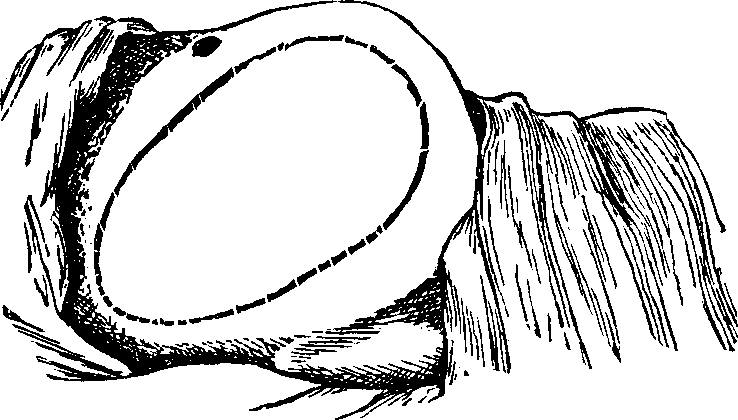
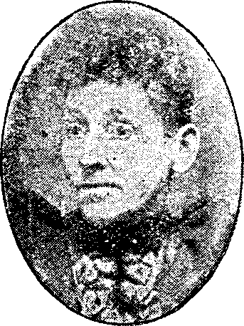
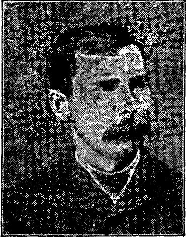
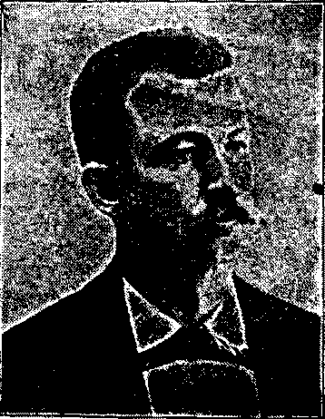
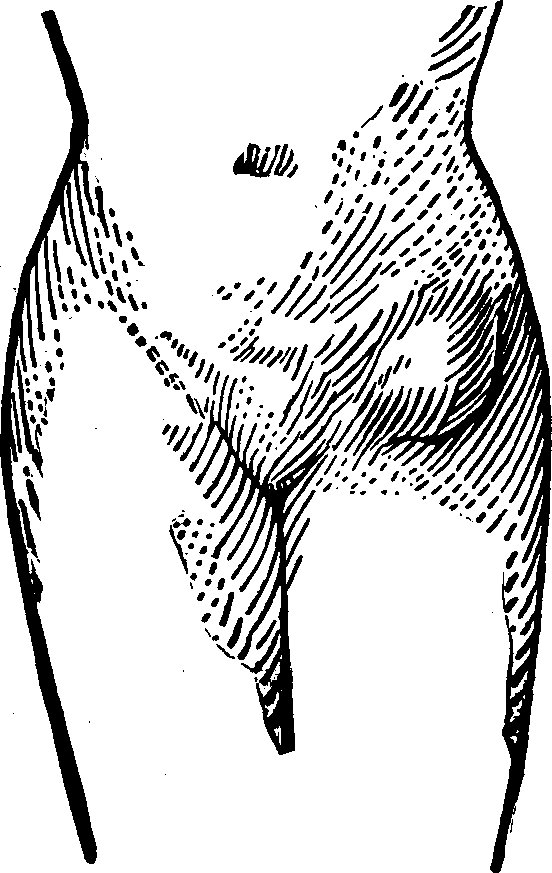
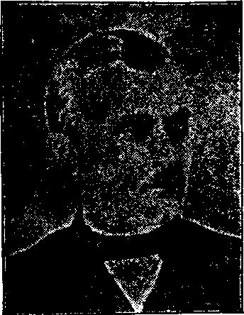
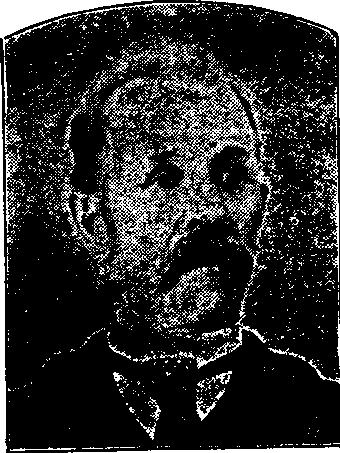
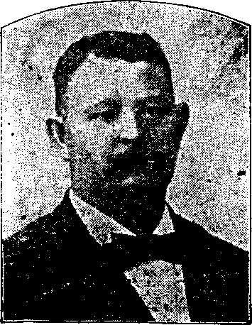
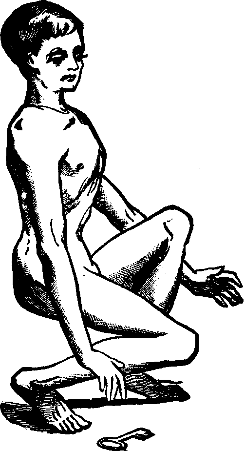

Fig. 8.
| << PREVIOUS | FIRST | NEXT >> |
| | 01 | 02 | 03 | 04 | 05 | 06 | 07 | 08 | 09 | | ||
The Door of Life.
The fear of pain and the dangers of childbirth fill many a woman's breast with dismay. In the olden days of leeches and witchcraft, it was considered sacrilegious to lessen the pains of labor. Latterly, anæsthetics have been used at the time of parturition, and now people are beginning to find out that pain and danger can be almost wholly avoided.
Proper preparation during gestation will make both as rare as they used to be common. There is no reason why childbirth should be fraught with danger and distress. It is a perfectly natural function, and should be performed in a natural way without undue suffering. Nature never intended that women should be tortured when doing the one thing which makes them wholly womanly. The perversion of nature's laws has brought this suffering about, and a return to right living will stop it.
Nine out of ten women are troubled more or less by weakness and diseases peculiar to their sex. It is so because they do not take proper care of themselves—because they neglect little ills and little precautions. A woman in perfectly hearty health goes through her time of trial with comparative ease. The thing to do then, is to make all pregnant women healthy—to strengthen them generally and locally. The medicine and tonic to do it with is Dr. Pierce's Favorite Prescription.
It is a powerful invigorant and nervine. It soothes and strengthens the nerves and acts directly on the feminine organism in a way which fits it for the proper and regular performance of all its functions at ill times.
Taken during gestation it robs childbirth of its dangers to both mother and child, by preparing the system for delivery, thereby shortening [pg 682]labor, lessening pain and abbreviating the period of confinement. The Favorite Prescription also promotes the secretion of an abundance of nourishment for the child, if taken after confinement, besides building up the mother's strength and making her recovery more perfect.
The term abortion is used to denote the premature expulsion of the foetus. If the expulsion takes place within four months after impregnation, it is termed abortion; if between the fourth and seventh month, miscarriage; if after the seventh month, but before the completion of the full period of gestation, premature labor.
Abortion may be due to those agents which act directly upon the uterus and cause the expulsion of the foetus; to those which occasion the death of the foetus, thereby effecting its ejection; and it may be criminal, that is, produced intentionally by direct agencies intended for that purpose.
Symptoms. The premonitory symptoms are pain in the loins and lower part of the back, a dull pain in the abdomen and thighs, nausea, chills, and palpitation. The membranes and blood-vessels of the uterus become lacerated, causing profuse hemorrhage. The discharge of blood from the vagina is sometimes attended with excessive pain.
The Causes which act directly upon the uterus to produce abortion may be violent exercise, lifting, accidents, or injuries from blows or falls. Nervous susceptibilities, a plethoric condition of the system, anæmia, exhaustive discharges, use of improper food, uterine displacements, congestion caused by excessive sexual excitement, general debility or muscular irritability, which is sometimes so great as to produce contractility of the uterus before the term of pregnancy is completed, inflammation of the cervix, ulcerations of the uterus, or any previously existing disease may produce abortion. When it has once taken place, it is apt to recur at about the same time in subsequent pregnancies.
The death of the foetus may be occasioned by a diseased condition of the embryo, amnion, or placenta, and also by convulsions or peritoneal inflammation.
Criminal Abortion is secretly practiced by women who desire to rid themselves of the evidence of immorality, and by those in wedlock who wish to avoid the care and responsibility of rearing offspring. Statistics show that it is very prevalent, undermining the health of women and corrupting the morals of society. We cannot pass over this subject in silence. Those who frustrate the processes of nature by violating the laws of life incur just penalties. All the functions of life and body are vitally concerned in reproduction. Any infraction of the Divine law, "Thou shalt not kill," is inevitably followed by punishment. The obligations to nature cannot be evaded without inevitable [pg 683]penal effects. Furthermore, all such transgressors carry with them the consciousness of guilt and the feeling of secret woe.
"O God! that horrid, horrid dream
Besets me now awake!
Again, again, with dizzy brain.
The human life I take,
And my red right hand grows raging hot,
Like Cranmer's at the stake."—HOOD.
What shall we say concerning abortionists, men and women who are willing to engage in the murder of innocents for pay? True, there may be circumstances in which it is not right to continue in the pregnant condition, such as when the children of an unfortunate marriage are idiots, or the pelvis of the woman is so deformed that she cannot bear a living child. All such cases should be submitted to the family physician, who ought to be made acquainted with all the circumstances and facts relating to the case, when he can summon other physicians for counsel, and their deliberations may determine the propriety or necessity of bringing on an abortion.
Parties have written to us and others have made personal application under circumstances when it might have been right for their family physician to have induced abortion. We wish to have it distinctly understood that we will not under any circumstances prescribe medicines or perform any operation to relieve women of pregnancy.
Mechanical means are resorted to by abortionists, and many women produce abortion upon themselves. It always terminates in lasting injury and sometimes in speedy death. Certain medicines will sometimes produce abortion but they are very unsafe. An opinion is very prevalent that if abortion be produced before the movements of the foetus are felt, there is no crime committed. It should be remembered that life begins with conception, and, at whatever period of pregnancy abortion is committed, life is destroyed. Whoever disobeys the Divine injunction cannot escape his own consciousness of the deed, and the anguish and bitter remorse which ever after disturb the soul.
Treatment. In threatened abortion, there is pain in the back or lower part of the abdomen, and later some flow of blood. The first object is to obtain perfect rest and quiet, and assume the recumbent position. By lying down, the blood will be more easily diverted to the surface of the body. Gallic acid, in doses of five grains every two or three hours, is often a valuable agent to arrest the hemorrhage, but opium in some form should be relied upon principally. A Dover's powder, ten grains, may be administered, to assist in determining the blood to the surface and extremities of the body and to allay irritation. The room should be cool, the patient should lie on a hard bed, and all company should be avoided, for excitement favors abortion. If the flow of blood equals a gill in amount, there is little hope of preventing abortion, and the treatment of the case should be entrusted to the family physician.
[pg 684]An imaginative poet avers that woman is the link connecting Heaven and earth. True it is, we see in her the embodiment of purity and heavenly graces, the most perfect combination of modesty, devotion, patience, affection, gratitude and loveliness, and the perfection of physical beauty. We watch with deep interest the steady and gradual development from girlhood to womanhood, when the whole person improves in grace and elegance, the voice becomes more sonorous and melodious, and the angles and curvatures of her contour become more rounded and amplified, preparatory for her high and holy mission.
The uterus, or womb, and ovaries, with which her whole system is in intimate sympathy, render her doubly susceptible to injurious influences and a resulting series of diseases, from which the other sex is entirely exempt. By their sympathetic connections they wield a modifying influence over all the other functions of the system. Physically and mentally, woman is man modified, perfected,—the last and crowning handiwork of God. When, therefore, this structure so wonderfully endowed, so exquisitely wrought, and performing the most delicate and sacred functions which God has ever entrusted to a created being, is disturbed by disease, when the nicely-adjusted balance of her complex nature deviates from its true and intended poise, the most efficient aid should be extended, in order that the normal equilibrium may be regained, her health restored, and her divine mission, on which human welfare so largely depends, be fulfilled. Its importance should elicit the best efforts of the highest type of mind, the ripe development of genius, and the most scientific administration of the choicest, rarest, and purest medicinal elements in the whole range of nature.
A Vast Experience. As the remedial management of diseases of women has, for many years, entered very largely into our practice at the Invalids' Hotel and Surgical Institute, located at 663 Main Street, Buffalo, N.Y., comprising the treatment of many thousands of cases annually, we have been afforded great experience in perfecting and adapting remedies for their cure, enabling us to meet their requirements with increased certainty and exactness.
Treating the Wrong Disease. Our improved and perfected system of diagnosing, or determining, the exact nature and extent of chronic affections, which, in most cases, we are able to do at a distance, and without a personal examination of the patient, as will be more particularly explained in the appendix, or latter part of this little book, has enabled us to avoid the blunders so often committed by the general practitioner, who not infrequently treats those afflicted with chronic ailments peculiar to women, for long weeks, and perhaps months, without ever discovering their real and true disease, or condition. [pg 685]Thus, invalid women are often uselessly subjected to treatment for dyspepsia, heart disease, liver or kidney affections, sick headaches, and various aches and pains, as if they were primary diseases, when in reality, they are only so many local manifestations, or symptoms, of some overlooked derangement, or disease, of the womb. For, as we have already intimated, every organ of the system is in intimate sympathy with the uterus, or womb. Any disease, either functional or organic, of this organ, is at once manifest through several, if not all, the sympathizing organs of the system. When we receive a sharp blow upon the elbow, the pain is felt most keenly in our little finger. Just so in diseases of the womb; often the most distress is felt in organs or parts of the system quite distant from the real seat of disease. On this account, thoughtless, easy-going and ignorant physicians are misled, and very commonly mistake the invalid's disease for some affection of the stomach, heart, liver, kidneys, or other organ, when really it is located in the uterus. Cure the disease of the womb, and all these disagreeable manifestations, or symptoms, vanish. Their cause being removed, the various dependent derangements, and disagreeable nervous sensations and sufferings rapidly give way, and vigorous health is firmly re-established.
Time and Perseverance in Treatment Required to Cure. Most chronic diseases of women are slow in their inception, or development, and their removal or cure must necessarily be gradual. Disease that has been progressing and becoming more firmly established for months, or perhaps years, cannot, except in rare cases, be hastily dislodged, and the system restored to perfect health. The process of cure, like the development and progress of the disease, must be a gradual one, accomplished step by step. Often, too, the use of medicines that, if persisted in, will prove beneficial and curative, will, for a considerable time, arouse in the system very disagreeable sensations, and many times this leads unthinking persons to become frightened or discouraged, and to quit the treatment best adapted to their cases if only faithfully carried out. In many forms of womb disease, their are organic lesions or changes, that can be repaired only by a gradual process, just as an external wound would heal,—not suddenly, but by a constant, slow filling in and building up, or by the gradual development or growth of one cell upon another. Just as a great breach in a wall would be repaired by filling in brick upon brick, until the defect is effaced, so must these lesion's be removed by gradual processes. When fully repaired, the dependent, sympathetic derangements, disagreeable sensations, and all the long train of consequential symptoms are, one by one, abolished.
Not Limited in Our Remedial Resources. It should be borne in mind that, while we recommend, in this little volume, certain courses of treatment for ordinary cases, the remedies mentioned do not by any means embrace all our resources in the way of medicines and [pg 686]other curative agencies, especially for complicated, difficult, or very obstinate cases. In many of the latter class we can send medicines that are exactly adapted to the case, if the invalid will fill out one of our "Applications for Treatment," which may be found folded in the latter part of this book, or which will be sent to any address, on application, by mail. In most womb diseases, the chemical and microscopical examination of the urine also furnishes valuable aid in determining the exact condition of the patient, as well as the precise stage of the local organic disease. Full directions for putting up and sending such samples may be found in the "Appendix" of this little volume. Every case submitted to us, either by letter or in person, receives the careful and deliberate consideration of a full Council of specialists before a decision as to the nature of the malady, or the proper course of treatment to be employed, is determined upon. The great advantage of this system of practice must be obvious to every intelligent, thoughtful person. No experimenting is ever resorted to. The treatment is specially and exactly adapted to each individual case, which requires such judgment, skill, and nicety of discrimination, as has only been acquired by our specialists through long and diligent study, and an experience embracing the treatment annually of many thousands of cases of those chronic diseases which are peculiar to women.
WORLD'S DISPENSARY MEDICAL ASSOCIATION,
663 Main Street, Buffalo, N.Y.
The function of the ovaries is to furnish ova or germs, and the functions of the uterus or womb are to secrete mucus; to exude the menses; to secrete the decidua; to contain and nourish the foetus and to effect its expulsion.
Menstruation, or the menses, monthly visitation, catamenia, menstrual flow, courses, or periods, usually makes its appearance in the female between the twelfth and fifteenth years, at which time the reproductive system undergoes remarkable changes. A marked characteristic of menstruation is its regular return about every twenty-eight days. The menstrual flow usually continues from three to six days, and the discharge seems to be ordinary blood, which, during its vaginal passage, becomes mixed with mucus, and is thereby deprived of the power of coagulation. The quantity exuded varies from two to eight ounces, but the amount consistent with the health of one person, may be excessive and weakening in another. This function is regarded as being regular when its effect upon the system is favorable, for whatever organic process directly contributes to the health should be considered as normal. It occurs at regular intervals for about thirty [pg 687]years, when menstruation and the aptitude for conception simultaneously cease.
The departures from healthy menstruation are numerous. The most important of these are amenorrhea, dysmenorrhea, and menorrhagia.
The term amenorrhea signifies the absence of menstruation when it should occur. It may be considered under two general heads: when it fails to be established at the proper age, and when, after having made its appearance, it ceases to return at the usual periods. The term retention has been applied to the first, and that of suppression to the latter. Menstruation may fail to be established in consequence of organic defects, or from some abnormal condition of the blood and nervous system.
Malformation of the Vagina. Retention of the menses may result from malformation of the vaginal canal, which sometimes terminates before it reaches the womb, being simply a short, closed sac. If the uterus and ovaries are perfect, all the feminine characteristics are manifest, and a vaginal exploration discloses the nature of the difficulty. If, however, the sides of this passage adhere in consequence of previous inflammation, they may be carefully separated by a surgical operation, and this function restored.
Absence or Malformation of the Womb. The uterus may be deformed or entirely absent, and yet there be an inclination, or symptoms indicative of an effort, to establish this function. The individual may be delicate in organization, graceful in bearing, refined and attractive in all feminine ways, and yet this organ may be so defective as to preclude the establishment of the menstrual function. Sometimes there is merely an occlusion of the mouth of the uterus, the perforation of which removes all difficulty. In others, the neck of the womb is filled with a morbid growth, or the walls of its canal are adherent, as the result of inflammation, and may be separated by a small silver or ivory probe, and the menses be thus liberated.
Imperforate Hymen. The hymen is a circular, or semilunar membrane, which imperfectly closes the outer orifice of the vagina in the virgin. When of a semilunar shape, it usually occupies the lower or posterior portion of the canal, leaving an opening in the upper or anterior portion, varying from the size of a quill to that of a thimble, through which the menstrual fluid exudes. This membrane is usually ruptured and destroyed by the first sexual intercourse, and, hence, its presence has been considered evidence of virginity. Its absence, however, must not be considered a conclusive evidence of sexual intercourse, for, as Dr. Dunglison says, "many circumstances of an innocent character may occasion a rupture or destruction of this membrane. It is often absent in children soon after birth; while it may remain entire [pg 688]after copulation. Hence, the presence of the hymen does not absolutely prove virginity; nor does its absence prove incontinence, although its presence would be prima facie evidence of continence."
Sometimes this membrane, when not imperforate, is so thick and strong as to render sexual intercourse impossible, and requires a cutting operation to open the vagina. Several such cases have been operated upon at the Invalids' Hotel and Surgical Institute.
It occasionally happens that the hymen is entire, or imperforate, at birth. This may not be discovered before puberty. But when this period arrives and the menstrual discharge takes place into the vagina, the female will suffer from the retention and accumulation of this secretion, and ultimately a tumor or a protrusion of the membrane which closes the vagina will occur, giving rise to severe pain and other serious symptoms. The retained menstrual fluid, increasing in quantity at every monthly period, dilates the womb as well as the vagina, and even the Fallopian tubes become distended, presenting at length an urgent necessity for relief.
Treatment. This condition admits of relief only by operative surgery. The operation consists in dividing the hymen by a crucial incision, thus allowing the accumulated fluid to be discharged, after which the vagina is cleansed by syringing it with warm water.
Absence of the Ovaries. Let us suppose the case of a young woman who has fully reached the period of puberty without having menstruated. All the organs which we have described, are manifestly developed, she is healthy, vigorous, robust, and able to exercise freely or to engage in laborious occupations. But we notice that her voice is not sweetly feminine, nor is her presence timid, tender, and winning; there is wanting that diffident sexual consciousness, which gently woos, and, at the same time, modestly repels, and tends to awaken interest, curiosity, and desire. Considering also that she has never manifested any inclination to menstruate, we are irresistibly led to the conclusion that the ovaries are wanting; the delicate mustache upon the upper lip, the undeveloped breasts, the coarse features, and her taste for masculine pursuits, all concur in this diagnosis. Thus we account for the harshness of the voice, fitted for command rather than to express the mellow, persuasive cadences of love. Such a malformation cannot be remedied.
Retention and Suppression from Morbid Conditions of the Blood. Non-appearance, as well as suppression of the menses, may result from an abnormal state of the blood. The first condition which demands our attention under this head is plethora. In robust, plethoric females the menses are sometimes very tardy in their appearance, and every month the attempt to establish this function is attended with pain in the head, loins, and back, chilliness, nausea, and bloating of the abdomen. Sometimes there is intolerance of light or sound, and cerebral congestion, amounting almost to apoplectic symptoms. The [pg 689]pulse is full and strong, the blood abundant and surcharged with red corpuscles. Such persons may be accustomed to luxurious living, and there is evidently a predisposition to abnormal activity of the alimentary functions.
Treatment. We may briefly suggest that such subjects should engage in laborious physical exercise in order to expend the surplus of vitality, and should lessen the daily amount of food taken, and use that which is light and unstimulating. We should also prevent the determination of blood to the head, by keeping it cool and the feet warm, and by increasing the flow of blood to the extremities. The volume of the circulation may be diminished by acting upon the natural outlets, such as the skin, kidneys, and bowels. The proper means and appliances for quickening the circulation of the blood are indicated, and friction upon the surface, bathing, the daily use of such cathartics as Dr. Pierce's Pleasant Pellets, and, finally, the use of some general uterine stimulant, such as Dr. Pierce's Favorite Prescription, will generally prove successful in cases of amenorrhea resulting from plethora.
Retention and Suppression from Anæmia. To describe the condition of the patient whose blood is low and deprived of the richness, warmth, and bloom, it once possessed when it kindled admiration and enthusiasm in others, is but to give a picture of a numerous class of female invalids. It is sad to see beauty fading, vigor waning, and Bright's disease or consumption slowly wasting the blood and consuming the vital cells, until the spirit can no longer dwell in its earthly abode and death claims the skeleton for dust.
Chronic Decline, with its attendant anæmia, may be induced by bad habits, destitution, or constitutional depravity. Sickly forms, wrecks of health, address our senses on every side. All these subjects evidently once had a capital in life, sufficient, if properly and carefully husbanded, to comfortably afford them vital stamina and length of days. Alas! they have squandered their estate, perchance in idleness and luxurious living, or have wasted it in vanities or misdirected ambition. Having become bankrupts in health, there is necessarily a failure of the menstrual function, and then follows a panic. All the blame of the insolvency and general derangement, is unjustly attributed to the non-performance of the duties of the uterus. Thus, this organ is altogether dependent Upon the general health for its functional ability, yet frequently treatment is instituted to compel menstruation, regardless of the condition of the system. Thus the enfeebled uterus is wrongfully held responsible for general disorder, because it ceases to act, when by acting it would further deplete the blood and thus materially contribute to the already existing chronic decline.
No matter what are the causes of this decline, whether they are the follies of fashion, the effect of indolence, debility in consequence of insufficient food, perversion of nutrition by irregular habits, lack of exercise, [pg 690]or the taking of drastic medicines, the result is anæmia and amenorrhea.
Treatment. We would suggest in such cases a nutritious diet, increased exercise, cleanliness, regular habits, hard beds, and useful employment. The diet may be improved by animal broths, roasted meats, fresh beef, mutton, chicken, or eggs, and the dress should be comfortable, warm, and permit freedom of motion. The patient should indulge in amusing exercises, walking, swinging, riding, games of croquet, traveling, singing, percussing the expanded chest, or engage in healthful calisthenic exercises. The hygienic treatment of this form of amenorrhea, then, consists in physical culture, regular bathing, and the regulation of the bowels, if constipated, as suggested in this volume under the head of constipation.
The medical treatment should be directed to enriching the blood, improving nutrition, toning up the generative organs, and the health of the whole system. This requires the employment of uterine and general tonics, and Dr. Pierce's Favorite Prescription, which is sold by druggists, happily combines the properties required. It improves digestion, enriches the blood, exercises a tonic and gently stimulating effect upon the uterus and ovaries, and thus promotes the function of menstruation. It is not a strong emmenagogue, but operates slowly, yet surely, and in accordance with physiological laws, being eminently congenial in its effects upon the female system, and, hence, not liable to do harm. There is danger in employing active driving medicines, besides, no emmenagogue, however powerful, can establish the menstrual function so long as the system is in a debilitated condition and the blood reduced. The restorative effects of the "Favorite Prescription" should be secured by administering it regularly, in from one to two teaspoonful doses, three or four times a day, for several weeks, and as the system is built up and those symptoms appear which indicate a return of the menses, their visitation may be encouraged by the use of hot foot and sitz-baths, and free doses of Dr. Pierce's Compound Extract of Smart-weed. But the latter should only be used when symptoms of approaching menstruation are manifested. By following out this course of treatment, a soft flush will gradually take the place of the pallor of the cheeks, the appetite will return and the health will be restored.
Acute Suppression of the Menses may be caused by strong emotions, as excessive joy, or by violent excitement of the propensities, as intense anger, sudden fright, fear, or anxiety. Suppression may result from sudden exposure to cold, immersion of the hands or feet in cold water, drinking cold water when the body is heated, sitting on the cold ground or damp grass, or from a burn or wound. It is not uncommon for women to labor in the heated wash-room, pounding, rubbing, and wringing soiled linen, thereby overtaxing the delicate physical system. While feeling tired and jaded, all reeking in perspiration, [pg 691]they rinse and wring the clothes out of cold water and hang them upon the line with arms bare, when the atmosphere is so freezing that the garments stiffen before they finish this part of the task. Is it any wonder that acute suppressions occur or that inflammations set in?
The symptoms which naturally follow are a quick pulse, hot skin, thirst, fever, headache, and dizziness, and the inflammation may locate in the ovaries, uterus, lungs, bowels, brain, or other parts. No matter what organs are attacked the menses are suppressed. The suppression can generally be attributed to an adequate cause, resulting in constitutional disturbance. The severity and duration of the attack and the power of the constitution to resist it, must determine the gravity of the consequences.
Treatment. As acute suppression of the menses is due to derangement of the circulation of the blood, caused by taking cold, by violent excitement of the propensities or excessively strong emotional experience, the prominent indication is to secure its speedy equalization. Give a hot foot, a warm sitz, or the spirit vapor-bath and administer full doses of Dr. Pierce's Compound Extract of Smart-weed, to produce free perspiration. Dr. Eberle, a very celebrated medical author, says that he used the Extract of Smart-weed in twenty cases of amenorrhea, and affirms, "with no other remedy or mode of treatment have I been so successful as with this." Our experience in the use of the Extract has been equally satisfactory. Should this treatment not establish the function, Dr. Pierce's Favorite Prescription should be given three times a day until the system is invigorated, say for twenty-eight days, when the above course may be repeated, and generally with success. Should the case be complicated with inflammation of the lungs, brain, or other vital organs, manifesting alarming symptoms, the family physician should be called. The treatment should be active and suited to the indications of each particular case. When the disease becomes chronic, the active stage of symptoms having passed, and it continues to linger without making the desired improvement, all the means suggested for the treatment of suppression from anæmia should be employed. Their use will be followed by the most gratifying results. It should be borne in mind, however, that when we have suggested any treatment in this volume, it is generally such as the family may institute and apply, and does not, by any means, represent the variety or extent of the remedial resources which we employ when consulted in person or by letter. We refer our readers to only a few of the safe and reliable remedies which we have prepared and placed within their reach, and give them just such hygienic advice as we think will best serve their interests.
[pg 692]Dysmenorrhea, from its Greek derivation, signifies a difficult monthly flow, and is applied to menstruation when that function becomes painful and difficult. Menstruation, like other healthy operations of the body, should be painless, but too frequently it is the case, that discomfort and distress commence twenty-four hours before the flow appears, and continue with increasing pain, sickness at the stomach, and vomiting, until the patient has to take to the bed. When the discharge does occur, speedy relief is sometimes obtained, and the patient suffers no more during that menstrual period. With others, the commencement of the function is painless, but from six to twenty-four hours after, the flow is arrested and the patient then experiences acute suffering. Pain may be felt in the back, loins, and down the thighs. Sometimes it is of a lancinating, neuralgic kind, at others, it is more like colic. Frequently the distress causes lassitude, fever, general uneasiness, and a sense of lethargy. There are those who suffer more or less during the entire period of the flow, while the distress of others terminates at the time when a membranous cast is expelled. For convenience of description, dysmenorrhea has been divided into the following varieties: neuralgic, congestive, inflammatory, membranous, and obstructive.
The neuralgic variety of dysmenorrhea, sometimes called spasmodic or idiopathic, occurs when there is excessive sensibility of the ovaries and uterine nerves, which sympathetically respond, especially to cutaneous, biliary, and sexual irritation, and when ovarian or uterine irritation is communicated to distant nerve-centres. In the first class, usually comprising lean persons of an encephalic temperament, whatever disorders the functions of the general system, instantaneously reflects upon the ovaries and uterine nerves, and the menstrual function Is correspondingly disturbed, and, instead of being painless, the flow becomes spasmodic, with paroxysms of distress. In the second class, which includes those persons who are plethoric, the ovarian and uterine nerves seem to be the origin and centre of irritation, which is sometimes so severe as to cause indescribable pain. We have known women who affirmed that the severity of labor pains was not so great as that from this cause. In one instance, the subject suffered thus for eleven years, and then became a mother, and has ever asserted that her periodic suffering was far more intense than the pain experienced during her confinement. These neuralgic pains fly along the tracks of nerves to different organs, and capriciously dart from point to point with marvelous celerity, producing nausea, headache, and sometimes delirium.
[pg 693]In the congestive variety of dysmenorrhea, the menstrual period may be ushered in without pain; after a few hours, the pulse becomes stronger and more rapid, the skin grows hot and dry, the menses stop, there is uneasiness, restlessness, and severe pelvic pains. Evidently, the mucous membranes of the Fallopian tubes and uterus have become congested, and the pain results from the arrest of the functional process, the exudation of blood.
The causes are plethora, exposure to cold, excitement of the emotions or passions, and a morbid condition of the blood. Sometimes congestion arises in consequence of a displacement of the uterus.
In the inflammatory variety, the mucous membrane of the uterus is the seat of irritation. The blood flows into the capillary vessels in greater abundance than is natural, and those vessels become over-dilated and enfeebled and so altered in their sensibility as to produce local excitement and pain. It may be associated with inflammation of the ovaries, peritoneum, or bladder. Upon the return of the menses, there is a dull, heavy, fixed pain in the pelvis, which continues until the period is completed. There is generally tenderness of the uterus, and also leucorrhea during the intervals between each monthly flow.
In the membranous variety of dysmenorrhea, the entire mucous membrane which lines the cavity of the uterus, in consequence of some morbid process, is gradually detached and expelled at the menstrual period.
Symptoms. There are steady pains at the commencement of the menstrual flow, and they increase in violence and become decidedly expulsive. The mouth of the uterus gradually dilates, and finally, the membrane is forced out of the uterus, attended with a slight flow of blood and an entire subsidence of the pain.
The treatment, in all the preceding varieties of dysmenorrhea, should consist of measures to determine the circulation of the blood to the surface, and increase the perspiratory functions. Congestion and inflammation of the internal organs are generally induced by exposure to cold or from insufficient clothing. Sometimes they follow from neglect of the skin, which is not kept clean and its excretory function encouraged by warm clothing. The domestic treatment at the monthly crisis should be commenced by the administration of hot foot, and sitz-baths, after which the patient should be warmly covered in bed, and bottles of hot water applied to the extremities, back, and thighs. Dr. Pierce's Compound Extract of Smart-weed should be given in full doses, frequently repeated, to secure its diaphoretic, emmenagogue, and anodyne effects, which, for this painful affection, is unsurpassed. For the radical cure of this disease, whether of a congestive, inflammatory, or neuralgic character, Dr. Pierce's Favorite Prescription, which is sold by druggists, is a pleasant and specific remedy, which will most speedily correct the abnormal condition that produces the trouble, and thereby obviate the necessity of passing this terrible [pg 694]ordeal at every monthly period. The patient should take two teaspoonfuls of the medicine three times a day, and keep up its use in these doses for weeks. Frequently, one month will suffice to cure, but in most cases, a longer season is required. In the end, the suffering patient will not be disappointed, but will become a new being, ready for the enjoyment and duties of life. The bowels should be kept regular throughout the treatment by the use of Dr. Pierce's Pleasant Pellets, if necessary. A hand or sponge-bath should be used daily to keep the skin active, and be followed by a brisk rubbing of the surface with a rough towel or flesh-brush. A wet sheet pack will cleanse the pores of the skin and invite the blood into the minute capillaries of the surface, and thus prove of great benefit. It should be repeated after an interval of seven days, but ought to be omitted if near the approach of a menstrual period. The clothing should be warm, to protect the system against changes of temperature; especially should every precaution be taken to keep the feet dry and warm. The patient should walk in the open air, and the distance should be regularly lengthened at each succeeding walk. If the course of treatment which we have suggested be faithfully pursued, a permanent cure will be effected.
In the obstructive variety of dysmenorrhea, some organic impediment hinders the exit of the menstrual blood from the uterus, which, consequently, becomes distended and painful. The pain may be constant, but is most acute when the uterus makes spasmodic efforts to discharge the menstrual blood. If these efforts prove successful, there is an interval of relief. Flexion or version of the womb may produce partial occlusion of the canal of the neck of the uterus, thus preventing the free flow of the menstrual fluid through it. Tumors located in the body or neck of the uterus often cause obstruction to the free discharge of the menses. Imperforate hymen and vaginal stricture also sometimes cause obstruction and give rise to painful menstruation. As these several abnormal conditions and diseases will be treated of elsewhere in this volume, we omit their further consideration here.
Partial adhesion of the walls of the neck of the womb may result from inflammation of the mucous lining, and prevent a free and easy exit of the menstrual fluid. In many cases, the contracted and narrowed condition of the canal of the cervix seems to be a congenital deformity, for we can trace it to no perceptible cause. It is also true that contraction and partial, or even complete, stricture of the cervix, or neck of the womb, often results from the improper application of strong caustics to this passage by incompetent and ignorant surgeons. Every person has observed the contraction of tissue caused by a severe burn, which often produces such a distortion of the injured part as to disfigure the body for life. A similar result is produced when the neck of the womb is burned with strong caustics. The tissues are destroyed, and, as the parts heal, the deeper-seated tissues firmly contract, forming a hard, unyielding cicatrix, thus constricting the [pg 695]neck of the womb, through which the menses pass into the vagina.
Fig. 3. THE UTERINE DILATOR. This instrument is introduced
into the canal of the uterine neck with its blades closed. By means of the
thumb-screw the blades are then separated as shown in this illustration,
the cervical canal being thereby dilated to the required extent.
Treatment. From the nature of this malady, it will readily be seen that no medical treatment can effect a radical cure. We must therefore resort to surgery. In a small proportion of cases, the stricture may be cured by repeated dilations of the constricted part of the cervical canal. This may be accomplished by using a very smooth probe which is fine at the point, but increases in size, so that its introduction will widen and expand the orifice and canal. The stricture may be overcome in many cases by using different sized probes. In some instances, we have employed the uterine dilator, represented by Fig. 3. We have also introduced sea-tangle and sponge tents into the neck of the womb, and allowed them to remain until they expanded by absorbing moisture from the surrounding tissues. The latter process is simple, and in many cases preferable. By means of a speculum (see Figs. 15 and 16), the mouth of the womb is brought into view, and the surgeon seizes a small tent with a pair of forceps and gently presses it into the neck of the womb, where it is left to expand and thus dilate the passage. If there seems to be a persistent disposition of the circular fibers of the cervix to contract, and thus close the canal, a surgical operation will be necessary to insure permanent relief. In performing this operation, we use a cutting instrument called the hysterotome (see Figs. 4 and 5). By the use of this instrument, the cervical canal is enlarged by an incision on either side. The operation is but slightly painful, and, in the hands of a competent surgeon, is perfectly safe. We have operated in a very large number of cases and have never known any alarming or dangerous symptoms to result. After the incision, a small roll of cotton, thoroughly saturated with glycerine, is applied to the incised parts, and a larger roll is introduced into the vagina. The second day after the operation, the cotton is removed, the edges of the wound separated by a uterine sound or probe, and a cotton tent introduced into the cervix, and allowed to remain, so that it will expand and thus open the wound to its full extent. This treatment must be thoroughly applied, and repeated every alternate day, until the incised parts are perfectly healed.
[pg 696]
Fig. 4.
WHITE'S HYSTEROTOME. In operating, this instrument is introduced into the
canal of the neck of the womb, when a thumb screw in the end of the handle
is turned, by which a small blade is thrown out from each side, and as the
instrument is withdrawn from the canal an incision is made on each side,
thus enlarging the passage. The upper figure illustrates the instrument
closed, ready for introduction; the lower one, with the blades projected
for cutting.
Many times patients cannot understand why it is that the operation of cutting the constricted cervix causes no pain; they often being entirely unconscious of the making of the incision. The explanation is easy. The cervix uteri, or neck of the womb, is supplied with but few nerves of sensation, and is almost as destitute of sensation as the finger or toe nails, the paring of which causes not the slightest pain. On this account we never find it necessary to administer chloroform or any other anæsthetic when undertaking this operation. If the patient be extremely sensitive the application to the cervix of a weak solution of cocaine is quite sufficient to completely benumb or anesthetize the parts so as to entirely avoid all pain from the operation.
Fig. 5. STOHLMAN'S HYSTEROTOME. This instrument has two cutting blades
which shut past each other, as seen in the lower figure, so as not to cut
when introduced into the canal of the uterine neck. After introduction, the
cutting blades are separated, as shown in the upper figure, the extent of
the incision being regulated by the thumb-screw attached to the handles, as
represented in the lower figure.
The word Menorrhagia, which is of Greek derivation, literally means monthly breaking away, and is employed to designate profuse menstruation. This disorder must not be confounded with those hemorrhages which are not periodical, and which are due to other causes. The term menhorrhagia is restricted to an immoderate monthly flow. The menstrual flow may occur too often, continue too long, or be too profuse. It induces a feeble pulse, cold extremities, weak respiration, general debility, and may occur in opposite states of the system, i.e., in women who have a plethoric and robust habit, or in those of flaccid muscles and bloodless features. When the menstrual discharge is natural, it is so gradual that by mixing with the vaginal secretions it is prevented from coagulating, while in this disease, clots are often formed.
Symptoms. In women of a plethoric habit, it is ushered in by itching and heat in the vagina, pain and a feeling of weight in the loins and lower part of the abdomen, and, at times, the breasts become hot and painful. There is considerable thirst, headache, and giddiness. At last, the blood appears and flows profusely, and all the violent symptoms at once subside. The rest of the period is marked by an inordinate flow, leaving the system weak from the loss of blood. It oftener occurs, however, in persons who are naturally weak and delicate, in which case the periods are more frequent and continue longer, and after a time they are renewed by any bodily exertion or mental emotion, so that a constant drain exists. If the flow of blood is not continuous, leucorrhea intervenes. The patient gradually loses strength and becomes languid, her face is pale and usually bloated, livid circles appear around the eyes, the appetite is impaired, the bowels are constipated, and the feet and ankles swollen. Lack of blood in the brain is indicated by headache, ringing in the ears, and dizziness. The patient is nervous and irritable, being disturbed by the slightest noise, and the heart palpitates after the least exertion.
Causes. The first form is caused by eating too much rich and highly-seasoned food, drinking wine, porter, ale, or beer, want of exercise, in brief, whatever induces plethora; the second results from an insufficient or poor diet, leucorrhea, frequent abortions, want of ventilation, inherent feebleness, and whatever depresses the vital powers. Either form may be due to syphilitic taints, excessive sexual indulgence, accidents of pregnancy, or organic diseases of the womb. The morbid affections of the womb most likely to induce menorrhagia, are granular ulceration of its mouth and neck, fungous degeneration of its lining membrane, and tumors within that organ. As these subjects [pg 698]will be severally considered hereafter, we shall here dismiss them with this brief notice.
Profuse menstruation is very prone to occur in young women of a lymphatic temperament, whose organs are sleazy in texture.
Treatment. To control the excessive flow, the patient should remain in her bed, and assume the recumbent position until the period is passed. If circumstances prevent strict compliance with this rule, it should be observed as nearly as possible. Warmth should be applied to the feet, and cold cloths, which ought to be removed as soon as they become warm by the heat of the body, should be repeatedly placed upon the back and abdomen. A strong tea made from cinnamon bark, or witch-hazel leaves or bark, taken freely, will prove very efficacious in checking the flow. The fluid extract of ergot, in doses of from half a teaspoonful to a teaspoonful, in a little water or cinnamon tea, is one of the most effectual remedies in this affection. Another valuable remedy for arresting menorrhagia is an infusion of Canada fleabane; or the oil of this plant may be administered in doses of from five to ten drops on sugar. Gallic acid is also a good styptic to employ in these cases. If there is febrile excitement, a hard pulse, frequent and throbbing, and if there is headache, thirst, parched lips, hot and dry skin, as is sometimes the case, then menorrhagia is due to an augmented action of the heart and arteries, and the indication of treatment is to diminish vascular action. This may be temporarily accomplished by the use of veratrum viride, which should be continued until the flow is sufficiently diminished.
The means already suggested will generally prove effective in controlling the inordinate flow at the time. Treatment that will produce permanent relief should then be adopted. The condition of the skin, kidneys, and bowels, requires attention for noxious elements should not be retained in the system. To give tone to weakened pelvic organs we know of nothing more specific in its effects than Dr. Pierce's Favorite Prescription, which is sold by druggists. It should be taken continuously for weeks, in order to fully correct the extremely weakened condition of that organ. It also aids nutrition, and thus tones up the general system, so that in the form of profuse menstruation, resulting from debility, the patient is strengthened, her blood enriched, and her nervousness quieted, which constitutes the necessary treatment to make the cure permanent.
As women approach the critical age, and menstruation ceases, if they are anæmic, their condition is pitiable. This period is popularly denominated the turn of life. Under favorable circumstances, the vitality is decidedly enhanced, and the decline of this function is attended with a revival of the bodily powers. But when this crisis has been preceded by excessive labor, when intemperance or excesses of any kind have deranged the bodily functions and perverted nutrition, when the mind has been long and deeply depressed, or when the insidious [pg 699]progress of disease of the heart, liver, or other Important organs, occurs in consequence of irregularities of living, then there is danger of congestion of the uterus and a protracted and profuse menstrual flow, which favors a decline.
The treatment of this form of menorrhagia does not differ from that already suggested. The diet should be light and nourishing, and daily exercise, such as walking, riding, change of air and scenery, all will contribute to restoration. Especial attention should be directed to the condition of the bowels and liver. If the latter be deranged, Dr. Pierce's Golden Medical Discovery will be a most efficacious remedy. When there is a diminution of vital force, resulting in impaired nutrition and disorders of blood, an alterative is required which will insensibly and gradually restore activity by removing the causes of derangement. Impairment of nutrition is very frequently associated with functional or organic disease of the liver, and curative measures consist of the use of alteratives, friction baths, exercise, nutritive diet, and diversion of the mind. Whenever innutrition depends upon deprivation of the blood or torpor of any of the secretory organs, the "Golden Medical Discovery" will prove to be an invaluable remedial agent, for it is an alterative and at the same time a blood restorative. If the bowels be costive small laxative doses of Dr. Pierce's Pleasant Pellets should be employed. The "Favorite Prescription" regulates the menstrual function by toning up the tissues of the uterus and restraining the escape of the menses from the orifices of the blood-vessels. While the diet should be nourishing, consisting of wild game, mutton, chicken, and wine, the patient ought not to debilitate the stomach by the use of strong tea or coffee. The circulation of the blood should be quickened by riding, walking, exposure to sunlight, and fresh air. The patient ought to engage in some light occupation, in which the mind will be constantly as well as agreeably employed, but not overtaxed. By pursuing the course of treatment, invalids suffering from menorrhagia may be permanently restored to health.
[pg 700]Menstruation commonly occurs at regular monthly intervals, during a period of about thirty years. The time for its cessation depends somewhat upon the date of its first appearance. In the temperate zones it commences at about the fifteenth year, and, consequently should terminate at the forty-fifth year. Instances are common, however, in which it has been prolonged until the fiftieth and even to the fifty-fifth year. In warm climates it commences and terminates at an earlier age.
As women approach the critical period of life, if the general health and habits be good, the discharge may gradually diminish, and, at length, totally disappear, without producing any particular inconvenience, but this seldom happens. More frequently, the discharge is entirely absent for six or seven weeks, and when it does return, it is more copious than usual. In some cases, the flow is not only too profuse, but too frequent. Many months may elapse before the menses return, and, even then, they are apt to be very pale and deficient in quantity.
The fluctuations of this function occasion irregularities and disturbances of the general health. When the flow of blood is diverted from the uterus, it is liable to be directed to the head or some other part of the body. In fact, there appears to be constitutional agitation, and disorders of all the organs. Perhaps one reason for calling this a critical period is, that if there is a morbid tendency in the system, a disposition to develop tumors of the breast or uterus, these are very liable to make rapid progress at this time, since they are not relieved by the customary, local exudation of blood. It is a time favorable to the awakening of latent disorder and morbid growths, for, at the decline of the menstrual function, the uterus is not so capable of resisting vitiating influences.
There is greater liability to irritation of the bladder and rectum, and the menstrual flow may be superseded by a white, acrid discharge, caused by an inflammation of the mucous membrane of the vagina. Even if the system be not enfeebled by excessive losses of blood, debility may result from a continued irritation of the uterine organs, and cause the morbid discharge. The nervous system sympathetically responds, becoming exceedingly irritable, and thus implicating in this derangement every bodily organ. In some constitutions, the change of any habit is almost impossible, particularly if it is improperly acquired, or detrimental to health; and so we have sometimes thought respecting this function, that the more it has been abused and perverted [pg 701]during the time of Its natural activity, the greater is the disturbance occasioned when it ceases.
Treatment. There should be regularity in all the habits of life. Women are too apt to approach this important period without due care and consideration. When the physical system is about to suspend a function, it is folly to endeavor to perform the labor or assume the responsibilities which were permissible when the constitution was more robust.
How the duties of each day and hour weigh upon the energies of the mother! What intense solicitude and yearning she experiences! How unselfish is that mother who each day works steadily and faithfully for others, and who is conscious of the hidden dangers that lurk around her pathway! With confiding faith and love, she commends the interests of her children to Him who doeth all things well. She anticipates the wants of her family and strives to supply the desired comforts, thus wasting her strength in the labors prompted by her loving nature. Would it not be a greater comfort to those children to have the counsel of their dear mother in later years, than to have the bitter reflection that she sacrificed her health and life for their gratification?
Unconsciously, perhaps, but none the less certainly, do women enter upon this period regardless of the care they ought to bestow upon themselves. Without sufficient forethought or an understanding of the functional changes taking place, they over-tax their strength, until, by continuous exertion, they break down under those labors which, to persons of their age, are excessive and injurious. Is it strange, when woman has thus exhausted her energies, when her body trembles with fatigue and her mind is agitated with responsibilities, that the menses capriciously return, or the uterus is unable to withstand congestion, and capillary hemorrhage becomes excessive? If the physical system had not been thus exhausted, it would have exercised its powers for the conservation of health and strength. It is better to be forewarned of the ills to which we are liable, and fortify ourselves against them, rather than squander the strength intended for personal preservation. Let every woman, and especially every mother, consider her situation and properly prepare for that grand climacteric, which so materially influences her future health and life.
The general health should be carefully preserved by those exercises which will equalize the circulation of the blood, and the regular action of the bowels should be promoted by the use of those articles of diet which contribute to this end. Relieve the mind of responsibility, keep the skin clean, and enrich the blood with tonics and alteratives. For the latter purpose, use Dr. Pierce's Favorite Prescription and "Golden Medical Discovery." If these remedies fail, seek professional advice. A careful regulation of the habits, strict attention to the requirements of the system, and the use of tonic medicines, will very frequently render the employment of a physician unnecessary
[pg 702]Leucorrhea is the symptomatic manifestation of some uterine or vaginal affection, vulgarly called "whites." We say symptomatic, for the white or yellowish discharge, which we term leucorrhea, is not a disease, but a symptom of some uterine or vaginal disorder. We call it a white discharge to distinguish it from the menses and uterine hemorrhages. It varies, however, in color and consistency from a white, glairy mucus to a yellow or greenish, purulent, fetid matter. Sometimes it has a curdled appearance, at others, it is of the consistency of cream. Leucorrhea is the most common symptom of uterine derangement, and there are few females who are not affected by it at some period of life. It may originate either in the vagina or uterus, and it is accordingly termed either vaginal or uterine leucorrhea. The nature of leucorrhea is analogous to that of nasal catarrh. In a healthy state, the lining membrane of the genital organs secretes sufficient mucus to moisten them; but, if the mucous membrane is temporarily congested or inflamed, the secretion becomes profuse, irritating, and offensive. Vaginal and uterine leucorrhea are essentially different in character, the former being an acid, and the latter an alkaline secretion, and, while the first is a creamy, purulent fluid, the latter is thick and ropy, like the white of an egg. In fact, the latter discharge is rich in albuminous matter and blood-corpuscles, hence, its great debilitating effect upon the system, and, if not promptly arrested it is likely to produce vaginitis, pruritus vulvce, or vulvitis.
Vaginitis is indicated by intense inflammation of the mucous membrane of the vagina. When this affection is present the patient experiences a sense of burning heat, aching and weight in the region of the vagina, violent and throbbing pains in the pelvis, and the discharge is profuse and very offensive. There is also a frequent desire to urinate, and the passage of the urine causes a sensation of scalding.
Pruritus Vulvæ. The discharge irritates the nerves of the external genital parts, thus producing an almost unendurable itching. Scratching or rubbing the parts only aggravates the affection. The patient is tormented night and day, is deprived of sleep, and naturally becomes despondent. Pruritus vulvæ, in its severest forms, is often developed when the discharge is scarcely noticeable. It is the most common result or accompaniment of leucorrhea.
Vulvitis. This term indicates an inflammation of the lining membrane of the external genital parts. Sometimes the inflammation extends to the deeper tissues, causing great pain, and even suppuration, resulting in the formation of an abscess. The attack is indicated by redness, swelling, and a feverish state of the affected parts, which [pg 703]is quickly followed by a profuse flow of yellow pus, and, in some instances, small ulcers are formed on the affected parts.
Symptoms. The sufferer from leucorrhea becomes pale and emaciated, the eyes dull and heavy, the functions of the skin, stomach and bowels become deranged, more or less pain in the head is experienced, sometimes accompanied with dizziness, palpitation is common, and, as the disease progresses, the blood becomes impoverished, the feet and ankles are swollen, the mind is apprehensive and melancholy, and very frequently the function of generation is injured, resulting in complete sterility. Exercise produces pain in the small of the back and the lower portion of the spine, and, owing to a relation of the vaginal walls, the womb falls far below its natural position, or turns in various directions, according to the manner in which the weight above rests upon it. Ulcers are apt to appear upon the mouth of the womb, the matter from which tinges the discharge and stains the linen. Hysteria is often an attendant of this disease.
Causes. The immediate cause of leucorrhea is either congestion, or inflammation of the mucous membrane of the vagina or womb, or both. The exciting causes are numerous. Among others, deranged menstruation, prolonged nursing of children, pregnancy, abortions, excessive indulgence in sexual intercourse, uncleanliness, piles, uterine ulcers, and displacement of the womb, are the most common. In brief, it usually accompanies every uterine disorder which vitiates and reduces the system. During childhood, particularly in scrofulous children, discharges from the vagina are not unfrequent, owing to worms or other intestinal irritation.
Among the organic causes of leucorrhea, are ulceration of the mouth or neck of the womb and tumors. These will be considered hereafter.
Treatment. We have dwelt upon leucorrhea because of its prevalence and in order to exhibit the various forms it may assume. These reasons long ago prompted us to investigate it; and, ascertaining the derangement to consist in a relaxation of the walls of the vagina, attendant upon depressed vitality, for many years we experimented with various medicines to find those that would exercise specific properties in restoring the tissues involved to a natural condition, thereby arresting the abnormal discharge. Our efforts in that direction have been very successful, and our expectations more than realized. The treatment which we shall recommend is rational, based upon the pathological conditions of the disease, and has been attended with the greatest success.
It embraces the use of those general restoratives and specific uterine tonics, so harmoniously combined in Dr. Pierce's Favorite Prescription, a remedy which has achieved unparalleled success in the cure of this affection and won the highest praise from thousands of grateful women. It many cases, it is well to accompany its use with alterative treatment, for which the "Golden Medical Discovery" will be found [pg 704]especially effective. It is an absurd practice to arrest the discharge with astringent injections alone. The weak and lax walls of the vagina, as well as the other tissues of the system, require strength, and this can be gained only by the use of general and special tonics. Appropriate injections as auxiliary treatment will very much assist in the cure. The "Favorite Prescription" is a special tonic for the affected parts, and the "Golden Medical Discovery" is the best general alterative of which we have any knowledge. They may be taken in alternate doses every day. If the patient is very pale and anæmic, one drachm of the carbonate, or two drachms of the citrate or pyrophosphate of iron, may be advantageously added to each bottle of the "Favorite Prescription." If the carbonate be employed, as it is insoluble, the bottle should be well shaken every time before using. The functions of the skin should be kept active by frequent baths, and the patient, if able, should walk or ride in the open air, and freely expose herself to the sunshine. If the invalid be too weak to exercise much, she should go out in warm weather and sit in the open air. Sunshine is no less important in maintaining animal, than in supporting vegetable growth and health. The human being, like the plant, sickens and grows pale, weak and tender, if secluded from the sunlight. The apartments occupied should be thoroughly ventilated. Many women are sickly and feeble because they live in badly ventilated rooms.
We cannot too strongly urge in this, as in all other chronic diseases peculiar to women, that the bowels be kept regular. Frequent, but small doses of Dr. Pierce's Pleasant Pellets will prove most beneficial. If the vaginal passage is tender and irritable, an infusion, or tea of slippery-elm bark is very soothing, and may be used freely with a vaginal syringe. Whatever injection is employed, should be preceded by the free use of Castile soap and warm water, to thoroughly cleanse the parts. One part of glycerine to six parts of water is a soothing lotion when there is much tenderness, heat, and pain in the vagina. If there be no great tenderness in the vagina, or if the acute, inflammatory symptoms have yielded to the lotions already suggested, then a tonic and astringent injection should be employed.
For this purpose a wash made by dissolving one of DR. PIERCE'S PURIFYING AND STRENGTHENING LOTION TABLETS, in one pint of hot water is a superior application and will not fail to be of great benefit in controlling the disagreeable drain. If your medicine dealer is not supplied with these, mail 25 cents in one-cent stamps to us and we will forward a box of the Lotion Tablets by return post.
These Lotion Tablets have for many years been used in the treatment of obstinate cases of leucorrhea at the Invalids' Hotel and Surgical Institute, and their efficiency has been alike gratifying to both patient and physician.
If pruritus or severe itching, be also a symptom, the itching will readily yield if the parts be cleansed with Castile or other fine soap [pg 705]and warm water, followed by the application of a compound composed of two ounces of glycerine, one ounce of rose-water, and one drachm of sulphite of soda; or, for the sulphite of soda, two drachms of borax may be substituted. The following lotion is a good one to relieve pruritus: sugar of lead, two drachms; carbolic acid, half a drachm; laudanum, four ounces; glycerine, four ounces; water, four pints; mix. This may be applied to the itching parts, and also injected into the vagina.
How to Use Vaginal Injections. We usually recommend the Fountain Syringe illustrated in Fig. 6, as the most convenient instrument for administering vaginal injections. The fountains supplied by us are of soft rubber, and have extra nozzles, with which to make rectal, nasal or ear irrigations. There is also a large, long nozzle for vaginal injections.
Fig. 7. SOFT RUBBER-BULB SYRINGE
It is channeled so is to permit the free clearing [pg 706]away of the secretions as the Douche is employed. The Fountain Syringe can he used without assistance, the flow of fluid is gradual, and with a force that can be varied, by raising or lowering the reservoir, yet is never so great as to be liable to produce injurious effects.
The syringes usually sold with small nozzles or pipes are of little or no value for vaginal injections. In many instances so small a tube will pass readily into the canal of the uterus, and hence there has frequently resulted an injection of a portion of the fluid into the uterus itself, producing severe pain. It is important, therefore, in using the Vaginal Douche to employ only a large tube that has grooves in its surface for the free clearing away of the fluid as it runs from the fountain.
Where it is desired to obtain relief from a congested, inflamed or sensitive and irritable state of the mucous surface, the employment of a large quantity of water as hot as it can be borne, is of the greatest remedial value. It rapidly diminishes the size of the blood vessels, and aids in bringing about a normal circulation in the parts.
As a rule, in taking the Douche with the Fountain Syringe the rubber bag is filled, and suspended from a nail or hook at a height of from two to five feet above the patient, and the fluid passes through the tube by force of gravity, thus requiring no muscular exercise. The force of the stream depends upon the height of the fountain above the outlet nozzle. It is only necessary that the patient should assume a comfortable position where the fluid which comes from the vaginal canal can flow into a water closet, or any convenient vessel.
After a thorough cleansing of the vaginal surfaces of mucus, by means of the warm or hot water, it is sometimes advisable to inject remedial fluids. These injections may readily be made with the fountain or bulb syringe, introducing not less than from two to four ounces. This may be retained sufficiently long to exert its remedial effects upon the mucous surface, which usually takes from five to eight minutes. The hips should be elevated, and the nozzle of the syringe surrounded by a napkin or other similar material, upon which moderate compression can be made so as to retain the fluid in the vagina for the necessary period.
When suffering from any uterine trouble, it is necessary to avoid severe fatigue. The amount and character of exercise should be suited to the condition of the patient; while, most important of all, the strictest abstinence from sexual intercourse should be observed.
To those who are unable readily to obtain the Fountain Syringe above recommended we can send by mail, post-paid, one of these instruments on receipt of $2.00.
A Soft Rubber-bulb, or Pump Syringe (illustrated in Fig. 7), not so good for making vaginal injections, can be sent by us, post-paid, for from 75cts. to $1.50, the price varying with the quality and size.
[pg 707]Real sentiment and interest center in fecundity, since the desires and happiness of mankind are consummated in marriage and procreation. How dreary would life be without love, companionship, and the family! How precious are the ties that bind our hearts to father, mother, daughter, and son! The love of children is innate in the heart of every true man and woman. Each child born supplements the lives of its parents with new interest, awakens tender concern, and unites their sympathies with its young life.
How dreary is the thought that one may attain a ripe old age with neither son nor daughter to smooth the decline of life, or sorrow for his or her departure! How many women desire a first-born of love, the idol of their waiting hearts, a soul, which shall be begotten within, clothed with their own nature, and yet immortal! It is a natural instinct, this yearning of the heart for offspring; and yet little is said upon this subject, in which so much is experienced. All that is beautiful and lovely in woman, finds its climax in motherhood. What earthly being do we love so devotedly as our mother?
Fig. 8.
Men and women exhibit but little concern, mere idle curiosity, perhaps, on this subject, unless, perchance, there is no evidence of their own reproductive powers. If, however, these appear to be deficient, then few topics are more deeply interesting or investigated with greater personal solicitude. Such persons will seldom submit their condition to the family physician, for it is a delicate subject, involving personal considerations, and, therefor, they prefer to consult with one who cannot connect their unfortunate situation with any of the incidents which enter into the history of their lives. This is very natural, and sometimes is the only way to keep private matters profoundly secret. Being widely known as specialists, devoting our undivided attention to chronic affections, and having unusual facilities for the investigation and management of such cases, we have been applied to in innumerable instances, to ascertain the causes of barrenness and effect its removal.
It is admitted that the question of a woman's sterility is practically decided in the first three years of married life, for statistics show that less than ten out of a hundred women who do not indicate their fertility in the first three years of wedlock ever bear children. We have treated many who gave no evidence of fertility for a much longer period of married life, and who afterwards gave birth to children. [pg 708]We are unable to state the proper ratio of the number of the married who are childless; much less have we the right to assume that all who decline the responsibilities of motherhood are necessarily barren.
Causes. The causes of barrenness may be obliteration of the canal of the neck of the womb, sealing up of its mouth, or inflammation resulting in adhesion of the walls of the vagina, thus obstructing the passage to the uterus. In the latter case, the vagina forms a short, closed sac. In some instances, the vaginal passage cannot be entered in consequence of an imperforate hymen. Again, the cause of barrenness may either be a diseased condition of the ovaries, preventing them from maturing healthy germs, or chronic inflammation of the mucous membrane of the neck of the uterus, which does not render conception impossible, but improbable. It is one of the most common causes of unfruitfulness, because the female seldom, if ever, recovers from it spontaneously. It has been known to exist for twenty or thirty years.
Chronic inflammation of the vagina also gives rise to acrid secretions, which destroy the vitality of the spermatozoa. Suppression of the menses, or any disorder of the uterine functions, may disqualify the female for reproduction. Flexions of the uterus, displacements, congestions, and local debility, may likewise prevent fertility. Sterility may result from impaired ovarian innervation or undue excitement of the nerves, either of which deranges the process of ovulation. Even too frequent indulgence in marital pleasures sometimes defeats conception. Prostitutes who indulge in excessive and promiscuous sexual intercourse, seldom become pregnant. Any thing that enfeebles the functional powers of the system is liable to disqualify the female for reproduction.
Treatment. An extensive observation and experience in the treatment of sterility, convinces us that, in the majority of cases, barrenness is due to some form of disease which can be easily remedied. If the passages through the neck of the uterus be closed or contracted, and this is the most frequent cause of sterility, a very delicate surgical operation, which causes little if any pain or inconvenience to the patient, will remove the impediment to fertility. In many of these cases, we have succeeded in removing the contraction and stricture of the neck of the womb by dilatation. When the vaginal walls are so firmly united as to prevent copulation, a surgical operation may be necessary to overcome their adhesion. When the hymen obstructs the vaginal orifice, a similar operation may be necessary to divide it. Vaginismus, which will be treated elsewhere, sometimes causes sterility.
It is proper that we should suggest to the barren, that if sexual intercourse be indulged in only very abstemiously, conception will be more likely to occur than if moderation be not exercised. We may also very properly allude to the fact that there is greater aptitude to [pg 709]fecundation immediately before and soon after the menstrual periods than at other times. In fact, many medical men believe that it is impossible for conception to occur from the twelfth day following menstruation up to within two or three days of the return of the menses.
Elongation of the Neck of the Womb. An elongated condition of the neck of the womb, illustrated by Fig. 9, is frequently a cause of sterility. If this part is elongated, slim and pointed, as shown in the illustration, it is apt to curve or bend upon itself, thus constricting the passage through it and preventing the transit of seminal fluid into the womb. An eminent author says, "Even a slight degree of elongation, in which the cervix, or neck, has a conical shape, has been observed to be frequently followed by that condition [sterility]." Our own observations, embracing the examination of hundreds of sterile women annually, lead us to believe that this condition is among the common causes of barrenness. But, fortunately, it is one of those most easily overcome.
Treatment. If the neck is only slightly elongated, this consists in dividing the slim projecting part, by the use of the hysterotome, If it be a more aggravated case, a portion of the womb must be removed. This operation is perfectly safe and simple, and, strange as it may seem to those who are not familiar with operations upon the womb, is not painful. We have never seen any bad results follow it, but have known it to be the means of rendering numerous barren women fruitful.
Fig. 10. Flexion, u, Uterus, B, Bladder.
Fig. 11. Version, u, Uterus, B, Bladder.
Flexions and Versions of the Womb. Flexion of the uterus, in which it is bent upon itself, as illustrated in Fig. 10, produces a bending of the cervical canal, constricting or obliterating it, and thus preventing the passage of spermatozoa through it. Version of the uterus [pg 710]in which its top, or fundus, falls either forward against the bladder (anteversion), as illustrated in Fig. 11, or backward against the rectum (retroversion), may close the mouth of the uterus by firmly pressing it against the wall of the vaginal canal, and thus prevent the passage of spermatozoa into the womb. 'The treatment of these several displacements will be considered hereafter. We may here remark, however, that they can be remedied by proper treatment. Our mechanical movements, manipulations, and kneadings are invaluable aids in correcting these displacements.
Disease of the Ovaries. Sterility may be due to disease of the ovaries. Chronic inflammation of the ovaries may result from uterine disorders or peritonitis, and is commonly attended with a sense of fullness and tenderness, and pain in the ovarian region. These symptoms are more apparent upon slight pressure, or during menstruation. This disease is curable, although it may require considerable time to perfectly restore the health. When this chronic affection is the result of other derangements, the indications are to restore health in the contiguous organs, and to relieve excessive congestion and nervous excitement in the ovaries. The patient should be very quiet during the menstrual period and avoid severe exercise or fatiguing occupations, not only at those periods, but during the intervals. All measures calculated to improve the general health should be adopted. Use injections of warm water, medicated with borax, soda, and glycerine, in the vagina every night and morning. The surface of the body should be kept clean by the daily employment of hand-baths, followed by brisk friction. The bowels, if constipated, should be regulated as suggested for constipation. The system should be strengthened by Dr. Pierce's Favorite Prescription, and, if the blood be disordered, no better alterative can be found for domestic use than Dr. Pierce's Golden Medical Discovery. If the patient does not in a few months improve under this treatment, the case should be placed under the immediate care of some physician well qualified by education and experience to critically examine and successfully treat this affection.
Chronic Inflammation and Ulceration of the Uterus, a Cause of Sterility. When enumerating the causes of barrenness we mentioned that chronic inflammation of the mucous membrane of the mouth and neck of the womb was the most common affection that defeats conception. Of all diseases of female organs, this is, without doubt, the most common, and, since it does not at first produce great inconvenience or immediately endanger life, it does not excite the attention which its importance demands. It is overlooked, and, when the attention is directed to the existence of this long-neglected disease it appears so trivial that it is not regarded as being the real cause of infertility in the patient.
When this disease has existed for a long time, the very structure of the parts involved becomes changed. The glands of the cervical membrane [pg 711]secrete a glairy mucus, resembling the white, or albuminous part of an egg. The secretion is thick and ropy, and fills the entire mouth and neck of the uterus, thus preventing the entrance of the spermatozoa. The mucous membrane becomes thickened, the inflammation extends to the deeper structures, and, on examination through the speculum, we find the mouth of the uterus inflamed, hardened, and enlarged, as represented in Fig. 22, Colored Plate IV, or in Fig. 23 of same plate. Fig. 25, Plate IV, shows the mucous follicles just as they are found all along the neck of the womb, in a state of inflammation and enlargement, and filled with a fluid resembling honey, giving rise to ulceration and a thick discharge, as illustrated in Fig. 23, Colored Plate IV.
Feebleness of the constitution, impoverishment of the blood, a scrofulous diathesis, want of exercise, uncleanliness, tight lacing, disappointment, excessive excitement of the passions, the use of pessaries for displacement of the uterus, overwork, and taking cold, all predispose the cervical membrane to chronic ulceration.
The inflammation may be so mild, and the discharge so trifling in quantity, as scarcely to attract attention. But after it obtains a firmer hold, and, in most cases, it is aggravated by exposure or neglect, the patient experiences dragging sensations about the pelvis, and pain in back and loins, accompanied with a bearing-down sensation and numbness or pain extending to the thighs.
The discharge is thick, starch-like, and generally irritating. The patient becomes irascible, capricious, querulous, and sometimes moody and hysterical. She is easily discouraged, her appetite and digestion become impaired, and she grows thin and does not look or act as when in health.
Treatment. In offering a few hints for the domestic management of these abnormal conditions, we would at the same time remark, that, while health may be regained by skillful treatment, recovery will be gradual. We especially wish to guard the patient against entertaining too strong expectations of a speedy recovery. Although she may employ the best treatment known, yet from three to five months may elapse before a perfect cure can be effected. In persons of scrofulous diathesis, in whom the recuperative forces are weakened, it is very difficult to effect a radical cure. It is equally true, however, that under domestic management alone, thousands have been restored to perfect health and fruitfulness.
Hygienic management consists in toning the functions of the skin by daily bathing the surface of the body, and quickening the circulation by brisk friction. The patient should rise early in the morning, and exercise in the fresh and invigorating air. Those who sleep in warm rooms, or spend much of their time in bed, will continue to have congestion of the uterus, and habitual discharges from this enfeebled organ. The patient should take daily walks, increasing the length of [pg 712]the excursion from time to time, but not to the extent of producing fatigue. The bowels, if constipated, should be regulated. Strengthen the system by using Dr. Pierce's Favorite Prescription, to each bottle of which add two drachms of citrate or pyrophosphate of iron. The mouth and neck of the uterus should be thoroughly cleansed by the use of the syringe, as suggested for the treatment of leucorrhea. The use of the solution of Dr. Pierce's Purifying and Strengthening Lotion Tablets there advised will also be beneficial, if thoroughly applied.
A most valuable course of local treatment, which may be adopted by any intelligent lady without the aid of a physician, and one that will result in the greatest benefit when there is morbid sensibility, congestion, inflammation, or ulceration about the mouth or neck of the womb, consists in applying to those parts a roll of medicated cotton or soft sponge, allowing it to remain there for twelve hours at a time. A piece of fine, soft, compressible sponge, as large as a hen's egg, or a roll of cotton batting of two-thirds that size, is thoroughly saturated with pure glycerine. Securely fasten to it a stout cord a few inches long. The vagina and affected parts having been thoroughly cleansed with warm water and Castile soap, as advised in the treatment of leucorrhea, the sponge or cotton should be passed up the vagina with the finger, and pressed rather firmly against the mouth and neck of the womb, which, being enlarged, and, consequently falling below its natural position, will generally be low down in the vagina, and so hardened as to be unmistakably distinguished from the surrounding parts by the sense of touch. The glycerine, having a very strong affinity for water, will absorb large quantities of the serum, which has been effused into the affected tissues in consequence of their congestion and inflammation, and thus reduce the inflammation and enlargement. This is the cause of the profuse, watery discharge which follows the application. In twelve hours after the sponge or cotton has been applied, it should be removed by means of the attached thread, one end of which has been purposely left hanging out of the vagina. Then thoroughly cleanse the vagina with warm water, use the solution of Dr. Pierce's Lotion Tablets as suggested for the treatment of leucorrhea, and repeat the glycerine application the following day or every other day.
If there is no irritation or tenderness of the vagina, add one drachm of tincture of iodine to each ounce of the glycerine, alternating the use of this with that of pure glycerine; or, the iodine and glycerine may be used every third day, and the glycerine alone on the two intervening days. As the iodine will color the finger somewhat, it is well to know that this unpleasant effect may be almost or entirely avoided by coating that member with lard, sweet oil, or vaseline. The stain may be readily removed with a solution of iodide of potassium. The use of Dr. Pierce's Antiseptic and Healing Suppositories as advised on an other page under the head of Ulceration of the Uterus will aid greatly in effecting a cure.
[pg 713]If your medicine dealer does not have these Suppositories in stock, mail 25 cents in stamps to Dr. R.V. Pierce, Buffalo, N.Y., and a box will be sent you by return post.
It is well to alternate Dr. Pierce's Golden Medical Discovery with Dr. Pierce's Favorite Prescription, taking of each three times a day. By persevering in this course of treatment, nine-tenths of those who are thus afflicted will improve and be fully restored to health, fruitfulness and happiness. If barrenness continue, the case should be unreservedly submitted, either in person or by letter, to a physician skilled in the diagnosis and treatment of these affections.
From the foregoing remarks, the reader will perceive that there are a variety of diseased conditions, any one of which may produce sterility. It is equally true that nearly all these conditions may be easily cured by proper medical or surgical treatment. A frequent cause of barrenness is stricture of the neck of the uterus. No medicine that a woman can take or have applied will remove this unnatural condition. Fortunately, however, the means to be employed cause no pain, are perfectly safe, and the time required to effect a cure is short, rarely over twenty or thirty days.
The relative positions of the womb and surrounding organs, when in a state of health, are well illustrated by Fig. 1, page 680. The womb is supported in its place by resting upon the vaginal walls, and by a broad ligament on either side, as well as by other connective tissues. By general debility of the system, the supports of the womb, like the other tissues of the body, become weakened and inadequate to perfectly perform their duty, thus permitting various displacements of that organ.
Prolapsus, or Falling of the Uterus, is a common form of displacement. It has been erroneously regarded as a local uterine disease, requiring only local treatment instead of being considered as a symptom of general derangement, and, therefore, requiring constitutional treatment. Hence, variously devised supporters have been invented to retain the womb in position after its replacement. It is a law of physiology, that the muscular system is strengthened by use, and that want of exercise weakens it. The blacksmith's arm is strengthened and developed by daily exercise. Support his arm in a sling, and the muscles will be greatly weakened and wasted. So when artificial supports are used to retain the womb in position, thereby relieving the supporting ligaments and tissues of their normal function, the natural supports of the uterus are still further weakened, and the prolapsus will be worse than before when the artificial support is removed. Besides, all these mechanical contrivances are irritating to [pg 714]the tissues of the womb and vagina, and frequently produce congestion, inflammation, and even ulceration, thus rendering the patient's condition much worse than before their employment. These worse than useless appliances should never be resorted to for the temporary relief which they sometimes afford. Constitutional treatment together with appropriate applications is the only effectual method of remedying this morbid condition.
Symptoms. When the displacement is sufficient to cause any serious disturbance, the prominent symptoms are a sensation of dragging and weight in the region of the womb, pain in the back and loins, inability to lift weights, great fatigue from walking, leucorrhea, a frequent desire to urinate, irritation of the lower bowel, and derangement of the stomach. The womb may protrude from the vaginal orifice; in very rare cases, wholly protrudes, and may be inverted.
Causes. As we have already stated, general debility favors prolapsus of the womb, but various general and local circumstances and conditions also favor its occurrence. Wearing heavy garments supported only by the hips, compressing the waist and abdomen with tight clothing, thus forcing the abdominal organs down upon the womb, are fruitful causes of this affection. Excesses in sexual intercourse give rise to leucorrhea, producing a relaxed condition of the vagina, upon which the womb rests, and, in this way, one of its supports is weakened. Enlargement of the uterus from congestion, and inflammation or tumors also favor prolapsus. Abortion may leave the womb enlarged, its supports weakened, and result in this displacement.
Fig. 12. Retroflexion, U, Uterus
(Womb), B, Bladder.
Flexions and Versions. Instead of sliding down into the vagina, as in prolapsus, the uterus is liable to fall or be forced into other unnatural positions. When the uterus is bent upon itself, it is called flexion. If the bending is backward, it is called retroflexion; if forward, anteflexion. Fig. 12, represents the former condition, the uterus being flexed backward so that the fundus, or upper part of the womb, is pressed against the rectum, while the neck of the uterus remains in its natural position. This is a common form of displacement, and generally occurs between the ages of fourteen and fifty.
Symptoms. The prominent symptoms of retroflexion of the uterus are a sense of weight in the region of the rectum, difficulty in evacuating the bowels, and, sometimes a retention of the feces. There may be suppression of the urine and the menses may be diminished in [pg 715]quantity. If retroflexion is due to a chronic enlargement of the uterus, caused by abortion or parturition, the patient suffers from an immoderate menstrual flow.
Causes. The principal causes of retroflexion are congestion, enlargement and tumors of the uterus. Congestion is liable to occur in women possessing an extremely active temperament, as well as in those of sedentary and indolent habits. Retroflexion is a common displacement in both married and unmarried women; it is a secondary affection, and, when it is caused by congestion, the menses are painful and reduced in quantity, and there is pain in the back and a sense of weight in the region of the rectum. In some instances, there is a reflex irritation of the mammary glands, and a consequent secretion of milk. There may also be nausea and vomiting, which often lead to the erroneous opinion that the patient is pregnant.
Anteflexion of the uterus denotes a bending forward of the body and fundus of the uterus, while the neck remains in its natural position.
In versions of the uterus, neither the body nor the neck of the womb is bent upon itself, but the whole organ is completely turned backward or forward.
Fig. 13. Retroversion. B, Bladder.
U, Uterus (Womb).
Retroversion of the uterus, illustrated by Fig. 13, signifies a change in the position of the womb, so that the upper, or fundal portion of the organ drops back toward the concavity of the sacrum, while the neck preserves a straight line in the opposite direction. The fundus presses forcibly against the rectum, while the upper part of the vagina bends abruptly and forms an acute angle near the mouth of the uterus.
Symptoms. Retroversion is indicated by bearing-down pains in the loins and difficulty in evacuating the bowels. The feces may accumulate in the rectum, because they cannot pass this obstruction.
Causes. Jumping, falling, or undue pressure from the contents of the abdomen, may suddenly cause retroversion of the uterus. Sometimes retroversion results from obstinate constipation.
Anteversion. This term designates another unnatural position of the uterus, in which the fundus, or upper part of the organ, falls forward, as illustrated by Fig. 14, while the neck points towards the hollow of the sacrum. This position of the womb is the reverse of that of retroversion. In its natural position, the fundus of the uterus is slightly inclined forward, and any pressure, or forward traction, is liable to cause it to fall still further in that direction.
[pg 716]
Fig. 14. Anteversion, U, Uterus, B, Bladder.
Symptoms. One of the most common symptoms of anteversion is a frequent desire to urinate, in consequence of the pressure of the uterus upon the bladder. The free flow of the menses is sometimes obstructed.
Causes. The causes are tight lacing, prolapse of the abdominal organs, weakness of the supporting ligaments, and enervating habits.
Treatment. In treating all the various displacements of the uterus, the prominent indication is to tone up the general system, for by so doing we also strengthen the uterine supports.
Digestion should be improved, the blood enriched, and nutrition increased, so that the muscles and ligaments which retain the womb in position may become firm and strong. The womb will thus be gradually drawn into position by their normal action and firmly supported. It is a great mistake, made by physicians as well as patients, to consider a displacement of the uterus a local disease, requiring only local treatment. A restoration of the general health will result in the cure of these displacements, the uterus will regain its tone and muscular power, and the local derangement, with its attendant pain and morbid symptoms, will disappear.
It is true that displacements of the womb may be associated with inflammation and ulcers, which require local treatment, as elsewhere suggested; but simple displacement of the uterus may be remedied by pursuing the following course of sanitary and medical treatment. Sleep on a hard bed, rise early, bathe, and take a short walk before breakfast. Dress the body warmly and allow sufficient space for the easy and full expansion of the lungs. Eat moderately three meals a day, of those articles which are nutritious and readily digested. Keep the bowels regular by the use of proper food. If they are constipated, use Dr. Pierce's Pellets to keep them open and regular. Avoid retaining the standing position too long at a time, especially when the symptoms are aggravated by it. Many energetic women disregard their increasing pains, and keep upon their feet as long as possible. Such a course is extremely injurious and should be avoided.
As a general restorative and uterine tonic, nothing surpasses Dr. Pierce's Favorite Prescription, which is sold by druggists and accompanied with full directions for use. If leucorrhea is an attendant symptom, the treatment suggested for that condition should be employed. The use of Dr. Pierce's Antiseptic and Healing Suppositories, applying one every third night After having first [pg 717]cleansed the vagina and neck of the womb thoroughly by the use of warm water and soap as an injection, will prove of great benefit in giving strength to the supports of the womb and its appendages.
Fig. 22. Fig. 21. Fig. 23. Fig. 24.
Fig. 25. Fig. 26.
By persevering in the rational treatment which we have suggested for the various displacements of the womb, nearly all who suffer from such derangements may be fully restored to health. The patient should not expect speedy relief. Considerable time will be necessary to bring the general system up to a perfect standard of health, and, until this is accomplished, no great improvement in the distressing symptoms can be expected. Mechanical movements are especially effective in this class of cases. We have successfully treated many obstinate cases in which the displacements were very serious.
Ulceration is the process by which ulcers, or sores, are produced. It is characterized by the secretion of pus or some fetid discharge, and is continued as a local disease through the operation of constitutional causes. Ulcers are generally symptoms of other morbid conditions.
Ulcers may form in the mouth or neck of the uterus, and, omitting cancerous ulcers and those of a syphilitic character, which are considered elsewhere, may be classified as Granular and Follicular.
Fig. 15. The Ferguson Speculum.
Granular Ulcer. This variety of ulcerative degeneration is the most frequent, and may exist for some time without exciting any suspicion in the mind of the patient that she is afflicted with any such morbid condition. There is local inflammation, and the mouth of the uterus is uneven, rough, and granular. If an examination be made with the speculum, the mouth of the uterus is often found in the condition represented in Fig. 22, Colored Plate IV.
Figs 15 and 16 represent two different forms of specula. The one represented by Fig. 15 consists of a tube of glass coated with quicksilver and covered with India rubber, which is thoroughly varnished. [pg 718]That represented by Fig. 18 is made of metal and plated. By using one of these instruments, the condition of the mouth of the womb can be distinctly seen.
Fig. 16. An Expanding Uterine Speculum.
Follicular Ulcer. When the mucous follicles of the neck of the uterus are inflamed they enlarge and become filled with a fluid having the color and consistency of honey, presenting the appearance illustrated by Fig. 25, Colored Plato IV. This secretion, because of the presence of the Inflammation, is not discharged. The follicles, therefore, continue to enlarge until they burst, and we then see in their place the red, elevated, angry-looking eminence, which is called a follicular ulcer.
Symptoms. The severity of the symptoms depends upon the character of the ulceration. It may be simple or associated with purulent leucorrhea and hemorrhage. If ulceration be slight and local, few symptoms will be present; but if it be associated with uterine debility, congestion and inflammation of the mucous membrane of the uterus, the discharge will be profuse, and there will be fixed pain in the back and loins, a bearing-down sensation, and great difficulty in walking. The discharge is weakening, as it impoverishes the blood, and thus reduces the strength.
Causes. Ulceration may be induced by any thing that excites inflammation of the lining membrane of the mouth and neck of the uterus. The use of pessaries, excessive sexual indulgence, injuries occasioned by giving birth to children, congestions, enlargements and displacements, may all operate as causes.
Treatment. We cannot too strongly condemn the practice so popular at the present time with physicians generally, of indiscriminately burning all uterine ulcers with strong caustics, such as nitrate of [pg 719]silver, chromate of potassium, and other similar escharotics, regardless of the condition of the general system. Ulcers of the womb must be healed in the same manner as those upon any other part of the body. It is an irrational practice to repeatedly cauterize them, expecting thereby to promote healing, while the system is vitiated and the vitality far below the standard of health. Enrich the blood, tone up the system, keep the ulcers cleansed by the frequent use of lotions, and they will generally heal. Caustics often aggravate the irritability and interfere with the healing processes of nature. Ladies should not unnecessarily submit to the exposure of their persons. If they perseveringly employ the treatment which we shall suggest, other local treatment will very rarely be found necessary. This modern warfare which physicians are waging upon the unoffending womb is a most irrational practice. Our grandmothers got along very well without exposing themselves to the humiliation and tortures of this new-born empiricism. We do not wish to be understood as undervaluing or denying the necessity, in rare cases, of examinations of the uterus, or as being unappreciative of the aid afforded in such investigations by the speculum, and the beneficial effects of local applications made directly to the womb through that instrument. What we affirm is, that such examinations and applications are, in the practice of most modern physicians, made unnecessarily frequent, resulting many times in lasting injury to the patient.
General Means. As has already been indicated, constitutional treatment should be principally relied upon to cure ulceration of the neck of the womb. Put the system in perfect order and the local ulceration cannot fail to heal. If you have a sore or ulcer upon the leg you very naturally reason that there is a fault in the system at large or in the blood. You do not apply caustics to the sore, but you go to work to restore the blood and system to a normal or healthy condition and as soon as this is accomplished the open and rebellious sore, or ulcer, heals of its own accord. All you have to do locally, to stimulate the ulcer to heal, is to keep it well cleansed by the use of Castile soap and warm water. Just so with ulceration of the womb. Thoroughly cleanse the vagina and neck of the womb once a day by the use of warm water and a little soap, applying this thoroughly, as directed on page 704, under the head of treatment for leucorrhea, and using a solution of Dr. Pierce's Purifying and Strengthening Lotion Tablets as there directed. After thus thoroughly cleansing and purifying the parts, a piece of soft sponge as large as a hen's egg, to which a bit of cord or strong thread is attached to facilitate removing it, may be thoroughly wet in pure glycerine and introduced into the vagina, pressed against the mouth of the womb, and allowed to remain there for twelve hours, when it should be gently removed by pulling on the attached string. The cleansing lotion of soap and warm water should be used daily and followed by the glycerine application.
[pg 720]Every third night instead of the glycerine tampon apply one of Dr. Pierce's Antiseptic and Healing Suppositories, pressing it well up against the mouth of the womb, and letting it remain there to slowly dissolve. This will give far better curative results than the application of nitrate of silver or other caustics so generally used by physicians. Besides it has the great advantage of being entirely harmless in any condition of the parts to which it is applied. These Suppositories are powerfully antiseptic, destroying all offensive odors and have a soothing and at the same time tonic or strengthening effect upon the neck of the womb and the vagina.
In cases where there is prolapsus or falling of the womb, or Anteversion or Retroversion, or other displacements the use of the Antiseptic and Healing Suppositories will be found to be of great benefit in giving strength to the supports of the womb and its appendages.
If your dealer is not supplied with the Suppositories, inclose 25 cents in one-cent stamps to us at Buffalo, N.Y., and a package will be sent you, post-paid.
We are fully aware that this thorough and systematic course of treatment is slightly troublesome in its application, but what system of treatment that can promise similar success is not?
This course of treatment must be rigidly adhered to for several weeks before we can expect a complete cure of the ulcers and the arrest of the consequent leucorrheal discharge.
The Sheet Anchor of Hope. Do not fail to bear in mind that no difference how good the lotions and other local applications may be, your chief reliance in all cases of ulceration of the womb, as well as in those of simple leucorrhea, must be upon thorough constitutional treatment. To this end Dr. Pierce's Golden Medical Discovery should be taken three times a day in doses of from one to one-and-a-half teaspoonfuls one hour before each meal, and in the middle of the forenoon, in the middle of the afternoon, and just before retiring for the night, a like amount of Dr. Pierce's Favorite Prescription should be taken. The use of these blood cleansing and invigorating tonic medicines should be kept up persistently for several weeks; for you must not expect a perfect cure too soon in a malady that has become chronic and seated. The disease does not become established hastily, but is slow in its inception and progress, and will only gradually and slowly yield to the best of treatment, which we believe we have already pointed out. Followed earnestly, faithfully and persistently, the use of the means which we have suggested will rarely, if ever, fail.
[pg 721]A fistula, or false passage, is sometimes formed between the bladder and the vagina, between the bladder and the uterus, or between the urethra and the vagina. This passage allows the urine to escape through it into the vagina, and is a source of great annoyance and suffering. This affection is most commonly due to sloughing, caused by severe and long-continued pressure upon the parts during child-labor. It is also sometimes produced by the unskillful use of forceps and other instruments employed by midwives. Syphilitic and other ulcerations may so destroy the tissues as to form a urinary fistula.
Treatment. The treatment is purely surgical, and consists in paring the edges of the opening so as to make them raw, bringing them together and holding the parts thus by means of stitches until they heal. By the aid of a speculum, properly curved scissors, needles with long handles, fine silver wire, and a few other instruments and appliances, the skillful surgeon can close a urinary fistula with almost as much ease as he can close a wound on the surface of the body.
While some women pass through the whole period of pregnancy without inconvenience, others suffer from various sympathetic disturbances, as "morning sickness," impaired appetite, constipation, diarrhea, headache, "heart-burn," fainting fits, difficult breathing, and sometimes convulsions. A strong nervous sympathy exists between the uterus and every part of the system and this sympathy is greatly intensified by pregnancy, causing the distressing symptoms above mentioned.
Treatment. By proper treatment, most of these evils can be obviated and the patient made comfortable. By the moderate use of such a nervine and uterine tonic as Dr. Pierce's Favorite Prescription, this nervous irritability may be controlled or subdued, and the disagreeable symptoms thus avoided.
While the female is pregnant, she should avoid all compression of the waist and abdomen. For this reason tight clothing, stays, or corsets must be discarded. She should also carefully regulate her diet, selecting that which is most nutritious and easily digested.
The nausea which occurs in the morning may generally be avoided by partaking of a little light food and a cup of tea or coffee before leaving the bed. If vomiting occurs, and the ejected matter be very acid, carbonate of magnesia, taken in tablespoonful doses, or some alkali with aromatics, or pulverized charcoal, which can be obtained at [pg 722]any drug store, will afford relief. If constipation or diarrhea be experienced, small doses of Dr. Pierce's Pellets should be employed—one or two only at a time. Want of appetite, headache, or a tendency to convulsions, can be generally overcome by a persistent use of Dr. Pierce's Favorite Prescription, which should be taken in teaspoonful doses three or four times each day. Indeed, this valuable medicine not only relieves the distressing symptoms which frequently attend the pregnant state, but also prepares the system for the ordeal of parturition (delivery). One or two bottles of this nervine and tonic used previous to confinement, will, in many cases, save hours of terrible suffering, besides regulating the system, and thus insuring a speedy recovery. We have received the heartfelt thanks of hundreds of grateful mothers for the inestimable benefit thus conferred. The Favorite Prescription is perfectly safe and harmless to use at all times and under all circumstances in the doses above prescribed.
We have space only to give a brief outline of the characteristics and treatment of the most frequent classes of tumors which affect the ovaries and uterus.
Ovarian Tumors generally consist of one or more cysts or sacs, developed within the ovary, and filled with a fluid, or semi-fluid matter, which is formed in their interior. The cysts vary in size, in some instances being not larger than a pea, while in others they are capable of containing many quarts of fluid. In one case operated upon at the Invalids' Hotel and Surgical Institute, thirty-five pints of fluid were taken from three cysts.
The effect of ovarian tumors on the duration of life is shown by the statistics of Stafford Lee. Of 123 cases, nearly a third died within a year, more than one-half within two years from the first development of reliable symptoms, while only seventeen lived for nine years or upwards.
Fibroid Tumors of the uterus are composed of fibrous tissue, identical in structure with that of the uterine walls. They are met with in all sizes, from that of a small shot to that of a mass capable of filling the entire cavity of the abdomen. Cases are on record in which these tumors have attained the weight of seventy pounds.
The manner in which fibroid tumors terminate life is generally by prostration and debility produced by pressure on, and consequently, interference with, the function of some one or more of the organs essential to life; or by anæmia and debility, produced by the severe hemorrhages, which the intra-uterine or sub-mucous form not infrequently induces.
[pg 723]Polypi or Polypoid Tumors of the uterus are of three kinds, cystic, mucous and fibrous. They vary greatly in size, sometimes being as large as a tea-cup; and their point of attachment may be extensive or consist only of a small pedicle. The cystic and mucous varieties may spring from any portion of the mucous surface of the uterus, but they are more frequently met with growing from the mucous membrane lining the cervical canal, and pendent from the mouth of the womb, as represented in Fig. 21 and in Fig. 26, Colored Plate IV; while the fibrous variety generally grows from the sub-mucous tissue at or near the fundus, or upper portion, of the uterus.
The most prominent symptoms of polypoid growths are hemorrhage, which is almost invariably present, leucorrhea, pain, backache, and a sense of weight and dragging in the pelvis.
The best method of treatment, and, in fact, the only effectual one, is removal with the écraseur, polypus forceps, or galvano-cautery. The operation is usually attended with little or no pain.
For more than twenty-five years the physicians of the Invalids' Hotel and Surgical Institute, have been successfully treating tumors by means of electricity. More recently, the medical profession has quite generally adopted electrical applications in response to the advice of Apostoli, of Paris. The plan used however is crude. It does not compare in results with the successful and safe procedure that our surgeons have invented and pursued.
Electrical treatment will destroy the life of ovarian and fibroid tumors if applied early and after the improved methods so long used at our Institution. The destructive effect of electricity is modified by the introduction of certain electro-chemical applications so that it attacks and kills only the cells of the tumor.
The very large Ovarian Tumors, however, are not amenable to treatment by this process. The walls of their cysts become so thin and weak, while the pressure of the fluid from within is so great, that sudden and spontaneous rupture is liable to occur at any time and produce death. Removal by a cutting operation is necessary in such cases. Fortunately this procedure, as skillfully modified and perfected by experience, has, in the hands of our surgeons, proven free from the dangers and hazard common to Ovariotomy. This is due to skillful operation and to the fact that in our Institution the sanitary arrangements are as perfect as it is possible to make them. Everything is at hand in the way of instruments and appliances likely to be required, and the entire procedure is conducted upon the principles of perfect cleanliness and antisepsis, which obviate the risk of inflammation and blood-poisoning.
Furthermore, our nurses have had such fine training and such a vast experience in their attendance upon such cases, that wants are anticipated, and details, that would escape those not so well qualified, are [pg 724]looked after so thoughtfully and vigilantly that the convalescence is rapid, as well as being in every way comfortable and safe. Under such conditions
Our surgeons have completed a long list of removals of Ovarian Tumors without a single death!
We are, therefore, warranted in stating that
The dangers due to the presence of these tumors are far greater than the slight risks of removal by the skillful methods employed by our surgeons.
Owing to a change made in the anæsthetic used, the painful and persistent vomiting that often follows abdominal operations is prevented. This does away with the greatest of all the dangers attendant upon the operation of Ovariotomy, and favors speedy recovery. Food, as administered in the form of artificially digested and concentrated nourishment, is readily retained. The strength is thus rapidly restored, and the healing process hastened.
It is generally supposed that the size of the opening made through the abdominal walls is large, proportionate to the size of these tumors. This is an error. Even in the largest cystic tumors where the development is immense, a small incision only, is made—simply sufficient to bring the walls of the tumor in view and admit, perhaps, two or three fingers. The tumor is then rapidly emptied of its contents by means of a powerful suction apparatus. Adhesions, if any exist, are then carefully removed, and hemorrhage therefrom prevented; after which the large sac of the tumor, which when collapsed is like a thin bag, is readily drawn out through the small opening in the abdomen and removed. The small pedicle or cord-like mass of vessels that supplies the tumor, are then carefully treated after a plan invented by, and peculiar to, ourselves, which effectually prevents any bleeding, and, at the same time, does not leave any irritating substance, such as burned and charred flesh, rubber, silk, or any other unabsorbable material, within the abdomen. The parts are left unbruised and without any poisonous germs in contact.
Our surgeons have met with phenomenal success in removing Ovarian Tumors, by the operation of Ovariotomy. Thus far, in a career extending over a long period of time and embracing the removal of a long list of these morbid growths, they have not had a single fatal case.
The following cases illustrate our method of treatment in a few of the many cases that have been under our care. Each case is typical of a class:
[pg 725]
Fig. 17. The shape and position of
the Tumor are shown by the dotted line.
Case I A married woman, aged 38. Had never given birth to a child. About four years before coming under our observation, she discovered a small bunch, as she expressed it, in the left ovarian region, which gradually increased in size until, when she consulted us, it caused considerable pain in the region of the liver from pressure, and interfered with respiration. Her general health was becoming much impaired. She stated that she had consulted a prominent gynecologist in this city, who had told her that the attachments of the tumor were so extensive that ovariotomy (removal with the knife) was out of the question, and that, therefore, he could only give her palliative treatment. This unfavorable prognosis only added mental anguish and despair to her physical suffering. On examination, we found a large multilocular cystic tumor, represented by Fig. 17, with very thick walls, extending from the left ovarian region obliquely upwards and to the right, so that it pressed more upon the short ribs on the right side than it did upon the left, but which filled the entire cavity of the abdomen. The attachments, as the doctor whom she had previously consulted had stated, were so extensive that its removal with the knife could not be thought of. We were not disposed, however, to give the case up as hopeless. We told her that we would do what we could for her, but as to what the result of our treatment would be, we could not definitely say. She placed her case in our hands, and we resorted to the above described treatment. She was treated two and three times per week for more than two months, at the end of which time, the tumor had decreased in size fully two-thirds. It has ever since remained stationary, and has given her no trouble or inconvenience whatever. It is now seven years since we treated her.
Fig. 18. U, Uterus. B, Bladder. R,
Rectum. T, Tumor.
Case II. A young lady of 23; unmarried. About six months previous to consulting us, she had discovered a tumor of about the size of an egg, In the region of the left ovary, which had been gradually increasing in size. On examination, we found the morbid growth to be about the size of a quart bowl, and evidently composed of several cysts with thick walls. She experienced no pain, and but slight inconvenience from its presence, but she was in great mental distress. She was an only daughter, and her mother had died a few years previously from the shock and hemorrhage resulting from an operation for the removal of a large ovarian tumor, performed by the late lamented Dr. Peaslee, of New York. The same course was pursued in this case, and at the end of six weeks' treatment, the tumor was reduced to the size of an egg, and has remained so ever since, now more than three years.
Case III. A woman,37 years of age; married six years; no children. She had suffered for eight years from profuse menstruation and dysmenorrhea, with a membranous discharge, and, for several months before consulting us, she had experienced severe pain and a soreness in the pelvic organs. Her bowels were obstinately constipated, it being next to impossible for her to have an evacuation, and she possessed a pale and careworn countenance. Upon examination, we discovered a hard, incompressible tumor, represented in Fig. 18, attached to the posterior wall of the uterus, which caused anteversion of the womb, and which pressed upon the rectum so as to produce great obstruction. She was treated by means of electrolysis, with injections into the substance of the growth, for one month, at the end of which she resumed home, with the tumor reduced from the [pg 726]size of a pint bowl to the size of an egg, and her health greatly improved. After going home the tumor continued to grow less until, at the end of a few months, her home physicians could detect no trace of it, and she has remained well since, for more than five years.
Case IV. A lady aged 36: married 13 years; no children. She complained of severe pain in the back and a frequent desire to urinate. Menstruation was profuse, and the bowels were constipated. On examination, we found an inter-mural fibroid tumor, represented in Figs. 19, developed in the anterior wall of the uterus, and pressing upon the bladder. The womb was enlarged, measuring three inches in depth, and was slightly anteflected. A month's treatment, with electrolysis and injections into the tumor, arrested the growth and diminished the size more than one-half, and caused the unpleasant symptoms to disappear.
Case V. A married lady, 26 years of age; had borne no children, but had had several abortions, brought about intentionally. Six months before consulting us, a tumor, about the size of an egg, was discovered by her home physician. It grew steadily from the time of its discovery until, when we made an examination, it was found to be about the size of an ordinary tea-cup. It was developed in the posterior wall of the womb, as represented in Fig. 20. Three weeks' treatment reduced the tumor two thirds.
Fig. 21. U, Uterus. P, Polypus.
Case VI. A widow lady, aged 52. She was examined ten years ago by two of the most distinguished physicians of New Haven, Conn., who pronounced her sufferings due to cancer of the uterus. She was then suffering from repeated hemorrhages, and other symptoms. They gave her palliative treatment, and told her that to interfere with the morbid growth would only shorten her life, and that by leaving it alone she might live several years. By and by the hemorrhages ceased and she passed the change of life, but she continued to be troubled with a sensation of fullness in the pelvis, pains in the back, and frequent headaches. On examination we found not a cancer, but a large polypus, as represented in Fig. 21, which had caused all the trouble. It was quickly removed, without pain, and her health restored. Thus, through an error of diagnosis, she was made to suffer physically and mentally for ten, long years of her life, in constant dread of a horrible death.
[pg 727]While we have a great cloud of witnesses testifying to the efficacy of our treatment of the diseases described in this volume, yet for lack of space we can here introduce only the following:
Pronounced Incurable by many Eminent Surgeons. Health Restored and Tumor Removed without Cutting.
WORLD'S DISPENSARY MEDICAL, ASSOCIATION, Buffalo, N.Y.:
Gentlemen—I cheerfully send you the following testimonial, and hope it may induce some sick person to seek relief where it is sure to be found.
We never truly appreciate health until it forsakes us.
For six years, I suffered all the tortures and fears attendant on the growth and development of a fibro-cystic tumor. I tried to have the tumor removed, but found it impossible. I had the very best medical advice the South affords, but every physician rendered the same verdict, 'incurable.' How that word, for months, rang in my ears—'INCURABLE.' It seemed stamped on my mind in letters of fire. What I suffered, both in mind and body, cannot be imagined. But for my unbounded faith in God's goodness and mercy, I doubt not, I would have given up and died. But I trusted in Him to direct me in the way to find relief. One hope stood out before me like a beacon light; and that was to find the means to go to Buffalo, N.Y., to Dr. Pierce's famous Invalids' Hotel and Surgical Institute. At last the opportunity came, and I bid my loved ones a sad farewell, (not one of them ever expected to see me again, alive) and with a sister to relieve me of every care on the journey, we started for the Institute.
On arriving at the Invalids' Hotel, I was too sick and fatigued to treat with civility the sweet-faced, lady-like housekeeper who received me, or the gentle nurses who tried so patiently and kindly to minister to my wants.
I had read a good deal about the Invalids' Hotel, and expected to see wonderful things; but like Sheba's Queen, I could truthfully say, 'the half had never been told.' The many ways, means, and appliances, for the relief of poor sufferers surpassed a thousand fold anything I had ever imagined could come within the scope of human skill. The skilled physicians were not only able and attentive, but on meeting one, if it were every day, they always had a ready smile, a warm hand clasp, and an encouraging word, which alone, would make one feel better and at home. The trained nurses were attentive and kind.
Every department was cleanliness itself, and kept at such an even temperature, even to the halls, that during my four months' stay, I never had the slightest cold. Not only the comforts of life, but every luxury that the most exacting could demand, were fully supplied. I saw many poor sufferers, from various diseases, made well and happy, and I too, with the other happy ones, found relief, and that without the use of the knife or an anæsthetic of any kind. I would urge all poor chronic sufferers, it matters not what the trouble may be, to go to Dr. Pierce's Institute and be cured. If any one similarly afflicted cares to know more of my case, I will gladly answer any questions, if she will only write me, and enclose addressed and stamped envelope in which to reply. During my stay at the Invalids' Hotel I never lacked for anything that willing hands and warm hearts could supply, and I came away feeling that I was leaving a sweet, luxurious home and many warm friends, but with a new lease of life and perfect confidence in the ability of the physicians, for I know I could not possibly have lived two months longer, had I not found relief. To-day I am well, rosy and happy, with a heart full of lasting gratitude for the kind treatment and cure which I received at the Invalids' Hotel and Surgical Institute.
Yours truly.[pg 728]
Miss DELAINE DUKE,
Clanton, Chilton Co., Ala.
WORLD'S DISPENSARY MEDICAL ASSOCIATION, Buffalo, N.Y.:
Gentlemen—After many trials my doctors here had given up all efforts to cure me. A tumor that had existed almost from my childhood was gradually killing me. From frequent hemorrhages, I had become as pale and bloodless as a ghost, and so weak as to be scarcely able to stand or walk. Frequently the loss of blood was so great as to cause such long fainting spells that my family thought me past mortal help. How I lived to get to your place is yet a matter of wonder.
We appreciated the fact that in the skill of your surgeon lay my last and only hope. The result proved his abilities. The restoration of my health, when it was so generally and for so long despaired of, was miraculous, and I cannot sufficiently express my gratitude and thanks.
The comfort that was given by the kindly attention of your nurses is one of the very agreeable memories of your home-like and pleasant Institution. With much gratitude, I am,
Respectfully yours,
Miss ANNIE BOLIN, Leon, Kan.
NOTE—The above case had been pronounced cancer of the womb by home physicians.
WORLD'S DISPENSARY MEDICAL ASSOCIATION, Buffalo, N.Y.:
Gentlemen—I cheerfully give a testimonial of my treatment at your Institution, hoping it may induce others to avail themselves of your skill. In December, 1890, I went to you, after suffering five years with two fibroid tumors of the uterus. The tumors had grown rapidly for six months prior to my going to you for treatment, and had become quite painful. Under your treatment they entirely disappeared and my health was entirely restored. The treatment I received from your able corps of physicians and nurses was all that could be desired, and I would further state that your Hotel and Surgical Institute possess all the requirements for making invalids comfortable and happy.
Yours truly,
VANIA E. DRENNEN,
Nelson, Portage Co., O.
WORLD'S DISPENSARY MEDICAL ASSOCIATION, Buffalo, N.Y.:
Gentlemen—I hereby certify that I had safely removed, without realizing any pain, a large cyst, or Multilocular Tumor (ovarian) weighing 62 pounds, by your surgeons. Then, with kind and watchful treatment, the care of good and faithful nurses, and by the blessing of an all-wise Providence, I was sitting up in twelve days from that time; had no inflammation or fever, kept gaining, and in five weeks returned home. I am feeling better than I have for two or three years. I cheerfully and truthfully recommend the Invalids' Hotel and Surgical Institute to all afflicted as I was—with tumors, or any chronic disease. The rooms are large and pleasant, the best of food is served, and everything possible is done by the physicians, nurses, and attendants connected with the Institution, to render the visits of the afflicted pleasant and desirable.
Accept the grateful thanks of my husband and myself for your good care and great kindness to me during my stay at your Hotel, and I wish you all great success.
Very respectfully,[pg 729]
MRS. ELISHA MATSON,
Watte Flats, Chautauqua Co., N.Y.
The following is from the Eminent Lady Physician and Popular Lecturer, Mrs. Jennie V.S. Wilcox, MD
WORLD'S DISPENSARY MEDICAL ASSOCIATION, Buffalo, N.Y.:
Gentlemen—The least return one can render for an invaluable service, the saving of a life, is an acknowledgment of the same. Mine was a long-standing, stubborn, constitutional difficulty; chronic, and defying all previous treatment. Under the care of the doctors of the elegantly appointed Invalids' Hotel and Surgical Institute the disease yielded. Could I persuade some of my fashionable friends to spend a summer or winter at Dr. Pierce's rather than at "resorts" more or less unsuited to weary or sick people, there might rise up an improved generation. The electrical appliances at the Invalids' Hotel are probably the finest in the world. With them the administration of electricity for the absorption and removal of all abnormal growths, especially in my sex, is an assured science, and no experiment. I cordially commend all my fellow sufferers to the tender care of the Invalids' Hotel.
Yours very respectfully,
JENNIE V.S. WILCOX, M.D.
Saratoga Springs, N.Y.
WORLD'S DISPENSARY MEDICAL ASSOCIATION, Buffalo, N.Y.:

Mrs. Keach.
Gentlemen—It is with pleasure that I can testify to the skillful treatment received at the hands of your surgeon specialists. I had been given up to die, with an abdominal tumor and abscess. My case was not understood, before coming to you. Although operated upon twice unsuccessfully by others, my life was despaired of. I am happy to state that after a few weeks' stay in your Institution, with a skillful operation which owing to my extreme feebleness, was performed without any Chloroform or Ether (local anæsthesia only being employed), and which resulted in the removal of the tumor and abscess, I was perfectly cured, and have since enjoyed excellent health. I am now restored to my children and family, and have much to thank you for. The kindness and attention received from your physicians and nurses while in the hotel could not be better, and I wish to praise them all highly.
Very truly yours, MRS. ANNA KEACH,
60 Bissell Ave., Buffalo.
Ovarian Disease with Inflammation of Abdominal Organs and Great Nervous Prostration.
WORLD'S DISPENSARY MEDICAL ASSOCIATION, Buffalo, N.Y.:
Gentlemen—I most gladly express my appreciation of the treatment I received at the Invalids' Hotel and Surgical Institute at Buffalo. When I first applied to you for treatment I could sit up but a few minutes each day, and my physician had told me I never could be any better. I began to improve very soon after receiving and commencing to use your medicines. I continued to use them for some months, following the special instructions faithfully as I could, and steadily improved in health. My trouble was of such a nature that it was necessary for me to receive personal treatment, and I spent six weeks at your Institute. The kindness of physicians and attendants is everything that can be wished. It is now two years since I have had any of your medicines, and I have taken no others since, and my health is very good indeed. I can hardly realize that I am the same person that used to suffer so much for twenty years or more.
Very respectfully,[pg 730]
MRS. M. GIBBONS, Franklin, Delaware Co., N.Y.
WORLD'S DISPENSARY MEDICAL ASSOCIATION, 683 Main St., Buffalo, N.Y.:

Mrs. Tanner.
Gentlemen—In the Autumn of '88, I had an ovary removed at the Invalids' Hotel and Surgical Institute, Buffalo. The operation was performed with consummate skill. The Hotel is first-class in every respect, being at once a Christian Hospital and Home. The skill of man, as exercised there, seems all that God designed it to be.
I cheerfully add my testimonial as I consider the Institution first class in every respect.
Yours truly,
MRS. ELLEN F. TANNER,
Leavenworth, Kans.
WORLD'S DISPENSARY MEDICAL ASSOCIATION, Buffalo, N.Y.:
Gentlemen—There is no endorsement that the faculty of your Institute could ask that I would not willingly give. I fully realize that I owe not only my good health, but my life to the wonderful treatment received at the Invalids' Hotel and Surgical Institute, and would earnestly recommend any person needing the best medical or surgical attention to go for relief and cure to your Institution at Buffalo, N.Y. Words are inadequate to express the gratitude I owe you in so successfully treating my case.
Very truly yours, Mrs. C.B. SLEEPER.
Brainerd, Minn.
It grew to enormous size in but five months. The patient, a young unmarried woman, left home expecting to die. She had several physicians. None of them could give her any definite information as to the nature of the growth or other than unfavorable expectations as to its probable effects.
It was successfully removed. The patient being able to be up and around in about two weeks with no unfavorable symptoms. Cure perfect. WORLD'S DISPENSARY MEDICAL ASSOCIATION, Buffalo, N.Y.:
My Dear Doctors—Many months have passed since I have written you concerning my health. I have remained perfectly well, and, in fact, my health was never better than since the tumor was removed.
You will remember my case: The tumor had only grown about five months, but it was of immense size, and I had despaired of life, and my family thought that I would not return alive from your Institution. Your skillful operation and removal of the tumor, which weighed over thirty pounds, with the kind nursing and good attention given me afterwards, brought me through sound and well. To you I feel that I owe all thanks. My prayer is for the success of the World's Dispensary Medical Association. You saved my life after I had given up all hope. The kind care that all gave me was something that could not be paid for with money. It was like being at home. I send you my picture, which will give you some idea of the change for the better in my looks. I am now married and am very happy.
Very respectfully, MRS. P.S. CRISSMAN.[pg 731]
Montrose, Henry Co., Mo.
WORLD'S DISPENSARY MEDICAL ASSOCIATION, Buffalo, N.Y.:
Gentlemen—I am pleased to inform you that I have had no trouble since the removal of the tumor five years ago—that my general health is perfectly restored, and I grow stronger and stronger. And since that time I have two boys, healthy, and growing as strong as can be, and I feel very well satisfied with the care of the good and faithful nurses and physicians.
I cheerfully and truthfully recommend the Invalids' Hotel and Surgical Institute to all afflicted as I was with tumors, or any chronic disease. I send you my picture which will give you some idea of the change for the better in my looks.
Accept the grateful thanks of my husband and myself for your good care and great kindness to me during my stay at your hotel and our wishes for your best success. Respectfully,
MRS. J. NESTOR ORTIZ,
Ortiz, Conejos Co., Colo.
WORLD'S DISPENSARY MEDICAL ASSOCIATION, Buffalo, N.Y.:
My Dear Doctors—My husband had to carry me into your place but in thirty days I walked out of the Invalids' Hotel sound and well. The tumor that caused my sufferings had gradually developed during a period of several years. The trouble induced an inflammation of the bladder and I had to endure that torment in addition. There were times when I could not touch my feet to the floor. Walking was an agony that I could hardly bear. I faithfully tried good physicians and the various remedies and treatments that were recommended to me without any satisfactory relief. So I made up my mind to go to your institution. I am now very thankful. Every one I met with in your place seemed to help me to get well.
You have got not only the most skillful physicians and nurses but they are also the kindest and most agreeable that I have ever met. Your hotel is comfortable, home-like and perfectly clean.
The treatment was wonderfully successful in my case. The removal of the tumor was accomplished without pain. I can highly endorse local anesthesia instead of using chloroform or ether. My recovery was rapid and I continue in good health and think of you all with thanks and good wishes.
Very truly yours,
MRS. ADELAIDE DEAN,
246 Garden Street, Lockport, N.Y.
Involving Both Body and Neck of the Womb.
The tumor was of many years' standing; had grown within a few months till it was about the size of a child's head.
From anxiety and worry, the patient had grown nervous and generally miserable. It was successfully removed by electrolysis, no knife nor other cutting instrument being employed. In ten days the patient was able to be about and to return home.
Yanceyville, N.G.
WORLD'S DISPENSARY MEDICAL ASSOCIATION, Buffalo, N.Y.:
Gentlemen—I have thought of you and prayed for your welfare ever since I left your Institution. I am perfectly well and enjoying as good health as ever I did. The treatment you so skillfully applied has completely restored my health, and I feel that I owe you a debt of gratitude that I can never repay. I am constantly sounding your praise among my friends, and know that I can never speak of you in too high terms. I once despaired of ever feeling well,—to-day, I am jolly and like another being. May you long be spared to minster to the afflicted.
Very respectfully,[pg 732]
MRS. HANNAH JOHNSON.
WORLD'S DISPENSARY MEDICAL ASSOCIATION, Buffalo, N.Y.:

Mrs. Nicholson.
Gentlemen—For a number of years I suffered with a complication of female troubles; I tried various remedies from physicians but nothing seemed to do me any permanent good.
About three years ago, I suffered an attack of nervous prostration, being the result of repeated miscarriages; this was a severe shock to my nervous system, resulting in a complication of other troubles among which was nervous dyspepsia. Words fail to express what I endured at this time. Only those who have passed through a similar experience can imagine the distressing symptoms accompanying this disease; I could neither eat nor sleep, was growing very thin in flesh and life seemed a burden to me.
This was my condition when I wrote to your Institution for help. I received a very encouraging letter and commenced treatment at once. I had not used their remedies a week before I began to feel better, and as I continued the treatment my health gradually improved. All the distressing symptoms have disappeared and my general health is restored. Accept my sincere thanks for the interest manifested in my case and the happy results obtained. I am now the mother of a fine baby girl, and I shall ever remember to whom I owe my present health and good fortune.
Yours truly,
MRS. J.D. NICHOLSON,
La Hoyt, Henry Co., Iowa.
DR. R.V. PIERCE, Buffalo, N.Y.:
Dear Sir—When I began your treatment, I was unable to be up any at all, being troubled with womb and urinary diseases; but I can gladly say that had it not been for your medicine I could not have lived a great while longer.
I hereby give your medicine a high recommendation for the marvelous work it has wrought.
Yours respectfully,
MRS. PHEBE MCCLAIN,
Earnest, Jefferson Co., Ala.
Home Physicians Failed.
WORLD'S DISPENSARY MEDICAL ASSOCIATION, Buffalo, N.Y.:

Mrs. Clawson.
To whom it may concern—I was greatly afflicted with Uterine and Rectal disease. My disease was of very long standing and had baffled the skill of our home physicians. I went to the Invalids' Hotel and Surgical Institute, and received treatment of their specialist. Under his skillful care and kind attention I soon regained my strength and felt that my former life and ambition were again restored to me. I cannot speak in too high praise of this famous Institution; the rooms are large and cheerful, the food of the very best, the nurses kind and attentive, and the staff of physicians and surgeons skillful and of large experience.
Yours respectfully,[pg 733]
MRS. CHAS. CLAWSON,
Middlesex, Yates Co., N.Y.
WORLD'S DISPENSARY MEDICAL ASSOCIATION, Buffalo, N.Y.:
Gentlemen—I was sick two years with "Falling of the Womb" and leucorrhoea or whites, previous to taking your medicines. I took six bottles of your "Favorite Prescription," and was entirely cured of both in six months; it is four years this month, since I was entirely well of both those diseases and have never had any signs of their appearance since, and I am satisfied the "Favorite Prescription" saved my life, for I could hardly walk around, when I commenced taking your medicine, and I think it is a God's blessing to me, and a great credit to you that I ever took your medicine, for had I not taken it, I think I would have been in the grave now, and I can highly recommend it to all who suffer from these two complaints.
I was pronounced incurable by the best doctors here in the West. I gave up all hopes and made up my mind that I was to be taken away from my husband and baby of two years old. I was sick all of the time—could not eat anything at all. In one week, after beginning the use of your medicine, my stomach was so much better that I could eat anything; I could see that I was gaining all over, and my husband then went and got me six bottles: I took three of them and my stomach did not bother me any more.
We sent to you and got the People's Common Sense Medical Adviser, and found my case described just as I was; we did what the book told us, in every way; in one month's time I could see I was much better than I had been; we still kept on just as the book told us, and in three months I stopped taking medicine, only three times a day, and continued for some time in that way, and to-day, I can proudly say I am a well woman. Yes, am well, strong and healthy. I am so glad and thankful to you, Doctor, for my good health, for well do I know you are the one that cured me.
When I began to take your medicine my face was poor and eyes looked dead. I could not enjoy myself any where, I was tired and sick all the time. I could hardly do my housework, but now I do that and tend a big garden, help my husband and take in sewing.
Yours respectfully,
MRS. MARY F. COVELL, Scotland, Bon Homme Co., So. Dak.
"Out of Darkness Into Light."
WORLD'S DISPENSARY MEDICAL ASSOCIATION, Buffalo, N.Y.:

Mrs. Austin.
Gentlemen—About eighteen years ago, after the birth of one of my children I was left in a weak, run-down condition; it seemed to me that my nerves were unstrung very bad: I did not suffer much pain, but I think I suffered everything any one could suffer with nervousness; my life was a misery to me. I doctored with seven different doctors and got no relief; then I took almost all kinds of patent medicines and got no relief from them, but got worse all the time, when I chanced to get one of your little pamphlets.
I thought I would write to you, and waited as I thought to hear that there was no help for me; when my answer came and you said you could cure me great was my joy. I had taken your medicine about a month when I began to improve and in a few months was entirely cured.
My recovery was like coming out of the dark into the light, so great was the change. I will advise all sufferers to go to you for relief—I don't think they will be disappointed. When I commenced taking your medicine I weighed 94 pounds, now I weigh 125 pounds.
I do not know how to thank you for all the good your remedies did me, With heart-felt thanks I am,
Sincerely yours, MRS. AMANDA C. AUSTIN,
Burden, Cowley Co., Kansas.
P.S.—I have a lady friend who is taking Dr. Pierce's Favorite Prescription now, and last summer every one thought she was going with consumption; four of her father's family had died with it in five years: she has taken one bottle of "Favorite Prescription," and now she is better in health than she has been in three years. Her address is Mrs. Laura Paugh, Burden, Cowley Co., Kas. A.C.A.
[pg 734]"Left to Die a Hopeless Wreck."
WORLD'S DISPENSARY MEDICAL ASSOCIATION, Buffalo, N.Y.:
Gentlemen—A grateful heart and an appreciation of your medical skill prompts me to make a statement of my case.
At the birth of my last baby (a boy weighing 14 pounds at his birth), I contracted womb disease. And for three years previous to treatment, I had been a great sufferer from prolapsus. Owing to a more serious injury than prolapsus, received at childbirth, my physicians told me that "I could never hope for recovery."
After delivery, I kept my bed for seven weeks. At the expiration of that time I tried to walk. I found that I could not even stand straight; there seemed to be a "tight cord" or "drawing" from my left side extending down into my groin, accompanied by great soreness.
After repeated attempts, with my body inclined to that side and yielding to the drawing, I finally succeeded in walking—a violent trembling all the while in the parts affected.
Three months after the birth of my baby, I tried to take hold of my household duties—then my troubles increased, and with them came a series of "Doctors' bills."
I consulted two of the best physicians, besides trying all the medicines I heard tell of, that were recommended for such diseases; but failed in obtaining a cure from any of them; my relief was only temporary. My condition was growing worse each day; the womb was so low and the "bearing down" weight so great that I could scarcely stand on my feet at all. I was irritable and nervous with a dull headache and constipation; hands and feet cold and clammy, except the palms and soles; a burning on top of my head. At this stage of my disease my bladder was badly affected—the "neck" becoming enlarged and the water collecting there caused a protrusion to over half the size of a tea cup, leaving it so dry and harsh, that it was with the greatest difficulty I could walk at all; a sudden jar, sneeze, or even the slightest pressure, would force the water out, leaving me in a spasm of pain. At this stage (22 months after confinement) menstruation returned for the first time since the birth of my baby. I had already suffered as much as I thought it possible to bear, and live, but my sufferings were even greater after this; my womb was ulcerated and inflamed; nervousness increased to violent shaking, over which I had no control; circulation so feeble that the extremities were scarcely supplied with blood, they were constantly cold and clammy. My sleep broken and disturbed, life was fast becoming a burden to me, For months, however, I endured this torture; I had [pg 735]abandoned work altogether; I could be up but a few moments at a time and could not walk across the floor without excruciating pain. There was no sleep, no rest, and after a week and even more, would pass during which I would never close my eyes in sleep, even when morphine, opium and chloral, were administered. My body seemed a dead weight, while my mind was alive to all my sufferings. There seemed to be a burning pressure about my head all the while.
I would have shaking spells frequently, leaving me perfectly exhausted, my heart the while beating so rapidly, I could not count the pulsations; it seemed to cease altogether after that, with a sinking, fainting feeling over me, making it difficult to breathe at all. During my menstrual periods I suffered a "thousand deaths." My appetite was gone, mind and sight impaired, strength and flesh all gone. I was a pitiable object to look at, divested of all that made life endurable for me. I had baffled the skill of two physicians, and was left, after three years of agony, to die, a "hopeless wreck," worse than death.
Such was my condition when I applied to you for treatment. After using medicines only six days I began to improve; my nerves were steadier; circulation better, hands and feet warm. Nine days after taking your medicines they restored the function again. I will confess I expected to suffer death again—I did not think the medicines had had time to effect a change within so short a time. Imagine my joy and surprise upon waking next morning to find it had "stolen like a thief upon me in the night," I knew not when. I spent the day in grateful tears—how could I help it? It passed off as quietly as it came, leaving my head clear of that dreadful, burning pressure! My nerves were steady; indeed, my improvement was so remarkable, that it seemed almost a delusion. My appetite had returned, and I was hungry for the first time in over a year. I slept well—awoke refreshed and feeling stronger. After two weeks, I was able to walk around the house and yard without support; a day or two after that I walked a hundred yards, visiting and spent the day. In three weeks time I went home (I had gone to my mother's before treatment, as I and many others thought, to die).
At the end of one month there was no symptom, nor sign, of the old disease. I was able to be up all day, resting a short time at noon. To be sure of permanent results I continued treatment for one month longer, and have never had a return of the disease nor any symptom of it since. Before the end of the second month, I was able to be about the house, helping the children with the cooking, and milking. My weight increased fourteen pounds in five months after treatment. I have taken no medicine since except one bottle of Dr. Pierce's Favorite Prescription, four years ago. At this time (nine years after treatment), I find my health still good, having no aches nor pains, a splendid appetite, sleep well, no headache, no backache and no womb trouble. I am able to do my house work and everything; can do a day's work with less fatigue than I have for years before treatment. I feel sure that I would have been in the grave years ago if it had not been for your medicines. I advise all other ladies who are troubled with the same disease to apply to you for treatment.
Be assured, that whenever I have it in my power I shall recommend your invaluable remedies. I thank you a thousand times for what you have done for me, and for the kindness which you have extended to me throughout.
Wishing you long life and continued success, I am, with much gratitude,
Very truly yours, Mrs. JENNIE S. MOODY,
Isney, Choctaw Co., Ala.
WORLD'S DISPENSARY MEDICAL ASSOCIATION, Buffalo, N.Y.:
Gentlemen—When I went to the Invalids' Hotel for treatment I was in a very critical condition. I could scarcely walk for inward troubles—but I cannot stop to speak of one disease, for I had such a complication of diseases. Now I am doing my own housework and in the past four weeks I have entertained forty-seven people, and I think I certainly am doing well. It is with the greatest pleasure that I recommend all who are afflicted to go to the Invalids' Hotel and Surgical Institute. The Surgeons are honorable, trustworthy gentlemen, who will do all they promise; and, being men of large experience, they know just what course of treatment to pursue from first to last, so that an invalid can rest assured that no experimenting will be done.
For seventeen years I was an invalid and never had better health than at the present day, for which I am grateful to your Institute.
Yours respectfully,[pg 736]
Mrs. D.T. KNAPPENBERGER,
Jeannette, Westmoreland Co., Pa.
Gentlemen—For eight years I was a sufferer from female derangements. I have been permanently cured by your specialist, and with only thirty days' treatment. I am happy to say there is no return of the old trouble, and all my friends were so surprised to see me so well after being an invalid so long. I shall never regret the day I went to the Invalids' Hotel. You ought to see me now—I am so healthy, I shall never forget your kind treatment of me, and the nurses too were so kind and attentive—I cannot say too much in their praise.
Respectfully,
MRS. J.W. REEL,
Idaho City, Boise Co., Idaho.
WORLD'S DISPENSARY MEDICAL ASSOCIATION, Buffalo, N.Y.:
Gentlemen—In April, 1891 I came to your Invalids' Hotel for examination and treatment. I was at that time suffering from profuse and painful menstruation, complicated with obstinate constipation, from which I had suffered many years. I cannot speak too highly of your treatment of my case, as it was both prompt and thorough and resulted in a radical cure of the above named diseases, and I desire to recommend all who are thus afflicted to apply to your eminent staff of physicians for relief, as they cure when others fail. My advice to all who are afflicted is, if you wish to get well, go where they make such diseases a specialty. I hope that many others may be as thoroughly cured as I have been.
Yours truly,
Miss ELLA DORAN,
Tiffin, Seneca Co., O.
WORLD'S DISPENSARY MEDICAL ASSOCIATION, Buffalo, N.Y.:
Gentlemen—I suffered from female complaint; my kidneys, stomach and nerves were also affected. My physician told me I had Bright's Disease of the Kidneys. I suffered a great deal in various ways, at times. I felt as if life were a burden to me; about that time Dr. Pierce's Common Sense Medical Adviser came into my possession. I read it carefully, and I thought if Dr. Pierce can not cure me perhaps he can give me some relief. I wrote to him, describing my symptoms and feelings as well as I could, and asked him if he could cure me. He said he thought he could, but it would take a long time for my disease was deep seated. He sent me a box of medicines enough to last one month, especially prepared for my case.
I continued taking his medicines for about thirteen months, and at the end of that time I felt like a new woman; that has been almost seven years now and my health is still good.
The benefits derived from Dr. Pierce's Medicines are lasting, and I advise all women suffering as I did, to give his medicines a fair trial.
Gratefully yours,[pg 737]
MRS. MARY SHEEN, Council Bluffs, Iowa.
WORLD'S DISPENSARY MEDICAL ASSOCIATION, Buffalo, N.Y.:
Gentlemen—I will say that your Institute is all that you claim for it, and more to. The Doctors are courteous gentlemen and the best Physicians I have ever met with in my life. My treatment while at the Institute did me more good in one month than all the doctors everywhere else combined. My ailment was Paralysis and Female Weakness. Your treatment did me good while at the Institute, and I have also been greatly benefited by the home-treatment I have received from you since. I am much better than I was; I am able to do considerable work now. When I came to you I could not do anything.
I herewith send you my heartfelt thanks for all you have done for me, and should I need more treatment I will write you as before. I would advise all people who have chronic diseases to go to the Invalids' Hotel and Surgical Institute for help, for it is a grand place and prices are reasonable. We use your Family Medicines—your "Pellets" and "Golden Medical Discovery"—and find they are all you claim for them.
Again I thank you and remain, your friend,
MRS. S.B. MANN,
Sutton, Clay Co., Neb.
WORLD'S DISPENSARY MEDICAL ASSOCIATION, Buffalo, N.Y.:
Gentlemen—With pleasure I can recommend your medicines and treatment. At the time of my treatment I was barren, and had no signs of ever having any children until after the time of your treatment.
We now have two little boys, and we are happy. This picture shows my husband, myself and our eldest child.
I pray for your continued success, and thank you for your skill.
Very truly yours,
MRS. A.H. BAIN,
Cozad, Dawson Co., Neb.
WORLD'S DISPENSARY MEDICAL ASSOCIATION, Buffalo, N.Y.:
Gentlemen—Some months ago I consulted your specialist concerning my health, which had at that time become very much impaired from the effects of uterine disease, indigestion and chronic constipation. I was also troubled with frequent attacks of nervous headache which rendered me very miserable.
A line of treatment was outlined by your specialist, which I followed closely, and I immediately began to improve under the use of the medicine advised. The benefits were so marked that within two or three months I was able to discontinue the use of the medicine, and have since that time been enjoying good health. I attribute my cure to the use of your medicines, and I heartily thank you for the benefits received, as well as for the kind attention given me by your specialist.
Respectfully yours,[pg 738]
IDA M. JOSLYN, Groton, Conn.
WORLD'S DISPENSARY MEDICAL ASSOCIATION, Buffalo, N.Y.:
Gentlemen—It is with pleasure that I add my testimony to your list, hoping it may contribute to your success and induce others to avail themselves of the benefit of your invaluable medicines. In June, 1890, I took typhoid fever of malignant type; for two months I hovered between life and death; at length the fever left me in a prostrated condition. Then I was taken with a severe pain in my back and general nervous prostration; could not move myself in bed nor bear to be moved by the most careful nurses without experiencing excruciating pain. I had the best medical attention in the community, but they failed to give relief. My friends wrote to Dr. Pierce, stating my condition and requesting treatment for me. He treated me for two months; by that time I had so much improved that I did not think it worth while to continue the treatment longer, and my health has been such that I have not had occasion to lie in bed two days together since. I feel under lasting obligations to Dr. Pierce, and thank God for blessing the world with so able a physician.
Very respectfully.
MISS MAGNOLIA MORRISON,
Abernethy, Iredell Co. N.C.
"Female Weakness," Heart Disease and Rheumatism.
WORLD'S DISPENSARY MEDICAL ASSOCIATION, Buffalo, N.Y.:
Gentlemen—For years I had been a great sufferer from general declining health—female weakness, heart disease and rheumatism—and despaired of ever getting well. Physicians afforded me only temporary relief. It was not until I commenced doctoring with Dr. R.V. Pierce that I experienced any decided benefit. My health has gradually improved until now I feel like a new being. Language fails to express my gratitude for this cure, which is due wholly to your life-saving and life-giving medicines.
Respectfully,
MRS. CALEB ASHMAN,
Du Bois, Clearfield Co., Pa.
DR. R.V. PIERCE, Buffalo, N.Y.:
Dear Sir—My case was a complication of diseases—a general break-down, lasting three years. I placed myself under the treatment of four different physicians. At last, giving up all hope of recovery at home, I was making arrangements to go to a Sanitarium in Michigan for special treatment. One of your small books with blank enclosed was handed to me; I filled out the blank, and thought I would try rather than leave home and little ones,—"Happy decision;" two months' special treatment and I was well and happy, and to-day, I have the very best of health.
Yours respectfully,
MRS. LOMA LINN,
Ladoga, Montgomery Co., Ind
[pg 739]FEMALE WEAKNESS; LEUCORRHEA.
DR. R.V. PIERCE, Buffalo, N.Y.:
Dear Sir—I was troubled with "female weakness" and leucorrhea for three years before I applied to you. I had tried several doctors but they did me no good, and I grew worse all the time. Finally I wrote to you for special treatment, and thanks to Dr. Pierce for being the means of my recovery. I am forty-five years old and do all my housework.
I remain,
MRS. MARTIN J. MCCLURE,
Thomasville, Oregon Co., Mo.
Dr. R.V. PIERCE, Buffalo, N.Y.:
Dear Sir—Having been treated by one of your associate physicians, at the Invalids' Hotel and Surgical Institute, and greatly benefited, I do not hesitate to recommend you and your Faculty to all who may need the services of honest and skillful physicians.
Yours truly,
MRS. D.S. MOSES,
Fremont, Ohio.
"FEMALE WEAKNESS."
WORLD'S DISPENSARY MEDICAL ASSOCIATION, Buffalo, N.Y.:
Gentlemen—I have been taking Dr. Pierce's Favorite Prescription—three bottles of it and am getting well fast; I can do my own work, which I have not done for almost two years; I do my own washing and all of my house work; I have gained about six pounds taking your remedy. You cannot know how glad I am that I tried your "Favorite Prescription."
Yours truly,
MRS. ANNIE B. FITCH,
Johnstown, Cambria Co., Pa.
WORLD'S DISPENSARY MEDICAL ASSOCIATION, Buffalo, N.Y.:
Gentlemen—I enjoy good health thanks to Dr. Pierce's Favorite Prescription and "Golden Medical Discovery." I was under doctors' care for two years with womb disease, and gradually wasting in strength all the time. I was so weak that I could sit up in bed only a few moments, for two years. I commenced taking Dr. Pierce's Favorite Prescription and his "Golden Medical Discovery," and by the time I had taken one-half dozen bottles I was up and going wherever I pleased, and have had good health and been very strong ever since—that was two years and a half ago.
Yours truly,[pg 740]
MRS. ANNA ULRICH,
Elm Creek, Buffalo Co., Neb.
Terrible Ulceration and Falling of Womb. Dropsy and other Complications.
WORLD'S DISPENSARY MEDICAL ASSOCIATION, Buffalo, N.Y.:
Gentlemen—I am a farmer's wife. My husband hired hands to work on his farm—I had them to cook for—to wait upon, and my family to care for. I worked very hard till my health and strength gave way. Six years ago the "turn-of-life" began in the worst form with other disease which I knew not; I had a severe misery in my back, pain in my head; the monthly flow became so excessive—came on too often; lasted eleven days. When the flow would stop then there would be yellow discharge of thick mattery appearance. I had bearing down in the lower portion of the womb—great pain all through my body: the pain in my womb was more like "labor-pain" than anything I can compare it to; I had palpitation of the heart, light chills, hay fever; had pain in my stomach like colic. My womb was very low down; the mouth was a large hard knot—was so sore I was compelled to have a soft seat to sit on; severe pains in my thighs; pain down the sides of the abdomen; pain in my breast, pain between my shoulders; my bowels costive; my nervous system prostrated; my digestion impaired; I had a desire to urinate all the time, could not pass only a few drops at a time; on standing a few hours, it would form a crust on the chamber—red, grainy substance; I was bloated all over my body. My feet and legs were swelled tight, and I was in so much pain day and night I could not sleep; I could not eat any food only a little sweet milk and a little corn-bread; I lived in this way for four years; I could not walk across the room. I was treated by four of the best doctors in the land; the first three gave me no relief—the fourth built up my health to some extent; none of them could cure me—none of the four could regulate the menstrual flow, they could not cure those offensive discharges. I was given up to die by all four of them; my family and friends expected every day I would die.
I got one of your Memorandum Books; I read it carefully, and I was hoping all this time for some relief—I hoped all the time for relief. My husband decided to write to you—ask your advice, believing you could give me relief; though I felt ashamed to tell a gentleman, a doctor I never saw, those things concerning my afflictions; but I was suffering terribly. I hoped for relief and I found it. I am happy to tell you I am well. I was spared to be cured by your good advice and good medicine and to spread your fame.
When I received the book you sent me and a letter telling me what to take, and what it would do for me, I was very feeble; I had just got up from one of those bad spells—so weak that I could not sit up for more than an hour at a time. My husband went and got the medicine and a syringe. I began its use, as you advised, and took the medicine as you directed; I have taken your medicine seven months; the first month my improvement was slow; I began to have strength; my pain began to banish; my appetite began to come; I commenced to sleep sound and the bloating began to go down; the pain in my head was gone; palpitation of the heart, also the misery in my back disappeared; the pain in my womb began to banish; the first time the monthly flow appeared, it was controlled—it was regulated—it went so light with me that I could go all the time without a cane. I have not had one spell to confine me to bed in seven months; I have done all the cooking for my family all the year; the pain in my stomach disappeared; the yellow discharge also—the bearing down banished. I have no pain, no aches, no bad feelings. I feel better to day, than I have in ten years. I now enjoy life, enjoy my family, enjoy my friends. I enjoy the pleasure of telling my friends who cured me, and what medicine it was that cured me; he should have the honor. It is Dr. Pierce!
I was at death's door when I began to take his medicine, and followed his advice. It was his "Favorite Prescription," "Golden Medical Discovery" and the "Pleasant Pellets" that cured me. I also used the lotion, or wash advised, with a syringe.
Now, I wish you to accept my best wishes, and hearty thanks for what you have done for me.
Last winter I gave my sick friends the pamphlets which were around the bottles of medicine; some of them are going to take it; it gives great satisfaction here; I will take no other myself; it will come the nearest to raising the dead of any medicine I ever saw in my life; it saved my life, when four doctors gave me up to die. My God bless you in your work, as He has done in my case.
Yours truly, MRS. MARY SMITH,[pg 741]
Oakfuskee, Cleburne Co., Ala
WORLD'S DISPENSARY MEDICAL ASSOCIATION, Buffalo, N.Y.:
Gentlemen—I suffered terribly with leucorrhea, my monthlies would nearly always send me to bed; I would lose from two to four quarts of blood. I had womb trouble pretty bad and my bladder would trouble me nearly all the time, by continually wanting to urinate, with smarting, burning pains. My husband got me a bottle of Dr. Pierce's Favorite Prescription. I took nineteen bottles and now feel very well indeed.
Your friend, MRS. LULU CLARK,
No. 208 West 3d Street, Sioux City, Ia.
Mr. Homer Clark, the husband, writes: "My wife was troubled with leucorrhea and female weakness, and ulcers of the womb. She has been doctoring with every doctor of any good reputation, and has spent lots of money in hospitals, but to no purpose. She continued to get worse. She was greatly prejudiced against patent medicines, but as a last resort we tried a bottle of Dr. Pierce's Favorite Prescription. We had seen some of your advertisements, and Mr. Cummings, a west-side druggist, advised us to try a bottle. We tried it with the following results: The first bottle did her so much good that we bought another, and have continued until she has been cured."
INFLAMMATION AND "FALLING OF WOMB."
WORLD'S DISPENSARY MEDICAL ASSOCIATION, Buffalo, N.Y.:
Gentlemen—I deem it my duty to express my deep, heart-felt gratitude to you for having been the means, under Providence, of restoring me to health, for I have been by spells unable to walk. My troubles were of the womb—inflammatory and bearing down sensations and the doctors all said they could not cure me.
Twelve bottles of Dr. Pierce's wonderful Favorite Prescription has cured me.
Yours,
MRS. FRANK CAMFIELD,
East Dickinson, Franklin Co., N.Y.
GENERAL DECLINE.
WORLD'S DISPENSARY MEDICAL ASSOCIATION, Buffalo, N.Y.:
Gentlemen—I believe I owe my life to Doctor Pierce's remedies. Six or seven years ago, my health began to gradually fail; some of my friends as well as myself thought I was going into consumption. I began taking Dr. Pierce's Favorite Prescription, "Golden Medical Discovery" and his "Pellets," and was greatly benefited; took half a dozen bottles at that time, did not take any more for several years, when I began to go down again. I was married November, 1889. The next September had a miscarriage. The summer following my health was very bad; I then got one dozen bottles and took as directed. My health was much improved and am now the proud mother of a healthy boy 22 months old. My health is now much better than I thought it ever would be.
Yours truly,[pg 742]
MRS. ALICE V. DUNCAN,
Rees Tannery, Mineral Co., W. Va.
WORLD'S DISPENSARY MEDICAL ASSOCIATION, Buffalo, N.Y.:
Gentlemen I am forty-eight years old, and have had four children. Three years ago the doctor said I had womb trouble, which was accompanied with backache and a tired and miserable feeling all over; left side hurt me very much, and could not lie on that side, and the doctor said it came from affection of the spleen; had a great deal of headache; was costive, and suffered terribly from erysipelas; it nearly set me crazy, so great was the burning and itching; sometimes experienced severe burning in the stomach. I took twelve bottles of your medicines, six bottles of Dr. Pierce's Golden Medical Discovery and the same amount of his "Favorite Prescription." was using them for about six months, and can say that they did their work well. I have ever since felt like another person, and do not think I can say enough in their praise. I have no more weakness, and all evidence or erysipelas has disappeared.
Respectfully yours,
MRS. SARAH E. WHITE,
Kennon, Belmont Co., O.
WORLD'S DISPENSARY MEDICAL ASSOCIATION, Buffalo, N.Y.:
Gentlemen—Having suffered for years with what my doctor called "Falling of the Womb" I was advised to try Dr. Pierce's Favorite Prescription. The effect has been simply marvelous; a single bottle relieved me of all pain and enabled me to sleep at night, which I had not been able to do for a long time. For three months I have not had any return of the complaint above named. I feel as well as I ever did. I shall heartily recommend "Favorite Prescription" to all afflicted as I was. Yours truly,
MRS. SAMUEL GIVENS.
Leesburg, Harrison Co., Ky.
MRS. J.A.MARTIN, of Cleburne, Texas, had not had good health since the birth of her child, eight years before; had a headache with burning and throbbing sensations; and a hurting in her stomach; there was a dead aching and gnawing or drawing of the stomach as she described it; sharp pain in the stomach extending to her right breast and shoulder. Weighed in health 135 pounds, but was reduced to 95 pounds; was weak; could scarcely walk at all, was sick at stomach a great deal; when her monthly sickness came on had much pain and the sickness of the stomach remained until menstruation stopped. She writes:
WORLD'S DISPENSARY MEDICAL ASSOCIATION Buffalo, N.Y.:
Gentlemen—"I have taken about six bottles of your 'Golden Medical Discovery' and 'Favorite Prescription,' and am glad to say that I feel better and stouter than I have felt in a long time. I can work all day now and not be tired at night. My head don't trouble me now. When I commenced the use of the medicine I weighed 89 pounds, and to-day I weigh 98 pounds. I feel better than I have for months."
[pg 743]COUGH AND NIGHT SWEATS.
WORLD'S DISPENSARY MEDICAL ASSOCIATION, Buffalo, N.Y.:
Gentlemen—In regard to your medicines I will say that they are always in the house. I shall never forget those nights when I was down with pneumonia. Had it not been for Dr. Pierce's Golden Medical Discovery I would not be a well man to-day. One bottle stopped the cough and night sweats.
My wife was troubled with leucorrhea so bad that we did not know what to do until Dr. Pierce's Favorite Prescription was brought into the house and gave her rest.
Yours truly,
H.M. DETELS,
Travor, Tulare Co., Cal.
"CHANGE OF LIFE."
WORLD'S DISPENSARY MEDICAL, ASSOCIATION, Buffalo, N.Y.:
Gentlemen—It was four years ago that I applied to you for treatment. My family physician did me no good. When I began your treatment I was nearly bed-fast; my life was a misery to me. I have taken eight bottles of your medicine and it has cured me. If I could tell the whole world of your medicine I would do it. If any woman undergoing the "change of life" will take Dr. Pierce's Golden Medical Discovery and his "Favorite Prescription," according to directions, they will cure her. When I began taking them I could scarcely do anything and now I can do all my housework and pick two hundred pounds of cotton a day.
Yours truly,
MRS. M.E.E. PRICHARD,
Thornton, Limestone Co., Texas.
WORLD'S DISPENSARY MEDICAL ASSOCIATION, Buffalo, N.Y.:
Gentlemen—For twenty years, I suffered with womb disease and most of the time I was in constant pain which rendered life a great burden. I cannot express what I suffered. I had eight doctors and all the medicine I had from them failed—the one after the other.
I was nervous, cold hands, feet, palpitation, headache, backache, constipation, leucorrhoea and no appetite, with bearing down pains. I got so weak I could not walk around. I had to keep my bed, thinking I would never get any better.
One day my husband got one of your little books and read it to me. He said there was nothing doing me any good. I said I would try Dr. Pierce's Favorite Prescription. I did try it. After the first few weeks my appetite was better; I was able to sit up in bed. I wrote to the World's Dispensary Medical Association, at Buffalo, N.Y., and described my case; they sent me a book on woman's diseases. I read carefully and followed the directions as near as I could, and took the medicine for two years, With the blessing of God and your medicines I am entirely cured. That was three years ago:
Yours most respectfully,[pg 744]
MRS. ALEX. ROBERTSON,
Half Rock, Mercer Co., Mo.
WORLD'S DISPENSARY MEDICAL ASSOCIATION, Buffalo, N.Y.:
Gentlemen—I was married in April, 1893. Soon after I discovered that I was a sufferer from a very painful condition of the vagina and from irregular menstruation. In fact the latter was true from its first appearance. I consulted our family physician but he gave me no relief. At last I applied to Dr. Pierce for aid: he advised me to take his "Favorite Prescription," which I did faithfully. I bought seven bottles of it and one of the "Golden Medical Discovery." After I had taken two bottles of the "Favorite Prescription," my menses began to be more regular and I was also relieved of the other diseases. Before I began taking the medicine, I felt great lassitude and weakness at times, but I now feel quite strong.
I can confidently recommend Dr. Pierce's Favorite Prescription to any one suffering as I did.
Yours truly,
MRS. MARIA L. PARKER,
Aten, Cedar Co., Neb.
DR. R.V. PIERCE, Buffalo, N.Y.: New London, Union Co., Ark.
Dear Sir—Some five or six years ago I had a bad cough and got so low with it that I could not sit up long at a time. We called our family physician, and he said I had consumption. All our neighbors thought so too. I had pains through my chest and spit up blood. I commenced with your "Golden Medical Discovery" and had only taken it two or three days when I felt like a different person. I took four bottles of the medicine and it cured my cough. Have not been bothered since, until a short time ago I took cold and commenced to cough again; I got a bottle of the "Discovery" and it relieved me at once. I think it is the best medicine in the world. It saved my life. I don't think any one would die of consumption if they would take Dr. Pierce's Golden Medical Discovery. I recommend it to all my friends, and tell them what it did for me. Yours respectfully,
Mittie Gray
LEUCORRHEA, "FEMALE WEAKNESS."
WORLD'S DISPENSARY MEDICAL ASSOCIATION, Buffalo, N.Y.:
Gentlemen—I have used your "Favorite Prescription" and must acknowledge to you and the public also, the benefits I received from the use of a half dozen bottles of it. My condition was pitiful before I was persuaded to use it. I had leucorrhea, no appetite, cold feet, weakness, fainting spells, melancholy. I felt that I would soon leave my children motherless. I fell off in flesh to a pitiful looking object. My friends around said I must be consumptive. My family doctor gave me nearly all kinds of blood medicine for over a year—all kinds of tonics to build up flesh, but nothing seemed to benefit me.
Last September one year ago, I began using Dr. Pierce's Favorite Prescription, being convinced that my disease was female weakness. I had only used it three days when I began to feel better and, after using three bottles accompanied by the "Discovery," I felt as though I was well, and continued its use until I had used half a dozen bottles for fear of a relapse.
Was a living picture of surprise to my friends. They had all expected my death. I have given birth two months ago to a baby and no return of my old disease. I hope that all females, dragging about with pain and weakness, dyspepsia, melancholy feelings, restlessness at night, and not feeling like getting up in the morning, may commence the use of Dr. Pierce's Favorite Prescription, and be well again. Yours respectfully,
MRS. ANNIE H. JONES,[pg 745]
No. 316 Effingham Street,
Portsmouth, Norfolk Co., Vt.
WORLD'S DISPENSARY MEDICAL ASSOCIATION, Buffalo, N.Y.:
Gentlemen—I had been ailing for a year or more, being troubled with "Female Weakness" and leucorrhoea, when I took a severe cold which settled on my lungs, and I had a very severe attack of asthma, which was so bad that for three weeks I could not lie down in bed at all. I had a terrible cough, in fact, every one thought I had consumption and nothing gave me relief until I took your medicines, using two bottles of "Favorite Prescription" and two of "Golden Medical Discovery." They cured me and I have had no return of the dreadful cough since, and that has been two years now and I have had good health ever since.
I am in possession of a copy of the Common Sense Medical Adviser, which I would not part with for anything.
Respectfully yours,
MRS. S.A. MONROE,
315 S. Regester Street,
Baltimore, Md.
LEUCORRHEA.
WORLD'S DISPENSARY MEDICAL ASSOCIATION, Buffalo, N.Y.:

Mrs. Chapel.
Gentlemen—I have been troubled with falling of the womb for years, and was hardly able to drag around. The doctors said I had ovarian tumors and leucorrhea; the treatment they gave me only produced temporary relief. I grew worse with leucorrhea all the time until I chanced to see your remedies.
I consulted you; you pronounced my trouble leucorrhea, and advised Dr. Pierce's Favorite Prescription. You sent me some prescriptions to have filled here, which I used with great success. I am entirely free from my old trouble—leucorrhea. I only used three bottles of "Favorite Prescription."
I could not thank you enough for the cure. When I commenced with your remedies I weighed one hundred and nine pounds; I now weigh one hundred and forty-six.
Respectfully,
MRS. MATTIE L. CHAPEL,
Dawson, Hopkins County, Ky.
WORLD'S DISPENSARY MEDICAL ASSOCIATION, Buffalo, N.Y.
Gentlemen—I was taken sick with the grip on the first day of January, 1892. I employed a doctor, until in May I was some better, but could not do any work. The Grip left me with a weakness, my head felt very badly and I would get so discouraged and despondent. It affected my back, hips, and legs, and made me miserable indeed. My stomach was very bad; it soured and burned after eating. My heart, also, gave me much distress by beating so fast and loud at times.
In May I commenced using Dr. Pierce's Favorite Prescription; took seven bottles of that, and then, by your advice, began taking Dr. Pierce's Golden Medical Discovery. I took five bottles of that, making twelve bottles in all.
My niece lives with me, and she, also, took the "Favorite Prescription," which did her a great deal of good.
Yours respectfully,[pg 746]
MRS. E.J. SPEER,
North Barton,
Tioga Co., N.Y.
WORLD'S DISPENSARY MEDICAL ASSOCIATION, Buffalo, N.Y.:
Gentlemen—My trouble was "female weakness" and womb disease. I suffered greatly for twelve years. Four years ago my health became so poor I was confined to my bed most of the time from May until September. I was treated by our family physician but received no benefit; I then consulted Dr. R.V. Pierce, of Buffalo. Through his good advice I began using his "Favorite Prescription," having taken in all eight bottles of "Prescription" and two of his "Golden Medical Discovery." I am at present enjoying better health than I have for twelve years. As it is now three years since I quit using those medicines and I have no return of my old trouble. I consider myself permanently cured.
Yours truly,
MRS. MOLLIE L. RAMSEY,
Liberal, Barton County, Mo.
WORLD'S DISPENSARY MEDICAL ASSOCIATION, Buffalo, N.Y.:
Gentlemen—I had suffered so much for years from "Liver Complaint" that I did not care whether I got well or not, but my husband urged me to take your "Golden Medical Discovery." I had not had my courses for six months; after I had taken your medicine about two months, I was well.
When one of my daughters with a baby two weeks old was in so much pain that she could not rest day or night, I went to her as quickly as I could, and commenced giving her your "Favorite Prescription." The next morning the pains were all gone. She said, "oh, mother, I would have died if you had not come. I do feel so good." Your medicine makes people feel like they wanted to live. There is a woman at Verdi who had several children who died with consumption of the bowels and chronic diarrhea. She had another one who was going the same way. The doctor said it was bound to die. I went there and gave it five drops of Dr. Pierce's Extract of Smart-Weed, and increased the dose every time its bowels moved, until I got to a half teaspoonful. The next morning the child was almost well. That woman says I saved her baby's life.
I could write a week and not tell half the good your medicines have done through my hands. Two weeks ago, a young man at my house was taken with cholera morbus. He thought he was surely going to die, but as quickly as I could get some hot water, I put hot applications on his stomach and bowels, and gave him a few doses of your Extract of Smart-Weed. He got well immediately.
MRS. MARY ISABELL FITZGERALD,
Reno, Washoe Co., Nev.
WORLD'S DISPENSARY MEDICAL ASSOCIATION, Buffalo, N.Y.:
Dear Sirs—My health is quite good, so I have been able to do all my own work, and I know Dr. Pierce's Favorite Prescription is what helped me.
We never think of doing without Dr. Pierce's Pleasant Pellets in the house. I give them to my children when they need anything of the kind, and they never fail to do good. Gratefully yours,
MRS. WARREN CLARK,[pg 747]
Mount Pleasant, Isabella Co., Mich.
WORLD'S DISPENSARY MEDICAL ASSOCIATION, Buffalo, N.Y.:
Gentlemen—I cannot say too much for Dr. Pierce's Favorite Prescription. I feel it my duty to say to all women who are suffering from any disease of the womb that it is the best medicine on earth for them to use; I cannot praise it too highly for the good it did me. If any one doubts this, give them my name and address.
Respectfully,
MRS. CORA S. WILSON,
Carlisle, Sullivan Co., Ind.
WORLD'S DISPENSARY MEDICAL ASSOCIATION, Buffalo, N.Y. :
Gentlemen—Dr. Pierce's Favorite Prescription is my favorite medicine. I recommend it highly to my friends. Mrs. James Grant of Fort Fairfield, Maine, one year ago was a very sick woman. I told her what your medicine had done for me and others whom I know, and I think it raised her from the death-bed; her husband thinks it a miracle that she got better. My health at present is good.
Respectfully yours,
MRS. GEORGE A. COLLINES,
Maysville Centre, Aroostook Co., Maine.
DR. PIERCE, Buffalo, N.Y.:
Dear Sir—Years ago you sent a box of medicine to my sister, Mrs. Cynthia P. Freer in New Albion, N.Y., which did so much for her that after I was married I used them in my own family. Two different times I have used the "Discovery" when physicians told me they could only patch me up—I was so bad and getting steadily worse. I sat down and wrote to you; even after the letter was written I felt so worthless it seemed foolish to try, so kept my letter for some time thinking it better not to trouble you with it, but finally mailed it little thinking your advice and the "Discovery" could so speedily restore me to my usual health.
A near neighbor used it for a cough occasioned by a sudden cold, and less than one bottle stopped the cough. We use the "Pellets" for malaria and the numberless ills and epidemics that go the rounds, always with happy results; it saves us physicians' bills and much suffering. We consult your Common Sense Medical Adviser as our family physician. It saves much anxiety and fruitless journeyings after a physician, perhaps to find them gone or unwilling to breast the storm or heat, to say nothing of the delay and danger of being too late.
Both my sister and myself have used your "Favorite Prescription" and know it to be what it is represented by you to be. I can conscientiously recommend those of your remedies we have used. I am willing to answer letters of inquiry, if stamps are enclosed for reply.
Respectfully.[pg 748]
MRS. ABBIE J. PIERCE,
Box 22, Waterbury, Dixon Co., Nebraska.
DR. R.V. PIERCE, Buffalo, N.Y.:
Dear Sir—I had been a great sufferer from "female weakness;" I tried three doctors; they did me no good; I thought I was an invalid forever. But I heard of Dr. Pierce's Golden Medical Discovery and his "Favorite Prescription," and then I wrote to him and he told me just how to take them. I commenced last Christmas and took eight bottles. I now feel entirely well. I could stand on my feet only a short time, and now I do all my work for my family of five. My little girl had a very bad cough for a long time. She took your "Golden Medical Discovery" and is now well and happy.
Yours respectfully,
MRS. WILLIAM HOOVER,
Bellville, Richland Co., Ohio.
WORLD'S DISPENSARY MEDICAL. ASSOCIATION, Buffalo, N.Y.:
Gentlemen—I will always recommend Dr. Pierce's Favorite Prescription, it cured me when all 'other' medicines failed. For ten years I suffered untold misery. I commenced taking your medicines and found relief before finishing one bottle. After using your medicine eleven months, I made my husband the present of a twelve pound boy. I think it is the best medicine in the world.
Yours truly,
MRS. CAROLINE KING,
New Boston, Scioto Co., O.
WORLD'S DISPENSARY MEDICAL ASSOCIATION, Buffalo, N.Y.:
Gentlemen—For three years I suffered from what my doctor called womb trouble. I cannot find language to describe the tortures I suffered.
Sixteen weeks ago I began to use your medicine and now feel better and stronger than I have felt for years, in fact my health is thoroughly restored and there are no signs of any return of my former trouble. I owe it all to your wonderful "Favorite Prescription" which I shall always praise wherever I go.
Yours truly,
MRS. MAMIE DEMBY,
1503 Saratoga St., Baltimore, Md.
After Sixteen Years of Suffering.
WORLD'S DISPENSARY MEDICAL ASSOCIATION, Buffalo, N.Y.:

Mrs. Hards.
Gentlemen—I must tell you that I have enjoyed better health since I began treatment with Dr. Pierce's Favorite Prescription, for Leucorrhea and Uterine Debility than I have for sixteen years. I am cured of my trouble and now weigh one hundred and sixty-six pounds, whereas my weight for many years stood at one hundred and twenty-five pounds. With pleasure, I remain,
Yours truly,[pg 749]
HARRIET HARDS,
Montpelier, Idaho.
WORLD'S DISPENSARY MEDICAL ASSOCIATION, Buffalo, N.Y.:
Gentlemen—I suffered everything from bearing-down sensations, headaches, cold feet and hands, leucorrhea, backache, and general weakness. Was exceedingly nervous and very gloomy and despondent; had poor appetite, constipation, distress in stomach after eating, and could not sleep well. Began using "Favorite Prescription" alternately with "Golden Medical Discovery" in April, and by July was cured.
Respectfully,
MRS. S.F. ROSS,
No. 200 Market Street,
Amesbury, Mass.
WORLD'S DISPENSARY MEDICAL ASSOCIATION, Buffalo, N.Y.:
Gentlemen—I cannot say enough in praise of Dr. Pierce's Favorite Prescription, as it has done me a world of good and undoubtedly saved my baby's life, as I came near losing him twice before the proper time.
Respectfully,
MRS. C.P. MILLER,
No. 1638 Frederick Ave.,
St. Joseph, Mo.
WORLD'S DISPENSARY MEDICAL ASSOCIATION, Buffalo, N.Y.:
Gentlemen—When I began to take your medicine I could not do any work to speak of. I was in such misery that many times, as I lay down for the night, have I prayed that I might never see the rising of another sun. It was almost death to me to stand on my feet.
When I began using your medicines, I weighed 103 pounds. I have taken in all, ten bottles of your Dr. Pierce's Favorite Prescription, six of "Golden Medical Discovery," and some of your "Extract of Smart-Weed." To-day I am well, and weigh 148 pounds, and am doing the work for my family of nine.
Respectfully, MRS. FRED KEMPSON,
Cambria, Hillsdale Co., Mich.
WORLD'S DISPENSARY MEDICAL ASSOCIATION, Buffalo, N.Y.:
Gentlemen—I can testify to the efficacy of Dr. Pierce's medicines. I have been using his "Golden Medical Discovery," "Favorite Prescription," and "Pellets" for several years, for troubles incident to the "turn of life." I have found them to be of very great benefit to me, and cheerfully recommend them to all similarly afflicted.
Respectfully,[pg 750]
Mrs. M.C. CARPENTER,
Berlin, Sangamon Co., ID
WORLD'S DISPENSARY MEDICAL ASSOCIATION, Buffalo, N.Y.:

Mrs.
Hutchinson.
Gentlemen—Words fail to describe my sufferings before I took your "Golden Medical Discovery" and "Favorite Prescription." I could not walk across the room without great suffering, but now I am able to do my own work, thanks to your wonderful medicines, I am a well woman. I suffered all the time with a weight in the bottom of my stomach, and the most severe bearing-down pains, low down, across me, with every step I attempted to take. I also suffered intense pain in my back and right hip. At times I could not turn myself in bed. My complexion was yellow, my eyes blood-shot, and my whole system was a complete wreck. I suffered greatly from headaches, and the thought of food would sicken me. Now I can eat anything, and at any time. My friends are all surprised at the great change in me. Every one thought I would not live through the month of August. Two of my neighbors are using your medicines, and say they feel like new beings.
Truly yours,
MRS. ANNIE HUTCHINSON,
Cambridge, Dorchester Co, Md.
WORLD'S DISPENSARY MEDICAL ASSOCIATION, Buffalo, N.Y.
Gentlemen—I am now entirely cured by the use of your medicines. I think, and so do my relations, that if it had not been for your medicines that I could never have lived. I had many physicians before but got no relief until I began to take Dr. Pierce's Favorite Prescription and his "Golden Medical Discovery." I then commenced to get better right away. I kept getting better and am now entirely cured. They are the best remedies for women and all their ailments.
I suffered from severe pain in back and region of womb, frequent headache, was pale and sallow, with dark circles around eyes, was very nervous, cross, fretful, had spells of crying, and was out of sorts generally.
Respectfully,
MRS. SUSAN CUMMINGS,
Shawano, Shawano Co., Wis.
WORLD'S DISPENSARY MEDICAL ASSOCIATION, Buffalo, N.Y.:
Gentlemen—I was sick for four years. For two years I could do no work. I had five different physicians, who pronounced my case a poor or impoverished condition of the blood, and uterine trouble. I suffered a great deal with pain in both sides, and much tenderness on pressing over the womb. I bloated at times in my bowels and limbs. Was troubled with leucorrhea. I could not sleep, and was troubled with palpitation of the heart. Suffered a great deal of pain in my head, temples, forehead and eyes. I had a troublesome cough, and raised a great deal, and at times experienced a good deal of pain in my chest and lungs. My voice at times was very weak. I suffered excruciating monthly, periodical pains. Since taking seven bottles of your "Favorite Prescription" some time ago, I have enjoyed better health than I have for more than four years previously; in fact, for several months past I have been able to work at sewing. I have gained in weight thirty-nine pounds since taking your medicines; the soreness and pain, of which I formerly complained so much, have disappeared. Yours truly.
Miss MARY TANNER,[pg 751]
North Lawrence, St. Lawrence Co., N.Y.
WORLD'S DISPENSARY MEDICAL ASSOCIATION. Buffalo, N.Y.:
Gentlemen—I cannot tell you how my wife has improved since she began the use of your "Favorite Prescription," coupled with "Golden Medical Discovery." She has no more trouble with falling of the womb, and she never feels any pain unless she stands too long. She has no bearing-down pains since she began the use of your remedies. She does nearly all of her own housework now, but before she commenced taking your remedies, she could hardly walk across the room.
I do not know now to thank you for all the good your remedies have done her, for the best doctors had given her case up as incurable.
Yours truly,
ALFRED LEWIS,
Fairport Harbor, Lake Co., Ohio.
Permanently Cared, After Taking Five Bottles of "Prescription."
Dep't of Photography, U.S. Artillery School, Fortress Monroe, Va.
WORLD'S DISPENSARY MEDICAL ASSOCIATION:
Gentlemen—My wife cannot speak too highly of your Dr. Pierce's Favorite Prescription, it having completely cured her of a serious womb trouble of long standing. She took five bottles altogether, and she has borne a large, healthy child since. There has been no return of the complaint.
She only wishes every poor, suffering woman should know of the inestimable value your "Favorite Prescription" would be to them, and thanks you, gentlemen, from the bottom of her heart, for the benefit she has received.
Yours very truly,
EDWARD F.F. SARGENT.
DR. R.V. PIERCE, Buffalo, N.Y.:
Dear Sir—I am enjoying good health, and I deem it my duty to send you my testimonial. I can conscientiously recommend your medicines to any suffering woman. I think they are indeed the best medicines for "female complaint" that has ever been invented. Had it not been for them I surely would have died.
I tried numbers of remedies from doctors but without getting any relief; I then took Dr. Pierce's Golden Medical Discovery and his "Favorite Prescription" and I feel confident that I am permanently cured.
I told my mother to try it; she has taken four bottles—two of the "Golden Medical Discovery" and two of the "Prescription." She says it is the best medicine she has ever tried for her case; she is in better health than she has been for fifteen years. Mrs. Shelton also used it, says it has done her more good than all the doctors' medicine ever did; she has "female complaint."
Yours respectfully,[pg 752]
MRS. NORA DAVIS,
Noble, Ozark County, Missouri.
WORLD'S DISPENSARY MEDICAL ASSOCIATION, Buffalo, N.Y.:
Gentlemen—I had "Female Weakness" very bad—in bed most of the time, dragging down pains through my back and hips; no appetite; no energy. The family physician was treating me for liver complaint. I did not get any better under that treatment so I thought I would try Dr. Pierce's Favorite Prescription and "Golden Medical Discovery." I felt better before I used one bottle of each. I continued their use until I took six bottles of each. In three months' time I felt so well I did not think it necessary to take any more. In childbirth it does what Dr. Pierce recommends it to do. I would like to recommend Dr. Pierce's Extract of Smart-weed to those who have never tried it; it surely is the best thing for cholera morbus, or pain in the stomach I ever used; it works like a charm. I try never to be without it.
Yours respectfully,
MRS. IDA COVENTRY,
Huntsville, Logan Co., O.
WORLD'S DISPENSARY MEDICAL ASSOCIATION, Buffalo, N.Y.:
Gentlemen—After years of suffering I have been cured by your wonderful medicine, when I commenced your medicines I could neither eat nor sleep; my hands and feet were constantly cold. I had leucorrhea for twenty years and my monthly periods were never regular, occurring about once in three weeks. I used three bottles of Dr. Pierce's Prescription and two of his "Golden Medical Discovery," and am a well, hearty woman to-day—thanks to your kind advice and excellent medicine. Our family doctor said to-day, "I can't beat Dr. Pierce's Favorite Prescription; it is a wonderful medicine."
Yours respectfully,
MRS. MARY KENISON,
Catlin, Otero County,
Colorado.
Dr. R.V. PIERCE, Buffalo, N.Y.:
Dear Sir—I feel that I would be doing an injustice to you and to suffering humanity if I did not write you a statement of my case.
I have been a constant sufferer all my life, and for the past five years have been under the care of many good physicians, who, I must say, have only given me relief for a short time. I cannot describe the constant pain and torment to which I was subjected every moment of my life, and I was so reduced in flesh and strength that I could scarcely walk across the floor and had little hope of ever being any better.
I was induced, by the advice of a friend, to take your "Favorite Prescription," as she had been cured after taking several bottles of it. My physicians said I was suffering from the effects of "change of life," organic heart disease and womb trouble.
I sent for your Common Sense Medical Adviser and then wrote to you. You advised me to take six bottles more of the "Favorite Prescription," which I did, and in a reasonable length of time after taking it, I felt very grateful for the happy relief I obtained. I do not suffer near so much with my heart as I did before taking the "Favorite Prescription." I had not been able to do any kind of work at all for two years, and I am now able to attend to my household duties without suffering any pain.
I have two daughters—17 and 19 years old, that have been in very bad health for twelve months or more. I gave them each several bottles of the "Favorite Prescription," and it entirely cured them.
I would send you my photo., as you request, but have none, and there is no [pg 753]place nearer than Natchez, Miss., thirty miles distant, where I could have one taken.
I now thank you most kindly for the happy relief and cure which myself and daughters received from taking your "Favorite Prescription."
With many thanks and wishing you success, I am.
Yours respectfully,
Mrs N.E. Reily,
Bougere, Concordia Parish, La.
Gentlemen—This is to let you knew what your medicine is doing here. I was In bad health; age was working upon me, and had ulceration of the womb; I could not get about; I took Dr. Pierce's Favorite Prescription and it cured me; I felt ten years younger. I have not had any return of my trouble. I am the mother of thirteen children and I am fifty-three years old, have never seen a better woman's friend than your medicine. I have recommended it to my friends here, and it has never failed in any case, so let me thank you for the good it did me.
Yours,
MRS. M.A. MCALLISTER,
Lim Rock, Jackson County, Ala.
WORLD'S DISPENSARY MEDICAL ASSOCIATION, Buffalo, N.Y.:
Gentlemen—I wish to inform you of the benefit my wife has received from the use of your medicines. I must say that your "Favorite Prescription" is the best female regulator on earth; my wife has been cured by the timely use of it. I have been using the "Golden Medical Discovery" and "Pleasant Pellets," and I am fully satisfied they are all you claim them to be; so I wish you abundant success, and hope that the Almighty God will continue His blessings toward you in your noble work.
Respectfully,
REV. W.J. WALKER,
Vancleave; Jackson Co., Miss.
WORLD'S DISPENSARY MEDICAL ASSOCIATION, Buffalo, N.Y.:
Gentlemen—When I commenced taking your medicine I was very sickly. I had frequent spells of fainting, terrible pain in my head, and life was a burden to me. I was attended by one of the best physicians in our town, but with no good results. At last a neighbor advised me to try Dr. Pierce's Favorite Prescription, which I did, and after taking one bottle I felt greatly benefited. I would advise all ladies similarly afflicted to try "Favorite Prescription."
Yours truly,[pg 754]
Mrs. SAMUEL A. JACOBS,
Mechanicsburgh,
Cumberland County,
Pennsylvania
Physicians Failed.
DR. R.V. PIERCE: Dear Sir—My daughter has been sick all her life, and the older she grew, the worse she was until she was the picture of death: the physicians could not do her any good.
I heard of your "Favorite Prescription," for women, and I gave her three bottles, and now she is a perfectly healthy girl.
Have recommended it to a great many sufferers from "female complaints," and it has cured them.
I think it is the greatest medicine in the world, and I have never found anything to compare with it.
Yours truly,
MRS. M.J. LOYD,
Wesson, Copiah Co., Miss.
Suffered for Twelve Years.
Oreide, (formerly Enterprise,) Taylor County, W. Va.
Gentlemen—A heart overflowing with gratitude prompts me to write you. Twelve long weary years I suffered greatly from Uterine derangement and at last was given up by my physician to die, besides spending almost all we had. After five months' treatment with your Doctor Pierce's Favorite Prescription, I now enjoy most excellent health. I would, to-day, have been in my grave, and my little children motherless, had it not been for you and your medicine. I will recommend your medicine as long as I live. If any one doubts this, give my name and address.
Yours sincerely,
MRS. MALVINA WILSON.
WORLD'S DISPENSARY MEDICAL ASSOCIATION, Buffalo, N.Y.:
Gentlemen—My boy had been in bad health for a long time. We called our home doctor, but he got no better. Finally he had the St. Vitus's Dance, and our doctor did not know what to do. So I wrote to you and did as you told me: I got two bottles of your "Favorite Prescription," and one bottle and a half did the work all right. At that time, eighteen months ago, his weight was 85 pounds, now it is 135 to 140; he is fourteen years old.
Yours truly,[pg 755]
JEREMIAH PONSLER,
Zenas, Jennings County, Ind.
WORLD'S DISPENSARY MEDICAL ASSOCIATION, Buffalo, N.Y.:
Gentlemen—I take great pleasure in recommending Doctor Pierce's Favorite Prescription for "Falling of the Womb." I was troubled with bearing down pains and pains in my back whenever I would be on my feet any length of time. I was recommended to try Dr. Pierce's Favorite Prescription, which I did with happy results. I feel like a new person after taking three bottles of it.
Respectfully,
MRS. ALLEN SHARRARD,
Hartney, Selkirk Co., Man.
WORLD'S DISPENSARY MEDICAL ASSOCIATION, Buffalo, N.Y.:
Gentlemen—I am happy to say that my health remains good since my sickness four years ago. I took several bottles of "Pellets," one of "Golden Medical Discovery," and two of "Favorite Prescription" and gained right along after I had been taking them. I am at a loss to give my sickness a name, as my physician called it a "Complication of Diseases," resulting from change of life and over-work. I take great pleasure in recommending your remedies to suffering women. May you live many years to administer to the suffering and afflicted is the wish of your sincere friend.
Yours, etc.,
MRS. J.T. FLETCHER,
Pony, Madison Co., Montana.
WORLD'S DISPENSARY MEDICAL ASSOCIATION, Buffalo, N.Y.:
Gentlemen—I never can thank you enough for what your treatment has done for me; I am stronger now than I have been for six years. When I began your treatment I was not able to do anything. I could not stand on my feet long enough to wash my dishes without suffering almost death; now I do all my housework, washing, cooking, sewing and everything for my family of eight.
Your "Favorite Prescription" is the best medicine to take before confinement that can be found; or at least it proved so with me. I never suffered as little with any of my children as I did with my last, and she is the healthiest we have. I recommend your medicines to all of my neighbors, and especially "Favorite Prescription" to all women who are suffering. Have induced several to try it, and it has proved good for them.
Very respectfully,[pg 756]
MRS. DORA A. GUTHRIE,
Oakley, Overton Co., Tenn.
WORLD'S DISPENSARY MEDICAL ASSOCIATION, Buffalo, N.Y.:
Gentlemen—I began taking your "Favorite Prescription" the first month of pregnancy, and have continued taking it since confinement. I did not experience the nausea or any of the ailments due to pregnancy, after I began taking your "Prescription." I was only in labor a short time, and the physician said I got along unusually well.
We think it saved me a great deal of suffering. I was troubled a great deal with leucorrhea also, and it has done a world of good for me.
Yours truly, MRS. W.C.BAKER,
South Bend, Pacific Co., Wash.
DR. B.V. PIERCE, Buffalo, N.Y.:
Dear Sir—My wife was hardly able to walk about the house when she began using Dr. Pierce's Favorite Prescription, and by the time she had used one bottle of it and one bottle of his "Pellets," she could walk a half a mile with more ease than she could walk across the house before she began to take it; she says she thinks it is just what all weakly women ought to have.
Yours truly,
GEORGE W. SHEPHERD,
Sigman, Putnam Co., W. Va.
WORLD'S DISPENSARY MEDICAL ASSOCIATION, Buffalo, N.Y.:
Gentlemen—I began taking "Favorite Prescription" about a year ago. For years I have suffered with falling and ulceration of the womb, but to-day, I am enjoying perfect health.
I took four bottles of the "Prescription" and two of the "Golden Medical Discovery." Every lady suffering from female weakness should try the "Prescription" and "Golden Medical Discovery."
Yours respectfully,
Mrs. F.L. INMAN,
Manton, Wexford Co., Mich.
"Could Scarcely Drag Around."
DR. R.V. PIERCE: Dear Sir—Several years ago I took your "Favorite Prescription." At that time, I was so miserable (and had been so for many years) that I could scarcely drag myself around. Concluded to try your medicine. I took half a dozen bottles and I have not had a return of my old trouble.
Hoping others will be benefited as I have been, I remain,
Sincerely,[pg 757]
MRS. C.H. BAKER,
Freytown, Lackawanna Co., Pa.
Ministers Endorse It.
DR. R.V. PIERCE: Dear Sir—For some six or seven years my wife had been an invalid. Becoming convinced that it was her only hope, we bought six bottles of Dr. Pierce's Favorite Prescription and "Golden Medical Discovery." To the surprise of the community and the joy of myself and family, in one week my wife commenced to improve, and long before she had taken the last bottle she was able to do her own work (she had not been able to do it before for seven years), and when she had taken the last of the medicine she was soundly cured.
Yours truly,
REV. T.H. STIMPSON,
Donnoha, Forsyth Co., N.C.
WORLD'S DISPENSARY MEDICAL ASSOCIATION, Buffalo, N.Y.:
Gentlemen—I had nervous dyspepsia for twenty years, followed by uterine and spinal weakness with irritation of the same. In the Spring of 1890 I became so exhausted that I was compelled to keep to my bed with symptoms of paralysis in the lower limbs, and many other distressing symptoms. I accidentally obtained one of Dr. Pierce's Medical Advisers from a friend, and finding my ailments so well described therein, I wrote to Dr. Pierce for his advice, which he sent by return mail. For my recovery he requested me to use his "Golden Medical Discovery," his "Favorite Prescription," and his "Pleasant Pellets." He also gave me some directions for every-day living. These means accomplished my complete cure. I am thankful that we can have such reliable medicines brought into our homes without great expense.
Yours truly,
MRS. AMERICA NAY,
Volga, Jefferson Co., Ind.
Nervous Debility and Weakness Cured.
MISS ELLA A. HOUGHTON, of Theresa, Jefferson Co., N.Y., was cured of Thick Neck, Nervous Prostration, Weakness and a complication of ailments by Dr. Pierce's "Discovery" and "Favorite Prescription." She says: "My health is now as good as it was before I was sick. The swelling (goitre) has all gone from my neck. I don't have any bad feelings. My gratitude for the benefit I have received from your treatment has induced me to recommend you to all whom I know to be sick." "I have known of two or three middle aged ladies residing near here, who have been cured by your 'Favorite Prescription.'"
WORLD'S DISPENSARY MEDICAL ASSOCIATION, Buffalo, N.Y.:
Gentlemen—It is almost two years ago that my little girl was taken with a spasm which frightened me so that my menses became suppressed. I suffered severely with pressure on the brain so that I often thought I should go insane. I also had [pg 758]severe pain in the ovaries, and bearing down pain. I consulted a physician, who treated me for awhile till I began to feel worse, and consulted another physician whom I knew had treated several women for like ailments. He gave me medicine which did me no more good than that prescribed by the first physician.
Finally, after an examination, the doctor said that he should have to operate on me in order to have my health restored.
As my husband and I had heard and read so much about Dr. Pierce's medicines we decided to try them. We had Dr. Pierce's Common Sense Medical Adviser. I took three or four bottles of Dr. Pierce's Favorite Prescription and one bottle of "Golden Medical Discovery" and one vial of "Pellets." After using these I felt perfectly cured. As I am always troubled more or less with biliousness, I keep your little "Pellets" on hand and find relief by using them. One of them taken after meals acts splendidly for indigestion.
Respectfully, MRS. B.H. KAMFERBECK,
Holland, Ottawa County, Michigan.
WORLD'S DISPENSARY MEDICAL ASSOCIATION, 663 Main St., Buffalo, N.Y.:
Gentlemen—I am willing and pleased to have you publish anything I have written in regard to the cure of my little son of Goitre (that a surgeon of N. Adams said could never be cured).
I do hope that by so doing some little one may escape the misery my little one suffered for over a year until I began the use of the "Golden Medical Discovery." I followed your directions found in the little book around the bottles. Before the first bottle was gone, he could eat and sleep without that coughing and choking that, before the use of the "Discovery," was impossible.
The tumor began to lessen in size, and after the third bottle I would never have known he ever had a tumor there. He is now hearty and healthy. Sleeps as good as any child and is full of life. He does not take anything to prevent a return, and has not for over a year.
I have one of your Common Sense Medical Advisers, and found it worth five times what I gave for it; I have helped others to get it and the "Medical Discovery" and "Favorite Prescription" have brought relief to many through me. I use the "Prescription" off and on; it has given me strength; I think I should have been an invalid long ago without it.
Every one here knows the truth of this letter, and I would tell it to the world if I could.
Respectfully,
MRS. ANNIE SUMNER, Heartwellville, Bennington Co., Vt.
WORLD'S DISPENSARY MEDICAL ASSOCIATION, Buffalo, N.Y.:

Mrs. Knavel.
Gentlemen—In the winter of 1881, I became irregular in my monthly courses. Of course at first I paid but little attention to it, hoping it would amount to nothing and probably wear away. But I slowly but surely grew worse, and at last resolved to apply to the doctors for help. My water came often, and in small quantities, and with great pain, and with red brick-dust deposit. I was attacked with severe womb trouble, bloody piles and dropsy of the ovary. I was treated by five different doctors. I was compelled to wear an inside support for a year, but it still seemed impossible for me to get well and I began to feel exceedingly alarmed and very uneasy, not knowing what course to pursue, or what the consequences might be. I had heard of Dr. Pierce, and concluded to make one more trial, so I sat down and wrote a letter to him, stating matters as near as I could, and in due time I received a favorable reply; then I commenced with his medicine. I commenced somewhere in February 1891 with the "Golden Medical Discovery" and "Favorite Prescription," in alternate doses. A strange occurrence followed. My limbs felt like what we call "asleep," and I felt as if I were in a strange land and wondered what was going to take place. I kept on till I took nine bottles. The first relief I felt was from sick headache, which I had been troubled with for many years; I was also cured [pg 759]of a very bad cough which I had been troubled with for many years, and of dyspepsia of long standing. I was entirely cured of a very singular and severe itching on my back, between my shoulders, which our doctors called winter itch and which they pronounced incurable. I had suffered with this for twenty years; it would come in the winter and go away in the summer. I was also cured of the worst form of bloody piles and of womb disease. At present I feel like a new person.
When I first commenced with Dr. Pierce's medicines, I could not walk half a mile without a pain. The other day I walked to Mercersburgh post-office, a distance of twelve miles, and the next day walked back again, and felt no bad results from the journey. I am now 51 years old.
Mrs. Knavel further writes, that "To any person desiring to know more concerning my case and its wonderful cure, and who will enclose to me a return self-addressed and stamped envelope for reply, I will be pleased to write further information."
Yours respectfully,
SARAH A. KNAVEL,
Indian Springs, Washington Co. Md.
WORLD'S DISPENSARY MEDICAL ASSOCIATION, Buffalo, N.Y.:
Gentlemen—I have been a sufferer from womb trouble for eight years, having doctored with the most skillful physicians, but finding only temporary relief from medicines prescribed by them. I was advised by a friend to take the "Favorite Prescription," which I did, and found, in taking six bottles of the "Prescription" and two of the "Discovery," that it has effected a positive cure, for which words cannot express my gratitude for the relief from the great suffering that I so long endured.
Respectfully,
MRS. W.O. GUNEKEL,
No. 1461 South 7th St.,
Terre Haute, Ind.
DR. R.V. PIERCE, Buffalo, N.Y.: Hardy, Cascade Co., Mont.
Dear Sir—I have enjoyed pretty good health for the past three years. Before I took your "Golden Medical Discovery" and your "Favorite Prescription" I was so weak that I could hardly do my housework. I took seven bottles in all of the two medicines; they did me a world of good; I do not think I should have been here to-day were it not for your medicines.
I would send you my photograph, but I have none, and live sixty miles from a photographer.
Gratefully yours,
Mr. Thomas Prewett
Mrs. Jane Golden, of Durand, Pepin Co., Wis., writes Dr. R.V. Pierce, Chief Consulting Physician, at the Invalids' Hotel and Surgical Institute at Buffalo, N.Y., as follows: "It is my heart's desire to write to you of what your medicines have done for me. I was in a very bad state when I wrote to you, and you prescribed for me and I took your medicines according to directions and am a well woman again. I had uterine disease and tumor in the breast. The doctors said they could do nothing for me any more and must resort to the knife. I would not consent and so wrote to you, and followed your advice. I took two dozen bottles of your 'Favorite Prescription,' seven bottles of your 'Golden Medical Discovery' and my health is now better than it had been in twenty years; my neighbors said I could not live three months, and I know that your treatment and medicine cured."
[pg 760]WORLD'S DISPENSARY MEDICAL ASSOCIATION, Buffalo, N.Y.:
Gentlemen—Please accept my heartfelt thanks for your medicines, which I have every reason to believe have cured me. I was afflicted for more than five years with falling of the womb and ulceration of the same, connected with very painful and irregular menstruation with chills during the same. Rush of blood to the head, sometimes falling down in insensibility and remaining so for several hours; and part of the time could not bear my weight on my limbs to stand up or walk at all for several days at a time. I was a burden to myself when I commenced taking Dr. Pierce's Favorite Prescription and "Golden Medical Discovery," and his "Pleasant Pellets" and "Smart-weed;" I used the glycerine and iodine as you prescribed for me also. I think I used one dozen bottles of "Prescription," half a dozen "Discovery" one dozen "Pills," one-half dozen "Smart-weed," at first and some more afterwards, only a few bottles, I don't remember how many.
I am now well, doing my own work, and do not suffer any more pain, and don't need any more medicine.
Respectfully,
MRS. MARY J. SPICER,
Boulder, Boulder Co., Colo.
DR. R.V. PIERCE, Buffalo, N.Y.: Arcadia, Manistee Co., Mich.
Dear Sir—We received your kind letter, with the "Pellets," and are very much obliged for the same. We know they are just what you recommend them to be. We have used your medicines for about seven years and have depended almost entirely on them for five years. Before we began the use of your medicines, we used to have to employ a doctor every little while; now we do not have to. We have four children. We give them Dr. Pierce's Golden Medical Discovery when they take cold and I think it is far better than most cough medicines, for the "Discovery" helps the appetite and the cough medicines make one sick. I like your idea of keeping the blood pure and the "Discovery" is the medicine for that. I take a bottle twice a year, in the spring and fall, and I have recommended it to several other ladies who have tried it and they all think highly of it. I have bought thirteen bottles of the "Discovery" and three bottles of Dr. Pierce's Favorite Prescription and nine bottles of the "Pellets" in five years, so you see our doctor-bill has not been very large. Our oldest boy hurt himself, lifting, and I depended upon Dr. Pierce's Compound Extract of Smart-weed for external application, and it cured him. I bought two bottles of that.
Yours truly,
Mrs. S. Keillor
WORLD'S DISPENSARY MEDICAL ASSOCIATION, Buffalo, N.Y.:
Gentlemen—I took your Dr. Pierce's Favorite Prescription when I was run-down and through the warm weather. It worked like a charm on my system and I am a good deal heavier in flesh now. It is the best medicine in the world for "female troubles," for I took almost all kinds of Patent Medicines, and doctors' prescriptions without benefit. There is hardly a day passes but that I recommend it to some of my lady friends.
Yours truly,
Mrs. CORA CUMMINGS,
No. 74 E. Yates St., Ithaca, N.Y.
WORLD'S DISPENSARY MEDICAL ASSOCIATION, Buffalo, N.Y.:

Mrs. Johnson.
Gentlemen—Your medicines have my greatest praise as they did me a great deal of good. I was sick for nearly three years. Sometimes I thought I would go crazy I was so weak, nervous, and down hearted, and sour in spirits, that I was afraid I would die every day, and such mean feelings I could not describe to any one. I remained in this stage for nearly three years, doctoring with every home doctor and trying every medicine that I thought would help me, and I could get no relief. I could not sleep at times and had palpitation of the heart so that I would have to get up, for my heart would beat so fast I thought every minute I would die. The misery I went through no one could describe.
A lady friend handed me Dr. Pierce's Common Sense Medical Adviser, and I wrote to you about myself, and you told me to take "Favorite Prescription" and "Golden Medical Discovery." I commenced in the spring and took three bottles of each of your medicines, and I felt so much better I thought that was enough, and ever since I have had my health. I grew stronger, and could run and skip about like a child, and was happy all day long. I felt so well I could hardly believe it was myself. I just used the two kinds of medicines—"Golden Medical Discovery" and "Favorite Prescription," and followed the "Common Sense Medical Adviser," took regular baths, and dieted for about a year, and the result was a bright baby boy which brightens our home. I took the "Favorite Prescription" before, and the result was a few hours' labor and got along splendidly; my baby weighed twenty-four pounds at seven months—a brighter, healthier baby than he is there never was.
Respectfully yours,
MRS. MINA JOHNSON,
Riverside, Ravalli Co., Mont.
Buffalo, Larue County, Ky.
WORLD'S DISPENSARY MEDICAL ASSOCIATION, Buffalo, N.Y.:
Gentlemen—I am still having very good health. I value Dr. Pierce's Golden Medical Discovery and his "Favorite Prescription" very highly and often recommend them to others. I do not think I would ever have got well if it had not been for your medicines. I was in a sad condition. My bowels and half of my body (the left side), was nearly paralyzed, besides nearly my whole system was out of order. I suffered all the time; but after taking six bottles of "Golden Medical Discovery" and the same of "Favorite Prescription," and using two bottles of Sage's Catarrh Remedy as an injection, I felt like a new person. I have never seen anyone suffering in the same way as I did. If anyone with female trouble of any kind will use your medicines I am satisfied they will help them.
Yours truly,
Mary A. Sallee
WORLD'S DISPENSARY MEDICAL ASSOCIATION, Buffalo, N.Y.:
Gentlemen—I cannot say enough for your Dr. Pierce's Favorite Prescription. For years I suffered from irregularity and uterine debility, but now I feel as well as I ever did in my life. Thanks to you for your "Favorite Prescription," for it has performed a permanent cure of me. With gratitude, I remain,
Yours,[pg 762]
L.M. HENDERSON,
Springfield, South Dakota.
DR. R.V. PIERCE, Buffalo, N.Y.:
Dear Sir—I think your "Favorite Prescription" was the preservation of my life. I was under the doctor's care for three months with womb disease and a gradual wasting all the time. I was so weak that I could not be raised in bed when I commenced taking the "Prescription," and by the time I had taken three bottles I was up and going wherever I pleased, and have had good health and been very strong ever since. That was four years ago. I have recommended it to a good many of my friends, and they have taken it and are highly pleased.
Yours truly,
G.A. SPRIGGS,
Long Savannah, James Co.. Tenn.
St. John, Whitman Co., Wash.
WORLD'S DISPENSARY MEDICAL ASSOCIATION, Buffalo, N.Y.:
Gentlemen—For three months I was almost prostrated with ulceration of the womb. I began the use of Dr. Pierce's Favorite Prescription and his "Golden Medical Discovery," and other remedies that are prescribed in his treatise on womb diseases. After three months' use of same I was cured. I have implicit faith in their medicines and can recommend them to others who are similarly afflicted.
Yours truly,
Mrs. Geo. Thornton.
WORLD'S DISPENSARY MEDICAL ASSOCIATION, Buffalo, N.Y.:
Dear Sirs—I think Dr. Pierce's Favorite Prescription the best medicine in the world for females; I consider myself entirely well. I can do as much work as any woman. I gave birth to a healthy girl; your medicine is the best in the world for pregnant ladies—it lessens the misery of that critical period. I cannot praise it too much. I have gained ten pounds since I began using your valuable remedy.
Yours respectfully,
MRS. MARY LINDSEY,
Williams Station, Escambia Co., Ala.
Bridgeport, Putnam Co., Fla.
WORLD'S DISPENSARY MEDICAL ASSOCIATION, Buffalo, N.Y.:
Gentlemen—I received the Common Sense Medical Adviser and I am well pleased with it. I return many thanks to you for your kindness. My complaint was pain in my back, and in my side, that moved from the right side to the left; shortness of breath and pain in the lower part of the stomach, and my doctor said I had ovaritis and I took two bottles of the "Favorite Prescription" and one bottle of the "Golden Medical Discovery," and I am relieved of all pains in the back and sides, and of womb complaint. I shall always speak good words for you. I suffered with those pains for five years.
Yours truly,[pg 763]
Mrs Nancy Brooks
Brooklyn, Jackson Co., Mich.
WORLD'S DISPENSARY MEDICAL ASSOCIATION, Buffalo, N.Y.:
Gentlemen—I am more than willing to say your most valuable medicine has cured me of a very disagreeable complaint, leucorrhea. I suffered for years with pain in my back, never a night was I free. At your request I commenced a course of Dr. Pierce's Favorite Prescription and "Golden Medical Discovery." I could not sleep on a mattress; it seemed as though it would kill me. Since taking the medicine I can sleep anywhere; I am perfectly well. I would not be placed in my former condition for any money. I bought six bottles, or $5.00 worth. I took but four, my husband took the "Golden Medical Discovery." At this time I had a servant girl who suffered badly from pain at the time of her monthly periods; she took the other bottle of "Favorite Prescription," which was a great help to her.
Gratefully yours,
Mrs. J.H. Parker
Lewistown, Mifflin Co., Penn's.
Gentlemen—Seven years ago this month, I was taken sick—was bed-fast six months, and during that time, many times, was not able to eat alone. I had the best doctor that could be got. I would have sinking spells. My nerves were prostrated and I had female weakness and ulceration of the womb, which caused such excessive flowing that they thought I would die; then I would take sinking spells. My stomach was too weak, the medicine could not do its part as it should have done. I had torpid liver and right side of lungs affected; catarrh of the throat and piles; palpitation of the heart, and kidneys were somewhat affected. My doctor got me up and able to walk through the house, but the flowing would still be so bad that I would have to take the bed; then would be able to be up again and learn to walk a little again till the time would come again.
My doctor treated me for the ulcers. A lady came to see me. She told me to try Dr. Pierce's Favorite Prescription. I got it but did not tell my doctor. He soon remarked the improvement and I then told him what I was using; he told me to use it, that it would be good for me. I used eleven bottles of the "Favorite Prescription," and two of the "Golden Medical Discovery." The flowing was not so bad. I got so I could sit up and be about at all times, and walk about in the house. I am still improving, and can do light house work. I am able to walk out to church every Sunday.
Yours truly,
Mrs Abner Knepp
WORLD'S DISPENSARY MEDICAL ASSOCIATION, Buffalo, N.Y.:
Gentlemen—A few years ago my health failed. I was troubled with female disease in its worst form having been afflicted about fifteen years. I was also troubled with constipation, loss of appetite, dizziness and ringing in my head, nervous prostration, hysteria, loss of memory, palpitation of the heart together with "that tired feeling" all the time. I consulted several physicians—no one could clearly diagnose my case and their medicine failed to give relief. After much persuasion I commenced taking Dr. Pierce's Favorite Prescription—have taken five bottles and am a well woman doing all my housework; from a run down condition I have been restored to health. I feel it my duty to recommend your "Favorite Prescription" for ladies afflicted with female diseases as I have been.
Gratefully yours,[pg 764]
MRS. BYRON DANARD,
Milford, Prince Edward Co., Ont., Canada.
WORLD'S DISPENSARY MEDICAL ASSOCIATION, Buffalo, N.Y.:
Gentlemen—After suffering for over a year with indigestion and low condition of the blood I was advised to try Dr. Pierce's Favorite Prescription. I had hardly finished the first bottle when I felt a great change, so I continued on until I had taken three bottles, and at the end of that time I was completely cured. My health was so much impaired that I feel I owe a great deal to your wonderful medicine. Thanking you for the advice which you so kindly gave me while taking your medicine, I am,
Most gratefully.
Miss CASSIE SAMPSON,
No. 347 McHaren Street,
Ottawa, Ottawa County, Ontario.
DR. R.V. PIERCE, Buffalo, N.Y.: Nixon, Hardin Co., Tenn.
Dear Sir—I am in very good health now. I think your "Favorite Prescription" is wonderful. I brought forth a fine son the first day of December—the fattest baby I ever saw, and that is why I think your medicine is such a fine one for poor sickly females. I know I never would have become pregnant, if I had not got in better health. I feel it my duty to do all that I can to praise you and your wonderful "Favorite Prescription." I can highly recommend it to all females who are suffering with leucorrhea, for I don't think any one suffered any worse than I did when I made my case known to you. May God bless you, and your great medicine—the "Favorite Prescription."
Yours truly,
Sallie L. Howard
WORLD'S DISPENSARY MEDICAL ASSOCIATION, Buffalo, N.Y.:
Gentlemen—I had been suffering from ulceration and abscess in the womb, and falling of the womb, for several years or since the birth of my youngest child. I consulted all the physicians around here and they gave me up and said there was no help for me.
At last, almost discouraged, I found in a little book your medicines advertised. I did not have any faith in them—I had tried so much and failed to get relief. But I began taking Dr. Pierce's Golden Medical Discovery and his "Favorite Prescription," and took five bottles of each, and used two bottles of your Sage's Catarrh Remedy for vaginal injections. It is three years since and I have not had any return of the trouble. I feel very grateful, and in fact, owe you my life, for I do not think I should have been alive now if I had not taken your remedies.
Respectfully,
Mrs. ABRAM LYON,
Lorraine, Jefferson County, N.Y.
Basin, Cassia Co., Idaho.
WORLD'S DISPENSARY MEDICAL ASSOCIATION, Buffalo, N.Y.:
Gentlemen—I first had dyspepsia and "liver complaint" for five years, and I took six bottles of Dr. Pierce's Golden Medical Discovery and his "Pleasant Pellets," which Entirely cured me of that complaint. I also had painful menstruation, and took about eight bottles of Dr. Pierce's Favorite Prescription and two bottles of his Compound Extract of Smart-weed, which cured me. The symptoms of this disease were very severe, pain in the region of the womb, back and thighs, Chilliness and nausea; this disease was so severe that I was barren for two years of married life, and after taking the "Favorite Prescription," I became the mother of a boy.
Yours respectfully,[pg 765]
Mrs Eonma Mcintosh
WORLD'S DISPENSARY MEDICAL ASSOCIATION, Buffalo, N.Y.:
Gentlemen—I am happy to say that your valuable medicine has been a great benefit to me. I was suffering from general debility, malaria and nervous sick headaches, and after my third child was born (a beautiful baby boy of ten pounds) I only recovered after a long illness; I barely gained strength enough in two years' time so that I was able to crawl about to accomplish the little housework that I had, by lying down to read many times each day; had sick headaches very often; and many pains and aches, all the time complaining of getting no better. I finally asked my husband to get a bottle of Dr. Pierce's Favorite Prescription, which he promptly did. After I had taken one bottle I could see a great change in my strength, and fewer sick headaches.
I continued taking the medicine until I had taken eight bottles—seven of the "Favorite Prescription" and one of the "Golden Medical Discovery." For some time past I have not used it but I am now able to do the housework for myself, husband and two children (aged nine and five years). I also take in dressmaking, and enjoy walking a mile at a time, and I think it is all due to the medicine, for I know I was only failing fast before I commenced to take it. I take great pleasure in recommending the "Favorite Prescription" to all women who suffer from debility and sick headache.
Respectfully yours, MRS. J.H.LANSING,
Fort Edward, Washington Co., N.Y.
Ligonier, Westmoreland Co., Pa.
WORLD'S DISPENSARY MEDICAL ASSOCIATION, Buffalo, N.Y.:
Gentlemen—The doctors never gave any name for my disease except that one doctor said it was severe pain in the ovaries. His medicine did me no good; but whatever ailed me I was in such misery I could not describe what I suffered. The first thing that gave me any relief was Dr. Pierce's Favorite Prescription. The first half bottle made me feel much better. I used two or three bottles and thought I was cured, but it came back in three or four months, and as soon as I began to take the medicine again I got better. I took two or three bottles again, and never felt anything of it since; and that is nearly four years ago, and I give all thanks to Dr. Pierce's Favorite Prescription. I use no other medicine at all for stomach trouble but Dr. Pierce's Golden Medical Discovery. I have been troubled some with rheumatism, when nothing else would do any good, "Golden Medical Discovery" cured me; I had not taken more than one-half bottle when I felt like another woman, and I would advise any who has any trouble with his stomach, or who has rheumatism, to try it as there is not its equal to be found.
Yours truly,
Mrs S.A. Beatty
Jamestown, Chautauqua Co., N.Y.
DR. R.V. PIERCE, Buffalo, N.Y.:
Dear Sir—Both your communications have been received. I have neglected to answer them. I am glad to say in this letter that my sister is very much improved in health, and says she feels as if she had a new lease of life. She feels so much better since she commenced taking your medicine. I think it was just the medicine she needed, and am more than thankful to you for the kindly interest you have taken, and hope that others will find the same benefit from your valuable books and medicines, that my sister has. I will close with gratitude to you.
Yours respectfully,[pg 766]
Miss MOLLIE M. CROWLEY,
(for sister) care Sherman House, Jamestown, N.Y.
WORLD'S DISPENSARY MEDICAL ASSOCIATION, Buffalo, N.Y.:
Gentlemen—Doctor Pierce's Medicines have been our family medicines for twenty years. They are all they have been represented to be, and untold benefits have been derived from them.
Have been treated by you with your Special Remedies, and cured of difficulties that our family doctor failed to cure; and when ailing, by the use of a few bottles of "Golden Medical Discovery," have been always benefited.
I recommend Dr. Pierce's Favorite Prescription to every one who is having a family—taken as directed, it works like a charm in confinement.
Respectfully,
MRS. A.D. SIMMONS,
Emporia, Lyon Co., Kas.
Clover Hill, Coahoma Co., Miss.
WORLD'S DISPENSARY MEDICAL ASSOCIATION, Buffalo, N.Y.:
Gentlemen—I cannot tell you how I have improved since I have used Dr. R.V. Pierce's Favorite Prescription and his "Golden Medical Discovery." I had been suffering for four years and I began to get worse and worse until I commenced using these medicines, and then I began to get better, and now I feel like a new woman.
I suffered much from "falling of the womb," and headache, and pains in my back, and I thank you kindly for the good your medicines done me. I can do my housework now and not feel bad from it. I hope others will find the same benefit from your valuable books and medicines that I have.
Gratefully yours,
Eliza Allen.
WORLD'S DISPENSARY MEDICAL ASSOCIATION, Buffalo, N.Y.:
Gentlemen—A few years ago I took Dr. Pierce's Favorite Prescription, which has been a great benefit to me. I am in excellent health now. I hope that every woman, who is troubled with "women's ills," will try the "Prescription" and be benefited as I have been.
Yours truly,
MRS. W..R. BATES,
Dilworth, Trumbull Co., Ohio.
Clinton, Hinds Co., Miss.
WORLD'S DISPENSARY MEDICAL ASSOCIATION, Buffalo, N.Y.:
Gentlemen—It gives me much pleasure to say that I have been greatly benefited by Dr. Pierce's Pleasant Pellets. They act on the stomach and liver, and clear the complexion better than calomel, and you are relieved of that awful sickness and constipation which other medicines produce.
Dr. Pierce's Golden Medical Discovery is the greatest tonic in the world, to build up the broken-down constitution. I am an elderly lady, sixty-six years old. I feel that my days are of short duration and would not give a word of recommendation if I did not feel it my duty to suffering humanity.
Yours truly,[pg 767]
Mrs. N.A. Watts.
"A Sure and Certain Cure."
DR. R.V. PIERCE, Buffalo, N.Y.:
Dear Sir—Please accept my thanks for the good your medicines have done me. I truly believe the "Favorite Prescription" saved my life; it is a sure and certain cure. I am having perfect health; I am stout and can do all my housework.
Every invalid lady should take Dr. Pierce's Favorite Prescription and "Golden Medical Discovery."
Yours respectfully,
ROZZIE FUGATE,
Madisonville, Hopkins Co., Ky.
Leesville Cross Roads, Crawford Co., Ohio.
WORLD'S DISPENSARY MEDICAL ASSOCIATION, Buffalo, N.Y.:
Gentlemen—Four years ago, I became afflicted with womb trouble—knew nothing but pain and suffering. Began doctoring right away with our home doctor. He not doing me any good, I went to another doctor who advised me to wear an inside supporter, which really did me more harm than good. Last spring was taken down sick and laid on my back for ten weeks; when I heard of Dr. Pierce's wonderful Favorite Prescription. The first bottle helped me. I have now taken four bottles and feel perfectly cured. I cannot find language to express my gratitude for being restored to perfect health from a condition worse than death.
Yours truly,
Mrs F. Holmes.
WORLD'S DISPENSARY MEDICAL ASSOCIATION, Buffalo, N.Y.:
Gentlemen—When I was fourteen years old I took a bad cold and there resulted internal troubles. I was a great sufferer for four years. I had tried two physicians but neither gave me any relief. After taking Dr. Pierce's Favorite Prescription I can't say enough for it. It cured me so I have no more pains. I am now nineteen years of age.
Respectfully,
Miss MAMIE BURK,
Everett, Bedford Co., Pa.
WORLD'S DISPENSARY MEDICAL ASSOCIATION, Buffalo, N.Y.:
Gentlemen—It is now about five years since I spent eight days at the Invalids' Hotel and Surgical Institute, under treatment for a chronic disease of eighteen years' standing. I had given up to die. Going to your Dispensary was a last resort with me; I had undergone a surgical operation at the hands of my family physician from which I grew worse every day for eight months, so that I very despondently started for your institution; and when I had traveled eleven hundred miles I was made more despondent by inquiring of a man how far I had to travel to reach Buffalo, N.Y.: He answered, "Just one hundred miles." I then inquired of him if he had ever been in Buffalo, N.Y. He replied, "Many a time." I then asked him, what about Dr. Pierce's world-famed Surgical Institute? "Oh, it's a humbug. They have some drawings or pictures taken from some government buildings, that's where they get that fine building you see pictured in their books and pamphlets."
I don't suppose there ever was a sadder heart entered the door of the Invalids' [pg 768]Hotel than that heart of mine; but it was soon made glad to be glad ever since. During the first night in the Invalids' Hotel I met and talked with patients afflicted as I was. Many of them were cured and talking of going home next day, and sure enough, they went; but I never missed them in number for others kept coming.
I can honestly and truthfully say that the World's Dispensary Medical Association of Buffalo, N.Y., is anything else than a humbug. The reason why they are not humbugs is plain. They continue to perform wonderful cures and treat their patients with unsurpassed nursing, and a kinder lot of physicians, surgeons and nurses I don't believe can be found in the world.
I cheerfully advise all persons suffering from chronic diseases not to stop to count the distance from where they live to Buffalo, N.Y., but go straight to the Invalids' Hotel and Surgical Institute without delay, for it is by the will of God and their skill that I am living to-day.
Yours truly,
L.M. McPhail,
Autun, Anderson County, S.C.
WORLD'S DISPENSARY MEDICAL ASSOCIATION, Buffalo, N.Y.:
Gentlemen—My health was utterly gone. Was suffering from nervousness, female troubles and nasal catarrh; life was almost a burden to me, but a glorious change came, due solely to Dr. Pierce's Favorite Prescription and Dr. Sage's Catarrh Remedy. I have suffered more than tongue can ever tell. I have been treated by good physicians but they only help me temporarily. I have taken a great many patent medicines with the same result. In 1890, I began taking Dr. Pierce's Favorite Prescription and Dr. Sage's Catarrh Remedy, which gave me immediate relief and a permanent cure.
Respectfully,
MRS. BELLE SANDERSON,
Sprout, Nicholas Co., Ky.
DR. R.V. PIERCE, Buffalo, N.Y.:
West Liberty, Ohio.
Dear Sir—I can cheerfully recommend your valuable medicine, the "Favorite Prescription," to suffering females. Three years ago my health became so poor that I was scarcely able to help with the household duties. I was persuaded to try your medicine, and purchased six bottles. That, with the local treatment you advised, made me strong and well. My sister has used it in the family with like results.
Yours truly,
L.E. Johnson
WORLD'S DISPENSARY MEDICAL ASSOCIATION, Buffalo, N.Y.:
Gentlemen—For years I suffered monthly from periodic pains which at times were so acute as to render life a burden. I began using Dr. Pierce's Favorite Prescription. I used seven bottles in as many months and derived so much benefit from it and the home-treatment recommended in his Treatise on Diseases of Women, that I wish every women throughout our land, suffering in the same way, may be induced to give your medicines and treatment a fair trial.
Gratefully yours,[pg 769]
Miss G.F. CRAWFORD,
Limestone, Me.
WORLD'S DISPENSARY MEDICAL ASSOCIATION, Buffalo, N.Y.:
Gentlemen—I will write you a few lines to-day and feel thankful that I can say I enjoy good health most all the time. When I first commenced using your medicine I was suffering from female weakness, leucorrhea, bearing-down pains and a soreness across me that at times I could hardly stand up straight when I would get up off of my chair to walk across the room. I got a bottle of your "Favorite Prescription" and by the time I had used half of it, the soreness began to get better. I used three bottles altogether, and since that, you might say I am enjoying the best of health most of the time. I have had two baby boys since—both healthy, although the baby is only three weeks old, and I am doing all of my own work since he was two and one-half weeks old.
I always speak highly and recommend your medicine because I know it deserves a good name; and I feel certain it will cure female diseases if they give it a fair trial.
Yours respectfully,
MRS. RICHARD REED,
Springfield, Kings Co., N.B.
Cuscowilla, Mecklenburg Co., Va.
WORLD'S DISPENSARY MEDICAL ASSOCIATION, Buffalo, N.Y.:
Gentlemen—I take pleasure in adding my testimonial to the great list, and hope that it will be of interest to suffering humanity. I tried three doctors and none of them seemed to do me any good. When at last I almost despaired of health any more, I saw in a paper one of your advertisements, and I sent for and got two bottles of Dr. Pierce's Golden Medical Discovery, and I improved so rapidly that I sent for and got three bottles of your "Favorite Prescription," and now I am as well as I have been since I was a child.
I had been a sufferer for three years when I commenced taking Dr. Pierce's medicines. When I commenced taking it, I was not able to walk across my room without help, or rise from my chair. I suffered from nervousness very much, and with the least excitement I would faint; and I think, in short, I suffered with female irregularities and that your medicine has brought me through. I don't think I can say enough for it. I have used five bottles of your medicine in all.
If any one wishes to know what I have to say, they can address me in person, enclosing stamps. With respect, I am,
Yours,
Sarah E. Ineker
WORLD'S DISPENSARY MEDICAL ASSOCIATION, Buffalo, N.Y.:
Gentlemen—If I had not taken your medicine I would not be here now. The doctors did me no good, I was just a mere skeleton, could not eat. I would have awful pain in my stomach—pain in my side, bowels and chest; soreness in my back and womb; was weak, nervous and could not sleep.
After I took your "Favorite Proscription" and "Golden Medical Discovery," I commenced to improve. In two weeks could walk about the house—could eat—did not have any more pain in my stomach—threw away my morphine powders. When I first commenced taking the medicine it made me feel worse. I was hoarse, could not speak aloud for three days; as I got better my pains and bad feelings left me and I could sleep good; my nerves got better. Before I took your medicine I kept my bed four months—got worse all the while. I am now quite fleshy and can work all day.
Respectfully,[pg 770]
MRS. WILLIAM ROBERTS,
Bridgeport, N.Y.
WORLD'S DISPENSARY MEDICAL ASSOCIATION, Buffalo, N.Y.:
Gentlemen—For many years my wife has been a constant sufferer from indigestion, sick headache, nervous prostration and all other complaints that the female sex is heir to, and, after trying many remedies and doctors with but little or no relief, I persuaded her to try Dr. Pierce's Favorite Prescription and "Golden Medical Discovery." She was so out of heart, she returned the answer that it would be like all the rest—of no good; but on my account, she said she would try it, so I got one bottle each; and before she had used half of a bottle she felt that it was benefiting her, and she has continued to improve ever since, and now thinks it the most wonderful remedy on earth for her sex, and recommends it to all suffering females. She has not been so well in ten years.
I write this without any solicitation and with a free, good will, so that you may let all who may suffer know what it has done for her.
Yours truly,
M.W. SCOTT,
U.S. Marshall's Office,
Atlanta, Ga.
Tanks, Cottle Co., Texas.
DR. R.V. PIERCE, Buffalo, N.Y.:
Dear Sir—I took your "Favorite Prescription" previous to confinement and never did so well in my life. It is only two weeks since my confinement and I am able to do my work. I feel stronger than I ever did in six weeks before.
Yours truly,
Corda Culpepper
WORLD'S DISPENSARY MEDICAL ASSOCIATION, 663 Main St., Buffalo, N.Y.:
Gentlemen—For about two years I was a constant sufferer from diseases peculiar to my sex. I had to be carried from my bed, had horrible dreams, sinking sensations, was very nervous and had little or no appetite. In short, my whole body was racked with pain. I had frequent attacks of hysteria, and was completely discouraged, for I found no medicine did me any good. At last I determined to give your "Favorite Prescription" a trial. I had taken but two bottles before I felt so much better! I took eleven bottles. To-day I am well. I have never felt the least trace of my old complaint in the last six years. We use the "Golden Medical Discovery" whenever we need a blood-purifier. By its use, eruptions of all kinds vanish and the skin is rendered clear and soft, almost as an infants.
Respectfully,
MRS. HARRY TAPPAN,
Reynolds, Neb.
Abita Springs, La.
DR. R.V. PIERCE, Buffalo, N.Y.:
Dear Sir—My wife suffered from laceration of the womb and inflammation—she was completely bed-ridden and lingered about one year at death's door. Local applications were given her and Dr. Pierce's Favorite Prescription; she gradually regained strength and continued to do so until she recovered. I am convinced that any case of womb disease can be certainly and permanently cured by the use of your remedies.
M. Green[pg 771]
Agt. Southern Exp. Co.
WORLD'S DISPENSARY MEDICAL ASSOCIATION, Buffalo, N.Y.:
Gentlemen—About nine years ago my health began to fail; had a continual pain and aching under my right shoulder and in or under my right breast; I could not eat anything but a little milk or bread, and even that made my stomach pain and hurt me so I could not rest; I kept getting weaker all the time and I could no longer sit up; I sent for our family physician; he said I had dyspepsia and inflammation of the liver, and gave me medicine two or three months, but I kept getting weaker all the time; it seemed to me that I was diseased all over; thought I had heart disease; had the doctor examine my heart several times. I became so discouraged that I gave up all hope of ever getting well, but consented to send to Dr. Pierce for medicine. I commenced taking it and in a short time I was able to sit up; continued to take his medicine three months and felt like a new person—didn't need any more medicine and have not yet. I can eat anything I wish; am sixty-three years old; can walk a mile without any trouble, and I can truly say that I believe it was Dr. Pierce's medicines that saved my life.
Respectfully yours,
MRS. VIRGINIA LANDRUM,
Merino, Logan Co.. Col.
Creston, Iowa.
DR. R.V. PIERCE, Buffalo, N.Y.:
Sir—My wife improved in health gradually from the time she commenced taking "Favorite Prescription" until now. She has been doing her own housework for the past four months. When she began taking it, she was scarcely able to be on her feet, she suffered so from uterine debility. I can heartily recommend it for such cases.
Yours truly,
H.H. Snyder
DR. R.V. PIERCE, Buffalo, N.Y.:
Dear Sir—My daughter, Miss MEEKER, was sick and we called in one of the best doctors here. She got so weak that I had to help her out of bed and draw her in a chair. She then tried some of Dr. Pierce's Favorite Prescription. In less than a week she was out of bed and has been working about five weeks now, and looks the picture of health. As for myself I am much better of my female complaint. Before taking the "Favorite Prescription," I suffered most of the time from catarrhal inflammation.
Yours respectfully,
MRS. NANCY MEEKER,
Dunraven, Delaware Co., N.Y.
Nye, Putnam Co., W. Va.
DR. R.V. PIERCE, Buffalo, N.Y.:
Dear Sir—Mine is a case of eleven years' standing, which baffled the skill of the best medical aid procurable. I obtained no good effect, until I began the use of the "Favorite Prescription," which lifted the burden which was seeking my life. My gratitude I owe to the "Prescription." I hope that all suffering humanity (as in my case) may profit by the result of my experience.
Yours truly,[pg 772]
Evoline Neil
or emission of semen without copulation, is generally induced by the early habit of masturbation. It is one of the evidences that passion, instead of prudence, has held sway. Passion may aptly be termed the voice of the body, by which, if we listen, we are enchanted and led astray. Conscience is the voice of the soul, which remonstrates, and if we obey, we shall be guided aright. We cannot reconcile these conflicting voices, and if we indulge the passions when conscience forbids gratification, the remembrance of the wrong remains forever, and constant fear is an everlasting punishment.
Wrecked Manhood. Man possesses few powers which are more highly prized than those of virility, which is the very essence of manhood. "He is but the counterfeit of a man, who hath not the life of a man."
The Semen is a milky fluid of the consistency of mucus. It is secreted by the testicles and is intermixed with the fluids secreted by the prostate and by Cowper's glands. Its fertilizing property depends on the presence of minute bodies, termed spermatozoa. These consist of little polliwig-shaped bodies (Fig. 3), having large heads and long filaments or tails. Under the microscope these little bodies are seen to describe movements not unlike those of polliwigs.
Why Emissions of the Vital Fluid Debilitate. The seminal fluid consists of the most vital elements in the human body. It not only assists in maintaining the life of the individual, but communicates the essential, transforming principle which generates another mortal having an imperishable existence. Its waste is a wanton expenditure, which robs the blood of its richness and exhausts the body of its animating powers. No wonder that its loss enfeebles the constitution, and results in impotency, premature decline, St. Vitus's dance, paralysis, epilepsy, consumption, softening of the brain, and insanity. No wonder that conscience and fear become tormenting inquisitors, and that the symptoms are changed into imaginary specters of stealthily approaching disease.
"There is no future pang
Can deal that justice on the self-condemned
He deals on his own soul."
The Practice of Onanism squanders the vitality and bankrupts the constitution. Indigestion, innutrition, emaciation, shortness of breath, palpitation, nervous debility, are all symptoms of this exhaustion. Subsequently, the yellow skin reveals the bones, the sunken eyes are surrounded by a leaden circle, the vivacious imagination becomes dull, the active mind grows insipid—in short, the spring, or vital force, having lost its tension, every function wanes in consequence. Excessive [pg 773]lustful enjoyment produces feebleness, and finally terminates in disease and impotency.
Seminal Weakness may be the result of marital excesses. A proper sexual gratification contributes to the health and happiness of both parties. On the other hand, intemperate indulgence not only prevents fruitfulness, but ultimately, if persisted in, renders the husband entirely impotent, and undermines and destroys the constitution of the wife. Spermatorrhea may be induced by spinal irritation, intestinal worms, or piles. It may also result from inherited, as well as acquired, constitutional weakness.
Nocturnal or Night Emissions. Involuntary emissions of semen most frequently occur during amorous dreams at night, and are therefore termed nocturnal emissions. Although they are at first occasioned by lascivious dreams, attended by erections and pleasurable sensations, yet, as the disease progresses, the erections become less perfect and the losses are only revealed by the depression of spirits experienced the following morning, and by the stiffened and stained spots on the linen. At first, these emissions may occur but once in two or three weeks, unless the patient be excited by company, stimulation, food, drinks, or other causes; but, at a later stage of the disease, they sometimes take place every night. In aggravated cases, the seminal sacs are so weakened that the warmth of the bed, friction of the clothing, reading obscene literature, viewing indecent pictures, indulging in lewd conversation, or even being in the presence of women, produces a waste of semen—many times unattended by erections. When there is great weakness, seminal discharges may be induced by lifting heavy weights, pressure upon the genital organs, horseback riding, straining at stool, or even upon urinating, as observed when muscular efforts are made to expel the last drops, which appear thick and viscid. If the urine be allowed to stand for a few hours, the seminal discharge will be precipitated, and will form a light-colored deposit at the bottom of the vessel. If the sediment be examined with a microscope, spermatozoa can readily be detected in it.
Wasting Away of the Testicles. Masturbation not only occasions loss of semen, but frequently the testicles and other generative organs waste and become reduced in size as a result of the abuse. Fig. 1 shows the testicle in a healthy condition, while Fig. 2 represents one much reduced, as a result of self-abuse.
The celebrated Dr. Drewery, of London, speaking of the reason why masturbation is so extremely injurious in its effects upon both body and mind, says:
"This is a question which I have often been asked by patients, and it is one which is rather difficult to explain to any one not acquainted with the phenomena of reflex nervous action.
"Perhaps the simplest mode of putting it is to say that the effects produced by the excitement of the parts are not the direct result of [pg 774]the stimulation, but that the excitement of the extremities of the nerves is conveyed through them to the spinal cord and brain, and that the emission which occurs, when sufficient stimulus has been applied, is the result of nervous force reacting upon the parts from the spinal cord back again. This action is termed reflex, and is similar to that of vomiting, which is only produced through the medium of the great nervous centres; so that if the nervous communication between the stomach and spinal cord and brain is cut off, nothing in the stomach could possibly cause vomiting, whereas if the communication remains intact, this action can be immediately produced by irritation of nerves far away from the stomach, viz., by tickling the fauces, as every drunkard is well aware who has ever put his finger down his throat for the purpose of emptying his stomach of the contents which are poisoning him, but which without the additional stimulus he is unable to expel. It will be seen, therefore, from this that the act of emission is only produced through the agency of the spinal cord, and not by any direct nervous action between the parts which are stimulated, and those which are concerned in the emission.
Fig. 1. The Testicle in a healthy condition.
Fig. 2. A Testicle wasted by Masturbation.
"The brain is also concerned to the fullest extent in the production of these phenomena, as are all the senses of the body; this is proved by the fact that emissions occur during sleep, without any excitement [pg 775]beyond the engorgement of the parts with blood, produced by the cerebellar congestion of the brain, usually found to follow lying upon the back during sleep. This, however, is unnatural and unhealthy, and is usually the result, as before pointed out, of masturbation. But these two important points must be remembered—that emission may be produced by friction merely as a purely spinal reflex action, and it may be caused by the action of the brain without any friction whatever. Both these results are unhealthy and injurious. A true natural and healthy act of sexual intercourse demands the excitement of brain, spinal cord, and every nerve in the body simultaneously, and resembles the lightning flash which restores the equilibrium of electric force disturbed during a thunderstorm.
"It is useless to endeavor to describe the marvelous actions of nervous force, but from what has been said it is not difficult to comprehend that if a convulsive action is produced in any part of the body by the sole excitement of the spinal cord, when it is necessary for its healthy and natural production that the brain and senses generally should be equally excited, the balance of nerve power is destroyed, which fact alone is proved by the effects upon the nervous system always following masturbation, which is the irritation of the spinal cord without the assistance of the brain."
Various Complications are likely to arise in the progress of this malady.
Stricture of the Urethra, or water passage, is a very common complication and, even when quite slight, generally interferes very seriously with the cure of the spermatorrhea when overlooked by the attending physician, as is very commonly done, especially when the constriction of the water passage is only slight. Very often it occurs in our practice that on examining a case of this disease that has been the rounds of the doctors, we find a stricture, which had been entirely overlooked by other practitioners, being so slight as not to occasion serious obstruction to the flow of urine but yet sufficient to interfere very much with the cure of the spermatorrhea. The size of the urethra, or water passage, should bear an exact and proportionate relation to that of the penis, and when from any cause the urethra is contracted below this normal size, it should receive attention, as otherwise the stricture is likely to increase and the passage becomes so constricted as to produce serious disease of the bladder, and not fail to perpetuate spermatorrhea, when this disease exists.
Hydrocele (Dropsy of the Scrotum) consists of an undue secretion of the fluid which moistens the tunica vaginalis, and may arise from an irritation of the testicle, produced by masturbation. This subject is fully considered in the Medical Adviser.
Varicocele is a dilatation of the veins of the spermatic cord and scrotum, and is frequently a result of masturbation. It is readily distinguished under the form of a soft, doughy, compressible, knotty, [pg 776]and unequal enlargement of the veins, and a tumid condition of the adjacent parts. One writer, speaking of the enlargement of the spermatic vessels, describes them as "feeling like a coiled up bundle of worms."
Disease of the Prostate Gland is frequently caused by solitary indulgence. Venereal excesses produce congestion and the gland is overnourished. It becomes greatly enlarged, a condition called hypertrophy. This affection gives rise to a heavy feeling or pressure in the region below the bladder, and often interferes seriously with urination, and gives great pain and uneasiness, and often results in grave and dangerous complications.
Prostatorrhea consists of an unnatural flowing or wasting of the prostatic secretion, which may be known by its mucous-like appearance, and, when placed within the field of the microscope, by the absence of spermatozoa or fecundating germs. It is often mistaken for spermatorrhea, or for gleet, by inexperienced and careless physicians. For a full consideration of diseases of the prostate gland, see Part IX of our Dime Series of pamphlets, which will be sent on receipt of ten cents in postage stamps.
Again, the habit of self-pollution weakens all the structures of the genital organs, and induces seminal waste, which may lead to a morbid diminution in the size of the prostate gland. This condition, which is exactly the opposite of the one above described, is atrophy. Any disease which renders the circulation in the prostate gland languid and feeble interferes with the nutrition of that organ and impairs its function.
Impotency (Loss of Sexual Power). Masturbation prevents the excitability of the nervous system and sexual organs and causes debility, which is indicated by the premature discharge of semen during sexual intercourse. These premature emissions indicate not only partial impotency, but also that the nerve-centres have become morbidly sensitive by the practice of solitary vice, or marital excesses. At length the powers of the erectile tissues are diminished, and there is weakness which prevents the act of copulation, or the erection may be slow and not last long enough, on account of a faulty functional condition of the spinal cord.
A Peculiar Form of Impotency is associated with certain abnormal nutritive changes which give rise to a lymphatic or fat condition of the system. Not that the temperament in all these cases is originally lymphatic, but the system degenerates in consequence of nutritive perversion. With the loss of sexual ardor, there is also apathy of mind, loss of manliness, and the victim becomes cold, dispassionate, and treacherous, devoid of any admiration or love for the opposite sex. He acquires rotundity of person, the face is fat, smooth, often beardless, and the voice is feminine.
The victims of this disease represent two distinct classes, viz.: (1) those who are fearfully tormented by the consciousness that they [pg 777]are losing their virile powers, and become irritable, jealous and often desperate; and (2) those who are completely indifferent to this deprivation.
(1.) Patients of the former class are readily restored to health by proper treatment, for they are willing to make an effort for the recovery of their manly powers. There is not complete loss of sexual desire, yet their disappointment is so great that they may entertain suicidal thoughts. They are moody, fickle, discontented, excitable, and remarkably impulsive. With proper treatment, they regain tone of body, vigor of mind, an increase of sexual desire, and become more attentive to business affairs, and less indifferent to the gentler sex. With the restoration of the general health and the sexual functions, remarkable constitutional changes occur. It is often the case that their intimate friends hardly recognize them by looks or acts.
(2.) It is equally true that those who are wholly indifferent to the loss of virile power, uninterested in the evidences of their manhood, are sometimes incurable. In fact, it is useless to treat the latter class, because they will neither co-operate with the physician, nor persist in the treatment necessary to effect a radical and constitutional change.
Masturbation perverts and finally destroys the secretory functions of the testicles. It sometimes causes chronic inflammation, which may result in obliteration of the minute seminal canals, or obstruction of the conveying ducts. The sperm is imperfectly elaborated and totally unfit for procreative purposes. Sometimes the spermatozoa are entirely absent, and, when present, are very few in number, incomplete in structure, diseased, and deficient in power as well as in organization. Fig. 3 represents the spermatozoa in a healthy condition, and Fig. 4, when they are sickly, deficient and inanimate. The husband may appear to be healthy, and his inability to procreate may be erroneously considered a defect in his wife.
Symptoms of Spermatorrhea. The indications of abuse of the sexual organs are loss of nervous energy, dullness of the mental faculties, and delight in obscene stories. The expression of the face becomes coarse, and the movements slow; the eye is sunken, the face bloated and pale, and the disposition is fretful and irritable; the appetite is capricious, the throat irritated, and the patient makes frequent attempts to clear it, in order to speak distinctly. There are pains in the chest, wakefulness, and during the night lascivious thoughts and desires. The relish for play or labor is gone, and a growing distaste for business is apparent; there is a determination of blood to the head, headache, noises and roaring sounds in the ears, the eyes may be blood-shot and watery, weak or painful, the patient imagines bright spots or flashes passing before them, and there may be partial blindness. There is increasing stolidity of expression, the eye is without sparkle, and the face becomes blotched and animal-like in its expression. The victim is careless of his personal appearance, not [pg 778]unscrupulously neat, and not unfrequently a rank odor exhales from the body.
There are troublesome sensations, as of itching and crawling, in and about the scrotum. Subsequently, there is obstinate constipation, and all the symptoms of dyspepsia follow. Gradually the pallor deepens, the patient becomes emaciated. There is a shortness of breath, palpitation after even moderate exercise, trembling of the knees, and eruptions on the skin. There may also be cough, hoarseness, stitch in the side, loss of voice. The sleep is not refreshing, the patient has frequent nightmare, or the dreams are lascivious, and the involuntary emissions of semen become more frequent. The weakness increasing, the sufferer experiences a weakness in his legs and staggers like a drunken man, his hands tremble and he stammers.
Fig. 3. Microscopic appearance of
healthy semen.
Fig. 4. Microscopic appearance of
semen which will not fecundate.
The victim is unable to concentrate his thoughts, cannot remember what he reads, and is mentally indolent. He begins to be suspicious of his friends, has less confidence in others, and desires to be alone, is despondent and has suicidal thoughts. He has pain in the back, does not like to walk, and is inclined to lie down. The semen is prematurely discharged upon attempting coition, and if there be offspring, it is apt to be feeble or subject to scrofula, consumption, or convulsions. The genital organs, especially the penis and testicles, diminish in size, as the disease progresses, lose their energy, and the glands of the penis become cold and flaccid. There is frequent desire to urinate, chronic irritation in the neck of the bladder, and pain in the spermatic cord and testicle, and sometimes in the end of the penis. The microscope shows that semen involuntarily discharged may be devoid of spermatozoa, or if present, they are defective, their heads being without tails. The urine is loaded with mucus or bears up a filmy, membranous, transparent matter, or it may be covered with a thin fluid having an oily appearance, but in rare cases is clear. Again, it may [pg 779]hold substances in solution, which are deposited in crystals or incrust the urine, or it may precipitate a material having the appearance of brick-dust, and sometimes semen tinged with blood. The dyspeptic symptoms when present are followed by diarrhea. The limbs are cramped and rigid, the feet bloated, and the patient becomes melancholy and relinquishes all hope of recovery. As the disease progresses, the patient lacks firmness and is absent-minded.
When the erections are imperfect and the semen is prematurely discharged, or when a lengthy coition is required before the sperm can be ejected, it is evident that the patient is rapidly becoming impotent; the virile powers are vanishing and manhood is surrendering sway to a merciless foe. We frequently witness this condition in men, even at the age of thirty-five, when the summit of vigor and strength should only have been reached. How often are we solicited to restore these lost hopes and powers! To what tales of ignorance and recklessness, or submission and remorse, do we repeatedly listen from these unfortunate sufferers! In patients of this class, sexual intercourse prevents spontaneous emissions, but it does not remove the functional and organic derangements of the nerve-centres; hence, at a time when the victims of this disease should be in the prime of life, they are impotent, and epilepsy, apoplexy, paralysis, softening of the brain, or insanity, frequently results.
Epilepsy (OR FITS). This dread disease is one of the most common and serious complications of the more advanced stages of spermatorrhea. The injury done to the nerve-centres by the practice of masturbation is manifested in epileptic convulsions, more or less frequent. If proper treatment be early adopted, and faithfully pursued, the case is not yet hopeless; though, in the majority of cases, the patient never recovers after the disease assumes this phase.
Paralysis. Paralysis, or Palsy, when occurring as a complication of spermatorrhea, may be preceded by an attack of apoplexy, in which the patient loses consciousness, and lays in a condition of profound stupor for a time, and on recovery from his unconscious state, finds himself unable to use one or more of his limbs, or the disability and loss of power, which may also be accompanied by more or less loss of sensation, may come on gradually, without any premonition or marked manifestation of its approach. In either case, its appearance is to be regarded as a matter of serious importance. Paralysis, when occurring as a consequence of masturbation or sexual excesses, is usually difficult of cure; yet, now and then, cases are cured at our Institutions even after this grave malady has appeared as a complication.
Softening of the Brain. This malady, although less common as a result of masturbation than the complications mentioned in the preceding paragraphs, is of sufficiently frequent occurrence to entitle it to a passing notice here. This condition usually results ultimately in complete dementia, or loss of reason. It is an incurable disease.
[pg 780]Insanity. This deplorable malady is not a very uncommon result of masturbation and its various resultant morbid conditions, as the records of the many institutions for the unfortunate class of sufferers from this disease bear abundant witness. Sometimes it manifests itself in the milder forms of hallucination, or monomania, but in the majority of cases, the patient sinks into a despondent hypochondria, which is many times followed, sooner or later, by a raving mania.
In cases of monomania resulting from masturbation, the mental derangement is often so slight as to escape detection by the patient's friends, the peculiar freaks of disposition being regarded rather as eccentricities of character than as symptoms of serious disease. Fits of despondency are usually common with such sufferers. The mental derangement is not always accompanied or preceded by spermatorrhea or frequent seminal emissions, the injury done to the nervous system by the practice of self-abuse, or sexual excesses, being first noticeable in various phantasms or imaginings on the part of the patient. These are, in different cases, so various, both in character and degree, as not to admit of any classification, each case presenting phases peculiar to itself. In many cases, the patient imagines that his best friends are conspiring to injure him, or that some great calamity is about to befall him. In most cases there is danger of the patient's committing suicide, if not closely watched. Especially is this true of those who suffer from fits of hypochondria.
Except in its milder forms, insanity resulting from masturbation and sexual excesses, is rarely curable.
Don't be Alarmed. A nocturnal seminal emission now and then, or at long intervals is not, in and of itself, evidence of the existence of spermatorrhea or other serious disease. A full blooded, strong, passionate man, in vigorous health, and who has never abused himself, may now and then, at long intervals, if his sexual passions be not gratified naturally, or if he permit his mind to run much upon lascivious subjects, experience an emission while asleep and dreaming. As to whether such occurrences are evidence of disease or not, in any given case, depends upon their frequency, and as to whether they are the result of a weakness of the organs and are followed by more or less depression and debility, or are merely the overflow of a robust system, or the outburst of restrained, pent-up, and ungratified passions. In the latter case, and when only occurring at long intervals, the emissions are not followed by any perceptible enervating or weakening effects.
Quackery Rampant. This country is flooded with cheap circulars and pamphlets, circulated openly and broadcast, wherein ignorant, pretentious, blatant quacks endeavor to frighten young men who may never have practiced self-abuse, or been guilty of excesses in any way, and yet who experience, now and then at long intervals, nocturnal seminal emissions. In such cases, it is the [pg 781]duty of the conscientious, honest, and sympathetic practitioner of the healing art to give assurance, and not to unnecessarily alarm those who experience nothing inconsistent with a state of fairly good health. To frighten such young men into believing themselves diseased, when in reality they experience nothing but what may occasionally occur in the experiences of any robust, healthy man, is the most detestable, downright quackery.
Treating the Wrong Disease. Not only are many men subjected to useless treatment by general practitioners who overlook the real disease, caused by pernicious youthful habits pursued in solitude, or later excesses in venery, but the female sex are also quite as often subjected to treatment for diseases which do not exist, the real trouble being nervous debility and other weaknesses that have resulted from the youthful pernicious practices common to both sexes, or later excesses in marital pleasures.
Moral Considerations. Masturbation is a habit which tyrannizes over the mind, perverts the imagination, and forces upon the victim venereal desires, even while he is forming the strongest resolutions to reform. It constrains into its service the higher faculties, such as friendship, confidence, love, reason, and imagination, to make its ideal graceful and beautiful.
Sensual Lust. The fancy creates an attractive partner, possessed of girlish beauty, a perfect type of goodness, blended with sexuality, and whom the subject worships with all the ardor of passion. Around this beau ideal all his affections are clustered; to her the purest of his blood is offered in sacrifice, and it is no wonder that female associates seem tame and unattractive when such imaginary and consummate divinity is courted. In the sensual delirium is conceived an elysium of carnal bliss, where half-nude nymphs display their charms and invite to sensual enjoyments. Thus we see how this habit makes the spiritual faculties subservient to morbid passion, and by what means elevating influences are prostituted to vulgar and base-born creations.
Symptoms Vary in Different Cases. We can only partially delineate the terrible effects resulting from the abuse of the sexual organs. The symptoms are multitudinous, but, as we have before stated, no two persons are similarly influenced by this disease. The symptoms will vary according to the severity of the affection, the age of the patient, and his constitutional peculiarities. The presence of only a few of the symptoms which we have enumerated is evidence of abnormal weakness, which demands treatment.
Montaigne says: "We must see and get acquainted with our sins if we expect to correct them." Virtue presupposes trials just as much as victory implies warfare. The triumph of virtue is to defeat morbid or excessive passion, for virtue is only realized when it is a conquering force. Innocence is passive but virtue is an active quality, [pg 782]purified in the fiery furnace of temptation. As men have in all ages been influenced by passions, so temptation has ever found its victims. It is an obligation that one owes to himself to overcome every evil passion or weakness to which he is subject, and the discharge of this personal duty requires moral courage.
The Reward of Virtue. Our Saviour invited all erring mortals to enter upon a higher life when He said, "Come unto Me, all ye that labor and are heavy laden, and I will give you rest." The invitation is accompanied with a promise. To all who are weary of excess and bowed down by passion, rest and restoration are promised, if they will but reform and employ proper means to that end.
The Sufferers Must Reform. Just as there is no spiritual restoration without obeying the Saviour, so there can be no physical restoration unless we fulfill nature's imposed conditions. There can be no salvation unless sin be discarded, and so there can be no redemption from the bad effects of a practice, so long as it is continued. It is no easy task to master a despotic passion. Appetite is often stronger than the will. The treatment must begin with moral reformation. Every manly impulse, and all the higher qualities of the patient's nature, must be enlisted in the struggle for virtue and health.
If the passions are restrained, then the capital of health increases, for the saving of the vital secretions is equal to compound interest. This illustrates the truth of the Latin proverb: "No gain is so certain as that which proceeds from the economical use of what you have"! The patient actually acquires confidence and manly courage by the retention of the seminal fluid, which directly increases his virile powers.
Hygienic Advice to Patients. Daily physical exercise and regular habits must be established. It is important that the mind, as well as the physical powers, be directed into active and wholesome channels. There must be restraint and discipline. It is useless to begin medical treatment while the patient continues to read exciting, amorous stories and obscene books, which are suggestive of lewd thoughts. Something practical ought to occupy the thoughts and engage the hands.
Regular and vigorous physical exercise is necessary to assist the circulation of the blood, and compel its determination into the minute and extreme parts of the vascular system. When the blood is thus directed, nutrition is more vigorous and the activity of all the functions is augmented.
Not only should there be regularity in eating, but sound discretion should be exercised in selecting a plain, wholesome diet, consisting of such articles of food as best favor a daily and free evacuation of the bowels. Avoid the use of those articles of food which produce excessive acidity of the stomach. Hearty or late suppers are not allowable. [pg 783]The patient should use no alcoholic beverages, and should abstain from such stimulants as tea, coffee, beer, wine, and tobacco. We cannot even recommend their moderate use, for total abstinence is the better plan.
The patient should sleep in a well-ventilated room, on a hard bed, and have only sufficient covering for warmth and comfort. He should not lie upon the back, because in this position nightly emissions are more likely to occur. The patient should go to bed when he feels sleepy, and not resist the inclination until wakefulness is induced.
He should rise early in the morning and immediately take a cold hand bath. For this purpose a quart or two of water and a common hand towel only are required. After bathing, rub the surface of the body with the dry hand or a crash towel, and continue the friction until the skin is red and a reaction is established. Do not excuse yourself from following these hygienic suggestions. A refreshing bath changes the morbid sensibilities to a more healthful state by the reaction of the nervous system.
It is beneficial to apply a towel saturated with cold water to the genital organs fifteen minutes before leaving the bed. Douching, or showering the genital organs with cold water once or twice a day will also be beneficial. It should not be practiced, however, just before going to bed. It is well to bathe the head with cold water, and this can be done much better if the hair be kept closely cut.
Horseback riding, climbing, and all exercises which rub, chafe, or excite the genital organs, should be avoided. Even the clothing should be loose, so that walking will not produce friction or cause any excitement of these organs. The calls of nature should receive prompt attention, and the urine be voided at any time (especially during the night) when there is an inclination. If there be irritation of the bladder and lower bowels, the patient will receive decided benefit from the daily use of an injection of cold water into the bowels. From a half pint to a pint of cold water may be used at one time, and the injection should be retained for a few minutes before going to bed. The bowels will thus be relieved, the heat and irritation subdued, and the liability to seminal emissions lessened.
Patients afflicted with spermatorrhea should not allow their thoughts to dwell upon their ailments, for they are apt to become moody, self-deceived, and even insane upon this subject. To avoid this, harmless amusements should be indulged in, and good moral company cultivated. They become suspicious, skeptical, and believe that they are victims of imposture. When they lose self-reliance, their faith and trust in others begins to waver, especially if their health does not improve so rapidly as they had anticipated: As much depends upon the faithful observance of the hygienic rules as upon the constant and proper use of medicines. The rapidity of recovery depends upon the constitutional energies and the vigor of the vital resources. If the [pg 784]blood be greatly impoverished, or the nervous system much impaired, recovery will be necessarily slow. Time, patience, and perseverance, are just as essential to a recovery from the effects of these abuses as the best medical treatment that can be employed.
The Medical Treatment of Spermatorrhea and Impotency. Few diseases require so many modifications of treatment, to suit the peculiarities of individual cases as spermatorrhea, because it is attended with so many complications and morbid functional and structural changes. Every complication must be considered, and great judgment exercised in the selection of remedies. As this selection must depend upon the peculiarities of the case involved, it is impossible to impart to the non-professional readers sufficient medical knowledge to enable them to choose the appropriate remedies for these intricate disorders. Hence it would be useless to specify the various medicines which our specialists employ in treating them. It would only lead to many fruitless experiments, which might result in great harm to the afflicted. For remedies powerful enough to effect cures of spermatorrhea and impotency are capable, when improperly employed, of doing great harm. Especially should all ready-made, proprietary or put-up medicines, such as are sold in drug stores and chemists' shops, be avoided, for reasons already mentioned. Great harm, also, often results from the employment of "galvanic belts," "galvanic batteries and pads," and other catch-penny devices, with which the too confiding are not only duped and swindled, but terribly injured. They are all worse than useless, and often render the mildest case very difficult to cure by inducing serious complications. It is better to take no medical treatment, but rely solely on the hygienic advice we have given, rather than to resort to any of the so-called "specifics" found in the drug shops, or to any such silly, good-for-nothing trash as the various "Pastilles," "Boluses," "Curative Rings," "Voltaic Belts," or other quackish medicines and contrivances.
Importance of Hygienic Discipline. The invalid should restrict his attention to hygiene, and learn that patient endurance and heroic perseverance are necessary, even when taking the most efficient remedies. His entire system having gradually become deranged, corrective medicines must necessarily be chronic in their operations; in other words, they must act insensibly, slowly, and progressively. Some of the symptoms of sexual weakness will, under proper hygienic and medical treatment, generally begin to disappear within a month. If the nervous system be very much impaired, however, a longer time will elapse before the restorative effects of treatment will be observed. Neither the physician nor the patient should expect that a broken-down constitution can be immediately repaired. The day of miracles is past. The most rational method of treating the sick promises nothing supernatural, nothing [pg 785]which is not in accordance with science. Diseases of this character are always slow in their inception, or development and progress, and must be cured in like manner, step by step. Nature never hurries; atom by atom, little by little, she achieves her work.
Our Improved Treatment. Tears ago our specialists resolved to pay particular attention to the investigation and treatment of these diseases, which are not only alarmingly prevalent, but sadly neglected and mistreated by the general practitioner of medicine.
Unfailing Remedies. Having successfully treated many thousands of cases, we can safely say of our remedies that they are very positive in their remedial effects. The great success which has attended the employment of these remedies has led us to rely upon them with implicit faith. By their persistent use, spermatorrhea and threatened impotency can be cured as readily as other chronic or lingering diseases. We particularly solicit those cases which have heretofore been regarded as incurable. The patient is subjected to no surgical operation, and he can safely and accurately follow the directions given, while the treatment does not interfere with any ordinary occupation in which he may be engaged. These delicate diseases should not be intrusted to physicians who advertise under fictitious names, or to those of ordinary qualifications. The general practitioner may be thoroughly read in these diseases, but he cannot acquire the skill of a specialist who annually treats thousands of cases, while the former seldom, if ever, has occasion to prescribe for them.
Signs of Improvement When Under Treatment. Under our peculiar and improved system of treatment, gradual improvement in the patient's condition will be manifested. The eye becomes more brilliant and sparkling, the patient is less morose, his digestion improves, he is less listless and despondent, takes more interest in business and other affairs, his sleep is less disturbed and more refreshing, the strength improves, and, if the sexual organs had become wasted in size, weak in function, and flaccid and soft, they begin, by and by, to have more tone and firmness, and to develope and increase in size, as their nutrition is restored, by the checking of the exhausting drain which they have sustained. If nocturnal emissions occur occasionally, the discharge will, under the microscope, be found to be less watery, and to contain increased numbers of spermatozoa, with heads and filaments perfect. The patient now begins to gain in self-confidence, courage, and other manly attributes, and, instead of the bashful, retiring, nervous, languid hypochondriac, we see a man of ambition and energy, competent to battle with the adversities of life. Who can estimate the value of such a transformation from nervousness and despondency to vigorous manhood? Who would begrudge all their earthly goods and treasures when thus afflicted, to be so restored to health and enjoyment for of [pg 786]what avail are the greatest riches when health and manhood itself are lost?
Our Terms Business-like and Fair. Occasionally persona solicit us to undertake the cure of these ailments, and, in case of failure, receive no compensation. They write: "If you will warrant that your prescriptions will result in a perfect restoration to health, we will gladly pay the fees that you ask." The absurdity of such a request is apparent, and therefore we answer: "We cannot warrant that you will live even for the next twenty-four hours. We do not bet, play for stakes, or wager our skill for money. Personal responsibility cannot be shifted or evaded, and life and health, with all their momentous considerations, are necessarily individual affairs. Therefore a proposal to make the conditions of health a subject of speculation is a challenge to gamble." The patient may not comply with the specified conditions, and the physician's success depends upon a faithful application of the prescribed treatment. For these reasons only a quack will be a party to any such transaction. Ours is not a trading, hazardously speculative profession. Besides, thousands of our patients reside long distances away and we cannot know of their responsibility or honesty, nor spend time inquiring after their financial standing.
Evidences of the Curability of Spermatorrhea and Impotency. Many individuals afflicted with spermatorrhea and impotency, particularly those who have been swindled by some of the many charlatans who are to be found in nearly every city, are incredulous, and doubt our ability to cure these maladies. Others are skeptical, because their physician, who may be a very skillful general practitioner, but who has had very little or no experience in treating these delicate maladies, has failed to relieve them, and, perhaps, has told them the disease is incurable.
We therefore beg the indulgence of our readers for here offering some indisputable evidence of the extraordinary success which we have achieved, by our peculiar methods of treating these affections, as pursued at the World's Dispensary and Invalids' Hotel and Surgical Institute.
This evidence is introduced for the encouragement of an unfortunate class of invalids, for many of whom existence has ceased to possess any charms. The grateful manifestations which we have received from this class of sufferers have afforded us one of the greatest pleasures of our lives, and have alone been a rich remuneration for the diligent study and arduous labors devoted to the investigation of these diseases and to the perfecting of our peculiar and successful methods of treating them.
Sacredly Confidential. In introducing the following extracts from our extensive files of letters, the names of the writers will be omitted, as we regard all such correspondence, as well as facts communicated to us in personal consultations, as sacredly confidential.
[pg 787]Lack of space and fear of wearying the reader, prevent us from introducing more than a few extracts; but these are only fair samples of thousands that have been received. Those given, present cases in almost every stage of treatment, some soon after commencing, others further advanced, and still others which are cured. If we could devote the space, and had we time to select them, we could insert an almost unlimited number of those received from patients who have been perfectly cured; but we think the reader will be more interested in expressions coming from patients in all stages of treatment, as they are daily received. Therefore, without regard for literary excellence, we append a number chosen miscellaneously, and given verbatim. They express the sentiments of persons in all stages of life, and illustrate the views and feelings generally entertained by those whom we have been called upon to treat.
The following extracts are spontaneous acknowledgments, and are, therefore, more valuable and truthful than if obtained by solicitation, a practice contrary to our sense of propriety, and, hence, one in which we never indulge. Although ofttimes less expressive of satisfaction and gratitude than if the communication were presented in full, yet only sufficient space can be spared for a brief quotation from each letter.
CASE 175,827. Impotency, Constipation, and Seminal Loss at Stool and with the Urine.
WORLD'S DISPENSARY MEDICAL ASSOCIATION: Gentlemen—Since I have taken the remainder of a third month's treatment that you gave me I have been relieved of my trouble. The emissions have ceased and the losses at stool and in the water have left me. Eighteen months ago I was almost a complete wreck; now I take an Interest in business and am in excellent health.
Respectfully, S., Waveland, Ind.
CASE 177,068. Spermatorrhea. Loss of vital strength. Cared with seven months' treatment.
WORLD'S DISPENSARY MEDICAL ASSOCIATION: Gentlemen—You have undoubtedly wondered at my long silence. Since last I wrote you there has been a marked change in my life (of which I will speak further on), under your skillful treatment. I improved so rapidly, notwithstanding the many interruptions which misfortune on my part occasioned, that six months ago I considered myself cured. I have been married three months and a half to a worthy woman, who should have gained for herself a husband who never deviated from a virtuous path as much as I; but the attachment formed was so strong that no misfortune seemed powerful enough to sever it. The barrier which seemed insurmountable, and which I had erected myself by early indiscretions and excesses, has given way, thanks to your superior medical knowledge and skillful treatment. Again I can hold up my head and say, "I am a man. I never fail to call the attention of my friends to your Institution as the best in the world, for I have reason to know that it is truly so. I have recommended two friends of mine to you, who are under your treatment, and are getting well. One has tried all the local physicians, and many firms, but with no success. May God bless you, and may your Institution meet with all the success it so richly deserves, is the prayer and wish of one you have caved. J., Leadville, Colo.
[pg 788]CASE 178,666. Emissions, and Loss of Weight and Strength.
WORLD'S DISPENSARY MEDICAL ASSOCIATION: Gentlemen—I have had no emissions now for some time, and feel well in every way. I am gaining in strength and weight, and find I shall not need further medical treatment. The four months' medicines that you have sent me have effected a radical regeneration in my health, and I thank you for it. M., Hartford, Conn.
CASE 111,477. Spermatorrhea and Irritable Bladder; cured by two months' treatment.
This was a badly complicated case of spermatorrhea, the patient being also troubled with frequent urination, partial impotency, mucous discharges from the urethra, and a burning sensation in the testicle and groin.
WORLD'S DISPENSARY MEDICAL ASSOCIATION, Buffalo, N.Y.: Gentlemen—I took the two months' treatment sent me by you as directed. After taking the first month's treatment the emissions ceased entirely, my appetite increased, and I slept much better. Eight months ago I finished the second month's treatment and have since been in perfect health. I am fully convinced that you do every thing that you promise. I am, gentlemen, yours respectfully,
R., Fort Totten, Dakota.
CASE 266,080. Spermatorrhea. Threatened Impotency. A severe case, cured by six months' treatment.
WORLD'S DISPENSARY MEDICAL ASSOCIATION: Gentlemen—I have received the last medicine sent me, and have taken all with the best results. I have so improved in health that I think it unnecessary for me to take any more medicine. It is now several days since I took the last of the medicine, and have not had any return of the disease. The desire to masturbate seems to have left me, and I feel well, happy and strong. When I look back to the time before I commenced to take your medicine, the change that has taken place seems wonderful. I had lost all hope of being restored from the ruinous habit I had practiced for many years without knowing how fatal it was to health. I tried hard to stop the practice, but it had grown so strong on me that I would always practice it again, and was fast becoming impotent. Had emissions at night; was nervous, downhearted; and I lost flesh, and felt miserable in many ways too numerous to mention. But now I feel healthy and well. If I had been more careful, and had not stopped treatment so soon before, I might have been cured in four or five months. Nevertheless, I am well satisfied, and thankful that I am restored to health in six months; and I wish to express my sincere thanks to you and your Institution, for I owe my restoration to health and happiness to you. If in the future I need any medical skill, I shall always apply to your Institution, being certain of receiving the best attention. Yours thankfully, S., Pittsburgh, Pa.
CASE 62,365. Very Bad Case of Spermatorrhea and Impotency. Cured with six months' treatment.
WORLD'S DISPENSARY MEDICAL ASSOCIATION: Gentlemen—It has now been nine months since I stopped your treatment, and as there has been no return of former symptoms, I judge there can be no doubt as to my cure being permanent. I must confess that, having been duped and swindled by so many previous to visiting you, I had not much confidence when I went to Buffalo to see you. But your specialists, and your Manager, seemed to talk so straightforwardly and without making any of those extravagant promises that I have become so used to, that I became convinced of your skill before I had been long in your wonderful Institution. I think almost any invalid who will visit your Hotel, and see for themselves the wonderful appliances that you have accumulated for the cure of disease, must soon become convinced that if there can be any hope of relief it can be secured there, if anywhere. There I saw those who told me they had been brought there on beds or couches for hundreds of miles, and that they had not been able to walk for two to four years, and yet with two or three months' treatment were able to go about everywhere, and were about ready to return home. Such experiences as these established my confidence, and to-day I bless the day I first visited the Invalids' Hotel. True, it took six months to cure me, but I presume you seldom have cases to equal in severity the condition I was in when I applied to you. I was so bad, as you will remember, though I do not suppose you rely upon any thing but your records in referring to cases, having so many under treatment at all times, at all events, if you will turn to the record of my case, which is "File No. 62,365," you will see that I had discharges of semen every time my bowels moved and without erections. In fact, I was completely impotent. I am now as strong and vigorous as any man. You told me it would probably take a year to cure me, but as you accomplished it in five months, though I continued to take medicine a month longer to insure against a relapse, I think myself very fortunate. Should any of your staff have occasion to come this way, I should be only to glad to do any thing I can to entertain them.
Gratefully yours,
C., St. Louis, Mo.
[pg 789]CASE 183,998. General Debility. Emissions and Loss of Energy. Urinary Irritation.
WORLD'S DISPENSARY MEDICAL ASSOCIATION: Gentlemen—The reason for my not continuing treatment further than the fourth month, is the fact that my health is so much improved that I do not need it. I feel like a new being. All of my bad symptoms are gone, and I feel that I am cured. For eight months my health has continued to improve all the time. I owe you and your staff a debt of gratitude that I can never pay.
Yours with thanks, H., Johnson's Bayou, La.
CASE 152,504. Spermatorrhea.
Mr. S., of Bagwell, Texas, writes as follows: "language fails to express my gratitude for what your treatment has done for me. I have gained forty-two pounds since coming under your care. My cure is perfect."
CASE 174,628. Spermatorrhea. Extremely bad case. Loss of voice; threatened with Consumption.
WORLD'S DISPENSARY MEDICAL ASSOCIATION: Gentlemen—I am thankful to say that as a result of eight months' treatment you have given me, the symptoms of my disease have been entirely removed. My voice has got strong and clear, and my breathing is easy and natural. My weight is increased, and in every way I am feeling well. I cannot refrain from penning a few lines.
H., Port Hope, Ont.
CASE 113,274. Spermatorrhea.
Mr. K., of Kalamazoo, Mich., writes: "I feel that you have proven to be the best friend I have on earth. It is about three weeks now since I finished the last month's medicines, and I feel as strong as I ever did in my life. When I commenced taking your medicines I only weighed 155 pounds, but now I weigh 170 pounds. I feel strong and rugged; my step is firm and bold; and I feel altogether a new man, for which I return you my sincere thanks."
CASE 173,399. Emissions. Loss of Weight and Appetite; Dyspepsia.
WORLD'S DISPENSARY MEDICAL ASSOCIATION: Dear Sirs—I write to let you know that my health is improved, and to thank you for the same. The emissions occur only at intervals of several months, and I do not have any more polluting dreams. I am better in every way. My appetite is improved, and my digestion is perfect. Have gained in weight, and sleep well. I have not required all of the last supply of medicine, the sixth month, and I think I will pull through all right. Please accept my thanks for the benefit effected.
D., Valparaiso, Ind.
CASE 45,757. Spermatorrhea.
WORLD'S DISPENSARY MEDICAL ASSOCIATION: Gentlemen—Received yours dated Oct. 27th, and am happy to say that I have so far recovered as to believe further treatment unnecessary. I feel like a new man; am able to do a full day's work without pain or laziness. I am very thankful for the benefits I have received through your skill, and should I think it necessary at any time for me to renew the treatment, I will be glad to call on you.
Yours with great respect. A., Zanesville, O.
CASE 175,315. Spermatorrhea; Dizziness and Biliousness; Dyspepsia.
WORLD'S DISPENSARY MEDICAL ASSOCIATION: Gentlemen—I am in good health, and can say that I am cured. The emissions have stopped, and I have no unnatural discharges, nor dizziness in the head. My health is good in general, and I work hard every day. Physically, I have a good appetite and digestion, which is a great change from what it was when you first treated me. Although I continued the treatment for eight months, owing to the complications and severity of my case, yet I am thankful for the great relief.
D., Newport, Ark.
CASE 39,625. Seminal and Nervous Debility.
WORLD'S DISPENSARY MEDICAL ASSOCIATION: Gentlemen—My case was one of long standing, and had brought me to think and meditate more of dying a consumptive's death, than living. The ill success I had met in trying to recover my lost manhood, had put me in such a constantly low-spirited condition, that nothing was interesting or pleasurable. I am highly pleased to report the improvement in my condition. My voice, weak and hoarse when I commenced treatment, is now strong and masculine. Hope and self-confidence have returned, and my countenance is firm and resolute. The dull, heavy, pressing pain under my left shoulder, is entirely gone, long ago. The pain and weakness in hips, back, and side, are never felt. I am in every way fully restored to perfect health and manhood.
Yours sincerely, O. Sheboygan, Mich.
[pg 790]CASE 67,546. Spermatorrhea. Cured In four months.
[EXTRACT FROM LETTER.]
WORLD'S DISPENSARY MEDICAL ASSOCIATION: Gentlemen—It is with great pleasure that I write you. I have taken but one month's treatment from you, and if I should just give you a full history of my case before and since I have taken your medicine, you would not believe the improvement could be true. I feel better every way. I am without language to express my thanks to you for the great work you have done for me.
Your ever true friend,
B., Blountville, Sullivan Co., Tenn.
CASE 22,511. Impotency.
WORLD'S DISPENSARY MEDICAL ASSOCIATION: Dear Sirs—Accept my thanks for the great benefit received from your treatment. I never thought I could be so fully restored.
G., Peru, Ind.
CASE 450,422. Spermatorrhea, Seminal Debility, Muscular Rheumatism. Cured with six months' treatment.
WORLD'S DISPENSARY MEDICAL ASSOCIATION: Gentlemen—I am thankful to say that, as the result of the six months' treatment you have given me, that I am cured of my trouble. Since the beginning of the treatment the losses became less and less frequent, and now I am entirely relieved, and desire to return my sincerest thanks to you for the good you have done and the kind attention that you gave me.
Sincerely yours, G., Milverton, Ont.
CASE 48,927. Nervous Debility and Impotency.
WORLD'S DISPENSARY MEDICAL ASSOCIATION: Dear Sirs—My head is clear and I feel like myself again, and now only wish that the money I spent for useless medicines and experimenting doctors, had at once found its way to you. By recommending you to others suffering as I did, I hope to assist in your honorable work. For my restoration to health and manhood, I am deeply grateful.
Truly yours, B., Philadelphia, Pa.
CASE 154,136. Seminal Weakness.
WORLD'S DISPENSARY MEDICAL ASSOCIATION, Buffalo, N.Y.: Gentlemen—I see no further use in continuing your medicines, as I now feel perfectly well and the emissions have stopped entirely. I used to feel dizzy, exhausted, and irritable on arising in the morning, but now I feel nothing of the kind.
Respectfully, K., Johnstown, Pa.
CASE 175,391. Spermatorrhea, with symptoms of Bright's Disease and Torpid Liver.
WORLD'S DISPENSARY MEDICAL ASSOCIATION: Gentlemen—When I applied to you for treatment, although a man of apparently perfect health, yet I was subject to an exhausting drain, and felt myself gradually declining in vigor of intellect and constitution. The five months' treatment that you have sent me has effected a very remarkable change in my health. My kidneys (which had troubled me so that I feared Bright's disease) and torpid liver have become natural, and I feel like a new man. The only precaution I now take is not to sleep on my back; and I feel that I am cured. I send you the names of some other patients, and close by saying that I thank you sincerely for the cure, and the great benefit in my health that has resulted from your treatment.
M., Manhattan, Kans.
CASE 110,837, Stricture and Spermatorrhea.
WORLD'S DISPENSARY MEDICAL ASSOCIATION: Gentlemen—My seminal trouble was cured long since, and I had forgotten it. Your medicines relieved me of that in a short time, and I am satisfied that it will cure the worst cases in a few weeks. I am also satisfied that you and your faculty accomplish more in the healing art than any other in the country, and I cannot say too much in recommendation of your institution. I have tried your institution, and have found your words true in every sense, and take pleasure in authorizing you to use my name in any way to suit yourself. My appetite is good, and I have no pain or trouble whatever. The neuralgia in the lungs, the tough phlegm, weakness, etc., have all disappeared.
A.
CASE 111,571. Spermatorrhea.
WORLD'S DISPENSARY MEDICAL ASSOCIATION, Buffalo, N.Y.: Gentlemen—Under the influence of your last course of medicine my health has improved so greatly that I feel any further treatment to be unnecessary. My health is better now than at any other period for years. The night emissions have ceased entirely, I not having had one now for many months. I feel better in every way.
Respectfully,
P. Pittsburgh, Pa.
[pg 791]CASE 57,757. Lost Sexual Power Regained.
[EXTRACT FROM LETTER.]
WORLD'S DISPENSARY MEDICAL ASSOCIATION: Gentlemen—While taking your medicine I labored physically. I am cheerful, hopeful, joyous, glad, and grateful for my restoration to sound and vigorous health. My friends daily express surprise at the great change in my personal appearance, and declare that I appear younger than I did fifteen years ago. I always reply that I obtained my new lease of life from the World's Dispensary Medical Association, Buffalo, N.Y.
With sincere gratitude and great respect, I subscribe myself W., Canyon City, Grant Co., Oregon.
CASE 3,508. Seminal and Nervous Debility of thirty years' standing. Cured in two mouths.
WORLD'S DISPENSARY MEDICAL ASSOCIATION: My kind Benefactors—Inclosed find the case of my daughter-in-law, whom I desire you to treat, believing that you can cure her. I feel assured that if you fail in the cure of her case, now so chronic, that no human skill will be of benefit.
Some four or five years ago you treated me for general debility and premature decay, with severe attacks of vertigo. The first month's medicines, which were sent by express, effected a relief of my case. Owing to the long standing of my trouble (twenty-five or thirty years), I concluded to continue the treatment another month. My order was promptly filled by mail. By these two months' treatment I was perfectly cured, my whole system renovated and invigorated. I have been repeatedly asked what I had been doing to cause such an improvement in my personal appearance, and activity, for an old man. With profound gratitude, adding love,
I am your obedient servant,
W., Rusk, Texas.
CASE 250,336. Spermatorrhea; loss of Strength and Weakness of Memory. Cured with seven months' treatment.
WORLD'S DISPENSARY MEDICAL ASSOCIATION: Gentlemen—I have not taken any medicine since last December, at which time I had closed the seventh months' treatment. I am happy to say that, as a result, my mind is clear and easy. I am steadily gaining in strength, and feel better than I have for many years, and owe it all to your treatment and advice. I hope you will live long and prosper, and continue to dispense a balm for suffering humanity. I will close by giving your faculty my greatest devotion and sincere thanks, and hope success will crown your business.
W., Pickens, Miss.
CASE 82,127. Spermatorrhea.
WORLD'S DISPENSARY MEDICAL ASSOCIATION, Buffalo, N.Y.: Gentlemen—Your last month's treatment has entirely cured me. I have been married three weeks and am happy, thanks to your unexampled skill.
B., Blackberry, Kane Co., Ill.
CASE 88,736. Spermatorrhea.
WORLD'S DISPENSARY MEDICAL ASSOCIATION, Buffalo, N.Y.: Gentlemen—Sure enough I am well, and I desire to thank you for your medical skill. My strength is very greatly increased, my digestion and appetite are perfect. I sleep well and awake refreshed, and, in fact, feel better every way. My eyesight, which was weak, is wonderfully improved, and my physical condition is now perfect in every way. All the emissions have ceased.
Respectfully,
B., Fayette, Howard Co., Mo.
CASE 144,241. Seminal Debility. Cured with four months' treatment.
WORLD'S DISPENSARY MEDICAL ASSOCIATION: Gentlemen—I am happy to say that your treatment, which I have taken four months, has effected a radical cure of my trouble, and you are at liberty to use my name and address as a reference. Your treatment has effected a cure in my case.
Very truly yours,
M., Trout Creek, N.Y.
CASE 71,250. Spermatorrhea of thirteen years' standing.
WORLD'S DISPENSARY MEDICAL ASSOCIATION, Buffalo, N.Y.: Gentlemen—I can honestly say, as the result of your treatment, that I feel better now than at any time previous for years. My disease is under complete control, and I have no fear of any further trouble in that direction. In a word, I feel that I am cured and well; and you may rest assured that I shall take great pains to avoid in the future the cause that brought me to my former condition. I am, indeed, thankful to you, as your treatment has made it possible for me to lead a better life, and effectually to resist those passions which so long dominated over me.
I remain, very respectfully yours,
H, Council Bluffs, Iowa
[pg 792]CASE 142,842. Spermatorrhea cured.
WORLD'S DISPENSARY MEDICAL ASSOCIATION, Buffalo, N.Y.: Gentlemen—it is with great thankfulness to you that I pen these few lines. I am to-day a strong and healthy man, which I never would have been but for your kind and skillful attention. My health was completely broken down by the effects of self-abuse, and I doctored with other physicians for two years, but with no success. However, after a few months of your treatment I find my health fully restored. I am now in a condition to enjoy the world and take comfort wherever I am; in a word, I am "a man among men." I most cordially invite all persons requiring skillful medical treatment to apply to the World's Dispensary.
M., Fredericville, Mich.
CASE 174,937. Spermatozoa. Threatened with Impotency.
WORLD'S DISPENSARY MEDICAL ASSOCIATION: Gentlemen—I finished your three months' course of treatment some weeks ago, and am glad to say that I am a well man. A thousand thanks to you.
K., Warm Springs, Mont. Ter.
CASE 52,272. Seminal Debility. Loss of Manhood. General weakness from excesses.
WORLD'S DISPENSARY MEDICAL ASSOCIATION: Dear Sirs—I took your medicines according to directions, and I feel that I am fully restored to health and the enjoyment of my manly powers. My health is better than it has been for years, and is improving all the time. The headache and dizziness have entirely left me. You have my honest recommendations to all sufferers.
Thankfully yours, M., Hudson, N.Y.
CASE 44,573. Impotency.
WORLD'S DISPENSARY MEDICAL ASSOCIATION: Dear Sirs—As a result of your three months' treatment, I am feeling better than I have for twenty years,—more of a man in every way.
S., Prairie Star, Neb.
CASE 56,811. Nervous Debility. Affection of several years' standing, permanently cured by one month's treatment.
WORLD'S DISPENSARY MEDICAL ASSOCIATION: Dear Sirs—Five years have elapsed since my case was cured by you with one month's treatment. Since that time I have not had the first symptom of the disease. I know I am cured.
Yours with thanks, C., Kalamazoo, Mich.
CASE 175,579. Emissions, Yellow Complexion, Black Heads and Eruptions on the face.
WORLD'S DISPENSARY MEDICAL ASSOCIATION:, Gentlemen—I am happy to say that I have not used all of the last month's medicine. The five months' treatment that I have had from you has effected my entire cure. I have had no losses for many weeks, and my complexion is restored to its natural clearness and purity. The black heads and pimples have all disappeared.
K., Neillsville, Wis.
CASE 21,437. Impotency.
WORLD'S DISPENSARY MEDICAL ASSOCIATION: Dear Sirs—I have, as a result of your treatment, been more of a man than before in six years. I have felt, worked, and eaten better than ever before. My strength is in every way fully restored.
C., Jordanville, N.Y.
CASE 38,005. Impotency.
WORLD'S DISPENSARY MEDICAL ASSOCIATION: Dear Sirs—When I first wrote you I had given up all hope of ever getting well. I had not worked for two years. I had not been under your treatment three months before I went to work, and have been at it ever since. I gain every day.
C., Hinsdale, N.H.
CASE 53,578. Spermatorrhea. Great loss of strength and flesh, appetite regular, sometimes ravenous and then very poor. Intellect and memory much enfeebled, the result of losses through the urine.
WORLD'S DISPENSARY MEDICAL ASSOCIATION: Gentlemen—The condition of my health is highly satisfactory, thank Heaven and you as the instrument. It has often been a cause of astonishment to me, to think now admirably your medicines controlled my cage; it seems wonderful even now. I say, with all my heart, God bless your noble work, for the cure of my disease and perfect restoration of my health and strength.
A., Shongo, Allegany Co., N.Y.
[pg 793]CASE 52,920. Spermatorrhea, resulting in Dyspepsia and Heart Disease.
WORLD'S DISPENSARY MEDICAL ASSOCIATION: Gentlemen—I am gratified to be able to report my cure. My case was a severe one, the insidious drain upon my system producing general debility, attacks of severe palpitation of the heart, and obstinate dyspepsia. Since using your medicines, I have been cured of these troubles. I have no palpitation, digestion good, not easily worried, able to work hard without undue fatigue, strength greatly increased. My weight is now 163. I am thankful to God and to you for the evidence of my final cure.
Yours devotedly,
R.
CASE 51,002. Spermatorrhea. Rheumatic pains, general loss of memory, strength, manliness, and intellectual power.
WORLD'S DISPENSARY MEDICAL ASSOCIATION: Dear Sirs—When I sent to you for medicines, I little expected the remarkable benefit that has resulted. The rheumatic pains that have so long troubled me, ceased within a week. I am now able to attend to my business with my former ability and energy. You have my gratitude for the cure effected in my case.
Very respectfully,
P., Bloomington, Ill.
CASE 146,406. Spermatorrhea, with Dyspepsia, Catarrh, and Backache.
WORLD'S DISPENSARY MEDICAL ASSOCIATION: Gentlemen—I am happy to say that as a result of five months' treatment, the weakness of my urinary and generative organs has been entirely relieved. My catarrh is so much better. The difficulty in the head is now gone, and I have no discomfort. The weakness in the back, and pain in the kidneys, has all left me, and I rest well at night. There are now no unnatural discharges, and I am happy to say that your medicines have effected such a change in my condition that now I continue to improve all the time.
D.,
Medusa, N.Y.
CASE 52,121. Spermatorrhea. Symptoms: Diurnal and nocturnal emissions, loss of sexual power and wasting of the organs, general depression and emaciation. Most severe form of the disease. Cure with three months' treatment.
WORLD'S DISPENSARY MEDICAL ASSOCIATION: Dear Sirs—I have waited several months and find my cure perfect and permanent. Thanks to you my health and manhood have been perfectly restored, and I am as fat as a bullock.
S.,
Millbrook, Ont.
CASE 4,100. Spermatorrhea. Entirely broken down.
WORLD'S DISPENSARY MEDICAL ASSOCIATION: Gentlemen—Over eight years ago I visited you at your office this present month, very melancholy and thinking perhaps that in six months I would be lying in my cold and silent grave, and now I am strong and healthy. I never was so healthy in my life. Am married, and we have two of the nicest children you ever saw. I am the happiest man in town, and hope to ever be so. My sickness was contracted through ignorance and self-abuse. I am glad to say that I have had a permanent cure, and thank God. I feel grateful to you and thank you kindly.
Yours very truly,
L., Barnes' Corners, N.Y.
CASE 52,004. Emissions. Loss of weight, strength, and mental power.
WORLD'S DISPENSARY MEDICAL, ASSOCIATION: Dear Sirs—I received the month's treatment sent for, and took it. It worked like a charm. I have no more emissions, and my weight, energy and strength, are fully restored.
R.,
Fort Collins, Colo.
CASE 53,859. Spermatorrhea. Five years' standing. Symptoms: Frequent nocturnal emissions, loss of memory, nervous, no energy or strength.
WORLD'S DISPENSARY MEDICAL ASSOCIATION: Dear Sirs—Pardon me for not sending you a report of my condition before this. Have been waiting to see if there would be any relapse. I am assured that my cure is complete and perfect. None of the symptoms of the disease remain. Your medicines I can recommend as the most powerful and direct to accomplish good I have ever taken. I feel it my duty now to give you my heart-felt acknowledgment for the good done me.
Respectfully,
H. Goshen N.Y.
[pg 794]CASE 38,973. Spermatorrhea. Extremely bad case.
WORLD'S DISPENSARY MEDICAL ASSOCIATION: Gentlemen—You have cured me sound and well of the terrible effects of early indiscretion. My case was worse than any I have ever read, and I never expected to get well. With eight months treatment taken at my home, I have been fully restored. You have my sincere and hearty thanks. C., Halifax, N.S.
CASE 70,648. Spermatorrhea and Threatened Impotency.
WORLD'S DISPENSARY MEDICAL ASSOCIATION: My Dear Benefactors—Please accept my sincere thanks. Words at my command are inadequate to express my feelings when I realize the great beneficial features of your most excellent remedy. I have spoken to several of my most intimate friends who are similarly affected, and after I took the first dose I was completely relieved, and the flesh I gained was in such abundance that I was scarcely identified by them. I gave part of your par excellence medicine to a bosom companion of mine, named ——. He became convalescent, but desires another bottle. Write to him at once. Your name will be held in the highest esteem by these invalids, and by
Yours respectfully, H., Cincinnati, Ohio.
CASE 143,838. Spermatorrhea, with Paralysis and Dyspepsia.
WORLD'S DISPENSARY MEDICAL ASSOCIATION: Sirs—Your treatment worked like a charm with me. Before I sent to you I consulted my family doctor, and asked him what he thought of my case. To give you his own words, he said. "J., I think you will be an entire cripple." I then thought I would write to you. I had not taken more than three months' medicine when I was out in the harvest field. I sleep all night, have a good appetite, my back has got well, and I can lay all night. My limbs are stronger, and my nerves are again all right. Upon the whole I am a new man, and my mental powers are much relieved. In eighteen months from the time I placed my case under your treatment, I was better than I had been in ten years, and feel like myself.
Yours truly, J., Peru Mills, Pa.
CASE 93,264. Seminal Weakness.
WORLD'S DISPENSARY MEDICAL ASSOCIATION, Buffalo, N.Y.: Gentlemen—Allow me most sincerely to thank you for the great benefit I have derived from your two months' treatment. When I first wrote to you I felt as if my life on earth was short, indeed; but, thank God, through His help and yours, I have been saved from filling an early grave as the results of self-abuse. Before I began treatment I was pale and sickly; I had palpitation of the heart so bad that I often expected to drop dead in the street; I had loss of voice; always felt tired; I had involuntary emissions of semen in the night, which always made me feel weak through the next day; whilst quite often my mind was filled with suicidal thoughts. Such was the price I was compelled to pay for violating the laws of God and nature. Now every thing is changed. I thank you a thousand times, Doctor, for the great good you nave done me. May God bless you. I shall always be pleased to recommend your treatment to everybody, and I will cheerfully answer any communication that I may receive in relation to this. W., Lynn, Mass.
CASE 140,948. Spermatorrhea.
WORLD'S DISPENSARY MEDICAL ASSOCIATION, Buffalo, N.Y.: Dear Sirs—I believe myself to be free of the trouble for which you have been treating me. It seems too good to be true, yet I feel satisfied that I am more of a man than ever before in my life. I have not the time nor ability to thank you in the high-flown language peculiar to testimonial writers, but suffice it to say that I am.
Most gratefully yours, S.
CASE 44,464. Nervous Prostration.
This gentleman, engaged as the head of a large academy, suffered severely from mental depression, weakened memory, nervous exhaustion, and lack of intellectual power, the result of the delicate drain upon the nervous system and his severe labors. We append his letter after four months' treatment:
WORLD'S DISPENSARY MEDICAL ASSOCIATION: Gentlemen—My friends all notice and speak of my decided improvement. My health and faculties are again as they were years ago. Yours, H., Philadelphia, Penn'a.
CASE 33,928. Spermatorrhea, resulting in Consumption.
WORLD'S DISPENSARY MEDICAL ASSOCIATION: Dear Sirs—I would have been beyond the reach of aid now but for your treatment. I am now enjoying perfect health. Yours gratefully. H., Gillie's Hill Ont.
[pg 795]CASE 42,921. Spermatorrhea, resulting in Dyspepsia and decided loss of strength.
WORLD'S DISPENSARY MEDICAL ASSOCIATION: Gentlemen—I am deeply indebted to you. The disagreeable head symptoms, dyspepsia and weakness are all gone. I can now eat and digest as hearty a meal as any one, and feel well, healthful and energetic. Never have any losses. I was very sick when I commenced treatment, but was speedily relieved.
Yours truly,
S., Charles River Village, Mass.
CASE 44,866. Spermatorrhea, with marked loss of memory, health, and tone of system.
WORLD'S DISPENSARY MEDICAL ASSOCIATION: Gentlemen—I took treatment of you last summer. The improvement was marked, and I have continued to grow healthier and stronger, notwithstanding I have been busy all the time and nave studied very hard. Do not get fatigued as before. I read six orations of CICERO in seven weeks and passed with honor a very close examination. My limbs are solid and strong, whereas before I was weak, and my flesh cold, soft, and clammy. I am in college working hard. Truly, P.
CASE 147,411. Approaching Impotency. Renewed health after five months' treatment.
WORLD'S DISPENSARY MEDICAL ASSOCIATION: Gentlemen—I can gratefully say I am feeling like a new man since taking your prescription for seminal weakness. While I was in the West two months, my wife received two months' treatment from you, and on my return home, to my greatest satisfaction, her cheeks were as red as roses and her health greatly improved, for which accept our profound thanks. May your honored President live long and do good unto the sons and daughters of afflicted humanity, is our prayer. W., Aral, Va.
CASE 44,198. Nervous Prostration, caused by Self-abuse.
WORLD'S DISPENSARY MEDICAL ASSOCIATION: Gentlemen—Your kindness to me I can never forget. I cannot express half my feelings of gratefulness to you. I had despaired of ever getting well. Thanks to your skill I am now a new being. Yours very truly, B., Steuben County, N.Y.
CASE 53,816. Nervous Debility, caused by Self-abuse.
WORLD'S DISPENSARY MEDICAL ASSOCIATION: Gentlemen—My health has improved so that I no longer need treatment. You have my heart-felt thanks for the good you have done me, and may you have as good success in treating the hundreds of others as you have had in mine. I remain yours very truly, K., Hartford, Conn.
CASE 53,913. Nervous Debility and Impotency.
WORLD'S DISPENSARY MEDICAL ASSOCIATION: Gentlemen—I shall ever remember you with gratitude. My relief is perfect and permanent. I feel so much better. I remain yours truly, J., Jacksonville, Ill.
CASE 254,484. Spermatorrhea; General Debility.
WORLD'S DISPENSARY MEDICAL ASSOCIATION: Gentlemen—I am happy to say that your medicines and treatment are always ahead of what they are represented, and I hope you will accept my deep and sincere thanks for the good you have done me. My weakness and debility have entirely disappeared, and I can say that the expense of the six months' treatment I received from you, has been repaid a hundredfold, by the benefits it has effected in my condition. F., Starkey, N.Y.
CASE 54,803. Nervous Debility and Impotency.
WORLD'S DISPENSARY MEDICAL ASSOCIATION: Gentlemen—I have taken the last of the medicine which you sent me, and feel satisfied it has entirely cured me. I return my thanks to you for the good you have done me. F., East Liverpool, Ohio.
CASE 69,116. Seminal Weakness, with Cancerous Testicle.
WORLD'S DISPENSARY MEDICAL ASSOCIATION: Gentlemen—It has now been over two years since you treated me and found it necessary to remove one testicle on account of cancerous disease, that must soon have destroyed life had the operation not been performed. T feel myself a strong, healthy man, having had no symptoms of the seminal weakness for months past. Yours, P., Pittsburgh. Penn's.
[pg 796]CASE 51,417. Impotency.
I am getting along so well with the medicine that I am a standing wonder to my friends, and I shall not cease, while life lasts, to praise the skill that has brought about such miraculous results.
Yours truly,
K., Chillicothe, Ohio.
CASE 67,004. Impotency.
WORLD'S DISPENSARY MEDICAL ASSOCIATION: Gentlemen—I am only too happy to say that I have fully recovered my powers in every particular since placing myself under your treatment. I would not take $5,000 for the good you have done me. I am only sorry that I did not go to you before wasting time and money on the quacks connected with that "Museum of Anatomy" in New York.
T., Philadelphia, Penn'a.
CASE 67,208. Spermatorrhea.
WORLD'S DISPENSARY MEDICAL ASSOCIATION: Gentlemen—When placing myself under your treatment, I was told that my case being an exceedingly bad one, it would probably require six months in which to effect a perfect cure. After taking your remedies four months I found myself in perfect health, and have remained so ever since. I cannot express the gratitude I feel for you, and can never half repay the debt of gratitude I owe you. I have given your pamphlet,-"Abuse of the Male Generative Organs and the Diseases to which it Gives Rise," to quite a number of young men whom I had reason to suspect it might benefit.
Gratefully yours, T., Norfolk, Virginia.
CASE 67,070. Spermatorrhea.
WORLD'S DISPENSARY MEDICAL ASSOCIATION: Gentlemen—I have now returned home a now man, after four months' treatment from you. I need no more medicines now. I would urge all suffering to go to you for help. Thanking you for your services,
I remain yours truly,
R., Bunch, Iowa.
CASE 431,637. Impotency, with Nervous Debility and Liver Disease.
This gentleman applied for the relief of the following symptoms: Exhausting and frequent seminal emissions, losses in the urine, want of manly strength, nervous prostration, indigestion, torpid condition of the liver, headache, nausea, and constipation. After a course of five months' treatment he writes:
WORLD'S DISPENSARY MEDICAL ASSOCIATION: Gentlemen—I am very grateful to you for the good you have done me, and I feel like a man now. It is sometime since I left off medicine. I have continued to improve, and I feel better than I have for years before treatment. I am happy at the restoration of my health and vigor. I shall recommend you to all sufferers. Hoping you will continue to be successful.
I remain,
Yours truly,
P., Canaan, Conn.
CASE 111,489. Seminal Emissions, Loss of Memory and General Decline.
WORLD'S DISPENSARY MEDICAL ASSOCIATION, Buffalo, N.Y.: Gentlemen—Inclosed please find money for my last supply of medicines. You seem to understand my condition thoroughly. My color, appetite, and strength have improved wonderfully, and my sleep is sound, undisturbed and refreshing. Under the influence of your medicines I have completely recovered my mental and physical powers, and I feel that I am able to discontinue further treatment. The emissions have become less and less frequent until now they do not trouble me at all.
I remain, yours truly, H., Eagle Springs, Coryell Co., Tex.
CASE 51,203. Spermatorrhea. Perfect Cure. His letter before treatment, and after.
(First letter.)
WORLD'S DISPENSARY MEDICAL ASSOCIATION: Dear Sirs—It was my pleasant privilege to read concerning your skill in the treatment of all kinds of diseases, and concerning your reputation, which is most justly merited. Encouraged by these facts to place explicit confidence in you. I beg leave to state my own case as clearly as I may be able. It is as sad as it is fatal if no thorough cure can be effected. I have from my twelfth year onward been practicing, though not excessively, the evil, self-abuse. Although I have been led to abandon the pernicious habit for several years, my age being twenty-four, the horrible effects have not disappeared. The serious result is that I am suffering from spermatorrhea. An involuntary discharge of the seminal fluid occurs invariably once, not infrequently twice, every week during sleep. The genital organs have become diminished in [pg 797]size. I will proceed to state the symptoms which I have been able to observe. They are—disposition to solitude, inaptitude for study, indolence, forgetfulness, melancholy, weakness in the back (especially perceptible after standing), a lack of confidence in my own ability, want of energy, sometimes pain in the chest, elbow, arm, knees, and loins. Uneasy nights, disturbed and highly disagreeable dreams becoming more and more irritating as the time for the discharge of the seminal fluid draws nearer, also a desire to lie longer in bed in the morning.
Now, dear Doctors, permit me to ask your kind advice as to what means are to be taken. I have tried numerous remedies for more than a year, but to no effect. My suffering grows severer. Please reply as speedily as you may be able. If you be so kind as to honor me with an answer, please state the amount of money needed for your services, which shall be forwarded at once. Please find inclosed one dollar, remuneration for your kind services.
Very respectfully,
M., Wheeling, Cook Co., Ill.
(At the close of treatment.)
WORLD'S DISPENSARY MEDICAL ASSOCIATION: Gentlemen—I have finished the eight months' treatment; had I been able to follow the directions more closely, three months' treatment would have effected a permanent cure of my case. Now I am well, body strengthened, mind invigorated, memory revived, energy to work restored, cheerfulness and bright hopes, once altogether lost, are now fully regained. Indeed, I feel like a new being. And now, dear Doctors, in closing our important correspondence, permit me to render my heart-felt thanks for your kindness to me, and for the benefit received from your invaluable treatment. Adieu; may God grant you a long life, that you may benefit many an afflicted one.
Very truly yours, M., Wheeling, Cook Co., Ill
CASE 464,255. Masturbation. Loss of flesh and mental power.
WORLD'S DISPENSARY MEDICAL ASSOCIATION: Gentlemen—After three months of your treatment, I find myself cured of one of the worst habits that it has ever been the lot of man to fall into. My whole system is invigorated; I have no more weak back nor legs; no more emissions; my strength is greatly increased, and my weight is more than it has ever been before. The dull, heavy feeling in my head is entirely past, and I can truly say that I feel like a new man. Hoping you will do as much good in the future as you have in the past, is the wish of, Yours truly, B., Holyoke, Mass.
CASE 91,656. Spermatorrhea. Obstinate case of eight years' standing.
WORLD'S DISPENSARY MEDICAL ASSOCIATION, Buffalo, N.Y.: Gentlemen—I have taken seven months' treatment from you, and to-day I am a well man. My friends are surprised at the great change which has taken place in me. The emissions have ceased entirely, and I am strong and well. I am a thousand times obliged to you for the good your treatment has done for me.
Respectfully yours, U., Topeka, Kansas.
CASE 461,306. Onanism. Melancholia; contemplated suicide.
WORLD'S DISPENSARY MEDICAL ASSOCIATION: Gentlemen—Having waited several weeks after finishing the last medicine, to see if there would be any relapse, I now send you a report of treatment. I believe I am thoroughly cured, not only of poor health, but of all desire to abuse myself. I have regained health, spirits, and confidence. Am married, something I have long desired, but never before dared to attempt. Please accept my sincere thanks, gentlemen. Your medicine has saved me from a suicide's grave.
H., Denver, Col.
CASE 110,838. Seminal Weakness and Fistula in Ano.
A case of anal fistula that had been unsuccessfully treated by Prof. ——, of Nashville, who had operated with the knife. He had also been unsuccessfully treated by several home physicians who stated that his symptoms of spermatorrhea were all that could be described, and more too. The sensations of crawling and itching in the rectum were very severe, and as a result of weakness there was a serious palpitation of the heart, and general debility. The generative organs were unduly excitable and weak. He complained of weakness in the rectum and loins, with irregularity of the bowels, trembling and weakness of the entire system. There was profuse discharge from the fistula and also from the urethra. We undertook his case without making any promises of a radical cure, as it seemed that the disease had progressed so that it would be impossible to effect more than satisfactory improvement in his general condition, and a palliation of the symptoms of disease. At the end of seven months' treatment he writes as follows:
WORLD'S DISPENSARY MEDICAL ASSOCIATION: Gentlemen—The result of the [pg 798]treatment you have sent me is a permanent cure of the fistula beyond a doubt, and in a magical manner. My heart is very much improved, so that it does not trouble me in the least. My health is perfect in every way. It is unnecessary for me to order any more medicines, but should I think at any time that a little is required to keep me in good health, I will order at once. I think that I am entirely through with the fistula and sympathetic weakness, and I can truly say that your remedies delivered me from the jaws of death. With sincere thanks to you, I am, yours for ever. D.
CASE 140,056. Spermatorrhea.
The following long-standing and aggravated case of seminal debility began to yield at once under the specific influence of our medicines. Frequent nocturnal emissions were present, and the semen also passed off, unobserved and unsuspected, in the urine; of course a ceaseless vital drain of this character began quickly and profoundly to impress the constitution, so that when the patient under consideration applied to us for relief, the most unmistakable symptoms of commencing organic disease of the heart and lungs had plainly declared themselves to be present. Like many hundreds, of similar cases which we cure annually, the disease yielded promptly and perfectly to the well-directed efforts of our specialist in this important branch of practice; indeed, so easy, swift and perfect was the cure that the patient failed to realize the necessity of continuing the treatment a few weeks in order to insure himself against the possibility of a relapse, and discontinued his correspondence with us, whereas it is in precisely such cases that we recommend the treatment to be not too abruptly discontinued.
WORLD'S DISPENSARY MEDICAL ASSOCIATION, Buffalo, N.Y.: Gentlemen—Your kind favor, thoughtfully inquiring after my health, came duly to hand. In answer, permit me to say that it was not my intention to take further treatment as I considered my cure to be perfect, all local and general symptoms having wholly subsided before I had finished the month's course, and thus far manifesting no disposition to return. However, in the light of your wisdom and experience, I have reconsidered the matter and now believe with you that another month's course of treatment is advisable, in order effectually to guard against the possibility of a relapse. I accordingly inclose you the price of the additional month's course. The second morning after commencing the use of your medicines I awoke refreshed in body and mind, and this experience has been repeated every morning since. The emissions were arrested at once, and I have not had a single unnatural discharge since, except once when I experienced a slight nocturnal emission, which, however, was followed by no depressing after-effects, but altogether the reverse. I feel so much stronger and better in all respects that It is a positive pleasure for me to do a hard day's work now.
Respectfully, B., Crystal Lake, Wis.
CASE 86,291.
This gentleman had suffered during eleven years from seminal weakness as the result of indiscretions in youth; nocturnal emissions were present, and there was also a seminal loss with the urine, and at stool; the patient's memory was greatly impaired and his mind otherwise affected from the vital drain; he was dyspeptic, his bowels were costive, and threatening symptoms of consumption had already begun to manifest themselves when he came under our care. Two months of our special treatment, at the patient's home, effected a perfect and permanent cure, and completely arrested all abnormal seminal losses. The following grateful letter is from the gentleman in question:
WORLD'S DISPENSARY MEDICAL ASSOCIATION, Buffalo, N.Y.: Gentlemen—Permit me to say that, six months after having discontinued your treatment, my cure remains perfect. This great permanent and enduring benefit was secured to me through only two months of your skillful treatment and careful management of my case. Your medicines had a wonderful control over my disease, driving away its terrible symptoms as if by magic; they imparted to me a new power, filled my body and mind with unusual vigor, and transformed me from one racked with pain and living death or worse, to a full measure of health and happiness. I feel that if I had not been opportunely and successfully treated by you, that my life would have been permanently blighted, and that the happy and contented mind that now inspires these lines would ere this have been dethroned of reason. I feel that you have been my savior. I have not had a single nocturnal emission since leaving your treatment, six months ago. Thanking you, gentlemen, from the depths of a grateful heart, I remain.
Your obedient servant, G., Cayuta, Schuyler Co., N.Y.
Did the interest of our readers demand it, we could add to the preceding list an almost endless number of extracts from letters written by grateful patients, expressing their heart-felt thanks for having been [pg 799]cured of spermatorrhea and impotency by our treatment. But we have we trust given sufficient to illustrate our great success in dealing with these maladies.
A Caution to the Afflicted. We are daily consulted by persons suffering from spermatorrhea and impotency who have been victimized by ignorant charlatans. Some seek to dupe and swindle the unwary by claiming to have themselves been cured of spermatorrhea or impotency by some prescription, which they offer to send free to any sufferer. When the prescription is obtained it is found to consist of a few articles well-known to every druggist, coupled with certain arbitrary and fictitious terms, unknown to everybody and not to be found in any medical work extant. Following the prescription is a modest suggestion that if it cannot be filled by the home druggist, the benevolently-disposed party furnishing the prescription will be pleased to send the medicine, already prepared, for from three to five dollars. Of course, the whole scheme from beginning to end being a swindle, when the "medicine" is obtained and taken it proves entirely useless. Skill and genuine merit do not go begging. Men who spend hundreds of dollars for the publication of advertisements offering to give away valuable information can always be safely set down as swindlers.
In the public prints will be found advertised various ready prepared, "put-up," or proprietary, so-called "remedies," "Specifics," "Boluses," "Pastiles," "Rectal Pearls," "Urethral Crayons," "Voltaic Belts," "Galvanic Belts," "Batteries," and "Pads," all recommended as infallible remedies for spermatorrhea and impotency.
A vast experience in the treatment of these affections has satisfied us that each case must be studied and treated according to the symptoms manifested, and that medicines that are adapted to one stage of the disease are entirely unsuited to other stages of the same case. No "Pad" or "Battery and Pad," "Galvanic" or "Voltaic Belts," "Battery," "Bolus," or "Soluble Crayon," ever did or can help a case of this disease, except it be in the imagination. Although the proprietors of the most popular proprietary medicines in the market, medicines carefully adapted to the cure of the diseases for which they are recommended, yet, should we attempt to get up a general remedy to cure spermatorrhea and kindred maladies, we are certain it would be an utter failure, and this is entirely true of all such preparations now and heretofore offered for sale, and, from the very nature of the diseases they are recommended to cure, ever must be. Each case must have medicines carefully prepared to meet the conditions present, and when these conditions, from the effects of treatment or other causes, change, the treatment must be varied accordingly.
Positive Injury instead of benefit often results from the employment of some of the nostrums advertised for the cure of spermatorrhea, impotency and kindred affections. Especially have we found that the use of "Soluble Urethral Crayons," "Boluses," "Pastiles", [pg 800]and kindred contrivances, which are so extensively advertised, are exceedingly injurious, and often render otherwise moderate and simple cases, complicated and incurable.
Although of pretended French origin, they are evidently the invention of an ignoramus, who knows nothing of the delicate anatomy of the generative organs or of the proper treatment of the diseases incident thereto, for none other would have thought of such a preposterous plan of treatment. No man should insert such absurdly devised and mischief breeding contrivances into his urethra (urinary canal), for thereby he is almost sure to do himself a permanent injury. So far from having been invented by an eminent French surgeon, as claimed, such treatment is entirely unknown in France, and ever has been, as the writer well knows from personal observation and enquiry while sojourning in that country and visiting its most noted hospitals and medical institutions.
All the various "Troches," "Boluses," "Wafers," "Suppositories," "Pearls," "Rectal Pearls," "Rectal Capsules," and other contrivances which are recommended for the cure of Spermatorrhea and kindred weaknesses, and which are designed to be employed by inserting them into the lower bowel (rectum), and there permitting them to dissolve, are only so many irrational and filthy devices for duping the ignorant and innocent sufferers from these maladies.
An Alluring Swindle. A still more enticing, and hence more dangerous, device for swindling unfortunate sufferers, is the widely advertised "Vacuum Treatment" or "appliance" so loudly and plausibly recommended for "Developing weak and wasted organs." A simple, little, brass air pump, connected with a glass tube, or cylinder, fitted with a valve at one end, which costs not to exceed one dollar and a half, is the worthless device palmed off on the confiding ones at from fifteen to thirty dollars. This is done under the false pretense that its daily use to pump blood into the weak or wasted organs, will cause their development and growth.
Thousands have invested their hard earned cash in this worse than worthless, injurious, contrivance. In fact the head of the concern putting out this alluring device is said to have amassed a fortune out of the nefarious business.
So far from benefiting any one, out of several hundreds of cases that have come under our personal observation, in which this apparatus has been faithfully used for a long period of time, we have never met with a single case that had derived the slightest benefit therefrom. On the contrary, we have been called upon to examine many who had been seriously injured by its use.
The sudden congestion or filling and over-distention of the delicate blood-vessels of the organ operated upon, caused by placing it in a vacuum, is liable to rupture these minute vessels, causing the infiltration of blood into the tissues and giving rise to inflammation, and in some cases, to suppuration, mortification, sloughing and death.
[pg 801]In other cases, the blood-vessels of the organ and adjacent parts are so weakened by the strain put upon them as to induce varicocele and other diseased conditions. In spermatorrhea, it is the worst possible thing that can be applied, for by forcing an undue amount of blood into the part the sensitiveness of the organ is increased, irritation is set up in the deep urethra, and the emissions are increased in frequency. In this, and other ways, hundreds of men but slightly out of health have been permanently injured.
But this is only a small part of the story connected with the reprehensible business of palming off "The Vacuum Developing and Strengthening Appliance." The precious rascals, not content with making from a thousand to fifteen hundred per cent. profit on the miserable device furnished, while advertising fifteen dollars ($15.00) as the price of the "appliance" and "accompanying preparations," for "ordinary cases," make a general practice, when they have secured the fifteen dollars ($15.00), of sending it by express with a bill to be collected on delivery FOR FIFTEEN DOLLARS ($15.00) MORE. With this bill they send an explanation, that "on re-examining the case" they "found it necessary, or thought it advisable, to send their stronger and more expensive preparations and appliances for the worst cases AND SO HAVE CHARGED FIFTEEN DOLLARS ($15.00) MORE TO COVER THE EXTRA EXPENSE."
It is astonishing that there are those who can be induced to part with their money for such claptrap devices, and still more so that having been duped and swindled out of their hard earned money through false pretenses and promises of benefit held out to them, they should submit quietly to such extortion and not have the swindlers arrested and prosecuted for obtaining money under false pretenses as they richly deserve. For what crime can be more deserving of punishment than the holding out of false hopes and pretenses to the unfortunate? Employing the United States mails for swindling is a pretty dangerous business, and sooner or later these rascals will, we predict, find it out to their sorrow. They are pretty sure to get hold of some men, ere long, who will invoke the aid of the United States District Attorney to bring them to justice.
Young Man, if you have, through ignorance, fallen into practices that have arrested your physical growth and development in any of your organs or parts, shun all such unscientific and worse than worthless contrivances as you would shun a pestilence. No matter how plausible the web of arguments woven to entrap you, be assured, they are the utterance of knaves who care not what false hopes they encourage so they secure your money.
Consult only those whose well known skill, experience and integrity will insure honest dealings and the most scientific treatment known to the "healing art," and who supply the latter at reasonable cost.
Be assured also, that when, through proper treatment, your weakness and functional derangements are overcome, the parts that have suffered [pg 802]therefrom, will regain all the strength and development possible to impart to them through the aid of the physician's skill. Nature often accomplishes wonders in this direction, when aided by the skillful practitioner.
[pg 803]Probably no affection of the generative organs has been given more attention by surgeons than this. Its great frequency, being present in about one-third of all cases of spermatorrhea, and its disposition to result in impotency and wasting away of the testicles, bring it constantly before the profession.

Fig. 1.
A healthy testicle.
Fig. 2. Testicle wasted from Varicocele. The enlarged and
torturous veins are shown to be about as large as the testicle.
Causes.—Varicocele commonly results from long continued fatiguing exercise, in the upright position, heavy lifting, jumping, straining, severe constipation, injuries from horseback riding, bicycle riding, especially the latter, or any obstruction or obstacle to the free return of blood through the spermatic veins. Self abuse and excessive sexual indulgence are also prolific causes of varicocele.
When the spermatic veins are over-distended to such an extent that their tonicity is impaired, they gradually lose their capacity for transmitting the blood, and a slowly increasing enlargement and tortuously of veins results. This goes on, becoming steadily more marked, until the pressure of the engorged vessels upon the spermatic cord impedes the full circulation of blood in the testicle and causes a wasting and softening of this gland. A loss of sexual power and increasing weakness of the generative organs generally follow this gradual destruction of the testicle, and sometimes total and incurable impotency results.
This affection is also designated by the terms circocele and spermatocele. It consists of an enlargement or varicose condition of the veins of the scrotum or spermatic cord, and affects the left side more frequently than the right. This is due to the fact that the spermatic veins of that side are longer, more dependent and tortuous, and, consequently, support a greater column of blood than the other side. The enlarged veins feel like a bundle of earth-worms. The knotty and [pg 804]tortuous vessels sometimes form quite a large tumor, which is, now ever, but rarely sensitive to the touch, yet sometimes causes a feeling of weight in the scrotum and loins, and sometimes produces a sensation of numbness in the thighs.
Fig. 3. Well developed Varicocele.
When varicocele of an aggravated or largely developed type is present, associated with any weakness of the generative organs, as spermatorrhea or impotency, it must be cured before the organs can regain a healthy condition, as by the constant pressure of the abnormal quantity of blood and enlarged veins upon the spermatic cord, arteries, and testicles, the irritability, weakness, and wasting, are increased. The use of suspensory bandages, with strongly astringent lotions, will, in mild cases, produce relief and many times cure. Except in the worst cases, it is well to try these means before resort is had to operative surgical treatment, unless the patient is anxious to be cured in a more speedy manner. The treatment by suspensory bandage and lotions is necessarily somewhat slow in producing remedial results; yet, many quite well marked cases have, in our experience, been cured by such means perseveringly applied. Although many who have been unable to come to us for an operation, have been cured by suspensory bandages and our improved lotions applied to the affected parts, in all cases in which the veins are very much enlarged, we recommend the sufferers to come here and undergo our surgical treatment, which is painless in its execution and radical in its results.
It has been recognized by physicians and surgeons for over a century, that in bad cases of varicocele a cure can only be certainly and permanently effected by operation. Many have been the methods of operation advanced by the prominent surgeons of every age, but all have met with such an alarming mortality, that they have been one by one abandoned, except as a last resort in extremely bad cases. A late author gives the percentage of deaths from the various old operations, now in general use throughout this country and Europe, as varying from seven to fifteen per cent. of all cases. In contrast to this, we point with pride to our records, by which we are shown to have operated upon over a thousand cases by our original method, obtaining in each and every instance a perfect cure, without a single alarming symptom or a death ensuing. This we think is sufficient evidence of [pg 805]the perfect safety of the operation and its superiority over every other method. So every sufferer with the disease, we would recommend it as a positive means of securing a permanent cure. Various worse than useless devices are advertised by quacks, who, as a class, are afraid to undertake surgical treatment for the cure of varicocele. One has what he calls a "varix clamp," or "clasp," to be worn upon the enlarged veins. Many "compressors" and other equally useless devices are advertised and sold for the same purpose. These are not only perfectly worthless, but positively dangerous in their application. The pressure they make upon the spermatic cord, nerves, and artery, is very apt to result in impotency and a rapid wasting away of the testicles. Patients should avoid all the catch-penny devices recommended for varicocele, as none of them are worth a moment's consideration.
Even a moderate degree of morbid enlargement of the spermatic veins will sometimes cause such engorgement and obstruction to the free circulation of the blood in the testicle, as to cause gradual wasting or shriveling of that organ. In some cases the morbid condition will give rise to seminal weakness, or spermatorrhea. Many of these cases that can only be cured by surgery, are trifled with by quacks, who attribute the spermatorrhea, or loss of semen, to everything else than its true cause—varicocele.
To illustrate, Mr. B., of Colorado, applied at the Invalids' Hotel and Surgical Institute, a few years ago, and said he had for five years been troubled with nightly emissions of semen and his testicles were gradually wasting away. He had been under the treatment of men making great pretensions as specialists, to whom he had paid several hundred dollars in the vain hope of getting cured of spermatorrhea. They treated him with medicines only, and did him no good whatever. On examination, we found a very varicose or enlarged condition of the left spermatic veins, and gave it as our opinion that the seminal loss was wholly due to this abnormal condition and could only be cured by an operation that would remove the varicocele. The operation was promptly performed. In two days he was able to leave his bed, and in a week started home to Colorado. Some months thereafter we received a letter from him wherein he said: "The enlarged veins continued to absorb and grow less and less, until, in a few weeks' time, all unnatural enlargement had disappeared. With a steady improvement in the condition of the veins, I experienced corresponding improvement in my general health, and the seminal losses grew less and less, and finally, long ago, disappeared entirely. I feel that my manhood, with all the powers that should belong thereto, are mine to enjoy. In other words, my restoration to health is complete. Had I saved the large amount of money that I fooled away on those quacks, and given it all to you, I feel that you would then have been only fairly paid for the great good you have done me."
The foregoing is but a fair sample of letters that we are almost constantly [pg 806]receiving from those who have pursued useless treatment for spermatorrhea, dependent upon varicocele, and have been speedily cured by our never-failing operation for this malady. Among the great variety of operations in surgery for various diseased conditions, performed by our surgeons, none have been attended with more uniform satisfaction, and perfect success, than has our operation for varicocele.
By the injection of a few drops of a medicated solution under the skin, at the point where the incision is to be made, we are now able to produce such complete local anæsthesia as to render the operation entirely painless without the administration of either chloroform or ether. This is an important consideration, as many are averse to taking chloroform or ether, and now that we are possessed of an agent that produces, locally, complete insensibility to pain, we are very glad to be able to dispense with their use in all such minor operations. Many examinations heretofore very painful, as of the bladder for stone, and of the deep urethra for strictures, are now rendered entirely painless by the use of this wonderful agent.
A great variety of surgical operations are now performed by our surgeon specialists, without any suffering on the part of our patients, by the local use of an anæsthetic solution injected into the parts to be operated upon. Formerly we were obliged either to administer chloroform or ether, or subject our patients to a great deal of suffering. Our specialists were among the first surgeons in this country to employ local anæsthesia successfully. We regard it as a great boon to our patients, and never withhold it in any case where it can be employed to prevent suffering, its use being attended with no danger and followed by no bad or disagreeable results.
Having operated with unvarying success, during the past twenty-five years, upon several thousand cases of varicocele, at the Invalids' Hotel and Surgical Institute, we now invite special attention to the results of our peculiar operation, which is neither severe nor dangerous, and from which the patient makes a much more rapid, and in every respect more satisfactory, recovery than from other operations in use by surgeons generally. In our practice we have never failed to secure the happiest results from our operation. The saving of time is also of importance to the laboring man as well as to the millionaire. Instead of being confined to his bed for ten to twenty days, and to his room for a month or more, as is the case following other operations, the patient is not confined to bed at all, and can generally return home in a week or ten days at the longest. The only precaution necessary is [pg 807]that he should, for a reasonable time after the operation, wear a well-fitting suspensory bandage. This can, in a little time, be entirely dispensed with. When we contrast these results with those obtained from ligation, graduated pressure by "clamps," suture pins, or the slicing off of a part of the scrotum, and suturing, or stitching, the wide gaping wound so caused, as is practiced to-day by other surgeons, the marked superiority of the results obtained, through our superior method of operating on this affection, must be apparent.
A very large part of those cured by our treatment have previously spent far more money for worthless "electric suspensories," "equable scrotal compressors," "scrotal clamps," various "rings," and other "jim cracks," than was paid us for a radical and permanent cure. Some of these instruments are so formidable as to suggest the racks and thumbscrews of the middle ages. Such useless appliances often weaken the scrotal muscles by the unnatural compression which they produce and make the discomfort far worse when they are discontinued than before their use.
For such cases as cannot come to us at once for an immediate and perfect cure, we have a common sense method of treatment, comparatively inexpensive, that gives relief and comfort in all cases, and in mild cases often effects a complete cure. This treatment leaves the scrotum and its contents in an improved, strengthened and more healthful state.
TESTIMONIALS.
If the following letters had been written by your nearest, most respected and trustworthy neighbors, they could not be entitled to more confidence than they now are, coming, as they do, from intelligent citizens, each one of whom, in his own neighborhood, enjoys the full confidence of all his acquaintances. These letters are taken at random from among hundreds of similar ones, received from former patients of ours, residing in all parts of the United States and Canada, and if it would add anything to the endorsement in the way of giving greater confidence in our ability to treat successfully the malady under consideration, we could multiply the letters which we here introduce many times over. To publish more, however, would seem to be tedious repetition, for there necessarily must be a sameness in all such letters testifying to our skill, and we must, therefore, be content to rest our case with the limited number of endorsements which we have room for only in this volume.
[pg 808]A Perfectly Painless Operation. Patient Smokes a Cigar and Talks with the Surgeons While Operation is Being Performed.
WORLD'S DISPENSARY MEDICAL ASSOCIATION, Buffalo, N.Y.:
Gentlemen—I suffered with varicocele at the age of nine years, caused by a fall, and doctored for same about fifteen years, and obtained no relief. Renowned surgeons of Pittsburgh, New York, and other cities pronounced my case incurable.
I heard of the Invalids' Hotel, No. 663 Main Street, Buffalo, N.Y., and entered it as a last resource. On the third day after entering the Institution I was treated, and during the operation (which was a painless one), I smoked a cigar and talked with the operating surgeons, feeling no pain whatever. I remained in the Hotel one week, and during that time I never once was unable to walk to the elevator and have my meals in the dining room. The tables were laden with the best the country can produce. It is truly "The Invalids' Hotel" (or rather home), as the clerks and nurses are very kind, attentive and social.
Will add, that I am permanently cured, and advise any person thus afflicted not to hesitate entering the Invalids' Hotel for treatment.
Respectfully, A.J. SETH,
Lucinda, Clarion Co., Penna.
VARICOCELE.
Fair View, Sanpete Co., Utah.
WORLD'S DISPENSARY MEDICAL ASSOCIATION, Buffalo, N.Y.:
Gentlemen—I feel it my duty to thank you for the benefit I received at your Institution during the month of December, 1892.
I was afflicted with varicocele on the left side, which caused me a great deal of trouble and almost made me feel at times that I did not want to live any longer if I could not be restored to soundness again. Hearing of your skill in the treatment of varicocele I determined to give you a trial, which I accordingly did, and with gratifying results for now I am as sound and well as a gold dollar.
The operation which was performed on me at your Institution for the permanent cure of varicocele was, to my great surprise, entirely painless and performed in a much briefer time than I expected. I only remained at your noble Institution ten days after the operation, at the end of which time I returned to my home at Chatham Hill, Smyth Co., Va. When I got home I experienced very little soreness from the operation and I felt that I could enjoy life fully. About six months after, I got married and came to Utah where I now reside, and I am very much pleased to say that I am now as sound and well as ever, and very happy in my married state.
When I went to your Institution I was surprised to see such a great number of young men from almost every State in the Union, who had come there to be operated upon for varicocele; and they all told me that the operation was painless to them, as it also was to me, and they said they were fast improving and were glad they had come there for treatment. I never experienced such great and unprecedented kindness as I did during the ten days I was at the "Invalids' Hotel." I had an excellent room—well furnished, plenty to eat, and was treated with the kindness of a mother by the nurses and attending physician.
I advise all who are afflicted with varicocele to go to your Institution at once for an operation, which I assure them they will never regret. Trusting that those who require an operation of any kind, or who are afflicted in any way, may go to your Institution and be restored to health, and again thanking you for my restoration to health and your great kindness and good treatment of me while I was with you, I remain,
Yours very truly,
William F. Petts
P.S.—My sister's life was saved by your "Favorite Prescription," W.F.P.
[pg 809]WORLD'S DISPENSARY MEDICAL ASSOCIATION, Buffalo, N.Y.:
Gentlemen—It is with great pleasure I recommend those suffering from varicocele to your skillful hands. I suffered with varicocele for seven years, caused by standing behind the counter at business from seven in the morning until ten and twelve o'clock at night.
In 1888 a friend gave me a copy of your Common Sense Medical Adviser. After perusing its pages I was convinced of the genuineness of its doctrine. I immediately started for Buffalo—a distance of 1,900 miles. During my stay of ten days at your Institution I was treated with the utmost kindness by the nurses and surgeons, all of whom are expert specialists.
The equipment of the Institution is something immense. I often think of the appetite those healthy exercises in the treatment room gave me when dinner time came.
After being in the Institution three days I underwent an operation for varicocele—an injection of medicine locally making the operation absolutely free from pain. The operation was performed in about thirty minutes, immediately after which I could walk to my room, and, after resting an hour, descended to the dining room and took my dinner as usual.
While at the Institution I met numerous persons suffering from varicocele, and it was quite pleasing to contrast their happy looks as they wished you "goodbye" with the haggard appearance they had upon entering.
After leaving the Institution I traveled about 1,400 miles by rail and 500 miles by water without the least inconvenience, which I consider a fair test of the operation.
Five years have passed since that time, and I now feel as sound as it is possible to feel.
In conclusion, let me say to those suffering from varicocele that it is impossible for them to do better than follow my example.
Respectfully yours, ARTHUR EBSARY,
(Care of Hon. Jas. Baird.) Water Street, St. John's, Newfoundland.
WORLD'S DISPENSARY MEDICAL ASSOCIATION, Buffalo, N.Y.:
Gentlemen—I am a carpenter and some years ago, I fell from a scaffold which in time almost killed me. I wasn't hurt very much at the time, but a dull aching pain seemed to take me in the left side of the scrotum, and after I could stand it no longer, I went to my doctor. He said that I had a rupture of the blood veins of the left testicle, and it was incurable. I gave up in despair; but at last, a friend handed me some of your advertising papers, and I saw the Common Sense Medical Adviser advertised and sent for the book and studied its contents carefully, and came to the conclusion that I was suffering from varicocele. I found on consulting you that my suspicions were right. I at once wrote you for particulars, and in less than a week I was at the Invalids' Hotel for treatment. At that time no one knows how I suffered; but I hadn't long to suffer. In ten days after an entirely painless operation I was a well man and returned home.
I cannot say too much in regard to the treatment and care from both Surgeons and Nurses. Nothing was left undone to promote comfort and good care. It is the only place on earth that I would feel safe to trust my life for a severe operation. There were, I think, over 100 patients at the Invalids' Hotel and Surgical Institute, at the time I was there, and as I had a good chance to be with them, I found that they were all doing remarkably well.
At the date of my operation which was the 7th of March, 1893, I weighed just 165 pounds; to-day I weigh 189. I have gained in health, strength and vigor every day, I believe.
I would just say, in conclusion, that I can give my word as an honest man to any sufferer that I believe he can be cured of almost any chronic malady at the Invalids' Hotel and Surgical Institute.
Respectfully yours,[pg 810]
F.H. JENKINS,
(Box 13), Ascot Corner, Sherbrooke Co., P.Q., Canada.
WORLD'S DISPENSARY MEDICAL ASSOCIATION, Buffalo, N.Y.:
Gentlemen—Having been operated upon at the Invalids' Hotel and Surgical Institute. Buffalo, N.Y., for the radical cure of a varicocele of the left side from which I had suffered for four years, I take pleasure in certifying to the speedy and certain relief afforded me, and the painless nature of the operation, as performed by the surgeons of the World's Dispensary Medical Association. Fourteen days from the time of the operation I returned home cured, and went to work. I desire to express my thanks to the Medical Staff for their skill and attention. I met several patients while at the Sanitarium, and they all reported as getting along favorably and well. Respectfully,
R.C. MARTIN,
Gambril, Scott Co., Iowa.
WORLD'S DISPENSARY MEDICAL ASSOCIATION, Buffalo, N.Y.:
Gentlemen—I can heartily say that the operation was a great success. I had rupture of the veins, or Varicocele, ten years. I never thought that I could be cured so easily. The operation was entirely painless, and I was only nine days away from home. I am now as well as ever and I recommend the Invalids' Hotel and Surgical Institute to any one who is suffering from any chronic disease. Yours,
CHARLES DOVE,
33 John St., Wilkes Barre, Pa.
WORLD'S DISPENSARY MEDICAL ASSOCIATION, Buffalo, N.Y.:
Gentlemen—I was successfully treated for varicocele at the Invalids' Hotel. The operation was made painless by local application, previously applied, which made the parts insensible, and I returned home the ninth day. While there I met with patients from all parts of the country, and all spoke in the highest terms of the treatment received from the surgeons and nurses and all connected with the Institution.
Yours respectfully, J.F. SINGREY,
Maryville, Nodaway Co., Mo.
WORLD'S DISPENSARY MEDICAL ASSOCIATION, Buffalo, N.Y.:
Gentlemen—I feel very thankful to the Association for the benefit received—due to an operation performed for the cure of a varicocele of many years' standing. All traces of the disease have disappeared. I was surprised to know that so little pain was connected with the operation.
Will say to those who think of visiting the Invalids' Hotel, that they will be treated well, and their visit will be made as pleasant as possible during their stay.
Yours respectfully,[pg 811]
HENRY P. SMITH,
Warren, Huntington Co., Ind.
WORLD'S DISPENSARY MEDICAL ASSOCIATION, Buffalo, N.Y.:
Gentlemen—Having been operated upon at the Invalids' Hotel and Surgical Institute, Buffalo, N.Y., for varicocele of ten years' standing, I take pleasure in certifying to a speedy and perfect cure. The operation was made painless by local applications previously applied, which made the parts insensible to such a degree that the operation was performed without any suffering on my part. Time of stay, after operation, was ten days. I cannot speak too highly of the care and attention I received from the surgeons and nurses while there; everything that was provided was of the best—the best of food, clean apartments and pleasant rooms.
I would recommend your Institution to any one suffering from any kind of chronic or surgical disease; and if they will only go to your Institution, they will meet with patients cured and others on the way to recovery from the same difficulty they have themselves—no matter what it is, if curable at all. I wish you success,
Yours truly, GEORGE R. SOUTHERN,
Morris, Otsego Co., N.Y.
WORLD'S DISPENSARY MEDICAL ASSOCIATION, Buffalo, N.Y.
Gentlemen—It is with pleasure that I certify to the success of the operation performed upon me for varicocele at your Institution some months ago. This operation was performed by one of your specialists in a skillful and painless manner.
I found the Invalids' Hotel just what it is represented to be, and all patients who were there were well satisfied with the treatment.
I was not confined to bed at all after the operation, and was able to leave at the end of ten days in an excellent condition.
I am unable to express the great relief which your treatment has given me and I cannot say too much in praise of your Institution.
I take great pleasure in recommending you whenever I get a chance, and cannot thank you enough for what you have done for me. With kindest regards,
I am sincerely yours,
B.T. STONE,
Fellowsville, Preston Co., W. Va.
WORLD'S DISPENSARY MEDICAL ASSOCIATION, Buffalo, N.Y.:
Gentlemen—It gives me much pleasure to state that during my stay at your Sanitarium I was treated with the utmost kindness, and found everything there just as represented in your pamphlet, if not indeed better. Your Institution is the best of the kind that I have ever seen and if it is possible for a person to be cured your specialists will accomplish it. A visit there convinced me that you do not make promises which you do not fulfill. After being there and having a surgical operation successfully performed, I heartily recommend all invalids to give your place a trial. Much to my surprise the operation which was performed was perfectly painless, no anæsthetic was given, and I was not confined to my bed for an hour. I was able to leave your Institution at the end of ten days completely cured. I can heartily commend your efforts in the cause of suffering humanity, and shall be pleased to offer my personal testimony at any time. With best wishes to the World's Dispensary Medical Association, I am,
Sincerely yours,[pg 812]
C.W. KELLY,
Riverside, Riverside Co., Cal.
WORLD'S DISPENSARY MEDICAL ASSOCIATION, Buffalo, N.Y.:
Gentlemen—Nine years ago I was struck with a springing pole, causing the spermatic cord to swell badly. I applied for medical aid and was told that no harm would result. But I grew worse, and spent over one hundred dollars with quacks and received no help.
Four years ago while reading a chapter in Dr. Pierce's Common Sense Medical Adviser, I noticed that no hesitation was made in stating that a permanent and radical cure of varicocele could be made at the Invalids' Hotel and Surgical Institute. I went to the Hotel and the result was I returned home in eleven days permanently cured. I cannot speak in too high praise of the surgeon, and his delicacy and kindness in performing a painless operation; or of the nurses, who almost hourly visit the invalids and minister to their comfort. The Institution is fully equipped and nothing is left undone that can relieve suffering. I conversed with a great many patients while at the Invalids' Hotel and language could not express their delight at their treatment there.
I earnestly urge all invalids to save time and suffering by being treated at the Invalids' Hotel and Surgical Institute where the latest and most improved methods are used, and operations are made painless and where everything is delightful and comfortable. I owe my life to the tenderness and skill of the surgeon and nurses at the Invalids' Hotel and Surgical Institute.
Very truly yours, CLARENCE F.L. DEHAVEN,
Haynes, Hocking Co., Ohio.
WORLD'S DISPENSARY MEDICAL ASSOCIATION, Buffalo, N.Y.:
Gentlemen—I can say that while in your Institution I received the best of care and attention both by doctors and nurses; that your operation was almost entirely without pain; that my virility has increased since then as well as the tone of my general health; that your Institution is as commodious and cheerful as one could wish. Your patients with whom I became acquainted while there nearly all seemed to be well pleased with the ease and comfort of their surroundings as well as the manner in which they were treated for varicocele.
Respectfully,
FLAVIUS BROOKS,
Sinnamahoning, Cameron Co., Pa.
WORLD'S DISPENSARY MEDICAL ASSOCIATION, Buffalo, N.Y.:
Gentlemen—I take pleasure in recommending your Invalids' Hotel and Surgical Institute as first-class in every respect. Some four years ago I was there and had an operation performed on me for a very bad varicocele with which I had been troubled some 15 or 20 years. The operation was made painless by the use of local applications. After staying at your place about twenty days (longer than is generally necessary) I was able to make my long trip home. The operation was a very successful one, considering the long time my trouble had been neglected, as I have suffered little or no inconvenience since. I saw a very large number of patients at the Invalids' Hotel from all parts of the United States and Canada, and all of them seemed to have a very high opinion of the treatment they were receiving from your Specialists, and I know personally, of several remarkably successful operations performed by your skillful surgeons while I was there.
Respectfully, D.E. MOOREFIEID,[pg 813]
Nathalie, Halifax Co., Va.
WORLD'S DISPENSARY MEDICAL ASSOCIATION, Buffalo, N.Y.:
Gentlemen—Having been operated upon at the Invalids' Hotel and Surgical Institute for the cure of Varicocele, which was caused from heavy lifting, I take pleasure in informing you that it is entirely cured; it was a varicocele of a number of years' standing and a bad case. It has been three years since I was operated upon and I have not experienced any trouble from it since; in fact, I feel that I am now entirely cured. The operation is painless and gives entire satisfaction in every respect.
I advise all who are suffering from this or any other chronic disease to take treatment at the Invalids' Hotel and Surgical Institute and they will be well rewarded by so doing.
Yours respectfully,
DAVID H. MILLER,
Markle, Huntington Co., Ind.
WORLD'S DISPENSARY MEDICAL ASSOCIATION, Buffalo. N.Y.:
Gentlemen—I can bear testimony to the removal of the difficulty for which you treated me, for I had been to experts in Philadelphia and they did not know how to perform the operation, and said I could not be cured. I was treated by experts in Albany and other cities, but all for no use. I went to the Invalids' Hotel and Surgical Institute and was operated upon and find I am cured. The treatment in every other respect was good; everything was done to make patients happy and pleasant; the best of care and attention was paid to all.
Yours truly,
W. McGOWAN,
Orbisonia, Huntingdon Co., Pa.
WORLD'S DISPENSARY MEDICAL ASSOCIATION, Buffalo, N.Y.:
Gentlemen—Having been operated upon at the Invalids' Hotel and Surgical Institute, Buffalo, N.Y., for the radical cure of a Varicocele of the left side, from which I had suffered for twelve years, I take pleasure in certifying to the speedy and certain relief afforded, and the painless nature of the operation as performed by the surgeon of the World's Dispensary Medical Association. Ten days from the time of the operation, I returned home radically and permanently cured. I desire to express my thanks to the medical staff for their skill and attention.
Gratefully yours,[pg 814]
N.H. SHARITZ,
Box 22. Rural Retreat, Wythae Co., Va.
Wasting of Strength and Manly Vigor—Now Strong and Well.
WORLD'S DISPENSARY MEDICAL ASSOCIATION, Buffalo, N.Y.:
Gentlemen—I am unable to find words to express my feelings of gratefulness and gratitude that I owe to your Institution, for the able and gentlemanly treatment that I was favored with during my stay with you, by officials and attendants in their respective capacities, in every department. Nothing was left undone that could possibly be of benefit to me or add to my comfort, and to your Institution, your treatment, which in my own experience I have found to be marvelously wonderful, I feel to-day as if I owe my health, my strength, my life; for I firmly believe if it had not been for your timely and painless treatment, instead of writing to you at this time, being in the enjoyment of health and strength, I would be filling a place in an insane asylum or an invalid's grave. And it may not be more than just to your wonderful treatment to say that the Varicocele and resultant weaknesses was of about fifteen years' standing, during which time I had spent time and money with both physicians and quacks, without any result for the better, and when my life blood was daily wasting away, and the powers of manly strength and vigor were completely gone, by an act of Providence I went to your Institution as a last resort, for life or death. I was painlessly operated upon by you for my complaint, from which time I have steadily improved in health, strength, weight and vigor, until I have gone from 135 pounds, my weight when operated upon, to 174, at which I tip the balance as I write to you to-day. If the afflicted everywhere could only realize that so many lives may be spared by your wonderful treatment, none would stay away.
You are at liberty to give my testimony to the world in whatever way it may be of most benefit to you. I also enclose a photograph of myself that has been taken since the effects of your treatment have been shown. With feelings of much gratefulness, I am,
Very truly yours,
ROBERT B. WILLS,
No. 23 Elizabeth St., Hagerstown, Md.
Varicocele (false rupture)—Previous Operator Left Part of Surgeon's Needle in Flesh; Successfully Extracted at Invalids' Hotel.
"WHAT I THINK OF THE INVALIDS' HOTEL AND SURGICAL INSTITUTE:"
The Invalids' Hotel and Surgical Institute is an Institution first-class in every respect, presided over by a capable, honest and pleasant lot of medical experts who certainly know their business. I cannot speak of it too highly.
I was treated there in the summer of 1887, for Rupture of the Spermatic Veins, previous to which I had been operated on two different times, with no relief, by a doctor here in this place cracked up to be one of the best in Northern Illinois, and an officer of the Chicago Eye and Ear Infirmary. The operation at the Invalids' Hotel was perfectly painless, did not have to take any anæsthetic, neither was I confined to my bed at all, and the result a perfect success; while in the two previous operations I had here at home, I was confined to my bed a week each time and another week scarcely able to move about, be sides getting worse each time with pain enough to drive one crazy. But the half has not been told. About two and a half years after I had been cured of my difficulty at Buffalo, I commenced having terrible pains in my leg and abdomen, for which I could not account, and after standing it until it seemed as though I would be glad to die, I again consulted the Invalids' Hotel; after a thorough investigation they operated on me where my pain seemed the most apparent, and dug out a piece of a surgeon's needle something over half an inch in length, that had been broken off in the first operation I had by the doctor here at home, and so admitted by him when confronted with it. I have spent lots of money and nearly six years of the worst pain man ever stood getting relief, while had I known of this place on [pg 815]the start, an operation with no pain whatever and scarcely more discomfort than a sore mouth after having a tooth removed, would have ended it all.
In conclusion, I will say to any poor sufferer, don't do as I did and put your trust in the would-be greatest doctor you have at home, but go to this place at Buffalo, where you will have proof of their ability, and where you will surely meet patients about to leave, cured; others on their way to recovery for the same difficulty you may have yourself, no matter what it is, if curable at all; a place where you will have the kindest of attention, the best of medical and surgical skill, and where you can see sufferers going away every day with hearts full of gratitude and happy.
Respectfully, CHAS. P. MORSE,
311 North Avon St., Rockford, Ills.
WORLD'S DISPENSARY MEDICAL ASSOCIATION, Buffalo, N.Y.:
Gentlemen—In the year 1866, sometime in July, I jumped from a load of lumber to the ground, and at once felt a sharp severe pain along the spermatic cord of left side of scrotum, preventing my walking to the house without help. The veins near the cord filled to such extent that they seemed solid, and could not be reduced for some time. I went to a good doctor and by him was advised to "pay no attention to it, it will not amount to much." From that time I suffered continually, and will not try to describe what I endured until I was relieved by a surgical operation performed on me by the surgeon-specialist of the Invalids' Hotel and Surgical Institute, of Buffalo, N.Y. After working-hard for several years my suffering increased and I was advised to consult Prof. L., of Chicago Hahnemann College (of Homeopathic School) and by him was informed an operation of tieing the veins (choking them off) could be performed but 90 per cent (if I remember rightly) of the operations proved fatal. I decided not to try it. By accident I learned of your great skill, and though my case was of twenty-one years' time, and my health and strength gone, I considered the method plausible and reasonably safe. I had the operation performed, and now after six years have passed, I can say with satisfaction, there is little to be noticed or remind me of the past years of misery. The parts are of healthy-color. Urine has assumed a natural appearance, both sides of scrotum seem in size alike. No bandage is worn and for two years has been discarded. My weight increased and for two years prior to the taking of my photo, I did the work of handling a third-class post office, doing a money order business of $50,000, not losing a day in that time, and at the present time in this hot climate, I have been doing outdoor work, some of it hard, and with mercury at 100 degrees. I have worked and found no need of a bandage; and no unnatural relaxation of the scrotum or veins is noticed.
If anyone wishes to write me, they are at liberty to do so. If my experience can be of benefit to any, I will answer all enquiries, and in a general way will now say no one should delay attending to such difficulty, for if the blood is in a reasonably healthy condition your surgeon will operate in such a way that the result will be all right in time. I send photo taken in 1891.
Respectfully, GEORGE W. McCOLLOM,
Monrovia, Los Angeles Co., Cal.
Sanborn, Barnes Co., N. Dak., Aug. 9th, 1895.
PROPRIETOR INVALIDS' HOTEL AND SURGICAL INSTITUTE, Buffalo, N.Y.:
Dear Sir—Having been afflicted with varicocele and loss of manhood and having heard so much of the cure for these troubles at the Invalids' Hotel. Buffalo. N.Y., I went there and was operated upon. The operation itself is nothing to bear. It is painless and the result is a radical cure. For this you have my sincere thanks. I take pleasure in recommending your Institution to all sufferers and know that it is in every respect just as claimed to be. I would say to all who suffer from this trouble: go to the Invalids' Hotel and Surgical Institute, at Buffalo, N.Y., and you will get relief. You will receive kind attention from all.
Very truly yours,[pg 816]
George Bignall.
WORLD'S DISPENSARY MEDICAL ASSOCIATION, Buffalo, N.Y.:
Gentlemen—I can bear testimony to the removal of varicocele, for which you treated me. I had been in the habit of getting out with the boys and trying to see which could kick the highest with one foot on the ground, and it caused me to have varicocele. I went to my home doctor and he treated me with no success. It was getting worse all the time and I got out of shape all over. My health got bad and I thought my case hopeless. I had tried two doctors and received no benefit.
I had one of your little Memorandum Books in my pocket, and one day, looking through it I saw you treated such cases, and wrote you and received word in a few days that you would treat me, so I sent off for one month's treatment; and in five months I had gained my weight back, and that was eight years ago and I feel sound and well and my health has been good ever since.
You are at liberty to use my testimony in whatever way if may be of most benefit to you.
I also enclose a photograph of myself that was taken soon after your treatment.
With feelings of much gratefulness, I am,
Very truly yours,
J.L. RIDINGS,
Clarence, Shelby County, Missouri.
WORLD'S DISPENSARY MEDICAL ASSOCIATION, Buffalo, N.Y.:

D.A. Walton,
Esq.
Gentlemen—I commenced treatment, I think, in July or August, of 1888, and continued four months. My case was nervous debility of fifteen years' standing.
I tried home doctors but found they were only aggravating my case. I also tried the Remedy Company, then of St. Louis, who claimed to perform wonderful cures with their "Pastiles," but they proved utterly worthless. Having come in possession of Dr. Pierce's little book and circulars, a perusal of the same convinced me that my health would not be trifled with at his Institution.
I was a poor man and could not afford much experimenting. I ordered one month's treatment, and at the end of this first month, I found, to my surprise, that I was feeling different. The second month, still more surprised at my returning health. Third month thought I was cured, and engaged myself to a young lady, and wrote you to that effect, and you advised me with your congratulations to marry, and to order another month's treatment; and at the end of the fourth month I was a man, something I did not know what it would be like to be before.
I have now been married five years, and have two healthy children—a boy and a girl. I would never have dared to marry had it not been for your medicines. I must add that during this treatment I was troubled with varicocele on left side. I wrote you this at third month of treatment, and you sent without extra charge, a Suspensory and Lotion, and two months' treatment cured me sound and well of this distressing malady; I have not felt the least symptoms of its return.
I want the world to know what a competent and honorable firm the World's Dispensary Medical Association is. I would love to shake you by the hand. May God let you continue to be a help to mankind is my prayer.
Yours truly,[pg 817]
D.A. WALTON,
Marion, Grant County, Ind.
WORLD'S DISPENSARY MEDICAL ASSOCIATION, Buffalo, N.Y.:
Gentlemen—I feel many obligations to your noble skill, as physicians. I was treated with much kindness by physicians and nurses. I was surprised to find such a speedy cure of such a bad case of varicocele of long standing; the operation was entirely painless and I felt a great change in myself, as a result of it. Am so glad to tell any sufferer of that terrible disease to apply to you at once and be cured, for I am sure I could not have lived long as the pressure and burden was so great I could scarcely be on my feet at all; any work in an upright position was impossible.
Now it has been five years since I was operated upon and I feel well of that disease—varicocele attended with impotency or weakness of the generative organs, caused by varicocele.
Thanks to the good physician who relieved me—hope he may live long and be able to relieve all that submit themselves to him for treatment, as I did. I found everything that had been described to be just so in regard to the Staff and Institution.
Gratefully yours, J.M. ELAM,
Flat Rock, Scott Co., Va.
WORLD'S DISPENSARY MEDICAL ASSOCIATION, Buffalo, N.Y.:
Gentlemen—I have taken treatment from you for several months for nervous debility, and although I am not quite fully cured as yet, I have been greatly benefited, and believe, if I had come to you before I was duped and swindled by different quacks and was more dead than alive, I would to-day be a thoroughly well man.
I have also been to your Institute twice for surgical operations, and cannot too highly praise the Hotel, or the skill and care of the attending surgeons and nurses. They are gentlemen in every way and the Invalids' Hotel is just as represented.
I shall advise all suffering from chronic diseases to go to you for relief, as I have never seen any one there who was not cured or greatly benefited.
Very truly yours,
CHRISTIAN HANSON,
Austin, Mower Co., Minn.
WORLD'S DISPENSARY MEDICAL ASSOCIATION, Buffalo, N.Y.:
Dear Sirs—In regard to my condition of health, will say, although I am not entirely well, yet I have received much and lasting good from your treatment. My digestion was improved greatly, so that little trouble is experienced after eating; my liver seems to act reasonably well, and my bowels are much better. My varicocele I consider entirely cured, as I have not used the bandage for one half day for more than six months, and do not experience any inconvenience from that source.
Yours truly,[pg 818]
HARLAN HODGES,
Keota, Keokuk Co., Ia.
WORLD'S DISPENSARY MEDICAL ASSOCIATION, Buffalo, N.Y.:
Gentlemen—Having been operated upon at the Invalids' Hotel and Surgical Institute for the radical cure of a bad varicocele, from which I had suffered for eight years, I desire to express my thanks to you for your kindness and skill. And I would advise all persons, needing surgical or medical treatment, to go to the World's Dispensary Medical Association.
Respectfully yours,
WILLIAM H. DELLINGER,
Vincennes, Knox Co., Ind.
Cambridge, Furnas Co., Nebr.
WORLD'S DISPENSARY MEDICAL ASSOCIATION, Buffalo, N.Y.:
Gentlemen—With great gratitude toward your most valuable Institute, I feel indebted to you for the cure of varicocele. I was troubled ten years with this annoying disease, caused, I think, by being thrown from a horse. My case was of a very obstinate character. I was treated by a leading specialist of Omaha, Nebr., without success and without being in the least benefited. I expended the neat little sum of $500, and then sank back in despair, losing all hopes of a cure. I had previous to my treatment in Omaha noticed a little hand or Memorandum Book of the World's Dispensary, and again one came to my notice. I mustered up courage to write to you, and in June, 1892, I visited your Institute for treatment. I was treated by the best skilled surgeons and given best attention by experienced nurses. I met a number of patients while under treatment troubled with various and complex diseases, who expressed their gratitude to the Faculty of the Invalids' Hotel and Surgical Institute. The operation performed was rendered painless, owing to local applications previously applied. After the operation, which was about 11 o'clock, A.M., I rested until 12, noon, and responded to the dinner call as usual. I was required to remain but ten days, then returned home, a distance of some twelve hundred miles. I wore a neat fitting support for about six months, and then abandoned it and have gone as nature created me. Oh, what a relief. I had worn a "suspensory" for about six years. I have had no return of former trouble, it being now about two years since the operation.
To any suffering with varicocele I must say, "don't delay, but place yourself under treatment at the Invalids' Hotel and Surgical Institute, Buffalo, N.Y., and you will say as I do, 'The half has never been told.'" With earnest wishes for your future success, I am,
Yours truly,
E.L. Brown
WORLD'S DISPENSARY MEDICAL ASSOCIATION, Buffalo, N.Y.:
Gentlemen—I wish to inform you of the success of your treatment of me for varicocele on the left side and its attendant weakness, etc. I am now happy to say that through the agency of your surgical skill and the efficacy of your medicine, I am healthy, strong, and a perfect man. I suffered for about two years previous to the operation with acute pain in the parts, and continued mental anxiety. I desire to express my entire satisfaction that, during the ten days that I remained in the Invalids' Hotel, I never experienced such uniform kindness and attention as I did from the attending surgeon and from all the attachees, and that I recommend all persons similarly afflicted to consult you, and they can be sure to find the way to happiness.
Respectfully yours,[pg 819]
D.E. RIGHETTI,
Cayucos, San Luis Obispo Co., Cal.
Of Twenty Years' Standing—Cured "Without Pain.
WORLD'S DISPENSARY MEDICAL ASSOCIATION, Buffalo, N.Y.:
Gentlemen—I take great pleasure in recommending the Invalids' Hotel and Surgical Institute. After trying my home physicians without obtaining any permanent relief, and growing constantly worse, I went to this famous Institution and submitted to an operation for varicocele. This was a perfect success, and soon I felt like a new man, and as strong as I ever did. I feel that nothing I could say would do justice to this renowned Institution. In every way, it is kept in advance of the age. The staff of physicians and nurses spare no pains to make the visit of every one pleasant as well as beneficial in the highest degree. I would urge all sufferers afflicted as I was, or with any chronic disease, to avail themselves, without delay, of the skillful treatment to be obtained of the specialists of the World's Dispensary Medical Association, for I am confident that they will receive all the benefit that can be obtained from medical or surgical treatment and care.
Yours truly,
CHAS. H. BOYLE,
Fort Benton, Choteau Co., Montana.
Spent $500 With Other Doctors to no Purpose.
Bryson, Jack Co., Texas.
WORLD'S DISPENSARY MEDICAL ASSOCIATION, Buffalo, N.Y.:
Gentlemen—I had been troubled with varicocele for nine years, and had given up ever being cured. After spending $500.00, with medical quacks I then went to the World's Dispensary Medical Association as a last resort. One of their skillful surgeons performed an operation upon me which was entirely painless. I conversed with several other patients, who had the same disease. They seemed happy to know that there was such an Institution that could relieve suffering humanity. The surgeons and nurses were so good and kind to us and gave us the best of attention and even the patients had a very fraternal feeling toward each other.
Your Institution is finely equipped and has the best of accommodations. Accept my thanks.
Yours truly,
A.D. Bryson
WORLD'S DISPENSARY MEDICAL ASSOCIATION, 663 Main St., Buffalo, N.Y.:
Gentlemen—I have been cured of an almost life-long difficulty by the skill of your specialist, and heartily thank you for the successful manner in which the operation was performed in my case. The result is complete and perfect relief, and as time advances I can each day more fully appreciate the value of your Institution. The time spent there I shall never forget, as it was a time of extreme pleasure to me. The operation was perfectly painless and did not confine me to my bed, and this taken with the extreme kindness of every one connected with the Institution, made the time pass in a very happy manner.
I consider your Hotel first-class in every respect, and would heartily advise all sufferers from chronic ailments to visit you before giving up their cases as hopeless.
Respectfully yours,[pg 820]
H.C. DECKER,
Dresbach, Winona Co., Minn.
Montague, Sussex Co., N.J.
WORLD'S DISPENSARY MEDICAL ASSOCIATION, Buffalo, N.Y.:
Gentlemen—In reply to your inquiry concerning my treatment, I cheerfully give you the following testimonial: "I was troubled for many years with a very bad varicocele, which I received when a boy while jumping. The complaint troubled me exceedingly. I tried almost every known means to effect a cure, but with no avail, for the more I doctored the more aggravated became the disease. After thus suffering for many years and knowing of the fame your Institution had attained in curing such diseases, I at last consulted your specialist in that class of diseases—was operated upon and returned home in ten days, a sound and well man. I can recommend your Institution to all suffering humanity as the most home-like, your nurses the most attentive and specialists the most skillful the world can offer. May you long be the benefactors of mankind."
Yours truly,
F.L. Van Etten
WORLD'S DISPENSARY MEDICAL ASSOCIATION, Buffalo, N.Y.:
Gentlemen—The result of your operation, performed one year and a half ago for a case of varicocele of twelve years' standing, and which had troubled me very much, has cured me entirely. I am thankful to God that He put it into my mind to visit your Surgical Institute. I cannot recommend your skill too highly.
Yours truly,
ED. H. MAHNKEN,
Smithton, Pettis Co., Mo.
Medora, Billings Co., N. Dak.
WORLD'S DISPENSARY MEDICAL ASSOCIATION, Buffalo, N.Y.:
Gentlemen—Having been operated upon at the Invalids' Hotel and Surgical Institute, Buffalo, N.Y., for the radical cure of a varicocele on the left side from which I suffered four years, I take pleasure in certifying to the speedy and certain relief afforded, and the painless operation, as performed by the surgeon of the World's Dispensary Medical Association. Ten days from the time of the operation I returned home permanently cured.
I desire to express my thanks to the Medical Staff for their skill and attention.
Gratefully yours,
Geo. O. Reid
To whom it may concern:
This is to certify that I took treatment at the Invalids' Hotel and Surgical Institute, Buffalo, N.Y., and I was cured of a chronic trouble that had been maltreated by other physicians. While there I saw a man who had been cured by the specialists, who had before been given up to die by the best doctors in Troy, N.Y. Of course, the case must have been a very stubborn one. I afterwards saw a man here, in Georgia, die, who, if he had been in Pierce's Surgical Institute under the treatment and care of his skilled doctors and nurses, I know would have most assuredly got well. Why? Because it was only a case of stone in the bladder, and they are easily cured at Dr. Pierce's Surgical Institute. I think almost any chronic disease can be cured there, if taken in time, judging from my observations while an inmate of that Institution.
H.E. BANKSTON,[pg 821]
Barnesville, Pike Co., Ga.
This malady consists of a collection of water in the tunica vaginalis, or membranous sac which contains the testicles. It may affect either one or both sides. In health the sac-like covering, or investing membrane, of the testicle secretes a limpid fluid which lubricates its inner surface. When secreted in excess, it accumulates and constitutes hydrocele.
The tumor commences at the bottom of the scrotum and grows very gradually, while hernia, or rupture, with which it is often confounded, progresses from above downwards and makes its appearance suddenly.
We were recently consulted by an aged gentlemen, whose disease a distinguished surgeon had pronounced double hernia. On examining the enlargement, we found the disease to be dropsy of the scrotum, complicated with varicocele.
Causes. Injuries from blows or bruises are among the most common causes of this disease. It may also result from inflammation of the testicle or from excited action in those parts. It has been known to result from stricture of the urethra, or water-passage, and also from local irritation along that passage.
WORLD'S DISPENSARY MEDICAL ASSOCIATION, Buffalo, N.Y.:
Dear Sirs—In answer to inquiries will say, that any person afflicted as I was, I would advise them not to listen to any ordinary doctor, but leave at once for the Invalids' Hotel and Surgical Institute, Buffalo, N.Y., where he could get the best of treatment and attendance that money could procure. The table also is loaded with the best of fruits, vegetables, and the finest meats of the markets.
Respectfully,
H.H. WILLIAMS,
St. Augustine, Florida.
WORLD'S DISPENSARY MEDICAL ASSOCIATION, Buffalo, N.Y.:
Gentlemen—Without solicitation, but simply to aid suffering humanity, I take pleasure in recommending your place to any suffering from Hydrocele.
I was cured in a short time, after having the Hydrocele for eighteen years. Your new process is painless, no knife being used and is certain, sure and safe. With many good wishes of success, I am,
Yours truly, DAVID FLYNN,[pg 822]
(Engineer, S.F. & W. Ry.,)
Way Cross, Ware Co., Ga.
WORLD'S DISPENSARY MEDICAL ASSOCIATION, Buffalo, N.Y.:
Gentlemen—I was afflicted with Hematocele of large size, caused by an injury, for which home-treatment gave me no relief.
Hearing of your Invalids' Hotel I went there and had an operation performed for its cure. I have the greatest confidence in your Specialists, as the operation was a perfect success. It was perfectly painless, and I was able to go home in less than two weeks with the cure complete. I take pleasure in certifying to the good work you are doing.
With the best of feeling toward the Invalids' Hotel, I am,
Yours truly,
DON PARKER,
P.O. Box 155, Oakfield, Genesee Co., N.T.
WORLD'S DISPENSARY MEDICAL ASSOCIATION, Buffalo, N.Y.:
Gentlemen—About five years ago, having been a patient at, the Invalids' Hotel and Surgical Institute and undergone a painless operation for the cure of hydrocele and varicocele—which was performed to my entire satisfaction. I desire to express my thanks to the Medical Stuff for their skillful treatment of my case. Two weeks from the time of the operation I returned home, radically and permanently cured.
I recommend all similarly afflicted to consult the World's Dispensary Medical Association.
Yours truly,
DANIEL HUNTINGTON,
Huron, Beadle Co., So. Dak.
WORLD'S DISPENSARY MEDICAL ASSOCIATION, Buffalo, N.Y.:
Gentlemen—I wish to acknowledge that you have cured me of the worst case that ever came within my knowledge, it having afflicted me twenty-two years. After I had suffered much from other surgeons without any cure being effected, and with only relief for a short time, you performed a not only painless but very scientific operation, and with medicine completed the cure. It is now five years since you treated me and no symptoms of the disease have shown themselves. I will also add that while with you at the Invalids' Hotel I received the best of care and attention from the well trained nurses in your employ, for all of which I feel grateful.
With respect and best wishes,[pg 823]
EDWIN L. WATERS,
Athol Centre, Mass.
By reference to Fig. 1 the reader will get a good understanding of the relative positions of the kidneys, bladder, and adjacent organs.
It is hardly necessary to discuss the minute structure of these organs in a book intended for the non-professional reader.
The function of the kidneys is to remove certain waste materials from the blood. As fast as excreted by the kidneys, the urine passes through the ureters, of which there are two,—one leading from each kidney, into the bladder. The ureters are lined with a continuation of the mucous membrane, reflected from the bladder upwards, and this lining also extends to the cavities of the kidneys.
Calculi or gravel, and stones, forming, as they sometimes do, in the kidneys, and passing down through these delicate and sensitive canals, cause excruciating pain. The symptoms of renal calculi passing from a kidney to the bladder are, as already indicated, severe cutting pain in the loins, and along the ureter, attended with considerable fever. A very rough stone, such, for instance, as a mulberry calculus, passes with considerable difficulty, and the patient is often suddenly seized with excruciating agony in the loins and in the groin, the pain also shooting down into the testicle of the corresponding side, often causing it to retract. There is usually, also, sympathetic pain shooting down the thigh. We have seen patients roll on the floor in the greatest agony, cold sweat meanwhile pouring down their faces, when thus suffering. The patient may also vomit violently, through nervous sympathy. The urine is apt to be bloody, and there is a constant desire to pass it. There is pain in the end of the penis, and also in the lower portion of the abdomen.
This is a sac, or reservoir, to receive and hold the urine as it comes from the kidneys through the ureters. Its walls are partly composed of muscle, and partly of a lining mucous membrane. The muscular coating is external, and it is by its contraction that the urine is expelled. When empty, the bladder shrinks down to a small size, as compared with its distended condition. When filled, it is capable of holding about one pint. If it is distended by the retention of urine much beyond [pg 824]this capacity, the muscular coats lose their force, and often the urine cannot be passed naturally. In health, when the bladder becomes filled and distended, there is a consequent desire to empty it by passing water.
The voiding of the urine should not be attended with the slightest pain or disagreeable sensations, and the desire to pass it should not be frequent. When there is frequent desire to pass it, or when its passage is attended with pain, there is irritation, or inflammation, in [pg 825]the coats of the bladder, or in the urethra. This may arise from an excessively acid or irritating condition of the urine, as well as from various other causes. Gonorrhea, or clap; stricture of the urethra, which impedes the free flow of the urine; enlargement or inflammation of the prostate gland; gravel, and stone in the bladder, are all capable of creating a frequent desire to pass water. Whatever the unhealthy condition may be which gives rise to this troublesome symptom, it calls for prompt and skillful treatment, for the most trivial affections of these organs often pass into those that are exceedingly intractable, if not incurable.
The Examination of the Urine. The urine itself, when subjected to microscopical or chemical examination, as we shall hereafter more fully explain, offers the best means of determining the exact nature of these distressing affections. When normal, the urine is of a pale straw-color, and throws down no deposits on cooling. In passing it no difficulty or pain should be experienced, and it should spurt from the urethra in a full, round, and regular stream, until the bladder is entirely emptied. If the stream is forked, checked, or interrupted in any way before the bladder is completely emptied, it is evidence that something is wrong. Stricture of the urethra, prostatic disease, and gravel, or stone in the bladder, are all capable of producing obstruction to the free flow of the urine.
How Slight Ailments become Dangerous Diseases. As we have before stated, the mucous membrane lining the bladder is reflected upwards into the ureters, lining these canals. By reason of this continuity of mucous surfaces, patients suffering from urethral, prostatic, and bladder affections, often die from disease of the kidneys. It must not be supposed that because stricture of the urethra does not co-exist with Brights disease, that the latter may not have been caused by the obstruction in the urethra due to stricture. Pulmonary consumption, for instance, often begins in the form of nasal catarrh, but, by the continuity of the mucous membrane, it travels, so to speak, into the throat, or pharnyx; from the pharnyx into the larnyx, and then into the lung structure itself. The disease is transferred from the nose into the lung tissue. What occurs in the nasal, laryngeal, and pulmonary tract of mucous membrane, happens, also, in the urinary tract. A gonorrhea, which is a specific acute inflammation of the urethral canal, leaves behind it a slight gleet, or chronic inflammation of the mucous membrane of the urethra. This may give little inconvenience for a number of years, but gradually it culminates in a stricture, or, implicating the prostatic portion of the urethra, occasions inflammation of the prostate gland, and, perhaps, enlargement of this organ. This gradually gives rise to cystitis, or inflammation of the bladder. From the bladder, the disease travels up the ureters into the kidneys, and finally Brights disease is established in these organs.
The mucous membrane lining the bladder also extends through the [pg 826]urethra. Throughout the interior of the body, whether it be in the stomach, lungs, or other parts, this lining mucous membrane serves as a protection to the parts beneath, just as the skin on the exterior of the body serves as a protection to the sensitive true skin and the tissues underneath it.
The Cause of Certain Distressing Symptoms. Close to the neck of the bladder is a triangular space, on which the mucous membrane is smoother, and devoid of folds, or rugæ, and which is far more sensitive and vascular than other portions of the mucous membrane lining this organ. It is called the trigone vesical. This trigone is the most depending part of the bladder. If there be stone in the bladder, it naturally gravitates and rests on this sensitive space, so that, when the bladder is empty, the foreign body occasions inconvenience, until the urine, trickling down through the ureters, and intervening between the mucous membrane and the stone, serves as a temporary protection to the mucous surface. Hence the pain becomes less as the urine is secreted, until the water is again passed, and the intervening fluid thereby removed, when the stone again presses upon, and irritates, the sensitive trigone, by coming into more immediate contact with it. The greater ease with patients afflicted with stone experience in a recumbent position in bed, or on a sofa, compared with being in an erect posture, is easily explained. The foreign body, when the patient is standing, walking, or riding, falls by its own gravity on this sensitive spot; when in a recumbent position, it rolls away from this sensitive trigone into the back part of the bladder, where the mucous membrane is less sensitive; consequently, the patient suffering from stone in the bladder is more easy at night, whereas, one suffering from prostatic disease, whether it be inflammation of the prostate gland, or enlargement of that organ, is usually worse in bed.
How Bladder Diseases come to be Confounded with other Diseases. The bladder is largely supplied with blood-vessels, lymphatics, and nerves, given off from the same systems that supply the rectum or lower bowel, and in females the uterus or womb, and the ovaries. This accounts, in a great measure, for the symptoms of bladder disease in those afflicted with piles, or other diseases of the lower bowel, or of diseases of the uterus or womb in the female. We have frequently been consulted by patients who had erroneously supposed themselves to be suffering from disease of the bladder, or of the prostate gland, but whom we found, on examination, to be suffering from hemorrhoids, or piles. In these cases, by removal of the pile tumors, the frequent desire to urinate, and all pain in the region of the bladder, are promptly relieved. Sometimes, ulcers located in the rectum, give very little unpleasant sensation in the bowel, but produce pain in the bladder, with frequent desire to urinate. Enlargement of the uterus, the womb, or displacements of that organ, as prolapsus, or anteversion, and all capable of producing symptoms of bladder disease. A frequent [pg 827]desire to urinate and more or less sharp pain in the region of the bladder are usually experienced in these cases. Disease of the bladder, in like manner, often produces an apparent disease of other organs through sympathy, and without great care in diagnosticating each case, the effect may be taken for the cause, and the patient treated for a disease which does not really exist.
The urethra, in the male, is the canal extending from the bladder to the end of the penis, through which the urine is passed. This canal starts from the base of the bladder, passes through the prostate gland, and, entering the penis, continues of about uniform size along the under part of the penis until it reaches the glans, or head of that organ, where it expands somewhat into a bulb-like fossa, or cavity, and becomes reduced again at the orifice. At a short distance from the bladder it receives the outlets of the seminal ducts. The urethra is a most delicate and sensitive canal, and is surrounded by tissues of like delicacy, and is lined with a mucous membrane which is highly vascular, and filled with sensitive nerves. The introduction of any instrument into this canal is to be undertaken only when absolutely required, and when necessary. It should be so skillfully and carefully effected that no pain or irritation can result. The slightest awkwardness is liable to cause an unnoticeable injury, which may result in a false passage, or an effusion of plastic lymph around the canal, which, organizing, forms the most troublesome kind of organic structure. By proper and early treatment all danger and pain is avoided, and a cure effected in a very short time. In an extensive practice, in which we yearly treat thousands of cases, we have never yet failed to give perfect and permanent relief from stricture, or disease of the prostrate gland, without the necessity of using cutting instruments of any kind, when we have been consulted before injury to the urethra has been produced by the improper use of instruments. Having specialists who devote their entire time and attention to the study of these diseases, we are able to relieve and cure a large number painlessly and speedily, in which the awkward manipulations of physicians or surgeons, whose hands, untrained by constant and skillful use, not only fail to effect any benefit, but set up new, or aggravate existing, disease.
This subject will receive a more full and complete consideration in another part of this treatise.
The prostate is a gland of about the size and shape of a large chestnut, lying just in front of the bladder, and surrounding the urethra. The size of the prostate gland varies considerably with the age of the person. In early life it weighs but a few grains. As puberty approaches it becomes larger, and in the adult weighs from half an ounce to an ounce. In old age it enlarges considerably, and sometimes presses upon [pg 828]the bladder so as to impede the flow of urine. This condition is often confounded with stricture, gravel, or stone in the bladder, by inexperienced physicians. Hypertrophy, or enlargement of the prostate gland, is not an unfrequent disease in the adult or middle-aged man. Being in close contact with the bladder, when it enlarges it encroaches on the bladder, pressing on it, and it has the effect of interfering with the function of urination. As before indicated, enlargement or hypertrophy of the prostate gland, is often confounded with stricture, gravel, and stone in the bladder, by inexperienced physicians, and treated accordingly. The true condition of this gland is readily determined by an examination through the rectum or lower bowel, the finger of the expert surgeon being able to determine at once whether it is enlarged or not.
The Danger of Bad Treatment. In disease of the prostate gland, as well as in inflammation of the kidneys and bladder, stricture of the urethra, and many other forms of urinary disease, the use of stimulating diuretics, and the much-advertised "kidney cures," "buchus," and similar preparations, which largely increase the flow of urine, simply aggravate, and do positive harm. In fact, the most difficult cases that we have had to deal with have been those that, through such treatment, either taken on their own account or prescribed by inexperienced physicians, have been rendered so much worse as to make their cases very intractable, and tedious to relieve and cure.
Require Nicely Adapted Treatment. As we have heretofore indicated, there is no class of diseases that require nicer adaptation of medicines to each individual case, than those of the urinary organs. Medicines which, in one stage of these diseases are beneficial and curative, in another stage are often exceedingly injurious. Hence it is that we claim it to be impossible for any one to put up any set prescription, or proprietary medicine, that will meet the wants of a large percentage of this class of cases. The only rational course to be pursued is to examine carefully each case as it is presented; find out the exact condition and stage of the disease with which the patient is afflicted, and then prescribe for it such special medicines as are nicely and exactly adapted to the patient's condition. These, in many cases, will have to be changed from time to time, to suit the ever-changing condition of the disease, as it is modified by the treatment. Not only have the manufacturers of "buchus," "kidney cures," etc., committed grave errors by prescribing stimulating diuretics for almost all kidney and bladder diseases, under the impression that, as the patient passes only a small quantity of urine at a time, the kidneys should be stimulated to secrete more, but physicians in general practice have been very prone to commit the same error in their practices. When the bladder and kidneys are in a weak and diseased condition, incapable of efficient action, the bladder being already unable to dispose of the diminished quantity of urine secreted, it is simply outrageous practice to administer medicines calculated to [pg 829]stimulate the kidneys to perform more work. By being thus forced, these organs become seriously diseased. It would appear most unreasonable to whip and spur a horse already jaded from overwork. Common sense would dictate rest, which always does good; but, as the bladder is weak, the doctor whips up the kidneys with drugs, thus endeavoring to force them to secrete more urine, and thereby the poor, crippled bladder, which is incapable of disposing of even the diminished quantity secreted, is actually made to do more work in a diseased and feeble condition, than it would perform in a sound, strong, and healthy state. The results of this pernicious practice are Bright's disease of the kidneys, cystitis or inflammation of the bladder, and numerous other grave maladies.
Diseases of the kidneys are generally very slow in their inception, coming on gradually and manifesting no special symptoms of their presence until they have assumed a formidable character. For this reason they are the more dangerous. Simple derangement of the urinary secretion is no evidence of disease of these organs, as changes in the color, quantity and specific gravity of the urine are often produced by changes of temperature, active or sedentary habits, mental emotion, and sometimes by articles of diet, or drink, as well as by the use of different drugs.
The existence of disease of the kidneys in the early stages can only be positively determined by a microscopical and chemical examination of the urine, which reveals to us the presence of casts, epithelia, blood, pus, etc. The microscope informs us not only of the presence of disease, but very often of the particular portion of the kidney in which it is located, as well as of the stage which the disease has reached. We are also aided by chemistry in determining the exact abnormal condition of the kidneys by the detection of albumen, sugar, etc. These examinations, by aid of the microscope and chemical re-agents, should never be neglected by the physician. Without them his diagnosis, or judgment of the patient's condition, is simply guess-work. With them he is enabled to base his treatment upon certain and positive knowledge of the patient's real and true condition.
The usual symptoms of chronic disease of the kidneys, but which vary materially with the age, constitutional peculiarities and temperament, are weakness in the small of the back, pains in the region of the loins and groins, numbness of the thigh on the side of the affected kidney (for often only one organ is affected), high-colored and often scalding urine, many times depositing a sediment, sometimes white or milky urine, bloody urine, frequent desire to pass the urine, partial impotency, pains in the testicles and shooting into the loins, suppression or inability to pass the urine, gravel, stone in the bladder, dropsical swellings, [pg 830]swelling of the testicles, irritability and pain in the bladder, mucous and sometimes seminal discharges oozing from the urethra.
When the Bladder is affected the prominent symptoms usually complained of are irritability of the bladder, accompanied by a frequent desire to urinate, inability to retain more than a small quantity of urine, and this for a short time only, pain in the region of the bladder, extending into the back, thighs, etc., hot scalding sensations in passing the urine, sediment in the urine, and sometimes bloody urine. The appetite is usually diminished, there is a depression of spirits, the urine is often passed only by drops, and is irregular in quantity and quality, frequent inability to pass the urine at all, in males partial impotency, with dull disagreeable pain in the testicles and irritation of the urethra, attended with mucous and sometimes seminal discharges oozing from the urethra. Some of these symptoms may be present as the result of functional or organic disease of other organs than the kidneys or bladder, and to distinguish them with positive certainty is impossible without the aid of a microscopical and chemical examination of the urine.
This affection may appear in either an acute or chronic form. The acute form is frequently a complication, or sequel of scarlet fever, diphtheria, cholera, typhoid fever, erysipelas or measles, and is frequently developed by intemperance. The acute form of the disease is very rapid in its progress, often destroying life by uræmic poisoning—the retention of urea in the system.
The symptoms of the acute form are diminution or suppression of urine, dry skin, chills, thirst, pains in the loins, and a general dropsical, puffy condition of the system, especially manifesting itself in the earlier stages under the eyes, but gradually showing itself in the oedema, or swelling of the feet, and lower extremities generally. Unless promptly relieved, the patient dies of coma (stupor), or from convulsions. No person should be so rash as to attempt the treatment of this dangerous affection without the aid of the best medical skill that can be procured.
It is the Chronic Form of Bright's Disease that we propose principally to discuss in this article. True Bright's disease of the kidneys is an insidious and most fatal form of organic disease.
We venture to assert that less than one per cent. of those who imagine they have "Bright's," have this disease at all. We find that most of those who, as one of our Faculty puts it, insist upon having Bright's disease, base their "diagnosis" upon the ever-changing condition of the urinary secretion, and especially upon the copiousness of the deposit; whereas, in true Bright's, deposits of any kind are rarely met with. Perhaps the form of deposit most commonly mistaken for Bright's disease, is that known to medical men as the urates. When the urates [pg 831]are in excess they form a heavy pinkish deposit of a flocculent nature within from five to thirty minutes after the urine has been passed—that is, after it has been passed sufficiently long to cool. To prove that the deposit is urates, heat the specimen to the temperature of the blood, when the deposit in question will disappear. Excess of urates has now been definitely traced, in the majority of instances, to functional torpidity of the liver.
Another common form of deposit is that in which the reaction of the urine, instead of being acid, as in health, is either neutral or alkaline, and in which the earthy phosphates are precipitated for this reason. The earthy phosphates, when thrown down by a neutral or an alkaline condition of the urine, appear as a heavy white deposit, which, though usually devoid of clinical significance, is certainly calculated to frighten timid patients who read of the "terrible ravages of Bright's" in the advertisements of various popular "kidney cures." To prove that the precipitate is phosphatic in its nature, add a few drops of vinegar and it will disappear; whilst, if, after the vinegar has been added, the specimen be brought to the boiling point, not only both the urates and phosphates remain in solution, but there is only one single substance known to pathological chemistry that can form a deposit under these conditions—and that substance is albumen, which, if present in quantity, is always indicative of serious disease.
The papers are filled with the plausible but unwarranted statements of the manufacturers of various "kidney cures," who anxiously desire that every one should be impressed with the idea that all their troubles arise from kidney disease in order to sell large quantities of their medicines. In many cases the unfortunate patient is rendered much worse by the use of remedies that are not suited to his condition, and which will not cure the real trouble with which he is affected.
Daily we are consulted by persons in whose cases these errors have been made. In reality, true Bright's disease is not a common affection, and nine out often individuals who think that they suffer from it, or the early stages of the trouble, in fact have something more curable. In some cases it is an affection of the liver, which forces an excretion of unnatural salts by the kidneys, and thus renders the urine acrid and irritating, or they may be suffering from some other disease, such as a deformity or enlargement of certain glands, as the prostate; unnatural position of the organs, as with women who suffer from weakness, the uterus pressing forward on the bladder and urethra, and thus showing every evidence of disease in the urinary canal. It is as common for persons to suffer from deformity of the urinary canal as from misshapen limbs, or from noses and ears not of proper size and proportion.
The urinary canal, from the bladder outward, is narrow and delicate. Any disease or injury therein is liable to result in gradual contraction, which may be manifested long years after the cause has been forgotten, or has disappeared. These affections, to the inexperienced, or the physician [pg 832]who is not particularly alert and cautious in his diagnosis, are liable to cause error, and he will pronounce a given case Bright's disease, when in reality there is some simple cause for the irritation of the urinary canal, and the pains in the kidneys, etc., all of which frequently result from a slight damming up of the flow of water, and the prevention of free expulsion from the system of the salts of which the body is relieved by the kidneys. They cannot work under pressure. When, from any cause, the flow of water is checked, and, as it were, dammed up so that a slight pressure is put upon the kidneys below, their secretion is most materially interfered with, and the many trains of symptoms that usher in disease of the kidneys, appear.
The true, and only sure way to relieve these conditions, as can be understood by any one, is to remove the real cause. The use of any medicine that stimulates the kidneys to an irritable action, under such pressure, is to be avoided, as it only makes the trouble worse, increases the amount of water that is dammed up, and results in more serious manifestations of constitutional disease; whereas, by merely relieving the choked outlet, the flow of water becomes free, and the kidneys are speedily restored to their natural condition. This is well illustrated by the following:
Case 113,396.
As recorded at the Invalids' Hotel. L.C.K., farmer, age 41, married. For a period of nearly ten years, as a result of slight injury, he had suffered from cloudy and unhealthy-looking water, with some burning on passing it; frequent calls to urinate; swelling of the limbs, loss of energy and strength; headache, etc.; gradually there appeared severe pain in the back, at times recurring with a sense of fullness in the abdomen. For a period of nearly eight years he had been constantly treated by physicians at his home, all of whom had investigated his case. He had made several long journeys to consult the manufacturers of a much-advertised "kidney cure," who, after pretending to examine his urine, scientifically (none of the proprietors are physicians), assured him that, without the shadow of a doubt, his disease was Bright's, and that he might be cured by their "kidney cure," which was for sale at all drug stores. For a period of eighteen months he steadily took this "cure," which, he states, he is sure aggravated his disease, as, although his sufferings at times were less, he felt that he was not improving in the least, and that his disorder was not being properly controlled. His home physician went with him on several occasions, consulted with the owner of the proprietary medicine, and was equally mistaken in his diagnosis. After consulting many doctors, all of whom assured him they could give him treatment that would prolong his life somewhat, and make his condition comfortable, but that no treatment would affect his cure, he was induced, by reading our article, heretofore referred to, to consult us. A very thorough examination of the case was made, which resulted in finding two contractions of the urethra, which admitted only the smallest sized probe, and which, necessarily, prevented the free flow of the urine. These were speedily removed, when, much to the surprise of his family physician, who accompanied him, over thirty-seven ounces of fluid were drawn from the bladder. This gave him immediate and perfect relief. The pains and aches in the region of the kidneys, the weakness and tenderness, and the many other uncomfortable symptoms with which he was troubled, all disappeared. From a feeble and irritable invalid, in a few weeks he was converted into a happy and cheerful man. The symptoms of congestion and irritability of the kidneys gradually disappeared, and in thirty days after visiting us he writes that he feels himself entirely sound and well. This gentleman states that he will be pleased to correspond with any one who wishes to learn the particulars of his case, and his full name and address will be furnished to any inquirer.
Bright's disease when fully established is characterized by degeneration of the kidneys. Submitted to examination, after death by this disease, these organs present various appearances. Hence, the degeneration [pg 833]that characterizes the disease has been designated as waxy degeneration. Some pathologists contend that the disease consists of several different renal maladies, all of which, however, agree in the one ever-present symptom of a more or less albuminous condition of the urine.
As to the causes of kidney disease, it may be said that any thing which will give rise to a greater or less degree of congestion of the kidney will induce either a temporary albuminous condition of the urine, or a true Bright's disease of the kidneys. Suppression of perspiration, by exposure to cold and wet, want of cleanliness, deficiency of nutritious diet, liver disease, certain poisons in the system, as of scarlet fever, measles, erysipelas or diphtheria, taken in conjunction with sedentary habits, bad air, excessive mental labor or worry, may each occasion an albuminous urine, and finally result in Bright's disease, but of all causes that appear to produce this disease, none are so prolific as intemperance. A scrofulous diathesis, or habit of body, may strongly predispose to the disease, and chronic kidney disease frequently follows acute rheumatism and the practice of masturbation. In some instances the chronic form of Bright's disease follows an acute attack, but is more often developed slowly and insidiously without any known cause.
The Symptoms of this fatal malady generally appear so gradually that they excite but little or no concern until it has reached its more advanced and dangerous stages. Frequently, a puffy, watery or flabby condition of the face, particularly under the eyes, is the first symptom noticed, and the patient may observe that his urine is diminished in quantity. The urine is sometimes abundant, but generally more scanty than in health, is acid in its reaction, and generally of a low specific gravity. The countenance is generally somewhat pale and bloodless, which, taken with the dropsical condition of the system, and the constant albuminous condition of the urine, points the expert specialist to Bright's disease of the kidneys. Various circumstances and conditions may give rise to the temporary presence of albumen in the urine, and, although albumen may be temporarily absent from the urine even when Bright's disease exists, yet this is not common. There are certain indirect symptoms which point clearly and almost unmistakably to the presence of this disease. These are deep-seated pain or weakness in the back, gradual loss of flesh, red, brown, or dingy urine, more or less drowsiness, and as the disease advances, a smothering sensation, or difficulty in breathing, with dropsical puffiness or swelling. Occasional attacks of nausea and vomiting are common; pains in the limbs and loins, which are often mistaken for rheumatism. Irregularity of the bowels is also common. The skin becomes harsh and dry, not perspiring even under active exercise. Sometimes these symptoms are years in their development, being very obscure at first, and in some cases the disease has been known to prove fatal without the patient having experienced any extraordinary symptoms. With those whose systems are enfeebled by want, intemperance, exposures or disease, as scrofula or [pg 834]syphilis, the first symptoms usually observed will be a frequent desire to urinate, occasional attacks of diarrhea, flatulency, dropsical swelling of the face, especially under the eyes, and afterwards of the extremities, paleness and increasing debility. Stupor, apoplexy and convulsions are the forerunners of a fatal termination.
Microscopical and chemical examinations of the urine are the only reliable means of diagnosis, and should be often repeated. (See Urinary Signs, in Appendix.) As albumen is often present in the urine without the existence of Bright's disease, it is impossible, except by the aid of the microscope, to distinguish true Bright's from other affections of the kidneys. In both purulent urine, and that containing blood, albumen will be found by the usual tests, but in smaller quantity than in Bright's disease. Albumen, with disintegrated epithelia, hyaline, and large granular casts, as well as waxy casts, are peculiar to, and characteristic of, this disease.
In the treatment of this malady, our specialist's experience has been very great, and attended with marvelous success. Of course, after the substance of the kidney has degenerated and broken down, and become destroyed to any great extent, a cure is impossible. But that we now possess remedies of great value, and specific power over this terrible disease, we have the most positive evidence in the remarkable success attended in its treatment. Most cases that are curable can be managed successfully at a distance, the necessary medicines being sent either by mail or express. Our specialists have cured many in this way who were so bloated from dropsical effusion as to weigh twenty-five to forty pounds more than usual. In our Sanitarium, where we have had the advantage of our Turkish baths and other appliances, we have cured some cases in which the removal of the dropsical effusion reduced the patient's weight sixty pounds.
We cannot, In conclusion, too strongly condemn the general resort to strong diuretics so often prescribed by physicians for all forms of renal maladies, but which, by over-stimulating the already weak and delicate kidneys, only aggravate and render incurable thousands of cases annually. Not less harmful are the many advertised "kidney cures," "kidney remedies," "buchus," and kindred preparations. They all contain powerful, stimulating diuretics, and, while they may appear for a short time to do good, invariably render the case worse and far more difficult to cure. The cases of Bright's disease reported cured by these preparations are cases of far less dangerous maladies, made to appear, by exaggerated accounts of them, as true Bright's disease. The use of these general, ready-made or proprietary remedies in any case of true Bright's disease is hazardous in the extreme. In no disease is there greater necessity for treatment nicely adapted to the exact condition of the patient (which should always be carefully ascertained by microscopical and chemical examinations of the urine) than in this. As it is a disease that runs a slow course, there is always time to send samples of [pg 835]the urine for examination by expert specialists, and no other physician than a specialist of large experience should be entrusted with the treatment of a malady so dangerous in its character, and in the diagnosis and treatment of which general practitioners commit such frequent, and often fatal, errors. (See Testimonials.)
There are two essentially different varieties of this disease, one of which is called Diabetes Insipidus, or Polyuria, and the other Diabetes Mellitus, or Glycosuria. The first is characterized by an increase in the amount of urine excreted, and yields readily to proper treatment. The second is characterized by the presence of sugar in the urine, and under ordinary treatment often proves fatal.
The causes are obscure, and are therefore not very well understood by the profession.
Symptoms. A notable increase of the quantity of urine excreted is the first symptom which attracts the patient's attention. Frequently, several quarts, or even gallons, of urine are daily excreted, and it is paler than natural. The patient experiences extraordinary thirst, and has an almost insatiable appetite, though at the same time he loses flesh and strength. The tongue may be either clammy and furred or unnaturally clean and red. The bowels become constipated, and a peculiar odor is observed in the patient's breath and exhales from his body. The skin becomes harsh, dry, and scurfy. There are dizziness, headache, dejection, lassitude, and not unfrequently blindness, caused by cataract, is developed in one or both eyes. The intellect is blunted, and, as the disease progresses, the emaciation and debility increase, and pulmonary diseases develop; or, perhaps, an uncontrollable diarrhea sets in, and the patient dies from exhaustion.
In this disease, as in Bright's, we have many medicines that produce specific curative effects, enabling our specialists to treat it with greatly increased success. The disease is readily diagnosticated, or determined, by chemical examination of the urine, so that we have been enabled to treat this class of cases very successfully at a distance, and without personal examinations. Great attention should be paid to the diet in these cases. It should be highly nutritious, but anything of a sweet or starchy nature must be avoided.
The following articles are wholesome and afford sufficient variety, viz.: of animal food—beefsteak, game, poultry, fish, eggs, cheese, cream, butter; of vegetables—spinach, dandelion greens, turnip tops, watercresses, lettuce, celery, and radishes; of drinks—tea, coffee, claret, water, brandy and water, beef-tea, mutton-broth, or water acidulated with tartaric, nitric, citric, muriatic, or phosphoric acid. The forbidden articles are oysters, crabs, lobsters, sugar, wheat, rye, corn or oatmeal cakes, rice, potatoes, carrots, bests, peas, beans, pastry, puddings, [pg 836]sweetened custards, apples, pears, peaches, strawberries, currants, etc., also beer, sweet wines, port, rum, gin, and cider. (See Testimonials.)
This affection, also called catarrh of the bladder, is an inflammation of the mucous lining of this organ. It may occur at any period of life, but it oftenest appears in the aged, and is usually associated with some obstruction to the flow of urine.
Causes. It may be due to colds, injuries, irritating diuretics, injections, extension of disease from the kidneys or adjacent organs, intemperance, severe horseback riding, recession of cutaneous affections, gout, rheumatism, etc.; but it more frequently results from stricture of the urethra, enlarged prostate gland, gravel, and gonorrhea. It is also caused by an habitual retention of the urine, and sometimes results from masturbation or self-abuse.
Symptoms. There is an uneasy sensation in the bladder, and heaviness and sometimes pain and weakness in the back and loins. The urine is scanty, and, although there is a desire to void it frequently, it is passed with difficulty. If allowed to stand, it deposits more or less mucus, which is sometimes mistaken for semen. As the disease progresses, the quantity of the mucus increases. It is very viscid, and adheres to the sides of the vessels, so that if an attempt be made to pour it out, it forms long, tenacious, ropy threads. Sometimes the quantity of mucus is so great that on exposure to cold the whole mass becomes semi-solid, and resembles the white of an egg. The excreted urine is alkaline, acrid, exhales a strong odor of ammonia, and soon becomes exceedingly fetid. Sometimes the urine becomes so thick that great difficulty is experienced in expelling it from the bladder. Nocturnal emissions, impotency, and loss of sexual desire are apt to ensue. Occasionally there will be a spasmodic contraction of the bladder, with straining and a sensation of scalding in the urethra, and sometimes the patient is unable to urinate.
When ulceration occurs in the progress of the disease, as it is apt to in its advanced stages, blood will occasionally be seen in the urine. In the advanced stages of the disease the system becomes greatly debilitated, emaciation supervenes, with hectic fever, nervous irritability and, finally, death.
Treatment. A strict observance of the rules of hygiene is essential to a cure. We must ascertain the cause if possible, remove it, and thus prevent it from perpetuating the disease. The various causes and conditions involved in different cases demand corresponding modifications of treatment; hence, it is useless for us to attempt to teach the non-professional how to treat this complex disease. We have succeeded in curing many severe cases without seeing the patient, being guided in prescribing by indications furnished by microscopical and chemical examinations [pg 837]of the urine. (See Urinary Signs in Appendix.) In fact, nearly all cases can be cured at their homes, and without a personal examination being made. In the worst cases, we have found it best to have our patients at our institution, where we can wash out the bladder with soothing, healing lotions, and thus make direct applications to the diseased parts. (See Testimonials.)
When the solid constituents of the urine are increased to such an extent that they cannot be held in solution, or when abnormal substances are secreted, they are precipitated in small crystals, which, if minute, are called gravel. Another cause of the precipitation of these salts is a stricture of the urinary canal which, by interfering with the free expulsion of all the fluid from the bladder, results in the retention of a portion, which gradually undergoes decomposition. Salts from the urine are thus precipitated in the same way that they are thrown down in urine which is allowed to stand in a vessel. Any one can illustrate this, by allowing a small quantity of the urinary secretion to stand for a few days either in an open or a closed bottle. Soon a white, flaky deposit will be observed, which will become more and more dense, and finally fine grains will be seen precipitated at the bottom of the bottle. Similar grains, lodging in the folds of the bladder, gradually increase in size, by the precipitation of more salts around them, and ultimately become a source of much irritation. When of large size, they are termed calculi or stones. When these formations occur in the kidneys they are termed renal calculi; when in the bladder, vesical calculi. There are several varieties of gravel, each depending upon different conditions of the system for its formation. The two prominent varieties are the red, containing uric acid, and the white, or phosphatic, gravel.
Symptoms. When the deposits are in the kidneys, there is pain in the back and loins, occasionally cutting and severe; sometimes it darts down the course of the ureter to the bladder, and extends even to the thighs. When the deposits are in the bladder, there is a frequent desire to urinate, with a bearing-down, straining pain; also a cutting or scratching sensation in the urethra during micturition. In the male, intense pain is often experienced at the end of the penis. When the urine is voided in a vessel and allowed to settle, a gravelly deposit is seen, generally of a red or a white color, and the particles varying in size.
Treatment. These urinary deposits indicate a general derangement of the system, as well as a local disease. Nutrition is imperfect and some of the excretory organs are not properly performing their functions, or, perhaps, some portion of the body is being too rapidly wasted. Very frequently we find these gravelly formations as the result of a rheumatic or a gouty diathesis. It is also a well-known fact that torpidity of the liver throws an excessive amount of work on the kidneys. These organs then, in part, perform the function of the liver, and hence [pg 838]unnatural activity is required of them, and the secreting of such substances as uric acid, which precipitates readily and gives rise to severe irritation of the urinary canal.
In order to treat these cases rationally and successfully, it is first necessary to ascertain by microscopical and perhaps chemical examinations, the character of the deposit. By such an examination, the exact condition of the system which gives rise to these abnormal products may be definitely determined, and the remedies to be employed indicated. As the non-professional are not qualified to make such examinations, it would be useless for us to suggest specific treatment for the various forms of this affection.
Samples of the urine may be sent to us with a brief description of the symptoms experienced, and the proper medicines to cure can be returned by mail or express. Our specialists are treating, with uniform success, large numbers of cases in this way. (See Testimonials.)
Few affections to which the human flesh is heir are more painful than this terrible affliction. The cutting operation heretofore required to remove it, is considered one of the most dangerous operations that the surgeon is ever called upon to perform.
The death of the Emperor Louis Napoleon, of France, from an operation for the removal of a stone, at the hands of surgeons renowned for their skill, gave new impetus to the efforts of surgeons to invent some method that would be less dangerous than that which has been heretofore commonly employed. The cutting operations have been the rule. Of these the operation by median-section is the safest, and is most commonly employed for the removal of stones that are not too large, while the lateral operation is used where the stone is more than about one inch in its smallest diameter.
As will be seen by the consultation of any hospital record, the deaths in these various operations have been, in adults, from one in three to one in every four cases—a very large percentage, and sufficient to deter any sufferer from undergoing an operation except for the relief of a condition which is in itself worse than death. Even when this alarming death-rate is explained to sufferers, they willingly undergo the operation, feeling that they would rather die than longer continue in their pain and anguish.
Our specialists, not satisfied with the results of these operative measures, in their studies of the disease endeavored to perfect some other means by which these foreign bodies could be removed from the bladder without such great danger and pain. The operation by crushing, and removal without cutting, appeared to them to present the most practicable advantages, and they therefore devote their entire time to the improvement of this method for the removal of stone.
The method of crushing was first invented by a French surgeon many [pg 839]years ago; but, owing to his crude instruments, and the difficulty that was experienced in expelling the pieces of stone, the operation was seldom employed by surgeons. The improvements in these methods at the hands of Bigelow and Sir Henry Thompson, with those that have been made by our specialists, have resulted in our being able to present to sufferers with this disease, a means of cure which is, we are assured, the most successful known to modern medical science.
There have been so far in the history of the treatment of this malady by the new method of cure, one hundred and twenty-odd cases operated upon at the hands of prominent surgeons, all of which were with less perfect methods than that of our specialists, and there were but four deaths in this large number. By the advantages which are the result of further improvements by our specialists, we can assure you that this mortality is even less in our hands; in fact, approaches, as near as possible, to a perfect method of cure.
We think that in a moderately healthy subject, one in which the kidneys are not badly diseased as the result of irritation from the calculus, the operation is almost absolutely safe. The method consists in the crushing of the stone, and its removal from the bladder by means of small silver catheters attached to an apparatus which gently and perfectly removes, by suction, all the pieces which are thrown to the bottom of the bladder. This operation has now been performed in our institution in a very large number of cases with uniform success, and the cures have been effected in from six to eight weeks without a single unpleasant symptom arising during their progress. By this method it is not necessary to remove the entire calculus at one operation, if it is a large one. By the old cutting operation this was required, as the bleeding was great, and what was to be done had to be done immediately, or the patient would die from the hemorrhage. With the new method a part of the large calculus, or when several exist, one or two of them, may be removed at a time, after which the patient can rest and gain strength for the second; or, if necessary, for the third operation.
The largest stone removed by us in this way was one weighing between seven and eight hundred grains, for which three operations were required. It is necessarily performed under a mild anæsthetic, which prevents suffering and secures the perfect relaxation of the patient. In the case in which this large amount of stone was removed we feel certain that a cure could not possibly have resulted from a cutting operation, as the heart was seriously affected, and the physical condition of the patient so low, as the result of years of suffering, that death would have occurred while undergoing the operation. By carefully pursuing the new method, and not prolonging the sittings more than a few minutes each time, the entire stone was evacuated. The health of the patient constantly improved during the interval of three operations, which covered a space of seven weeks. This stone was as large as a hen's egg.
Small calculi or gravel are readily removed in a few moments' time [pg 840]by the new method. In no case is there any bleeding. Instead of a large, gaping wound being left after the operation, from which secondary hemorrhage may take place, or poisoning result from the irritation of decomposing urine, the parts are left in a healthy state with the surface unbroken. The stone, a constant source of irritation, is removed, and the health is speedily restored.
When it is impossible for the patient to visit us, a careful examination of the urine is made, and if gravel have been passed, these are carefully examined also. An idea of the composition of the stone is arrived at by this means, and treatment is directed to dissolve it. Success has commonly followed this method of treatment, when the stone has not been very large. With the gradual reduction of the size of the stone the irritation subsides, and the general health of the patient improves. (See Testimonials.)
The prostate gland lies just in front of the base of the bladder, and surrounding the urethra, or urinary canal. Enlargement, therefore, of this body, if it be of considerable extent, causes it to encroach and press upon the base of the bladder, and to more or less constrict the urinary canal near the base or outlet of the bladder. The enlargement may be only slight, or the dimensions of the gland may be increased from the size of a large chestnut, its normal dimension, to the volume of a pullet's egg, or even to the size of an orange.
Hypertrophy of the prostate generally arises from causes which operate in a slow and permanent manner. Whatever has a tendency to produce a determination of blood to, and an engorgement of, this organ, is capable of producing the affection, an augmented flow of blood to the the part having the effect to increase the nutrition. Among the most frequent causes of this affection, are excessive venery, masturbation, disease of the bladder, stricture of the urethra, horseback exercise, gonorrhea, and the employment of strong, stimulating diuretics. Some of the worst cases that we have had to deal with have occurred in old men, and, in fact, the malady is more common to those advanced in life; but it is frequently produced in those of middle age by the causes enumerated.
Among the earliest symptoms of the disease is an uneasy feeling in the region of the base of the bladder. There is a more frequent desire to urinate than usual, and, in the course of time, this frequency becomes more urgent; still no particular notice may be taken of it, it being considered as "only a slight inconvenience." After several months, or it may be years, the discomfort increases, and nightly calls to empty the bladder become habitual. By and by the patient begins to find the discomfort of getting out of his warm bed very troublesome; still no notice to taken of it. He does not consider it worth his while to consult [pg 841]a doctor for "such a trifle." In the course of time the patient is obliged to get out of bed twice during the night instead of once. Afterwards, the calls become still more frequent and urgent; the inconvenience more evident; finally, pain is substituted for inconvenience, and then the doctor is consulted. Unless a specialist of experience be consulted, the bladder will most probably be examined, and medicine will be prescribed only to excite the kidneys to secrete more urine, which does harm instead of good; the disease slowly, but surely progressing. Patients often write us that they have had something wrong with the bladder for a number of years, having to urinate more frequently than they ought; sometimes having to do so three and four times during the night; in extreme cases even every half hour or so, and that they are not able to pass it freely, but only in small quantities, and attended with much pain. These symptoms are not always constant, but let up for a few weeks and then appear again. Things go on in this way for a year or two, perhaps, when the passage of the urine is completely shut off for several hours, and the patient is in great agony until the bladder is relieved by the use of the catheter. After such instrumental relief, for a day or two the urine may be natural again, coming at first, perhaps, in very small quantities, but by and by more freely. Then, after a week or two intervening, there may be another complete stoppage, attended, as before, with intense suffering, which will have to be again relieved by the use of an instrument.
The foregoing is a fair account of the usual progress of the disease and its symptoms. As the prostate gland becomes more irritated and inflamed from the natural progress of the disease, or from the irritation caused by the passage of instruments, or the employment of strong, harsh, stimulating diuretics, the urine becomes cloudy, and still later is found to have deposited during the night in the chamber utensil a quantity of thick, tenacious, and usually offensive mucus. There is apt to be more or less discomfort in the rectum, or lower bowel, produced by the pressure of the enlarged prostate upon it. Rarely, the first intimation of a large prostate occurs through a sudden retention of the urine, and the patient being under the impression that there was nothing wrong with the organ previously. Closely questioned, however, the information is elicited that there has been a long train of mild symptoms, similar to those that we have described, preceding the attack of retention of the urine. This shows the importance of early attention and proper treatment when such symptoms are manifested. However slight the inconvenience experienced, it should not be neglected. The disease should be brought under control at the outset by skillful and nicely-adapted treatment. Usually before a person suffers from toothache, the decay occasioning it has been gradually progressing without pain for from five to eight years. Just as the decay of the tooth may be arrested by the early attention of the dentist, so may prostatic disease by early attention be not only promptly relieved, but permanently cured.
[pg 842]Disease of the prostate being slow in its inception and progress, is also slow to yield even to the most skillful treatment. Being slow to develop, patients rarely seek assistance until the organ has become so large as to be seldom restorable to a size where mechanical means can be wholly dispensed with for relieving the bladder. Most surgeons are too much in the habit of depending on the catheter for the relief of the patient, and usually instruct the sufferer how to use it, telling them that this, the catheter, is to be their only doctor for life. Great as is the relief afforded by the catheter, which has often saved life, yet it is a fact that its frequent and prolonged use often renders disease of the prostate very intractable and often wholly incurable. Frequent use of the catheter, without any treatment to prevent the further enlargement of the diseased gland, or to reduce its size, permits the part to go on enlarging, and, besides, the constant use of the catheter irritates the prostatic portion of the urethra, causing thickening of the lining membrane, and sooner or later a more or less complete organic stricture of this canal, depending upon thickening of the lining mucous membrane, as well as upon the encroachment of the gland itself upon this canal. Besides, when the use of the catheter is once commenced, even when the enlargement is not very great, it is with the utmost difficulty that we have been able to induce patients to leave off its use. The bladder, becoming accustomed to its use, refuses to obey the will without this help. The irritation set up in the parts by the friction of the catheter causes inflammation and exudation in the lining membrane. This extends to the structure of the prostate itself and increases the hypertrophy or enlargement. It will, therefore, be seen how important it is to early resort to treatment to relieve the first manifestations of this affection. A disease of so delicate a nature, and one so often confounded with other maladies by inexperienced physicians, should only be intrusted for treatment to expert specialists of large experience in the management of this and kindred maladies.
[pg 843]Stricture of the urethra generally results from some specific disease of the urethra, but may be caused by sexual excesses, exposure, or strain, or by the practice of masturbation or self-abuse. It runs a course varying in time from a few days to many weeks or months, during which time the patient is often unaware of the real cause of his sufferings.
Commonly, the attention is first called to a stricture by a slight discharge, or smarting sensation, or the appearance of an undue amount of mucous deposit in the urine. Occasionally, some difficulty in starting the water, or a diminution in the size and force, or a twisting of the stream as it flows, is the first symptom. This passive stage is of variable duration. When skillful treatment is instituted at this stage of the disease, a speedy cure is easily effected without pain or danger. Any exposure, improper use of instruments, or irritating cause, may speedily give rise to the alarming symptoms due to closure of the urethra, from which fatal consequences may suddenly ensue.
Fig. 2. A Single Stricture of the Urethra.
This condition is illustrated in Fig. 2, which shows the hard and tough stricture which surrounds the soft mucous membrane that lines the urinary canal. When irritated or inflamed, as the result of a cold or other cause, the mucous membrane becomes swollen and thickened, and, as the stricture will not yield and enlarge, the result is that the urethra is almost completely closed, and it becomes impossible to pass the urine. Great pain is experienced, and the surgeon has to be called to draw off the urine with a catheter, which, at best, is a very difficult and painful operation, when the urethra is so irritable and constricted.
Treatment. In the earlier stages of the malady, relief is given by the skillful use of instruments for dilating the canal, or, where this fails by the operation of urethrotomy, for which we employ an improved [pg 844]and ingenious instrument, by which the stricture is readily and almost painlessly divided.
Improved Methods. Our surgeons have operated upon many hundreds of bad cases by a very ingenious and almost painless method, that requires no use of bougies in the after-treatment. This saves the patient an immense amount of pain and annoyance, and enables him to go home almost immediately after the operation.
The ordinary after-treatment, by dilatation with bougies, is very tedious, and often more painful than the operation itself, so that our peculiar method of treatment has been hailed with joy by those familiar with the old and unnecessarily-painful systems of treatment. Besides, our more improved method has been followed by far more perfect cures in every case operated upon.
In many of the cases coming under our observation and treatment, there have been several strictures, as illustrated in Fig. 3, which shows the urethra constricted at three different points, besides a congenital contraction at its mouth or meatus.
Fig. 3. Condition of the Urethra with three Strictures and a congenital
contraction at the meatus or outlet.
Spermatorrhea not infrequently results from stricture of the urethra, even when the affection is quite slight. Our attention was first called to this subject by the consideration of the numerous cases in which epileptic convulsions or "fits," and other serious diseases of the nervous system in children, have resulted from an unnatural contraction of the prepuce or foreskin, constituting what is termed phimosis.
Every surgeon of experience has met with many of these cases of reflex irritation. It occurred to us, that, inasmuch as these contractions of the foreskin give rise to nervous diseases of an alarming nature, may not an unnatural narrowing of the urethral canal, which must have exactly the same effect in retarding the flow of the urine, give rise to irritable nervous affections in adults. May not unnatural irritation and excitement of the sexual organs, so set up, cause loss of semen to occur during sleep, and consequent nervous and general debility?
It is a well recognized fact that the urethral canal should bear a certain [pg 845]definite and proportionate size to that of the penis, just as the length of the arm should naturally bear a certain proportion to the length of the body. In the case of some parts of the body, disproportionate development of the part may not give rise to anything further than unsightliness; but when we find the small size of the urethra retarding the free passage of the urine, then we may expect, if this condition is long continued, to find more or less irritation of the urethra and, perhaps, of the bladder, also. When there is a contraction of the urethra at its external orifice, or at any point along its course, unnatural pressure is put upon the urinary canal behind the constricted portion, and these parts must bear an undue strain during the passage of the urine.
It is a well established fact that improper diet, cold, exposure, and over-work exert a very powerful modifying influence upon the urinary secretion, frequently causing an acrid and irritating condition of this fluid. This condition, when associated with a contracted urethra, must result in irritation of the mucous membrane lining this canal back of the stricture, if long continued or frequently repeated. As an illustration, we have a hose pipe from which, by means of a small nozzle, water is expelled a considerable distance, but a great tension is put upon the hose behind the nozzle. If the pressure is increased greatly the hose will burst; but, if the small nozzle be replaced with a larger one, the projection of the stream will be quite as great, but all undue tension of the pipe is overcome and the danger of bursting is done away with. We have, in an unnaturally contracted urethra, a favorable condition for the development of disease in the urinary canal and adjacent parts of the generative organs. Irritation is set up in the urethra behind the stricture by undue strain in passing water, and the frequent reoccurrence of acrid urine, as the result of any of the causes we have already mentioned, this irritation keeps gradually increasing. It will be felt more during the periods when the urine is acrid, but may pass unnoticed even at such times. The seminal sacs and the prostate and Cowper's glands communicate with the deeper portions of the urethra by means of canals or ducts, lined with mucous membrane which is continuous with the urethral mucous membrane. Hence we can readily see that not only by reflex nervous irritation are those parts debilitated, through the contraction of the urethra, but the affection is apt to extend by continuity of the mucous membrane, and thus become more and more manifest, through symptoms of disease of the testicles, prostate gland and seminal vesicles, and these disorders become more and more seated the longer the morbid condition of the urethra is allowed to run on, until there may be an entire loss of the sexual functions, occurring at an age when there should be present the most vigorous manhood. From no other cause can we explain the common prevalence of disease of the deeper portions of the urethral canal and bladder, many times confounded with other diseases of the urinary and generative organs.
[pg 846]The following is the history of a case that fully illustrates the foregoing statements:
Case 112,289. Mr. O.C.E., single, 32 years of age.
Fig. 4. Condition of the urethra in Case 112,289; permanently
cured at the Invalids' Hotel and Surgical Institute.
He applied to us suffering from entire loss of the sexual function, with great nervous debility, and there was a thin slimy discharge from the urethra, and the usual symptoms of melancholia and weakness. He had lost all taste for business, and was extremely nervous, from the fact that he was engaged to be married, and felt that his condition would not permit it. On examination a contraction of the urethra was found at the point shown in Fig. 4, which had probably been present for years. He stated that he never had been just right in those parts, but had lived a virtuous life, had never had any venereal disease, and, hence, the true nature of his trouble had not been suspected. With the removal of the stricture there was an immediate improvement in his condition, which became more and more rapid, as his system gained strength and reaction became manifest. At the end of two months he wrote that he felt sound and well, and that he had experienced the most wonderful improvement in every way. His vital strength was fully restored, and he was most profoundly grateful.
Chronic inflammation of the bladder, sometimes called catarrh of the bladder, an affection that is elsewhere herein fully treated of, and chronic inflammation of the kidneys, and true Bright's disease, as well as prostatic disease, are all liable to result from strictures of the urethra. Hence, it behooves one suffering from this malady to have it promptly and skillfully treated.
False Passages. In very rare cases of impassable stricture, or in which fistulous openings, or false passages, have formed, through which the urine flows or dribbles away, we have resorted to the operation of perineal section with the most gratifying results. The cases requiring this operation are rare ones, in which death must generally result but for the relief afforded by the operation.
Dangerous Use of Instruments. The worst and most dangerous cases of stricture with which we have met, in a long and extensive experience, were rendered thus by the careless or unskillful use of bougies, catheters, or sounds. Many surgeons and physicians are most recklessly careless or unskilled in the use of these most dangerous instruments, as the many cases of false passage or stricture of the most painful [pg 847]and dangerous kind, caused or aggravated by their ignorant or improper use, sorrowfully testify.
Delay Dangerous. By proper treatment of stricture in its early stages, all danger and pain are avoided, and a cure is effected in a very short time. In an extensive practice, in which we yearly treat hundreds of cases, we have never yet failed to give perfect and permanent relief from stricture, or diseased prostate or urethra, without the necessity of cutting instruments of any kind, when we have been consulted before injury of the urethra has been produced by improper use of instruments. Having specialists who devote their entire time to the study and cure of these diseases, we are thereby enabled to attain the highest degree of skill in the management of these cases.
Great Skill Required. The urethra is a sensitive and delicate canal, and is surrounded by tissues the most delicate, and lined with mucous membrane which is highly vascular and filled with sensitive nerves. The introduction of any instrument is to be undertaken only when absolutely required, and, when necessary, it should be so skillfully and carefully effected that no pain or irritation can result. The slightest awkwardness is liable to cause an unnoticeable injury, which results in false passage or an effusion of plastic lymph around the canal, and as it organizes, the formation of the most troublesome organic stricture. The attention not only of sufferers, but also of the profession, is called to the remarkable success of our operation, perineal section, by which a cure of extremely bad cases of impassable stricture and false passages, or urinary fistulas, is effected in from thirty to forty days, and with very little suffering. That we have been successful in such cases must be considered as conclusive evidence that no case of stricture, false passage, or urinary fistula, is beyond the reach of our skill.
[pg 848]In a practice embracing the treatment of a vast number of cases of diseases of the Urinary Organs, it has been our good fortune to effect many remarkable cures. The experience gained in this field of practice has made our specialists skilled experts, and hence hundreds consult them as a last resort. In fact we seldom get a case, in this line, that has not been the rounds of the home physicians before applying to us for relief and cure. The cures, therefore, which we shall introduce here are the more remarkable because of the failure, in nearly every case, of other medical men to benefit or cure. They are not the every-day, ordinary cases met with in the general practitioner's rounds, but complicated, obstinate ones, which had generally been given up as hopeless before coming to us.
Case 4A-3431. "WASTED TO A SHADOW." BLEEDING FROM KIDNEYS. A SEVERE CASE.
WORLD'S DISPENSARY MEDICAL ASSOCIATION, Buffalo, N.Y.:
Gentlemen—I think it my duty to write to you concerning my case. In the year 1886 I was seized with inflammation of the bladder and passed nothing but thick blood, owing to heavy work, and I consulted a doctor and he said there was no cure for such a bad case; but he gave me medicine and it relieved me at the time I used it; and I took 16 bottles and I got worse and wasted to a shadow. I quit taking the medicine, and other complaints came, as rupture in the spermatic cord, for which I applied to you and soon got relief. And in 1891 the bladder disease made its appearance, and I wrote to the Invalids' Hotel and Surgical Institute and got no reply as our mails were stopped on account of snow drifts. I sent for the best doctor in Listowell and I still got worse, and he said I might live three or four weeks, but there was no stoppage of the disease. And I got so weak that I had to support myself by the furniture in my room; and I wasted down to 100 lbs. in two weeks; and I applied to your Institute and I received my medicine in a few days, and in two weeks I began to gather strength and now I am hearty and well and my weight is 145 lbs. I feel so thankful to the Medical Association and its Staff of skilled men. It is 15 months since I quit taking your medicines and no signs of the disease returning.
Yours gratefully,
THOMAS S. BAILEY,
Dorking, Wellington Co., Ont.
Case 23A-877. INFLAMMATION OF THE BLADDER, WITH OTHER COMPLICATIONS. SUFFERED EXCRUCIATING PAIN IN URINATING.

G.W. Heffner,
Esq.
For many years I suffered with inflammation of the Prostrate Gland and Bladder. It became gradually worse and I endured extreme pain, so much so that I was laid up for weeks at a time, and almost gave up in despair. I was persuaded to go to the Invalids' Hotel and Surgical Institute. I have never regretted following this advice. While there I submitted to an operation by their specialist. This was entirely painless and the result perfectly satisfactory. I left in a short time delighted, and have since been strong and well. I cannot speak in too high praise of this famous Institution; the rooms are large and pleasant, the food the very best, the attendants kind and attentive and the staff of physicians skillful and of large experience. I highly recommend all invalids to the World's Dispensary Medical Association. I feel confident that all the benefit to be derived from medical treatment is to be received at this Institution.
Yours truly,
GEO. W. HEFFNER,
Chicago, Ills.
[pg 849]Case 2A-103. INFLAMMATION OF BLADDER, COMPLICATED WITH KIDNEY DISEASE.
WORLD'S DISPENSARY MEDICAL ASSOCIATION, Buffalo, N.Y.:
Gentlemen—Having been a patient in your Invalids' Hotel for several weeks, I take great pleasure in telling other sufferers of my treatment which I received under your efficient staff of physicians, surgeons and nurses, and I will say with clear conscience that every care and comfort was given me that could be wished for. I am sure that your Institution is far in advance of the age, and would wish that every invalid could avail himself of the treatment that I received in your most excellently kept Invalids' Hotel. I cheerfully give this as my testimonial to individuals, friends and sufferers. My health is so fully restored that I look upon life with pleasure and comfort, whereas before I was a suffering, nervous invalid, unable to sleep and much of the time in torment. Wishing you success,
I am your friend and well wisher,
M. MANHEIM,
Georgetown, S.C.
Case 859,143. BLADDER, RECTAL, KIDNEY AND LIVER DISEASE. "ENTIRE URINARY ORGANS ONE MASS OF SORES." "DESPAIRED OF CURE."
My disease was caused by the roughness and exposure incidental to the life of a miner, working in the gold mines of California and Montana. I had much of the time to work in water, with my clothes wet, which finally brought on a severe pain In my kidney, which ere long completely prostrated me. I employed and was treated by six different physicians, the best I could obtain in my section of country, and who while seeming to understand the nature of my disease, yet gave me no remedy that afforded me any real relief. I grew worse under the treatment of them all. The pain in the kidney left me, but immediately located in the bladder. My bladder became very painful and commenced to ulcerate and fill up. It seemed from the excruciating agony I suffered, that there must have been an abscess in either the kidney or bladder, and from the large amount of pus discharged at one time, it appeared to me that my kidneys, bladder and the entire urinary organs were one mass of sores and pus mixed with blood. I had to use injections of laudanum daily in the lower bowels to ease the pain and live. Was reduced by long suffering, looking for each day to be my last. I felt that no human power on earth could help me. No language can describe, and God only knows, the agony I suffered. From what I have already written, you may form some faint conception of my physical condition at the end of six years' treatment by the best medical aid I could get in the section where I was living. I also used for some time (with no benefit), "Warner's Safe Cure," and in fact, tried every means that I could hear of, but to no permanent relief. Such was my condition when I was led finally to consult and be treated by your Association, though I had but faint hope of obtaining any relief from any one. With the very best description I could give in writing of my case, and all the information you got from me, you would not undertake the case until you were further informed, and for which caution I sincerely thank you. You wrote me—"we are at a loss to definitely determine your condition. We have an opinion based upon the facts before us, but we feel that we must have a personal examination." In the condition I was then in, I could not have been kept alive to reach the first railroad station, which was only six miles from my house, and much less to travel to Buffalo. Indeed I wrote you, that if you would cure me for nothing, I was unable to go to you. In reply, you then advised me to take your "Special Remedies" until I could improve sufficiently to go to Buffalo for examination. Now this frank answer of yours, removed every doubt from my mind, and convinced me that you were honorable physicians. On March 10th, 1883, I began taking your "Special Remedies," as you prescribed them, and at the end of three years' constant treatment, I was improved sufficiently to go to Buffalo to your Institute, [pg 850]where I was examined as you required of me. When I reached your Institute, I was there carefully examined and received a month's treatment. When I reflect on my condition and my suffering when I first began to use your specifics, and see what I am now, I feel that no words can too glowingly express my gratitude to your Association for the physical benefits you have conferred upon me by your treatment of my despaired-of case.
SAMUEL C. TRACY
Platteville, Wis.
WORLD'S DISPENSARY MEDICAL ASSOCIATION, 663 Main St., Buffalo, N.Y.:
Gentlemen—I have taken treatment from you for several months for nervous debility, and although I am not quite fully cured as yet, I have been greatly benefited, and believe, if I had come to you before I was duped and swindled by different quacks and was more dead than alive, I would to-day be a thoroughly well man.
I have also been to your Institute twice for surgical operations, and cannot too highly praise the Hotel, or the skill and care of the attending surgeons and nurses. They are gentlemen in every way and the Invalids' Hotel is just as represented.
I shall advise all suffering from chronic diseases to go to you for relief, as I have never seen any one there who was not cured or greatly benefited.
Very truly yours,
CHRISTIAN HANSON, Esq.
Austin, Mower Co., Minn.
Case 23A-890. DISEASE OF THE URINARY ORGANS.
WORLD'S DISPENSARY MEDICAL ASSOCIATION, Buffalo, N.Y.:
Gentlemen—I feel it my duty to give my testimonial in behalf of your grand Institution. I had an operation performed at your place two years ago for the relief of a very painful disease of urinary passage, and, thanks to your skill, I was cured, and have enjoyed the best of health since. I earnestly recommend your Institution to all who are suffering, and still further let me thank you for the kindness I received at the hands of everybody connected with the Institution. I am,
Respectfully yours,
FRANK A. EMPSALL,
P.O. Box 980, Pittsfield, Berkshire Co., Mass.
Case 2A-208. RETENTION OF URINE. SUFFERED INTENSE PAIN.
WORLD'S DISPENSARY MEDICAL ASSOCIATION, Buffalo, N.Y.:
Dear Sirs—To your favor of the 20th ult., would say that I can only speak in the highest terms of your Institution. After suffering for ten or twelve years with retention of the urine, and bladder difficulties, I can say that I found immediate relief at your hands. When going to your place, about six years ago, I was suffering with intense pain, loss of appetite, and unable to eat a good meal. I now weigh 170 lbs., do a good day's work and feel well in every respect. I am only too glad that I am able to praise your Institution, and can highly recommend it to any one who is suffering as I was. With great respect, I remain.
Yours very truly,
P.J. HAMILL,
Utica, N.Y.
[pg 851]Case 80,115. ENLARGED PROSTATE AND CHRONIC CATARRHAL INFLAMMATION OF BLADDER.
Several years ago I had occasion to become an inmate of the Invalids' Hotel and Surgical Institute, No. 683 Main Street, Buffalo, N.Y. I was afflicted with an enlarged prostate and chronic Inflammation, or catarrhal condition of the bladder. I was largely benefited by the treatment I received there, and had I remained a little longer, as I was advised to do by the doctor who attended me, I should have fully recovered. I was so nearly cured that I did not think it necessary to remain longer, as I supposed nature would do for me what remained to be done, to effect a perfect cure. My business was urgent. I could not well remain longer. In this I made a mistake, I should have remained longer. I was seventy-two years old at the time. I bear willing testimony to the ability of the medical staff and the interest the doctors take in the welfare of their patients. The nurses and all the subordinates were very kind and seemed to vie with each other to contribute to the pleasure and happiness of the inmates of the Institute. One will find the Institute equipped with all the improvements known to modern science, for the promotion and restoration of health. It is impossible to do justice to its merits in a short article of this kind. Persons must go there and see and judge for themselves, of the wonders of this extraordinary medical establishment. If they cannot recover their health there, in my Judgment, it is of no use to go elsewhere.
ABRAHAM SCHELL,
Knight's Ferry, Cal.
Case 820,804. OBSTINATE AND COMPLICATED DISEASE.
WORLD'S DISPENSARY MEDICAL ASSOCIATION:
Gentlemen—Yours of July 12th to hand. I am only too glad to comply with your request. Having suffered for many years with a complication of diseases and feeling conscious that they were rapidly making serious inroads upon my constitution, and that I was speedily becoming unable and incapacitated to attend to my ordinary business. I resolved, after reading a number of testimonials from your patients, to place myself under your treatment at the Invalids' Hotel and Surgical Institute. With heart-felt gratitude I can truthfully say I am relieved of my trouble. I most cheerfully and earnestly recommend this Institution to all who are afflicted with chronic and painful diseases, no matter of what nature. During my stay there I saw some wonderful cures and surgical operations.
Yours truly,
JOHN H. SMITH,
Deckertown, Sussex Co., N.J.
Case 520,425. COMPLICATION OF DISEASES.
Without solicitude or hope of pecuniary reward, with heart-felt gratitude and a desire to aid my fellow-man to health and happiness, allow me to state, that as an inmate for more than a month of the Invalids' Hotel and Surgical Institute at No. 663 Main Street, Buffalo, N.Y., I feel warranted in its highest recommendation. While there I saw and talked with a great number of people who came there as a last resort, to be cured of almost every chronic disease to which flesh is heir, and they were unanimous in their praise of the Institution and the skilled specialists who constitute its professional staff.
ANDREW HOLES,
Moorhead, Minn.
[pg 852]Case 654,500. DISEASE OF KIDNEYS AND OTHER COMPLICATIONS CAUSED BY EXPOSURE AND MALARIA.
WORLD'S DISPENSARY MEDICAL ASSOCIATION, Buffalo, N.Y.:
Gentlemen—Having spent a short period of time at the Invalids' Hotel and Surgical Institute, No. 663 Main Street, Buffalo, N.Y., I must say I found it fully equal in every respect to the claims made for it by the proprietors. It was filled with invalids who were under the care of a corps of physicians and surgeons and the fact that all the sick people appeared to be improving, and that they were both cheerful and hopeful, and that they all spoke well of the Institution and of its doctors, was calculated to inspire confidence in one who went there himself to be treated. The greater number of these cases, as far as I was able to learn, were chronic and of a complicated character. They represented a wide range of the States and Territories of the Union, and had in each exhausted the resources of the home physicians. Having myself been treated by your Faculty for a complication of troubles induced by exposure and malaria, I feel that I owe my restoration to health to your skill and devotion, at a time when I was unable to perform labor and was much discouraged, and had failed to obtain relief elsewhere. You are at liberty to make any use you may desire of this communication.
Very respectfully yours, J.W. DEAN,
Chariton, Putnam Co., Mo.
Case 620,230. DIABETES AND INFLAMMATION OF BLADDER, GIVEN UP BY HIS HOME DOCTORS AS SURE TO DIE IN A FEW WEEKS. RESTORED TO ACTIVE WORK ON HIS FARM.
WORLD'S DISPENSARY MEDICAL ASSOCIATION, Buffalo, N.Y.:
Gentlemen—I received your kind letter the 12th, and was glad to hear from you and have no objection to your making use of my name in any way to help the sick and suffering, for I know what it is to be sick. I was sick for seven years; could not do anything; was visited by seven doctors and was treated by four, and was given up to die by one of the best doctors of Russellville. He said I could not live longer than fall. He treated me for Sugar Diabetes, while the rest said I had inflammation of the bladder. After giving up all hopes of being cured at home, a friend got me to write to Dr. Pierce's Institution and after corresponding: awhile I decided to go and be treated. I was there one month and I never was cared for or treated more kindly by any one. No parents could have been better to their sick children. I cannot speak too highly of the Institution, and I believe I would have been in my grave to-day if I had not gone and been treated.
I feel great pleasure in expressing to you my sincere thanks for the cure that has been effected in my case, by your very skillful treatment, whereby I am now entirely and I trust permanently cured from a dangerous disease, which had defied the utmost skill of all former medical attendants for the past five years, and from which I had despaired of being: relieved. I am happy to state that my health is so good since taking the month's course of treatment at your Institute, and, the home treatment since my return, that I am now able to carry on the work of my farm.
I would cheerfully recommend all persons requiring medical or surgical aid to consult you at the earliest possible opportunity, as I know by personal experience that the facilities cannot be surpassed for treatment of all classes of chronic diseases.
Most gratefully yours,
J.D. PARKS,
Homer, Logan Co., Ky.
P.S.—I have always recommended my neighbors to your Institution and was the cause of F.M. Brasher taking treatment, who was cured after two doctors gave him up. J.D.P.
[pg 853]Case 820,426. COMPLICATION OF DISEASES. A GRATEFUL PATIENT'S WORDS OF PRAISE.
WORLD'S DISPENSARY MEDICAL ASSOCIATION, Buffalo, N.Y.:
Gentlemen—Having been in your Institution as a sufferer from two distinct chronic diseases of years' standing, and having been placed under the charge of your specialists, I was speedily relieved of my afflictions. The Invalids' Hotel is a place as much like home as it is possible for such an institution to be. The physicians and surgeons are all expert specialists and thoroughly efficient; the nurses are very competent, attentive and kind; and, in fact, the whole personnel of the Invalids' Hotel endeavor to do their best to make the patients feel like being at home. I always felt while there as if I was one of the family. I gladly recommend your Institution to all persons who are afflicted with any kind of chronic disease, for from my own experience I know the professional staff will do all which they promise to do. Please accept my thanks for the speedy benefits and perfect cure of my diseases, and I think your Institution is worthy of the highest endorsement.
Yours truly,
WILLIAM HENKEL,
No. 1917 Congress Street, St. Louis, Mo.
"A question of life or death!"
Case 2A-107. STONE IN BLADDER. CASE SIMILAR TO THAT OF COL. ELLIOTT F. SHEPARD, WHO DIED IN NEW YORK WHILE UNDERGOING AN OPERATION.
Gentlemen—I am seventy-seven years of age and have resided in Erie for sixty-two years, and for thirty-six years have been an elder in the First Presbyterian Church. During four or five years I suffered from a painful affection of the bladder; the severity permitted neither freedom from pain by day nor calm repose by night. Meanwhile, I consulted leading physicians and visited numerous health resorts. Neither time, means nor effort were spared that I might be free from pain. Relief came unexpectedly. A signal act of Providence, that should be acknowledged daily, brought your Institution to my notice, though I had then no acquaintance with any one connected with it. With me it was a question of life or death. Up to last March I was in a condition of unendurable torture. I knew that at my age, after the months of pain already borne, that any operation would be serious, perhaps fatal. Accordingly, I arranged my temporal affairs and carefully "set my house in order." On the 13th of March last, I started for Buffalo to your Institution. Still uninformed as to the cause of my trouble, I submitted to a searching examination, as to my habits, constitution, parentage, the age and cause of death of my parents, and other facts, from which a tolerable biography could have been prepared. All was kindly intended. Their aim was to locate my ailment and then to determine my ability to undergo an operation. Having found a stone in the bladder, they advised that it be crushed and extracted. By a strange coincidence as this was announced, I learned of Col. Elliott F. Shepard's death under an operation for the same disease. He was many years my junior, and seemingly far better able to undergo the operation. Still, in my desperation, I determined to go on. During five days, I was under treatment for the coming operation. On the 18th of March the stone was crushed and extracted. It was a complete success. Of the consideration, tenderness and skill of the surgeon and his assistants, I cannot too strongly speak. Of the gentle and assiduous nurses, the system and completeness of the whole establishment, as it moved along as one harmonious whole, in all its departments, I cannot sufficiently express my admiration. I am now relieved of a state of torture, and restored to health and happiness equal to any period of my life. This I say with sincerity and emphasis. Since then I have gained twenty-two pounds in flesh. I wish my words could reach the ear of every one similarly affected, throughout our land, to banish all doubts and take advantage of the science, skill and pleasant surroundings so happily blended in your Institution, for the removal of pain and the mitigation of distress.
DAVID S. CLARK, Erie, Pa.
[pg 854]Case 520,123. STONE IN BLADDER. 1200 GRAINS OF STONE REMOVED WITHOUT CUTTING. PASSED BLOOD IN GREAT QUANTITIES FROM THE BLADDER. DOCTORS AT HOME (AS USUAL) DISCOURAGED HIM FROM COMING TO US.
WORLD'S DISPENSARY MEDICAL ASSOCIATION:

James Vine,
Esq.
Gentlemen—I am glad to make public the wonderful cure that you accomplished in my case. For ten years I was a sick man, and during three years I suffered so much that life was a burden. My business had to be given up and the torments were something that could not be described. Every little while I had to urinate, and each time suffered a spasm of pain, like a knife thrust; the use of a catheter was painful and often it took long and painful trials before the water could be drawn off. I passed blood, in quantities at times. When I went to your place we had given up hope of a cure, and relief was all that I looked for. My doctors at home discouraged me. I spent four weeks in your Invalids' Hotel, and now at the age of sixty-seven years am sound and hearty as any one, work from five in the morning until seven at night. I manage a large and active business and enjoy life. I cannot express my high praise of your Institution. Your doctors are skillful and the nurses all kind and good. All understand their business and attend to it. I came home a new man and cannot say enough for your praise, and to express my thanks for the wonderful cure and comfort I have enjoyed.
Yours,
JAMBS VINE, SR.
P.S.—You removed a stone that weighed over 1200 grains from my bladder, without cutting. The operation gave me complete relief. While there and since, I have seen a great many skillful cures done by you.
J.V., SR., St. Catherines, Out.
Case 620,610. STONE IN BLADDER—WEIGHT 530 GRAINS—SUCCESSFULLY REMOVED WITHOUT CUTTING. NEIGHBORS TOLD HIM HE WOULD BE "BROUGHT HOME IN A BOX."
WORLD'S DISPENSARY MEDICAL ASSOCIATION:
Gentlemen—Seeing the picture of the Invalids' Hotel and Surgical Institute in our local newspapers, called to my mind the treatment I received there in 1887. I had been suffering for ten or twelve years with bladder trouble, and our home physicians did not seem to understand the cause or the trouble, and I finally corresponded with your faculty, and their advice was to come and have an examination. I had been a great sufferer and was so weak that I could hardly walk from the hotel to the depot, and those who saw me start said that I would be brought home in a box. Soon after my arrival an examination revealed a stone in my bladder. After a few days' treatment to strengthen up the system, the stone was taken out, weighing 530 grains. Four or five others were afterwards taken out of smaller size, and I am still alive. Will soon be seventy-six years old, and I cannot speak too highly of the care and attention I received from the physicians and nurses while there. Everything that was provided was of the best; good food, glean apartments; and no better place can be found for treatment of the many diseases they advertise to cure.
Anyone suffering from bladder or kindred trouble can find relief at the Invalids' Hotel, Buffalo, N.Y.
Respectfully,
C.A. CHURCH,
New Berlin, N.Y.
[pg 855]Case 620,258. STONE IN THE BLADDER—GREAT SUFFERING FOR YEARS—HEART-FELT GRATITUDE.
WORLD'S DISPENSARY MEDICAL ASSOCIATION, Buffalo, N.Y.:
I would not be a true man If I did not acknowledge at this time (as I should have done long ago), with words of gratitude, the wonderful relief I received at your Institution five years ago. It affords me the greatest pleasure to say to you and to the world at large, that the treatment and operation I received at your Institution was an entire success and a miraculous cure. After twenty-five long years of suffering such as few people endure, caused from exposure while in the military service of the United States, I contracted kidney and bladder disease, which shortly afterwards resulted in the formation of a calculus or stone. I experimented with medicines. Special Prescriptions, etc., from some of the most eminent physicians in the world, in fact everything that promised relief and help for my kidneys was used, but received no relief, until the bladder discomfort became unendurable. As a last resort, knowing full well that life with me would be very short unless I could receive immediate relief, I went to your famous Institute, where I was treated and operated upon and a large stone was removed from the bladder. The old method of cutting, which is so dangerous, was not employed, but the new and painless process of crushing; this process was an agreeable surprise to me, no pain and no risk, as in the old method of cutting. From the day of the operation I began to improve, and in a few weeks thereafter I returned home to my wife, family and friends, a well and happy man, and I have spent the last five years with ease, comfort and pleasure—a living, walking testimonial for your renowned Institute. Believe me, when I say that words fail me to express to you my sincere gratitude for your marvelous and almost miraculous cure effected in my case. I feel sure no invalid could receive more skillful and kindly attention anywhere in the world. I would urge every sufferer to take treatment at the Invalids' Hotel and Surgical Institute, believing it to be the most skillful, and feel sure that it is the most advanced of the age.
Sincerely and gratefully yours,
WM. H. MILLER,
Stoyestown, Somerset Co., Penna.
Case 720,402. STONE IN BLADDER ONE AND A HALF INCHES IN DIAMETER SUCCESSFULLY REMOVED WITHOUT CUTTING OR PAIN.
From severe exposure when in the army, I brought upon myself an acute attack of rheumatism, from which I suffered terrible pain. Following this I began to be troubled with my bladder and kidneys. For three years I experienced considerable discomfort. There was severe burning and scalding, and urination caused much pain. I passed two pieces of gravel and became convinced that I had stone in the bladder. Was examined by my home physician, who said there was no stone. I was not satisfied, however, and went to the Invalids' Hotel and Surgical Institute. I was examined by their specialist. After an injection of cocaine and carefully cleansing out the bladder, a stone was found about one inch and a half in diameter, probably similar in its composition to the pieces already passed. I was advised to have it operated upon and removed, which I arranged to do. The process used was their new and painless one of crushing, no knife or other cutting instrument being employed. The stone was readily grasped by the crusher and reduced to small fragments. The evacuator was then introduced and the stone entirely removed. After a few weeks' careful attention my health was entirely restored and I was able to leave for home. I take great pleasure in making public my wonderful cure. I could not speak in too high praise of those who took charge of my case, nor recommend too highly this famous Institution. It is about three years since I was operated on, and pave not felt any bad effects since.
THOS. DALTRY,
Huntington, Huntington, Co., Ind.
[pg 856]Case 820,539. GRAVEL OR STONE WITH CHRONIC KIDNEY AND BLADDER DISEASE. CURED NINE YEARS AGO AFTER BEING GIVEN UP TO DIE.
WORLD'S DISPENSARY MEDICAL ASSOCIATION, Buffalo, N.Y.:
In 1884, at the age of fifty-four years. I was prostrated with Kidney and Bladder complaint and told by the best physicians that I was but ten days out of the grave. I applied to your Institute for help and received treatment, and now after nearly nine years am in comparatively good health. All this time I have been able to do much work and to oversee my farm. Two stones or gravel were passed while under home treatment. No further formations have developed. The many cases I have recommended to you have all been more than satisfied with the results of their treatment. I wish to thank you for the great benefit and care I received at your hands.
Yours truly,
ORVILLE THOMPSON,
Avoca, Steuben Co., N.Y.
Case 859,612. A STRONG ENDORSEMENT.
To whom it may concern:
This is to certify that I took treatment at the Invalids' Hotel and Surgical Institute, Buffalo, N.Y., and I was cured of a chronic trouble that had been maltreated by other physicians. While there I saw a man who had been cured by the specialists, who had before been given up to die by the best doctors in Troy, N.Y. Of course, the case must have been a very stubborn one. I afterwards saw a man here, in Georgia, die, who, if he had been in Pierce's Surgical Institute under the treatment and care of his skilled doctors and nurses, I know would have most assuredly got well. Why? Because it was only a case of stone in the bladder, and they are easily cured at Dr. Pierce's Surgical Institute. I think almost any chronic disease can be cured there, if taken in time, judging from my observations while an inmate of that Institution.
H.E. BANKSTON,
Barnesville. Pike Co., Ga.
Case 820,260. COMPLICATION OF DISEASES.
WORLD'S DISPENSARY MEDICAL ASSOCIATION:

J.F. Ritter,
Esq.
Gentlemen—It is now about six months since I discontinued your treatment, and as I have had no return of the old symptoms, I consider it unnecessary to take more medicine. When I visited your Institution some two years ago, I had but faint hopes of ever being restored to health, as I was suffering from a complication of diseases. My case was an unusually obstinate one, yet I am satisfied that a cure could have been accomplished in half the time, had I been able to follow your directions in regard to diet more closely. I hereby tender you my sincerest thanks for the kind treatment received while at your Institution. Those days will always be the happiest in my memory. I will close by giving your faculty my sincere thanks, and hope success will crown your business.
Yours very gratefully,
J.F. RITTER,
Medford, Jackson Co., Oreg.
[pg 857]Stricture, the result of injury from falls and accidents, is particularly difficult of permanent cure. The following gratuitous recommendations are from cases belonging to this class who entirely approve of the publication, with full name, photo-gravure and address.
Case 820,507. STRICTURE CURED AFTER MANY OPERATIONS BY OTHER SURGEONS HAD PROVEN TO BE FAILURES.
WORLD'S DISPENSARY MEDICAL ASSOCIATION:
I would state that I am an architect, fifty-two years of age, that about seventeen years ago I fell from a scaffold, a distance of eighteen feet, across a beam, striking upon the perineum. A physician was immediately called and I was treated by him for about eight or ten weeks. A catheter was introduced into the bladder, but caused such intense pain and anguish that it had to be withdrawn. It was tried again but could not be introduced on account of the lacerations in the urethra, caused by the violence used. A consultation was held and an operation recommended. An anæsthetic was used and a cut made through the perineum from the outside into the bladder. A catheter was inserted into the bladder, tied in place and left in position for about eight weeks. After eight or nine weeks the catheter was removed, but it was four or five weeks before the wound in the perineum healed. After a few months I began to have a urinary difficulty, and symptoms of urethral stricture. This condition continued until the urethra was entirely closed, and it was impossible to make water. A physician attempted to pass a catheter, but could not do so. He continued to treat me by the process of dilation for five or six months. I began to feel more comfortable, but the symptoms of stricture would manifest themselves again. I then went to a hospital at Toronto. There I was treated also by the dilating method. The treatment was continued for about four weeks, but became so very painful, and there was so much irritation in the urethra, that it was impossible to endure it longer. They then called an electrical specialist and he began treatment by electrolysis. In about three weeks I went home, but in a short time the stricture again manifested itself; the contraction was very marked, and micturition very difficult. It grew gradually worse and I could not receive any comfort or benefit. I returned to Toronto to take further treatment from the electrical specialist. During the operations of dilation of the urethra, I passed some gravel. After four weeks treatment I returned home, but in about two months was as bad as ever, and last October went back to Toronto and was again treated by the electrical method. The doctor had much difficulty in inserting the smallest catheter, and it caused intense pain and suffering. The last time he attempted to insert a catheter, there seemed to be something give way, and a large amount of pus and fluid passed from the rectum. The physician told me an abscess had formed. I returned home and tried to keep as comfortable as possible, but could not micturate with any degree of satisfaction or comfort. I gradually began to grow worse and there was a return of the stricture with inflammation of the bladder. In March, 1892, there began to be formed gravel in the bladder. They would at times obstruct the flow of urine entirely. I kept going from bad to worse, until the urethra appeared to be entirely closed. The physician I called found it impossible to pass a catheter Into the bladder, and advised me to go to some hospital where I could receive proper treatment, and where proper appliances for this class of cases were used, as he felt satisfied nothing could be accomplished for me at home. I then came to the Invalids' Hotel and Surgical Institute in Buffalo to receive treatment, and the treatment has been so successful that the urethral stricture as well as the gravel have been removed. After I returned home I felt as if a great load had been lifted from my shoulders. I have no irritation at all as I used to have, and I can keep my water for six or seven hours without any trouble, and the water seems to be clear and free from sediment of any sort, and in general I feel as I never expected to again. The doctors here were dumb-founded at the short time I was in getting fixed at your Institution, and feel ashamed to ask any questions as to treatment. Many months have passed and I continue well and active in my profession. Any one I can send the way of your Institution you may be sure I shall do so, and thanking you personally for your kind and successful treatment of my case,
I remain ever your well-wisher,
ARCHIE RITCHIE, Architect,
Mount Forest, Ont.
[pg 858]GRATEFUL LETTER FROM A PROMINENT ARCHITECT.
TO THE WORLD'S DISPENSARY MEDICAL ASSOCIATION:
Gentlemen—It is again with the greatest of pleasure that I write you after twelve months since I was treated in your Institution, to add to my former testimonial. With the blessing of good health I have been able to attend to my business as well as ever, and have the greatest of comfort in every respect, and feel about ten years younger than I was when I came to your Institution for treatment, and I have still again to thank you, gentlemen, for the kind and courteous attention I received from every one I came in contact with in your Institution, while under treatment, and shall ever remember my visit to your Hotel with pleasure, and shall advise any one suffering under the same trouble, with whom I may come in contact, to come to your valuable Institute for treatment, where they can have the best of attention and skill. Again thanking you, gentlemen, for what you have done for me, I hope that your Institute may long be kept up to minister to suffering humanity. God bless your staff of physicians, and may success attend you, is the wish and prayer of ever your well-wisher and grateful patient,
ARCHIBALD RITCHIE,
Mt. Forest, P.O., Ont.
[See Mr. Ritchie's former communication, on page 857.]
Case 2A-126. PAINFUL IMPEDIMENT TO THE ACTION OF URINARY ORGANS.

Edward
Compton, Esq.
WORLD'S DISPENSARY MEDICAL ASSOCIATION:
This is to certify that I have been to the Invalids' Hotel and Surgical Institute, at Buffalo, N.Y., for treatment, and cannot speak in too high terms of the staff of physicians and surgeons, or of the treatment which I received. I consider the Hotel one of the best in the country, the table being excellent, and the treatment the very best to be found in the land. It is a most pleasant place to stay. The attention which is given by the nurses could not be better. As surgeons I think your specialists possess the finest skill that can be found. Any person suffering should not delay, but go at once and be treated and get well. You are at liberty to use this endorsement in any way that will do the most good.
With gratitude, I remain,
EDWARD COMPTON,
Chillicothe, Ill.
Case 620,380. STRICTURE, THE RESULT OF INJURY—CURE PERMANENT.
The stricture, which resulted from an injury, had been greatly aggravated by uric acid crystals which were continually forming in the urine. Patient had rheumatism, causing this acid state of the system. He had been a great sufferer for many years, continually experiencing the nervousness, smarting, pain and burning, with occasional attacks of urethritis, common to the malady in this form. This made the stricture almost unbearable, and he was practically incapacitated for his labor at the time that treatment was undertaken in our Institution. He had been to the Hot Springs and in the care of other physicians with no satisfactory results. The relief of the stricture by our new and painless method was followed by very great improvement in his condition, after which appropriate remedies for the rheumatism were administered, and the result was a very gratifying and satisfactory relief from his difficulty. Patient afterwards embarked in business as a proprietor of a hotel of his own, and has been ever since very active in carrying on the business, and extremely successful. The stricture showed no tendency to recur, as is commonly the case where it is cured by other methods than employed by us. Many years elapsed from the time that it was treated before the testimonial appended was written.
WORLD'S DISPENSARY MEDICAL ASSOCIATION, Buffalo, N.Y.:
Dear Doctors—I want to thank you, but words cannot express my gratitude, for [pg 859]your treatment white at your Institution, but I will say for the benefit of persons afflicted with stricture, that I was entirely cured by you, and after several years have not seen any signs of its returning.
Yours truly,
FAY SAWDY, Proprietor Hotel Sawdy,
Earlville, Madison Co., N.Y.
Case 551,864, URETHRAL STRICTURE—NASAL CATARRH—CURED IN TWENTY DAYS—A PREVIOUS OPERATION BY A NASHVILLE (TENN.) SURGEON UTTERLY FAILED.
WORLD'S DISPENSARY MEDICAL, ASSOCIATION. Buffalo, N.Y.:
In September, 1886, I was examined by one of your able staff of physicians and was found to be suffering with a bad form of nasal catarrh and with two strictures in the urethra (water passage). After a few days' general treatment, I was operated upon and turned over to be cared for by the nurse, from whom I received all the attention that was necessary. To my utter astonishment I was dismissed in twenty days from the Surgical Institute, cured of the stricture. I had been operated on by one able surgeon of Nashville, Tenn., and was worse after the operation than before. I have never had a symptom of the stricture since I was dismissed from the Invalids' Hotel and Surgical Institute, and have been in better health than ever before in my life.
Very truly,
S.A.D. SMITH,
Laurel Hill, Tenn.
Case 820,201. STRICTURE OF THE URETHRA OF THREE YEARS' STANDING—COULD PASS URINE ONLY IN DROPS AND WITH GREAT PAIN.
WORLD'S DISPENSARY MEDICAL ASSOCIATION:
Gentlemen—Wishing to add my testimony as to your great skill in surgery, I will say that I suffered with stricture of the urethra, due to an injury, for about three years. It became so bad that at times I could pass water only in drops and with great pain. I went to a doctor here, who used sounds which helped me for a time, but in less than six weeks I was worse than ever. Hearing of your place, I came to you and had a painless operation performed, and have ever since been thoroughly cured. I experience no trouble or pain. It is three years since I had the operation, and the cure has proved permanent. You have my deepest gratitude.
Yours truly,
FRANK BRENDELL,
Olean, Catt. Co., N.Y.
Case 820,472. COMPLICATED AFFECTION OF NERVOUS SYSTEM AND URINARY ORGANS.
To the afflicted with chronic Diseases:
It is with great pleasure that I refer to the successful treatment, together with the kind care and attention received at the hands of the professional staff, both physicians and nurses, of the world-renowned Invalids' Hotel and Surgical Institute. In every way It verifies their statement—"Not a hospital but a pleasant remedial home," and as such I add my name to the thousands who know and recommend it to the afflicted. Not only was this true in my own case, but in many which came under my observation while there, so I say to the afflicted—visit them if you can and if your case (no matter of what character) is Within human skill, you will never have to regret it.
Very sincerely yours,
EDWARD J. ARCHER,
Plainwell, Mich.
[pg 860]Case 520,408. STONE IN THE BLADDER.
WORLD'S DISPENSARY MEDICAL ASSOCIATION:
Gentlemen—For six years I had been a great sufferer from stone in the bladder. The discomfort increased, until it almost became unbearable. Hearing of the universal success of the specialist at the Invalids' Hotel and Surgical Institute, in similar cases, I went there and submitted to an operation. The method employed was their new and painless one of crushing, no knife or cutting instrument being used. I felt no pain afterward, there was no fever, and I could have gone home the day after. The operation was witnessed by one of my friends, who says it was very artistic and done with skill. It was a complete success, for I have not been troubled in the least, although nearly seven years have passed.
I feel that I cannot speak in too high praise of this renowned Institution and its staff of skilled physicians. No invalid need fear to place himself under the skillful treatment and kindly care to be received there, for I am confident that all the benefit known to medical science, can be obtained at the Invalids' Hotel and Surgical Institute.
ROBERT WORTHINGTON,
Staunton, Fayette Co., Ohio.
Case 114,747. NERVOUS DEBILITY, DYSPEPSIA, KIDNEY AND LIVER DISEASE—CURED.
WORLD'S DISPENSARY MEDICAL ASSOCIATION:
Gentlemen—I take pleasure in informing you that the treatment you gave me for the relief of an affection of the spine and nervous system, disease of the digestive organs, kidneys and liver, has been entirely successful. I had feared that my health was gradually being undermined, prior to entering your institution, and I can testify to the perfect appointment that you have, the excellent apparatus for the administration of electrical and other massage treatment and baths. My relief was most satisfactory, and the cure has remained permanent.
I take pleasure in recommending your institution to the afflicted, believing that you have the very best treatment for chronic diseases known, and I have had an opportunity to satisfy myself, from conversation with other invalids in your Institution, of the care and skillful treatment that you administer, and its excellent effects. I believe that it is fully abreast of the times, and equal to any institution in the world.
With many good wishes and thanks for my cure,
I remain, Yours truly,
B.V. WRIGHT,
Graniteville, Middlesex Co., Mass.
Case 790,698. DIABETES CURED BY HOME TREATMENT.
To whom it may concern:
This is to certify that for a number of years I was a constant sufferer, and what was many times termed a hopeless victim of that terrible disease, diabetes. The symptoms were indeed alarming; my strength being so completely exhausted that my walking from room to room was attended with difficulty. My nerves were in a constant tremor, and in fact no other words than that, "I was completely out of fix all over," will express my condition. Having purchased a bottle of Dr. Pierce's Favorite Prescription for my daughter, and in looking over the directions of the accompanying circular and finding my own case so thoroughly described, I decided at once to give his special home treatment a trial, which I did during the three months that followed. This proved to be all that was required for the restoration of my usual health, and during the four years which have since elapsed I have had not the slightest reason for believing otherwise than that a perfect cure has been effected, and can most heartily [pg 861]recommend Dr. Pierce's medicines and treatment to any or all who may be suffering with kidney complaint in any form.
Very sincerely yours,
MRS. MARY A. WOODRUFF,
Columbus Junct., Louisa Co., Ia.
Case 795,590. INCONTINENCE OF URINE—CURED BY SPECIAL HOME TREATMENT.
WORLD'S DISPENSARY MEDICAL ASSOCIATION, Buffalo, N.Y.:
Dear Sir—I consider myself duty-bound to you and suffering humanity to acknowledge the benefit that I have received from your treatments. From babyhood till I was twenty years old I was continually bothered with a weakness of the muscles of the bladder, that gave me much trouble, both by night as well as day. I doctored with several physicians and tried all patent medicines, but could not get any relief until I took your medicine about six months, and now I am sound and well. It has been over two years since I quit taking your medicine, and have had no symptoms of the disease returning.
Yours most gratefully.
Miss MOLLIE RICHMAN.
North Cove,
Pacific Co., Wash.
Case 4A-2,226. BRIGHT'S DISEASE AND GRAVEL CURED BY SPECIAL HOME TREATMENT.
WORLD'S DISPENSARY MEDICAL ASSOCIATION, Buffalo, N.Y.:
Dear Sir—You have my thanks and best wishes for your success, as you cured me of what the doctors here called Bright's Disease and Stone in the Bladder. They did me no good, so I concluded to write to you, which I did, and am happy to say your medicine worked like a charm. God and myself only know how I suffered. I lost fifty-six pounds of flesh in six weeks and I thought my time had come, but when I commenced taking your medicine, in three days I saw a change for the better was taking place, and in one month I considered myself cured. I am still in good health and can do as hard a day's work as any man. Again I thank you. Your charges were reasonable and any one suffering as I was should write you at once.
Any person writing to me must send stamped addressed envelope if wanting an answer.
J.W. THOMPSON,
St. John, Whitman Co., Wash.
Case 2A-223. INFLAMMATION OF THE BLADDER. RETENTION OF URINE.
WORLD'S DISPENSARY MEDICAL ASSOCIATION, Buffalo, N.Y.:
Gentlemen—I had been a terrible sufferer for many years with Bladder trouble. I had experienced the greatest discomfort, and tried in vain to find relief. I was persuaded to go to the Invalids' Hotel and Surgical Institute, I went and while there submitted to a course of treatment that gave me relief, and was entirely satisfactory. Three years have elapsed and I continue well. I take the greatest pleasure in making public my cure. No sufferer going there can fail to receive all the benefit to be derived from medical treatment. The staff of physicians are skillful and of large experience; the attendants kind and attentive, and the Institution, in all its appointments, not to be excelled in the country. I had been told by other physicians, Jealous at your success, not to go to your place, but I am now more than pleased that I disregarded their advice.
E.A. BROWN,[pg 862]
Corfu, N.Y.
By the term Hernia, we mean a tumor, which is formed by the displacement of the intestines, the omentum (covering of the bowels), or both, and which protrudes from the abdominal cavity. The most common varieties are umbilical, inguinal and femoral hernia. Children are most subject to umbilical, males to inguinal, and females to femoral, hernia.
Fig. 1. Indirect Inguinal Hernia. Sketched from a case subsequently
cured by our improved method of treatment.
Causes. These are either predisposing or exciting. Any thing which occasions general or local muscular debility, as dropsy, pregnancy, abscesses, wounds, obstructions to natural evacuations, etc., is a predisposing cause of hernia. The exciting cause is pressure applied to the contents of the abdomen, as straining in evacuating the bowels and bladder, lifting heavy weights, or violent physical exertion.
Symptoms. The only characteristic symptom of hernia is the presentation of an elastic, or doughy tumor of variable size, which either gradually or suddenly makes its appearance. There is flatulence, uneasiness, and sometimes pain in the abdomen.
Sharp and dull pains frequently recurring and confined to the locations where ruptures appear should receive attention. Examination will not infrequently reveal a small enlargement. If a hernia, this will usually disappear after a night's rest and may not be again noticed until the next day, or for several days. On [pg 863]coughing, with the finger applied to the enlargement, a sensation of an impulse (succussion), or slight additional protrusion will be felt
The trouble appears at any time of life, an analysis of seventy thousand cases indicating that it is most common in debilitated persons, and that there is a constant decrease in the frequency of the affection from the first to the thirteenth year, after which rupture is more and more frequently met with as age advances.

Fig. 2. This figure illustrates a
case of Femoral Hernia which was radically cured by our improved method.
This tumor is a little lower on the thigh than in cases of inguinal hernia.
Femoral Hernia is most common to females, and inguinal in males.
Inguinal Hernia (see Fig. 1) is more common than all other forms of rupture. It is more frequently met with in men, and when severe there is usually a mass of intestine which falls into the scrotum and has an evil effect, by pressing upon the testicle. The protrusion follows the spermatic vessels and hence it usually appears low down in the abdomen and on one or both sides of the pubic bone.
Femoral Hernia (see Fig. 2), most common in women of mature life, is felt as a lump below the strong ligament in the groin which forms the line of separation between the thigh and the abdomen. On its outer side and close to it can be felt the beating or pulsation of the large artery of the thigh.
Umbilical Hernia (see Fig. 3) appears at or near the navel and is most common in children. It may be present from birth, or it may result from fretting and crying at any period of childhood.
Fig. 3.
UMBILICAL HERNIA. Sketched from a case subsequently cured by our new
method.
Sufferers from any form of rupture are constantly subject to [pg 864]the danger of strangulation. This occurs when, from any cause the free return of the contents of the protruded part of the intestine is prevented. It is an accident of a serious nature, inasmuch as nearly fifty per cent. die if not carefully operated upon, and with the most skillful treatment, one in four cases terminates in death.
Every individual should guard against rupture by maintaining, by proper exercise, diet, and rest, a condition of vigor and tonicity of the muscular system.
When debilitated, all strains and exertions should be care fully avoided until the health is built up, and the relaxation overcome.
Treatment. The palliative treatment of hernia is by reduction and retention. Reduction consists in returning the protruding intestine to its proper place through the opening by which it escaped. This is accomplished either by manipulation or by a surgical operation. Retention is effected by wearing a mechanical appliance called a truss.
As soon as the tumor protrudes, or the "bowel comes down," the patient should assume the recumbent posture, with his shoulders and feet elevated. The patient or an attendant should grasp the hernia, and with gentle, but gradually increasing pressure upon the tumor attempt to replace it. At the same time let the patient knead the bowels upward by pressing upon the integument, so that the intestine may, as far as possible, be pushed away from the point of protrusion. Sometimes the contraction of the muscular fibres at a point where the hernia makes its exit is so great that the tumor cannot be replaced. In this case the system should be relaxed with lobelia (not given in doses [pg 865]to produce vomiting), and as soon as the patient is thoroughly under its influence, the manipulations may be resumed. When there is any difficulty experienced in putting back the "breach," or rupture, professional assistance should be promptly summoned. After the reduction of the rupture, a truss should be properly adapted, applied, and constantly worn, to prevent the protrusion of the intestine.
Fig. 4. The above cut
fairly illustrates a case of Double Inguinal Hernia, complicated with
Hydrocele, cured at the Invalids' Hotel and Surgical Institute.
Of the latter instruments there are several hundred varieties for sale throughout the country. With the exception of about one-half dozen forms, which embody the true principles of a proper truss, they are, without exception, harmful. Unless proper support be given to the walls of the abdomen, and that without constant pressure, a truss does harm; then, too, the shape of the pad must be such as to avoid pressure where it is not required; otherwise, as in the case where a small ring is worn upon a finger, there is a gradual loss of strength and a depression formed in the healthy tissue, which can be plainly seen and felt. In this way trusses do harm, and such evil consequences may follow the improper application of a good truss.
Surgical Treatment. When the hernia has become strangulated and cannot be returned by manipulation, a surgical operation is necessary. Whenever the necessity for such a procedure is apparent, it should be performed immediately, [pg 866]for the greater the delay the greater the liability to fatal results. The operation consists in cutting down upon the strangulated bowel, thus relieving it of its constriction and facilitating its replacement. It is a delicate operation, and must be skillfully performed. After the operation, the patient requires appropriate hygienic treatment.

Fig. 5. This figure illustrates a
Double Inguinal Hernia, of large size, which was permanently cured by our
improved method of treatment. The left side (b) shows the
direct descent of the bowel into (c) the scrotum, while on
the right side (a) the rupture is indirect, the bowel descending
through the internal ring and inguinal canal.
The Radical Cure. A small percentage of cures will follow the proper use of a good truss, and the advertisements of the so-called rupture cures are founded upon such cases. These impostors pretend that the use of some vaunted salve, ointment, or styptic lotion, applied on the outside, will heal and cure the deep-seated separation of the muscular fibres. The truss in these cases is the curative means in the small number that are relieved, and for it but few dollars should be charged instead of the exorbitant prices demanded by these impostors.
Improvements in surgery in this age of wonders, have kept apace with the advances in electricity and other branches of science. Diseases and deformities which only a few years ago were considered incurable are now overcome and cured with certainty and without risk or suffering. Especially is this true with reference to hernia or rupture.
Our specialists have devoted much attention to the radical cure of rupture, or breach, with the most gratifying results. Formerly we employed and advocated the use of the injection treatment only. This method was tested and brought to a most efficient and practical stage, so that we now apply it in the treatment of over eighty per cent. of the cases that are presented at our Institution. This plan of cure, as used by us, [pg 867]is a great advance over that of any similar one in use, throughout the country. Our fluid is much more safe in its effects, never gives rise to the troublesome abscesses and inflammation that is common to the use of the injection fluids that have been advised on the Heatonian method. The fluid we use is a bland and healing agent, which produces an exudation behind the cords that surround the inguinal rings, and forms a well defined truss pad of moderate size in such position that the rupture cannot pass by it and appear externally. It causes also an adhesive inflammation limited to the hernial sac, that completely closes it.
This treatment is rendered entirely painless by the use of a solution which is injected underneath the skin with a fine hollow needle attached to a small syringe, and which tends to produce complete local anæsthesia, or loss of feeling so that the procedure is thoroughly and carefully carried out without any risk or discomfort.
The needle used by us for the treatment of the hernia is so perfected that any possible injection of the fluid into the abdominal cavity, or upon the coating of the intestine, is an impossibility, and in no way can an injection be made into a blood vessel or nerve so as to produce any discomfort or trouble. We thus avoid all the risks that pertain to the usual plan of injection.
There is a small percentage of cases, as before stated, in which this form of treatment is not likely to give a permanent cure, from the fact that the omentum or intestine has become adherent externally, to the sac, or in the scrotum, to the coverings of the testicle. This makes the complete replacement of the rupture without cutting an impossibility, and in such cases even where the hernial opening is closed, treatment by injection only would not result in a permanent cure.
Our aim is to treat all cases of rupture that we undertake in such a manner that by no possibility can the deformity return. We therefore have for the cure of these cases another method, by which with our local anæsthetic fluid, we are able to perform a surgical operation without any distress whatever to the patient. The greatest risk of the old operation for rupture was the danger of general anæsthesia with chloroform or ether, or [pg 868]some similar agent. The great majority of individuals cannot bear the inhalation of the large quantities of these anæsthetics necessary to secure loss of feeling without consequent nausea, and at times an effect upon the heart that often results seriously. The risk from the anæsthetic is much greater than from the surgical procedure. By our method, this risk is entirely done away with. The pain dispelling fluid enables our operator to pursue his method without giving the patient any pain or discomfort whatever. During the operation he is in full possession of all his faculties, and can assist in any way desired by coughing, or straining, in order, at any time, to complete the protrusion of the rupture and show its entire extent of surface when the sac is laid bare. We then replace the rupture completely; suture the sac so that the rupture will have no pocket into which to descend, and then firmly unite the rings by a plan that we have invented, and by which they are made more strong and firm than in their original state.
Early in our experience, and while using the plan of treatment that is usually employed for the radical cure of rupture, we had occasional relapses of the difficulty, but since using our improved method we have had no such trouble. We can assure our patients that there is less risk of the appearance of the rupture at the point where the operation is performed than there is of a new breach forming. The success of this treatment has been invariable. None of the plans of treatment that we pursue for the cure of rupture tend to keep the patient in bed more than a few hours. There is little or no pain, after either of our plans of treatment, and out of the many hundreds which we have treated and perfectly cured, in no instance have we had any inflammation or serious manifestation—there being no fever or general reaction. It is a matter of great surprise to our patients, who undergo our treatment for the radical cure of rupture, that by our varied methods, the object is accomplished with so little discomfort and with no pain whatever.
From two to three weeks' personal attention of our specialist, is usually all that is required even in the worst cases.
[pg 869]No truss is needed after our treatment. We consider a case cured only when the patient is able to do without a truss or support in all the usual walks and vocations of life.
The testimonials that we append are but a small number out of the great mass that we have received. A very large percentage of individuals who have been treated by us for rupture desire that their disability be held a matter of sacred confidence and with all such we take pleasure in guarding their confidence with the greatest care. Others are quite willing that their experience may be made public in this manner for the benefit of similar sufferers.
If the following letters had been written by your best known and most esteemed neighbors they could be no more worthy of your confidence than they now are, coming, as they do, from well known, intelligent and trustworthy citizens, who, in their several neighborhoods, enjoy the fullest confidence and respect of all who know them.
Testifies to His Cure of Rupture. The Constant jar of a Locomotive is one of the Severest Tests that can be Applied to a Recently Cured Case.
WORLD'S DISPENSARY MEDICAL ASSOCIATION, Buffalo, N.Y.:
Gentlemen—After suffering a number of years from a painful Rupture, I went to the Invalids' Hotel and Surgical Institute, at Buffalo. While there, I submitted to an operation which was not painful. It was done without chloroform, ether or any dangerous anæsthetic. Under the skillful treatment of your specialists and the very close and kind attention of your nurses, in less than a month, I left the Institution feeling like a new man. I have every reason to believe that the Hernia will never return, and that I am permanently cured. It it a great relief to go without a truss.
Very respectfully,[pg 870]
F.W. FROST,
Rotterdam June, Schenectady Co., N.Y.
Advice to Sufferers from Rupture. The Constant jar of a Locomotive is one of the Severest Tests that can be Applied to a Recently Cured Case. Throw away Trusses.
WORLD'S DISPENSARY MEDICAL ASSOCIATION, Buffalo, N.Y.:
Gentlemen—I am an engineer—running an engine on the Western Division of the Fitchburg Railroad. I had a severe case of double Hernia; still, have always worked along with them until this winter. One side was of twenty-five years' standing—the other of about eight years. This winter I was laid up sick with pneumonia; in coughing so much, which of course was made necessary by that terrible disease, I strained myself so that after getting up from my sick-bed, I was not able to go to work, as I could get no truss that would hold the rupture. I was talking with Brother Stagg one day. He asked me "why I did not go to the Invalids' Hotel and Surgical Institute, at Buffalo, N.Y., and get cured?" I went, and in three weeks was cured, so that I could dispose of my truss entirely.
I wish to say this comes from me direct; it was my own proposition that this letter be made public.
Yours respectfully,
F.S. AUCHENPAUGH,
Rotterdam, N.Y.
WORLD'S DISPENSARY MEDICAL ASSOCIATION, Buffalo, N.Y.:
Gentlemen—I am glad to say that I was cured at the World's Dispensary Medical Association after suffering from boyhood until the age of twenty-five from a hernia, or rupture, by a treatment of twenty days. It is now five years since I was cured, and can say that I was permanently cured. You have my most sincere gratitude for your skillful operation and the good care received in your Institution while there. I can recommend your nurses and physicians most highly, and I think your Institution unequaled in this country.
Yours truly,
ALBERT SAUVAIN,
Silverton, Marion Co., Oreg.
WORLD'S DISPENSARY MEDICAL ASSOCIATION, Buffalo, N.Y.:
Gentlemen—I take greatest pleasure in making public the most wonderful cure I received at the Invalids' Hotel and Surgical Institute of Buffalo.
I had suffered severely for eight years with a left inguinal hernia; had tried many physicians and medicines, but found only temporary relief. I was greatly run-down, and my nervous system considerably shattered. My friends persuaded me to go to the Invalids' Hotel and Surgical Institute. While there I was operated on by their specialist, and in a few weeks began to gain strength and energy so that I could return home, and have since felt entirely well.
Words could not do justice to my feeling in regard to this institution. There is no place like it for medical aid, and I would urge all invalids to go there, feeling confident that they could no where receive more skillful treatment or more kind attention and care.
Respectfully,[pg 871]
A.J. KIDDER,
North Yam Hill, Yam Hill Co., Oreg.
WORLD'S DISPENSARY MEDICAL ASSOCIATION, Buffalo, N.Y.:

J.H. Riemer,
Esq.
Dear Sirs—Your favor received and found that you would like to have me give you a testimony of my case I will say in reply that I was treated at the Invalids' Hotel and Surgical Institute, for Hernia on the left side. It was not large but it gave me severe pain while working. I wore a truss but it did not relieve the pain very much. I read in the paper one night your advertisement and a week after I started for the Invalids' Hotel, and took the treatment for rupture and went home sound and happy, like a new man, and I can work harder than ever and can assure anyone interested that it is no humbug.
With the best wishes,
JOHN H. RIEMER,
Zion, Wis.
P.S.—If any one would like to inquire about my case give them my full address and I will inform them about it, if they enclose return stamped and addressed envelope for reply. J.H.R.
WORLD'S DISPENSARY MEDICAL ASSOCIATION, Buffalo, N.Y.:
Gentlemen—Am greatly pleased to report that the operation for the radical cure for rupture received at your Institution in May, 1889, has proved entirely successful. I am sound as a dollar. My case was an extremely troublesome and dangerous one. Many times I required the assistance of a surgeon to reduce it. No truss would hold it a whole day. My two weeks' stay with you was worth thousands of dollars to me. Will gladly answer any inquiry and would advise any one suffering from hernia to take the radical cure.
Very truly yours,
B.F. HOOK,
Holmesville, Holmes Co., Ohio.
The following is from the widely-known and popular proprietor of the Kingsley House at Ashuelot, N.H.: "It may seem useless to add testimony to the overwhelming mass already given of the many remarkable cures performed at your Institution, but I deem it a pleasure and a duty to add mine to your long list as very remarkable. I had a rupture of twenty-seven years' standing, with hemorrhage of the kidney for six months, preceding my visit to your Institute, and was also troubled badly with indigestion, all of which ailments had reduced me in strength and flesh to a mere skeleton. Had been treated by many local physicians, who failed to do me any good. I could walk but a very short distance when I left my home on the 8th of July, 1892, for treatment at your Institution, with but little faith or hope of ever being any better. But through your skillful treatment I was able to return to my home on the 9th of August, 1892, and consider myself permanently cured, having had to take no medicine since. Considering my case almost a miracle, I cannot speak too highly of your Institute and skillful treatment, to which I feel that I am indebted for my continued existence. You are at liberty to refer to me, and to use this as you see fit.
Very respectfully,[pg 872]
A.N. KINGSLEY,
Ashuelot, Cheshire Co., N.H.
WORLD'S DISPENSARY MEDICAL ASSOCIATION, Buffalo, N.Y.:

H. Keifer, Esq.
Gentlemen—About four years ago, when working on a scaffold it gave way, and I fell a few feet and the strain and jar caused a rupture in the right side. I did not pay very much attention to this until I noticed that it was enlarging. It finally grew so that I could not work. I used several kinds of trusses that did me no good.
I went to the Invalids' Hotel and Surgical Institute, and submitted to an operation which was entirely painless and proved most satisfactory in every respect. Since then I have been well and able to do hard work for a man of my age (72). I feel no inconvenience from the rupture.
I take pleasure in recommending the Institute to all who are in need of help. I can highly recommend the physicians and nurses and the kind attention I received while there. I am now well and sound as ever.
Yours truly,
HENRY KEIFER,
Spring Green, Sauk Co., Wis.
WORLD'S DISPENSARY MEDICAL ASSOCIATION, Buffalo, N.Y.:
Gentlemen—I have been successfully treated at your institution for piles and also rupture of the left side.
Your institution is all it claims to be, and the treatment of my case was accomplished without pain and apparently any risk. Your method of using locally cocaine as an anæsthetic is such a decided improvement. I did not have to take any dangerous ether or chloroform, but had a small quantity of medicine injected that made the operation as painless as though it was being done on some one else. At the same time I knew everything and could see what was being done.
You have my kindest thanks for the good care and many attentions given me. Your nurses and physicians all give kind and skillful care.
Yours very truly,
J.J. APP,
Bolivar, Tuscarawas Co., Ohio.
Large Protrusion of Sixteen Years' Standing.
WORLD'S DISPENSARY MEDICAL ASSOCIATION, Buffalo, N.Y.:

M.G. Hartzell,
Esq.
To the afflicted: For sixteen years I was troubled with Hernia, caused by heavy lifting. It was on the right side and the protrusion sufficient to extend into the scrotum. I purchased trusses, but none of them could be worn with comfort, and I suffered very much. I concluded to go to the Invalids' Hotel and Surgical Institute and see if I could not obtain relief. While there I submitted to an operation. The result was entirely satisfactory. The pain in my back subsided; my general health began to tone up, and in a short time, thanks to the skill of their specialist and the kind attention of their nurses, I felt like a new man. I take pleasure in highly recommending the Institution to all the afflicted. I feel confident that all the benefit to be derived from medical or surgical treatment is to be received at the Invalids' Hotel and Surgical Institute.
Yours respectfully,[pg 873]
M.G. HARTZELL,
Deadwood, So. Dakota.
WORLD'S DISPENSARY MEDICAL ASSOCIATION, Buffalo, N.Y.:
Gentlemen—It is with much pleasure that I write you this testimonial of the wonderful cures you have performed for me.
In the year 1883, I became ruptured on the left side. I immediately wrote you (having heard of your fame in curing all kinds of diseases) for your terms of treatment which I received by return mail, you also stating you were positive you could cure me. Through unavoidable circumstances I was unable to come to your Institution until December, 1886. During this time I had tried wearing a truss, which only made it worse, and very much aggravated my complaint as it was impossible to hold the rupture in its place. However I arrived at the Invalids' Hotel on December 8th, 1886. On being examined by one of your staff, I was pronounced a bad case, but by your mode of treatment you could cure it. I was therefore, operated upon by one of your specialists, without any cutting however and comparatively little pain, by your scientific method, and in thirty days returned home cured. The time I had to remain there, I believe, was much longer than most persons treated for the same complaint.
Since then I have worked very hard sometimes (my occupation being that of a farmer,) so much so that I became ruptured on the right side three years ago,—the other side remaining perfectly sound without any protection. I considered myself very unfortunate in being in this position again, fortunate in knowing where to go for relief, and very soon was back in your Institution where I was successfully treated and perfectly cured and am to-day a sound man and able to do any kind of work on my farm.
I write this testimonial for the sake of suffering humanity, and wish you to use it in any way that the greatest number of persons may read it. As for myself, I would not be in the condition I once was and not know of your Institution for all I could see. I not only recommend your Institution for the complaint of which I was cured but for all chronic diseases or anything requiring a skillful surgical operation, believing your Staff of Physicians and Surgeons to be second to none anywhere. Your nurses and attendants, and every accommodation, also, being all that is necessary to make your Institution everything that its name implies—a complete Invalids Hotel and Surgical Institute.
Respectfully yours,
DAVID HARTLEY,
P.O. Box 84, Wyoming, Out.
P.S.—I have also received much benefit from taking your "Golden Medical Discovery" for dyspepsia and liver complaint, and being broken down generally. A few bottles worked wonders, and I have been well ever since, and that was quite a number of years ago.
D.H.
A Grateful Patient's Words of Praise.
WORLD'S DISPENSARY MEDICAL ASSOCIATION, 663 Main Street, Buffalo, N.Y.:
Gentlemen—Having been in your Institution as a sufferer from two distinct chronic diseases of years' standing, and having been placed under the charge of your specialists, I was speedily relieved of my afflictions. The Invalids' Hotel is a place as much like home as it is possible for such an institution to be. The physicians and surgeons are all expert specialists and thoroughly efficient; the nurses are very competent, attentive and kind; and, in fact, the whole personnel of the Invalids' Hotel endeavor to do their best to make the patients feel like being at home. I always felt while there as if I was one of the family. I gladly recommend your Institution to all persons who are afflicted with any kind of chronic disease, for from my own experience I know the professional staff will do all which they promise to do. Please accept my thanks for the speedy benefits and perfect cure of my diseases, and I think your Institution is worthy of the highest endorsement.
Yours truly,[pg 874]
WILLIAM HENKEL,
No. 1917 Congress Street,
St. Louis, Mo.
In a Child Two Years Old, Cured.
WORLD'S DISPENSARY MEDICAL ASSOCIATION, 663 Main St., Buffalo, N.Y.:
Dear Sirs—Our boy is, since the operation, quite well and healthier than ever before, so that I presume, the rupture, or a part of it, may have existed since his birth. Even that small lump in the groin has, as much as I can feel by touching, completely disappeared. I take this opportunity of expressing my heart-felt thanks for the kind and christian-like treatment my wife and boy experienced from you and the nurses. God bless you and let you live long for the welfare of suffering men. Dr. Pierce's Invalids' Hotel of Buffalo, N.Y., deserves to be recommended to every sufferer of whatever disease. Eight years ago I underwent a successful operation, saving my body a member. The dangerous outgrowth, which made the operation a necessity, never returned. In regard to your specialist, I wish to remark, that his skillful way of performing operations reminded me very much of Bernard von Langenbeck, professor of surgery in the University of Berlin, where I was a student. He is just as tender and sympathetic with his patients as that famous director of the Prussian Royal Clinical Hospital has been. As to the medicines of Dr. Pierce, I recommended them to members of my congregation, who told me that they did them good. Dr. Bastian, of Dansville, N.Y., a druggist, told me that your medicines are bought by the same persons again and again. I consider this to be the best recommendation. A medicine which is of no effect will not be bought a second time by the same person.
Yours, REV. RICHARD KRAUSE, Portway, N.Y.
Mrs. Mary Krause, the mother of the little boy whose case is above reported, writes: "In respect to your medicines I can only say that they have done me and others much good, especially when I suffered with chronic catarrh and doctored with your physicians. I shall never forget the kind treatment I received from your physicians and nurses during the time I had to stay in your house, while our Herman had to go through that dangerous operation which was necessary to cure his strangulated rupture. I can recommend your Institute and medicines to all suffering people."
Of Fourteen Years Cured "Sound as a Dollar."
WORLD'S DISPENSARY MEDICAL ASSOCIATION, Buffalo, N.Y.:
Dear Sirs—In reply to yours of the 29th ult., in which you kindly make inquiry in regard to my physical condition, I would say, that I am now, I think, as sound as a dollar, and consider that after I had bad fourteen years of suffering with Hernia, and being cured as I was last winter at your Institute, makes me under great obligations to the science and skill of the World's Dispensary Medical Association.
Very respectfully yours,[pg 875]
ROBERT GALLAND,
Orangeville Mills, Barry Co., Mich.
Present from Boyhood—Protrusion of Enormous Size.
WORLD'S DISPENSARY MEDICAL ASSOCIATION, Buffalo, N.Y.:
Gentlemen—I take pleasure in reporting that I have not worn the truss for a long period, and that I have been at work steadily at my business of binding and printing, running a large establishment, for over four years, without any trouble whatever from the rupture. It has remained permanently and perfectly cured. You will remember my case as a most severe one. I am a man of sixty years of age, and the disease had been the source of serious discomfort to me since childhood. The protrusion was the size of a man's head, and could not be replaced. I was forced to give up all exercise, and suffered much at my daily work from inconvenience and pain. Any injury upon the protrusion, which could not always be protected, was followed with much discomfort, and my general health was seriously affected. The passage of the food through the confined intestines was a painful process often times, and kept me in great misery. I am thankful to state that since your operation the rupture has remained sound and well, and I have been relieved of all difficulty of the kind. I now enjoy excellent health, and am at my business daily from twelve to sixteen hours, and on my feet constantly, yet without any manifestations whatever of the re-appearance of the rupture. You have my most sincere gratitude for the skillful operation and the good care received in your Institution while there. I can recommend your nurses and physicians most highly, and think your Institution is unequaled in this country.
With many good wishes, I am,
Very truly yours, DANIEL NITSCHKE,
2067 Franklin Ave., Toledo, Ohio.
Without solicitude or hope of pecuniary reward, with heart-felt gratitude and a desire to aid my fellow-man to health and happiness, allow me to state, that as an inmate for more than a month of the Invalids' Hotel and Surgical Institute at No. 663 Main Street, Buffalo, N.Y., I feel warranted in its highest recommendation. While there I saw and talked with a great number of people who came there as a last resort, to be cured of almost every chronic disease to which flesh is heir, and they were unanimous in their praise of the Institution and the skilled specialists who constitute its professional staff.
ANDREW HOLES,
Moorhead, Minn.
WORLD'S DISPENSARY MEDICAL ASSOCIATION, Buffalo, N.Y.:
Gentlemen—Allow me to express my thanks to you for the attention and benefits received at the hands of your skillful staff of surgeons and nurses. I had been a sufferer from Hernia for eleven years and tried everything, but was no better. I finally went to the Invalids' Hotel and Surgical Institute, and am now entirely cured and enjoy splendid health. I heartily recommend yours to be the most skillful treatment of the age.
With best wishes,[pg 876]
LEWIS CRIST,
No. 67 Frankston Ave., Pittsburgh, Pa.
Aggravated by Occupation as a Locomotive Engineer—Could not be Held in Place—After Treatment Subjected to the Trying Test of the Constant jar of the Locomotive yet Proves Reliable.
WORLD'S DISPENSARY MEDICAL ASSOCIATION, NO. 663 Main Street, Buffalo, N.Y.:
Gentlemen—It has long been my desire to make a statement of my cure for the benefit of all those persons who have suffered in like manner. I had a rupture that was very large and difficult to hold in place. Trusses of all kinds were tried. They were painful and would not hold it. The rupture would come down constantly when at my engine and give me fearful pain. I was cured at the Invalids' Hotel and Surgical Institute, Buffalo, N.Y., by a treatment that is safe and certain. My cure has been permanent, although I have worked steadily.
Yours sincerely, JAMES M. KEACH.
No. 68 Bissell Ave., Buffalo, N.Y.
This patient, aged thirty-four years, was always delicate; suffered from malarial fever each year for ten years past. The hernia was caused by lifting her father, who was on his sick-bed, during five different times, causing terrible suffering. The hernia was treated by our Specialist, and in eighteen days the lady was able to return home.
She reports:
Gentlemen—I am grateful to you for a permanent cure of the hernia, and happy to inform you that I have felt no signs of rupture since I was at your Institution.
Respectfully yours,
Miss MATTIE V. THOMAS,
Albion, Noble Co., Ind.
WORLD'S DISPENSARY MEDICAL ASSOCIATION, 663 Main St., Buffalo, N.Y.:
Gentlemen—In the hope that some sufferer from hernia may be induced to take your treatment for that disease, I send you this certificate, containing a synopsis of my case and cure of the same. My life was a living death for years. I had almost lost all hope of ever being cured, and was plunged in despair, as I had tried so many trusses, appliances and remedies, each one in successive repetition, a failure. In January and February of the year '89, I entered your Institution for treatment, my malady being an inguinal hernia on the right side, of twenty years' standing—from childhood. I was then impressed with the feeling that it was my last chance, and that it would be my last effort, and to be candid I had very little hope that a cure would be effected. To me my condition seemed appalling, as I dare not eat, drink, laugh, exercise or perform any of the functions of life without having to reduce my rupture, frequently as often as forty or fifty times per diem, while on occasions the reduction would occupy hours of untold agony. No truss or appliance that I could get would retain the rupture, and I had tried all sorts as fast as they came to my knowledge. Marvelous as it may appear to all sufferers from this distressing affliction, I was discharged from your Institute in thirty days, a well and sound man, and only from memory and the record do I know that I was ever ruptured. I have at times since performed some of the hardest kinds of work for long periods, but no sign of weakness has ever appeared. I do not consider the necessary operation performed as attended with [pg 877]any danger; it is no comparison to the chances a person takes who in the daily walks of life is tortured with a rupture.
While an inmate of your Institution, I was accorded the kindest and most considerate treatment from all members of your staff and employees with whom I came in contact. I consider the appointments and cuisine of the establishment as perfection. You are at liberty to make the fullest and freest use of this testimonial you may see fit in your judgment, and I will cheerfully answer any communication from any sufferer referred to me for more explicit testimony.
I am, Sincerely yours, HENRY WOOD.[pg 878]
Mason Valley, Nev.
Fig. 1. False Membrane in Croup.
From a specimen in Dr. Gross' cabinet.
Every family should be made acquainted with the symptoms and treatment of this disease. Especially is this true in the case of those living remote from a physician. From the lack of this knowledge on the part of parents, many a little one has perished before medical assistance could be obtained. In some of its forms its progress is very rapid, and, unless relief is obtained in a few moments, or hours at the most, death ensues.
There are several quite distinct pathological conditions of the vocal and respiratory organs which have, in popular parlance, been designated as croup. But two of these are worthy of consideration here. These are true or membranous croup, in which a false, semi-organized membrane is formed, and spasmodic croup. Both may result fatally, but the former is much the more dangerous.
Membranous Croup is supposed to originate in the trachea, from which, as it progresses, it often extends upward to the larynx, and downward to the bronchial tubes. It is the result of severe inflammation of the mucous membrane, and is characterized by the formation of a false membrane, which covers or lines the inner surface of the true structure (see Fig. 1). It is formed of a coagulable, semi-fluid exudation from the mucous membrane. On being brought to the surface and into contact with the inspired air, this substance grows thick and tough, or leathery, as we find it. It is the obstruction in the respiratory canal which this foreign matter causes that gives rise to the labored breathing, and the ringing, brassy cough, together with the crowing or whistling inspiration characteristic of croup. Before recovery can take place this membrane must be detached and expelled. The cough is nature's effort to accomplish this work.
The formation of this adventitious membrane in the larynx is attended with more danger than when it is confined to the trachea. In most cases in which the disease has had a very speedily fatal termination, an examination has shown that the larynx was its chief seat.
Symptoms. True croup is generally preceded by what is known as "a cold." The child coughs, sneezes, and is hoarse. It is the hoarseness and the peculiar character of the cough which indicate the tendency to croup. This has been already described. In addition, the [pg 879]child is restless, fretful and feverish. The disease makes rapid strides. Finally the cough ceases to be loud and barking, and is very much suppressed; the voice is almost gone; the face is very pale; the head thrown back; the nostrils dilated and in perpetual motion, the pulse at the wrist very feeble, great exhaustion, more or less delirium, and, finally, death comes to the relief of the little sufferer. Convulsions sometimes occur in the last stages, and soon terminate fatally.
Treatment. No time should be lost in commencing treatment. Hot fomentations should be applied to the throat and upper portions of the chest. The free inhalation of steam should be employed early. The following treatment has been found very effectual in membranous croup, and is recommended by the highest authorities: Yellow subsulphate of mercury, or turpeth mineral, three to five grains, depending upon the age of the child, for one dose. If it does not cause vomiting in fifteen minutes, give a second dose. This, however, is seldom necessary. If the turpeth mineral cannot be obtained, sulphate of copper or sulphate of zinc may be given instead, as directed under the head of Emetics, in Part III, Chapter II. If there be a quick pulse, hot skin, a hurried breathing, and an occasional ringing cough, the child should be kept in bed, comfortably covered, but not overloaded with clothes, and the tincture or fluid extract of veratrum viride administered as follows: Take fluid extract of veratrum, five drops; sweet spirits of nitre, one teaspoonful; pure water, twenty teaspoonfuls; mix, sweeten with white sugar, and give a teaspoonful of the mixture every half-hour to two hours, according to the age of the child and the severity of the case. If there be great prostration, with cold extremities, the carbonate of ammonia should be administered, in doses of from one to two grains, every second hour, in gum arabic mucilage. Quinine is a valuable remedy, and is tolerated in large doses. The patient's body should be frequently sponged with warm water in which a sufficient quantity of saleratus or ordinary baking-soda has been dissolved to render it quite strongly alkaline. If the bowels be constipated they should be moved by an injection of starch-water. Beef tea and other concentrated, supporting diet should be administrated. In those cases in which there is a tendency to croup, the Golden Medical Discovery, together with iron and the bitter tonics, should be given to build up the system and counteract such tendency. The treatment which we have advised has been put to the severest tests in the most severe forms of the disease, and has resulted most successfully. If, however, in any case it does not give prompt relief, our advice is to lose no time in summoning a physician who is known to be skilled in the treatment of diseases of children.
Spasmodic Croup. In this affection no false membrane is formed. It seems to have a nervous origin. Most frequently the child is awakened in the night by a sense of suffocation. He may cry out that he is choking. The countenance is livid, the breathing is hurried [pg 880]and each respiration is attended by a crowing sound. The child has fits of coughing or crying, and makes vehement struggles to recover his breath. This complaint, unlike croup, is unattended by fever, it being of a purely spasmodic character with no inflammation.
Apply hot fomentations to the throat, and give frequent small doses of tincture or fluid extract or syrup of lobelia, to produce slight nausea; or, better still, an acetic syrup of blood-root, made by adding one teaspoonful of the crushed or powdered root to one gill of vinegar and four teaspoonfuls of white sugar. Heat this mixture to the boiling point, strain, and administer from one-fourth to one teaspoonful every half-hour or hour. Slight nausea should be kept up, but it is unnecessary to produce vomiting. This is usually all the treatment that is required.
This is primarily a disease of the nervous system, involving the respiratory organs through the medium of the pneumogastric nerve. It is considered a disease of childhood, though we have met with it in old age. It is eminently a contagious affection, and occurs generally but once during life.
Symptoms. It is at first manifested by a catarrhal cough, gradually developed. After a while it becomes paroxysmal, generally worse at night. The cough is severe, and long-continued; when a prolonged inspiration occurs, it is accompanied by a peculiar shrill sound, the characteristic whoop, which, when once heard, is never forgotten. The cough is attended by a copious secretion of glairy mucus, which is brought up at the latter part of the paroxysm. During, or at the end of the paroxysm, vomiting frequently occurs, and sometimes nosebleed. The cough is so severe at times, that the patient turns purple, gasps for breath, and presents all the symptoms of suffocation. Bronchitis sometimes is a troublesome complication. Immediately preceding a paroxysm of coughing a sense of impending danger appears to seize the child, and it runs to its mother, or grasps some support, as if for protection. Until the paroxysmal character and peculiar whoop is developed, the disease is diagnosed with difficulty.
Treatment. We have found the Golden Medical Discovery to modify the disease and cut it short. The philosophy of its action can be readily understood by its effect on the pneumogastric nerve, as explained under consumption and bronchitis. Jaborandi, described under the head of diaphoretics, often speedily arrests this disease. The employment of an infusion of red clover blossoms, in small doses, is of undoubted value in modifying the irritation of the air-passages, and may be used to good advantage with, or in alternation with the Golden Medical Discovery. Exposure to cold and wet should be avoided.
[pg 881]Hemorrhage from the nose is commonly the result either of a catarrhal or an inflammatory condition of the nasal mucous membrane. Individuals are susceptible to it who are oppressed by fever or constitutional diseases that reduce the strength. There is also a condition of the nervous system in which there is congestion of the nerve centres which favors manifestations of this somewhat troublesome difficulty.
Causes. In some instances an examination of the nose will reveal the presence of a small point of congested vessels, usually about the size of a split pea. Upon this portion of the mucous membrane small scabs form, and at any time when they may be dislodged, by accident or otherwise, a hemorrhage will ensue.
The constitutional conditions that produce the tendency to hemorrhage are most important. In individuals of a debilitated condition, it results from the lack of a proper amount of fibrin in the blood. Where the blood becomes thin, or loses a large share of its red corpuscles, the individual is pale, and hemorrhages are frequent from the mucous surfaces of any portion of the body, the nasal mucous surface being especially liable to such attacks.
Treatment. This is local and constitutional. Where there is constitutional imperfection, it should be remedied. Usually in young women there is some difficulty with the ovarian or uterine circulation, and the attack of hemorrhage from the nose is reflex in its character, appearing just before or at the time of the menstrual flow, accompanied with troublesome headache. The correction of this form is by the use of the "Favorite Prescription" and "Golden Medical Discovery," using of each a teaspoonful three times a day, taking the "Prescription" before meals and the "Discovery" after meals. If the bowels are constipated, the "Pellets" should be employed, in order to overcome any congestion of the liver which favors the manifestation of nosebleed. In children there is usually a debilitated state of the system, which is best remedied by the use of a half teaspoonful dose of the "Discovery," taken three times a day, after meals, with sweetened water. This treatment should be continued for a month or six weeks. By this means the blood-making organs rapidly improve in their activity and functions, the blood becomes rich in corpuscles and fibrin, thus strengthening the walls of the blood-vessels and tending to prevent a hemorrhage following undue excitement or injury. With men the use of laxatives is of great importance. One or more of the "Pellets," taken on retiring at night, are most beneficial. Where the blood is not up to the standard of purity, even though the individual be fleshy, the "Discovery" should be used, a teaspoonful or two, three times a day, after meals, in conjunction with plenty of outdoor exercise and the best of food. Where the hemorrhages occur in those having too much blood, the diet must be corrected by the use of vegetables and fruit, [pg 882]diminishing the amount of meat and pastries to a minimum. The amount of fibrin should also be increased by the use of the "Golden Medical Discovery."
Local Treatment. Of those applied directly to the membrane, Dr. Sage's Catarrh Remedy, used according to the directions which wrap the bottle, is excellent in bringing about a normal condition of the mucous surfaces. Following this, a small amount of Subnitrate of Bismuth may be snuffed into each nostril. Usually the amount required to cover a three-cent silver piece is sufficient. The powder dries the surface and favors the speedy formation of a coagulum, or clotted covering, which effectually checks any further hemorrhage. The application of a firm compress to the upper lip will also diminish the flow of blood through the arteries that run to the anterior portion of the mucous surface. Good effects often follow the use of a small piece of ice applied to the nape of the neck. This, with a reclining posture, will cause contraction of the blood-vessels. If the Subnitrate of Bismuth is not to be readily obtained, the use of any other powder such as starch, finely divided and baked so as to be free from a tendency to form starch paste when applied to a mucous surface, is equally good. Well-browned flour is also serviceable. The use of the contents of a puff-ball, which contains many millions of fine spores, has been employed from time immemorial. The use of such drying powders tends to favor the speedy formation of clots. Where the small points of engorged vessels are to be readily reached, use a solution of the Tincture of Chloride of Iron, one part in four of water, applying with a small pledget of soft cotton wrapped about, or fastened to, the end of a pencil or stick. In this way the solution may be applied in very small amount to the spot where the hemorrhage appears, and will give immunity from future attacks. Any of the styptics (see pages 320-325) can be called into service. Those who have the advantage of the city drug store may use a solution of basic ferric sulphate (Monsell's solution), or the spray of a three or four per cent. solution of cocaine. The latter is one of the most pleasant and effective remedies in these emergencies. Before its administration the nasal cavity should be cleansed by snuffing up the nostrils salt and warm water. When washed, immediately apply the spray. If the constitutional condition which led to the hemorrhage continues, the general remedies—of which the "Golden Medical Discovery" is the most efficacious—should be administered. This agent increases the number of red blood corpuscles, and enriches the blood in fibrin, so that the relief obtained is absolutely permanent.
Gastritis is generally defined as an inflammation of the mucous membrane of the stomach. However, the cellular, muscular, and serous tissues are all liable to be more or less affected. Gastritis may be [pg 883]either acute or chronic. Either form is a distinct modification of disease, manifesting peculiar symptoms and requiring special remedies.
Acute Gastritis generally occurs as a result or complication of other diseases. It is an occasional feature In scarlatina, serious cases of bilious fever, and in cutaneous affections of every description. The mucous membrane of the stomach is placed in intimate communication with all the vital organs, by means of the nerves of the solar-plexus, hence the sympathy between the stomach and skin, and the morbid condition of the stomach occasioned by disease of other organs.
The Early Symptoms of acute gastritis are a burning sensation in the stomach, accompanied by nausea and frequent vomiting. The respiratory movements are rapid and shallow, the pulse is hard and short, and as the disease progresses, becomes small, frequent, and thready. The tongue usually retains its natural appearance, but it is sometimes dry and tinged with a vivid scarlet at the tip and edges. Intense thirst and hiccough are occasional symptoms. The facial expression is haggard, and indicative of the most intense suffering. The stomach will not retain the mildest liquids. In the early stages of the disease, the ejections consist of chyme and mucus, streaked with blood. As it progresses, the vomiting becomes a sort of regurgitation, the contents of the stomach being ejected without any apparent nausea or effort. The ejections then consist of a dark-colored granular matter, resembling what is known in yellow fever as black-vomit.
Causes. Formerly it was supposed that this was a very common disorder, and the term acute gastritis was applied to every development of symptomatic fever. But late clinical and pathological investigations clearly indicate that acute gastritis is of rare occurrence. It may be caused by the excessive and habitual use of alcoholic drinks, especially if taken without food, by copious draughts of cold water, or by intense emotions. But its general cause is the ingestion of irritating and corrosive poisons.
Where the former causes are known not to exist, the presence of poison should always be suspected. As the cause sometimes becomes a matter of legal investigation, it is very important that the practitioner should be able to determine the real origin. If caused by poison, the disease is very suddenly developed, the patient complaining of a very intense burning sensation in the throat and the lining membrane of the mouth, which will generally show the action of the poison. A diarrhea is also more apt to accompany the disease. If inorganic or vegetable poisons are known or suspected irritants, the appropriate antidotes should be promptly administered. For a list of the principal poisons and their antidotes, with practical suggestions for treatment, the reader is referred to the article in this volume, on Accidents and Emergencies.
Treatment. The inflammation should be allayed, and a tea made of peach-tree leaves is very serviceable. Small pieces of ice, swallowed, [pg 884]will generally allay the thirst and vomiting, and a mucilage of slippery-elm is very soothing to the inflamed mucous membrane. This is an important disease, and its management should be entrusted to a skillful physician.
Chronic Gastritis is sometimes mistaken for dyspepsia or gastralgia. It is very necessary to discriminate between these diseases, as the appropriate remedies of the latter will often only aggravate and augment the former.
A chronic inflammation of the stomach is a very common affection and has many phases, but the term chronic gastritis is applied only to that species of inflammation occasioned and accompanied by irritation. It is seldom a result of the acute form.
The Symptoms of chronic gastritis are various and sometimes vague. Among those which are prominent we may mention an irregular appetite. At times it is voracious and the patient will consume every available article of diet, while at others he will experience nausea and disgust at the sight of food. Even when very hungry, one mouthful of food will sometimes produce satiety and cause vomiting. The appearance of the tongue is variable, sometimes natural, at others thickly coated. The desire for drink is capricious, varying from intense thirst to indifference. Another prominent symptom is a sense of heaviness and heat in the epigastric region, after partaking of food. Often a small quantity, as a teaspoonful of milk, will produce a sensation of weight, as a heavy ball lying at the pit of the stomach. This symptom is frequently accompanied by a frontal headache, and a small and wiry pulse. Dull or shooting pains are experienced in the stomach and between the shoulders, and the patient becomes weary, melancholy, and emaciated.
Causes. The general cause of chronic gastritis is excess in eating or drinking, and the use of alcoholic liquors. We have known it to be produced by drinking hard cider. Great mental excitement predisposes the system to this affection. Occasionally it is a result of febrile diseases, as scarlatina, typhoid fever, etc. In some families there is a constitutional tendency to its development.
Treatment. All medicines which tend to irritate the stomach, should be studiously avoided. The bowels should be kept regular, and the skin clean by frequent bathing. Stimulants of all kinds must be avoided. As a principle article of diet, we would recommend milk and farinaceous articles. If these precautions be observed, nature will sometimes effect a cure. Lime water and the subnitrate of bismuth, in twenty-grain doses three or four times a day, are useful to allay irritation. Other suggestions applicable to its domestic management, [pg 885]maybe found under the hygienic and medicinal treatment of dyspepsia, to which we refer the reader.
Gastralgia is a neuralgic affection of the stomach, unaccompanied by inflammation. It is sometimes mistaken for chronic gastritis, although there is a marked difference in the symptoms.
A Prominent Symptom of Gastralgia is a paroxysmal pain radiating from the epigastric region, to all parts of the thoracic cavity. The pain is sometimes lessened by walking, lying on left side, or by gentle pressure, and usually abates after eating, but is renewed in a few hours. The patient occasionally experiences a sense of heaviness at the pit of the stomach, nausea, and frequent salty eructations. The tongue is white, the appetite variable, and there is no desire for liquids. The sleep is usually refreshing, and when not suffering from acute pain, the patient is apparently well.
The distinguishing symptom of this disease is a feeling of intense despondency, and, sometimes, a morbid fear of death.
An effectual method of distinguishing between gastralgia and chronic gastritis is by the administration of an alcoholic stimulant. If gastritis be the affection the pain will be augmented; whereas, if it be gastralgia, it will be relieved.
Cause. The cause of gastralgia is a local or sympathetic irritation of the nerves distributed to the stomach.
Treatment. The pain of gastralgia is sometimes allayed by using half a teaspoonful of subcarbonate of bismuth, and repeating the dose, if the attack is not relieved. The following is a very effectual remedy: take twenty grains of quinine, combined with one drachm of prussiate of iron, and divide it into ten powders, and administer a powder every three hours until the pain is completely arrested. Temporary relief may be given by administering one-quarter of a grain of morphine, or ten to twenty drops of chloroform in a teaspoonful of glycerine, slightly diluted, taken in one dose. One of the most effective remedies for preventing a return of the attacks is that invigorating tonic and alterative, the "Golden Medical Discovery." The patient should be careful in diet, and not eat too much food, which should not only be of a nutritious kind, but easy of digestion. Cleanliness, suitable clothing, bodily warmth, exercise, and rest must not be neglected. Sometimes it is lingering and requires long persistence in hygienic and medicinal treatment. Everything tending to promote the tone of the digestive organs, and improve the functions of the system generally may be considered advantageous in this neuralgic affection.
[pg 886]The peritoneum, or serous membrane which lines the abdominal cavity and invests the intestines, is liable to become inflamed. When this occurs, the affection is termed peritonitis, and may be divided into the acute and chronic forms.
Acute Peritonitis. This form may be circumscribed; that is, confined to one spot, or it may extend over the entire surface of the peritoneum, when it is known as general.
Symptoms. There is headache, quick pulse, tongue coated white, countenance pallid, features pinched, respiration difficult, nausea and vomiting, severe pain in the abdomen, which is extremely sensitive to pressure and becomes very much distended. There is also pain in the limbs, the bowels are constipated, and, in exceptional cases, diarrhea is a prominent symptom. The urine is deficient in quantity, and there is sleeplessness, chilliness, and great general prostration. Vomiting and coughing or sneezing increase the pain. An erect position occasions intense suffering. The patient is compelled to assume a recumbent posture and is inclined to lie on the back, for in that position the sufferer experiences the least pressure of the vital organs against the peritoneum. There is also an inclination to draw up the lower limbs and retain them in a flexed position.
Causes. Prominent among these are injuries which have been inflicted upon the intestines, compression of the colon, or rectum, perforation of the stomach or bowels, either by violence or some pre-existing disease, thus allowing the discharge of blood, urine, bile, or fecal matter into the abdominal cavity; also abortion, over-exertion, and exposure to wet or cold. As acute peritonitis is always a grave disease, involving more or less danger to life, it is the wisest course to employ a physician and trust the case to his management. The same remark is equally applicable to the chronic form of the disease.
Chronic Peritonitis. Like the acute, it may be either circumscribed or general. This form is sometimes, though rarely, a sequel of the acute. When it appears independently of the acute, it is generally associated with some cutaneous affection pertaining to the abdominal cavity, and the inflammation is induced by the tumor. If chronic peritonitis be connected with the tubercular diathesis, tubercles may be discovered upon the surface of the stomach and alimentary canal, and may also be found in the lungs and brain.
When the affection is not tubercular there will appear in the abdominal cavity an effusion of serous fluid of greater or less quantity, mingled with blood and pus. When such an effusion takes place, the abdomen gradually increases in size, or becomes smaller than is natural. There is pain, attended by soreness upon pressure, and the patient becomes emaciated.
Inflammation of the peritoneum is frequently an accompaniment of [pg 887]puerperal fever, which is a disease peculiar to childbirth, and which may arise from cold, or be communicated from one parturient patient to another by midwives.
Treatment. In the remedial management of acute peritonitis, it is obviously necessary to use some agent which will at once influence and change the congested state and inflammatory condition. One of the best agents employed to make a decided impression upon the vascular system, subdue inflammation, and modify its action, is the fluid extract of veratrum viride, administered in full doses, and repeated until the system shows its effects in a decided manner. Warm fomentations applied to the abdomen are sometimes very serviceable, and are objectionable only because of their liability to dampen the bed-clothes. When the abdomen will bear a thick, warm poultice, apply it, and then cover the entire surface with oiled silk. The tincture of opium, in doses sufficient to relieve pain and quiet the peristaltic action of the intestines, is generally necessary.
This is an epidemic disease, supposed to be due to an impalpable specific poison, but as to the exact nature of this poisonous matter nothing definite is known.
This plague first made its appearance on our continent in 1834. Owing to its great fatality, it is a disease much to be dreaded.
Symptoms. These are well defined. It is characterized in its earlier stages by pain in the stomach and bowels, especially in the umbilical region, nausea, vomiting, diarrhea; later, the purging is excessive, and the matter dejected resembles rice-water, and contains white, solid, curd-like matter. The patient loses strength, and sinks rapidly. The secretory organs fail to perform their functions normally, the skin is sometimes moist, but oftener cold and dry; but little if any bile is found in the excretions, and the urine voided is very scanty. There is general nervous derangement, as indicated by the spasmodic contraction or cramping of the muscles. This first attacks the extremities, but soon affects the entire body, and gives rise to excruciating pains. The head is affected by singing, roaring, disagreeable noises in the ears, the pulse is feeble, but quick, the nails are of a bluish color, the tongue is coated white, the eyes are sunken, and the patient has a corpse-like appearance; the temperature of the body rapidly falls, the surface becomes deathly cold, and, unless the disease is promptly arrested in its course, speedy dissolution follows. The disease is rarely prolonged beyond twenty-four hours, and sometimes terminates within three or four hours after its first attack.
Treatment. The kind of medicine required depends upon the severity of the attack and stage of the disease. In all cholera epidemics, there are premonitory symptoms, such, as an uneasy sensation [pg 888]at the pit of the stomach, and a rumbling of the bowels. This is apt to be followed by a painless diarrhea, which occasions no alarm, and the patient pays but little attention to it. Herein is the great and dangerous mistake. The patient is already in the stage of invasion, which must be promptly arrested, or he will suddenly be precipitated into the stage of collapse. The patient should lie down, and have placed about him bottles filled with hot water, thereby exciting warmth upon the surface of the body. At the same time, administer two teaspoonfuls of the Extract of Smart-weed. If the symptoms are urgent, repeat the dose every fifteen minutes. Brandy, thickened with sugar, may also be given. In either the stage of invasion or collapse, the leading indication is to establish reaction by promoting perspiration. Bathe the feet in water as hot as can be borne, give the Extract of Swart-weed freely, and thus endeavor to excite profuse diaphoresis. No time should be lost, for delays are dangerous. When the reaction is established, the patient should remain quiet, and not attempt to exert himself.
After reaction has taken place, the sweating should be maintained for twelve hours, and the patient should drink slippery-elm tea and toast-water, and partake sparingly of soft toasted bread and chicken broth. The food should be fluid and nutritious, but taken in small quantities. Do not disturb the bowels with laxatives until the third day after the patient begins to improve, and then they may be moved by an injection of warm water. Great care should be taken that the patient does not indulge too soon or too freely in the use of food. When a skillful physician can be had, no time should be lost in securing his services, but since in epidemics of this nature, medical men are generally overworked, and not always easily and promptly to be had, we have been quite explicit in giving full directions for treatment.
Cholera Morbus, also known as sporadic cholera and simple cholera, usually occurs during the summer months. The attack may be sudden, although it is usually preceded by a sensation of uneasiness and colicky pains in the stomach.
Symptoms. Nausea, vomiting and purging are the most prominent symptoms. The discharge from the bowels is at first of a thin, yellow appearance, but finally it becomes almost colorless. Sometimes, after the contents proper of the bowels have been evacuated, the dejections have a bilious appearance. Severe cramps and pain accompany the vomiting. The vomiting and purging usually occur in paroxysms, but finally become less frequent, a reaction takes place, the extremities grow warm, and the patient gradually recovers. It may be accompanied by intense thirst and a quick pulse, yet the surface may be cool.
Causes. Cholera morbus is most prevalent in warm climates, and especially in malarial districts. It is generally the result of eating indigestible articles of food, such as unripe fruit or uncooked vegetables. [pg 889]Stimulating drinks, or those articles which furnish the elements for fermentation, also favor the production of this disease.
Treatment. If the attack be superinduced by eating unripe or stale fruit, it may be proper to give an emetic or a cathartic, but ordinarily first give a full dose of the Extract of Smart-weed, and, if the vomited matter is very sour, give the patient a weak, alkaline drink, which may be made by dropping a few live, hard-wood coals into a tumbler of water. This will not only assist in neutralizing the acidity of the stomach, but will help to allay the thirst and accompanying fever. If the patient throw up the first dose of the Extract of Smart-weed, a second should be given. Do not allow the patient to drink cold water, and give only tablespoonful doses of the alkaline solution every thirty minutes. If the thirst is great, occasionally give a tablespoonful of a tea made from scorched Indian meal, which not only allays the desire to drink, but also the irritation of the stomach. If to be obtained, give a tea of the leaves or bark of the peach tree. The patient should be well covered in bed and kept warm. Laudanum by the stomach, or by enema, may he necessary in severe cases to relieve the pain and check the purging. Hot fomentations applied to the bowels are very valuable. A mustard plaster applied over the abdomen will assist materially in relieving the nausea and vomiting. It should not be left on sufficiently long to blister. When the affection is promptly treated as we have suggested, the patient generally quickly recovers. If, however, it does not yield to these measures, the family physician should be called in.
Accidents and emergencies which require immediate attention frequently occur. Professional aid cannot always be quickly obtained and hence fatal results often follow. It is, therefore, important that all persons should not only know how to proceed under such circumstances, but that they should be able to exercise that deliberation and self-control so necessary in emergencies of all kinds. Most persons are more or less affected by the sight of blood or severe wounds, and it requires an effort to maintain self-possession. One should act resolutely; otherwise he will find himself overcome and unable to render any assistance.
Wounds may be classified as incised, punctured, contused, lacerated, or poisoned.
Incised wounds are those which are made with a sharp, cutting instrument, and are characterized by their extent of surface.
Punctured wounds are made with a pointed instrument, and distinguished for their depth rather than breadth.
Contused wounds are those produced by bruises.
[pg 890]Lacerated wounds are those in which the flesh is torn and mangled.
Poisoned wounds are made with a poisoned instrument, or by some poisonous reptile or insect or rabid animal.
Fig. 1. The field Tourniquet as applied.
In all cases of wounds, the immediate danger is in the shock produced upon the nervous system, and in the liability to hemorrhage.
Shock. If severe, the shock is attended with symptoms of extreme prostration, such as a feeble pulse, shivering, partial unconsciousness, fainting, hiccough, vomiting, and involuntary discharges of the urine and feces.
Fig. 2.
Mode of employing flexion for the arrest of hemorrhage from a wound located
below the elbow.
Treatment of Shock. The clothing should be loosened immediately after the accident, so that the blood may have free circulation, and the patient should be kept in a recumbent position. He should have plenty of fresh air. Camphor or ammonia may be inhaled. If he can swallow, stimulants may be given, as whiskey or brandy, but with care that they do not run into the trachea, or windpipe. If he be unable to swallow, they may be administered as injections, but should gradually be discontinued as reaction takes place. A warm pillow placed at the back and the use of electricity may be beneficial.
Hemorrhage, or bleeding, may generally be controlled by a compress, tourniquet, flexion of the joint, or styptics. A compress consists of several folds of cloth laid upon a wound, the edges of which have been brought together, and made secure by a moderately tight bandage.
Fig. 3. Mode of
employing flexion for the arrest of hemorrhage from a wound below the
knee.
A tourniquet may be extemporized by rolling a handkerchief into a cord and tying it around the limb, over a compress, between the wound and the heart. A stick should then be thrust between the handkerchief and skin and twisted around several times, until the [pg 891][pg 892]pressure is sufficiently great to arrest the circulation of the blood in the wounded part. A representation of this operation may be seen in Fig. 1.
Mode
of employing flexion for the arrest of hemorrhage from a wound located
between the thigh and knee.
Flexion of the joint, as represented in Figs. 2, 3, and 4, is adapted to many cases of hemorrhage. As water cannot flow through a rubber tube bent at a sharp angle, so the acute flexion of a limb prevents the free flow of blood through the arterial tubes.
In some cases, styptics may be directly applied to the wounded tissues. Cold acts as a powerful styptic, and may generally be made available for arresting hemorrhage.
Poisoned Wounds. The treatment of these should chiefly consist in the prevention of the spread of the poison. This may be done by tightly applying bandages above the wound and scarifying or sucking the parts. Nitrate of silver may then be used and the ligatures removed. Alcohol, in any form, is an antidote to snake poison. For the stings of insects, apply aqua ammonia, fresh earth, raw onion, plantain, or spirits of turpentine.
The treatment of injuries received from the fracture of bones and the dislocation of joints should never be attempted by the inexperienced, nor should the management be left to incompetent physicians but skillful surgical aid should at once be summoned.
A sprain consists of a sudden and forcible stretching of the ligaments and tendons connected with a joint, without there being any dislocation. It is attended with severe pain and is followed by rapid swelling.
The treatment should consist of measures to prevent inflammation, promote absorption, and restore a healthy action. The affected part should be kept at rest in an elevated position, and hot or cold water applied frequently. If there is much inflammation, fomentations of hops may be used. The Compound Extract of Smart-weed is an excellent application.
When the acute symptoms have disappeared, absorption should be favored by systematic rubbing and the application of stimulating liniments, or by the use of a well-adjusted bandage. Passive motion may be resorted to gradually and the subject may use the joint moderately. Should any stiffness remain, warm salt water douches should be employed and the Extract of Smart-weed applied once a day.
Bruises or contusions are caused by falls, wrenches, or blows from blunt instruments, without breaking the skin. The soft tissues are lacerated and blood is poured out into them, constituting ecchymosis. [pg 893]The discoloration passes through various shades from a bluish-black to a violet, a green, and finally, a yellow.
If the bruise is severe, the affected part should be kept at rest and frequently bathed with the Compound Extract of Smart-weed or the tincture of arnica. If inflammatory symptoms supervene, fomentations and poultices should be applied.
Foreign bodies, such as beads, peas, coffee-grains, and small gravel-stones are occasionally introduced into the nostrils of children, becoming fastened there, and causing great anxiety and alarm. If allowed to remain, they generally cause inflammation and suffering.
Such bodies may generally be washed out by gently injecting a stream of tepid salt water with a syringe or Dr. Pierce's Nasal Douche. In no case should force be used. If these means fail, a competent surgeon should be consulted.
Foreign bodies are generally arrested so high up that they may be seen by simply depressing the tongue, and removed with the finger or a pair of forceps. The head should be thrown back in such a position as to cause the chin to project as little as possible beyond the prominence known as Adam's apple, in order that the finger or forceps may be readily introduced and the body released and ejected. When the foreign bodies are so small as to pass out of sight in the larynx, windpipe, or esophagus, it is generally difficult to extract them, and the services of a surgeon are required. Fortunately, however, there is not much immediate danger from suffocation in such cases.
Recovery from drowning sometimes occurs when life is apparently extinct. The treatment, however, should be immediate and energetic, and should be given in the open air, unless the weather be too cold.
Treatment. The patient should be gently placed upon the face with his wrists under his forehead. The tongue will then fall forward and the water run out of his mouth and throat, while the windpipe, or air-passage, will be free. To restore respiration, he should be instantly turned upon his right side, his nostrils excited with snuff or ammonia, and cold water dashed upon his face and chest. If this operation prove unsuccessful, replace the patient upon his face, care being taken to raise and support his chest, turn the body gently on the side and quickly again upon the face. Alternate these movements about every four seconds, and occasionally change sides. When the body is turned [pg 894]on the face, gentle but efficient pressure should be made along the back, between the shoulder blades, to assist in forcing the air out of the lungs, but this pressure ought to be removed before the patient is turned back on his side. Persistently repeat this operation, and success will often be the reward. As soon as respiration is established, warmth may be promoted by the application of warm flannels to the body and bottles of hot water to the stomach, armpits, thighs, and feet. During the entire process of restoration, the body should be thoroughly rubbed upwards. Turning the body upon the back or handling it roughly should be avoided. The person should not be held up by his feet, or be rubbed with salt or spirits. Rolling the body on a cask is improper, and injections of the smoke infusion of tobacco are injurious. Avoid the constant application of the warm bath, and do not allow a crowd to surround the body.
When a person faints, he should be allowed to remain or be placed in a recumbent posture, and his clothing immediately loosened. The extremities should be rubbed, the patient permitted to have plenty of fresh air, and, if at hand, ammonia or camphor should be applied to the nostrils.
The danger arising from burns and scalds depends not only upon the extent of surface involved, but also upon the depth of the injury. Burns are most dangerous when occurring upon the head, chest, or abdomen.
Treatment. Soothing applications, and those which will exclude the air, should be made. Grated potato, poultices of slippery-elm, sweet oil, cotton saturated in a mixture composed of two or three grains of carbolic acid and two ounces of glycerine, and linseed oil and white lead, are all beneficial for the treatment of burns. If internal treatment be necessary, it should be given under the direction of a competent physician.
In cases of sun-stroke, the patient should be at once removed into the shade. If the face is flushed, apply cold water to the head and neck, and mustard to the feet. The body should be bathed in tepid water and the head slightly elevated. If the countenance is pale, the symptoms denote exhaustion, and the patient should be kept in a recumbent position, the extremities rubbed, camphor and ammonia inhaled, mustard applied to the spine, and stimulants, such as brandy or whiskey, should be administered.
[pg 895] [pg 898]Posterior curvature of the spine, sometimes known as Pott's Disease, occurs most frequently in children, and is generally developed before the seventh year. Children of a scrofulous diathesis are especially liable to this affection. It is generally due to disease of the inter-vertebral cartilages and bodies of the vertebræ. It comes on in a slow, insidious manner, hence, it often makes serious inroads upon the spine and system before its character is even suspected.
Fig. 1. The
above portion of the spinal column shows the manner of the breaking down of
the vertebræ from caries, and the absorption of their bony
structure.
Generally the first point of invasion is the cartilaginous substances between the bodies of the vertebræ, beginning with inflammation, and finally resulting in ulceration and a breaking-down of the cartilages. It next invades the vertebræ themselves, and producing caries, or death and decay of the bony substance, which softens and wastes away, as shown in Fig. 1. The vertebræ become softened and broken down, and weight of the body pressing them together produces the deformity known as "humpback." (See Fig. 2 and Fig. 3.)
Symptoms. Among the various symptoms present in the earlier stages of the disease, and during its progress, we deem it necessary to mention only a few of the more prominent ones. While the patient is yet able to go around, the disease manifests itself by occasional pain in the bowels, stomach, and chest. Often there is a hacking cough, nervousness, lassitude, and a generally enfeebled condition of the whole system. The patient is easily fatigued; there is apparent loss of vitality, impaired appetite, a feeling of tightness across the stomach and chest, gradually declining health, and loss of flesh and strength, torpidity of the liver, deficient secretions, constipation, and morbid excretions from the kidneys. The victim, in passing chairs, tables, and other objects, instinctively places his hands upon them, and, as the disease progresses, when standing, leans upon some support whenever possible. In walking, he moves very carefully and cautiously, with elbows thrown back and chest forward, to assist the body in keeping its equilibrium. The body being kept in an [pg 899]upright position, the patient bends the knees rather than the back in stooping, as illustrated in Fig. 5, and the body is frequently supported by the hands being placed upon the thighs or knees. Sudden movements or shocks cause more or less pain.
The development of the disease then becomes rapid; suffering increases, and pain about the joints and lower extremities and muscles of the posterior part of the pelvis is experienced; numbness and coldness of the extremities are felt; locomotion becomes more difficult, and a slight projection is observed upon the back. Even in this somewhat advanced stage of the disease, when the symptoms are so apparent, many cases are shamefully neglected because an ignorant adviser says it is nothing serious and that the patient will outgrow it. The pain and tenderness not always being in the back, the inexperienced are very often misled as to the true character of the trouble. This distortion or deformity of the back now becomes painfully prominent; the diseased vertebræ quickly soften and waste away; the pressure upon the spinal cord increases, and paralysis of the limbs supervenes; the power of locomotion is lost, and, at last, the danger is realized and the struggle for life begins.
Thus, through ignorance, neglect, and improper treatment, the poor, helpless victim is doomed to a life of hideous deformity and suffering. We would, therefore, urge upon parents whose children are afflicted with this terrible disease, the great importance of placing them under the care of surgeons who have for many years made the treatment of such cases a specialty, and who have every facility and all necessary surgical appliances for insuring success in every case undertaken.
Fig. 4. Appearance of a child
suffering from Pott's disease of the spine.

Fig. 5. Mode of stooping adopted by
a child suffering from spinal disease.
Treatment. The great essentials for the successful treatment of disease and deformities of the spine are first, a thorough knowledge of the structure and parts involved by the disease; secondly, the [pg 900]adjustment of mechanical appliances perfectly adapted to the requirements and necessities of each individual case, and the proper use of our system of "vitalization," applied to the spinal muscles to strengthen the weaker and relieve the undue contraction of the stronger. For many years our specialists have experimented, and have given the various appliances in common use in these cases most thorough and practical tests, and have found them very defective, being generally constructed upon wrong principles. The physician who sends to a mechanic for an appliance, such as are now made in the shops of most instrument makers, and uses the same, is doing himself an injustice, and barbarously torturing his patient by forcing him to wear an apparatus which is heavy, clumsy, and inevitably injurious, instead of being beneficial in its results. In the treatment of diseases and deformities of the spine, there should be no compromising; the appliance that fails to give complete support should not be worn. In our treatment of these maladies we employ only appliances which are constructed [pg 901]under the personal supervision of our specialists, upon principles dictated by common sense and the actual necessities of the case. We do not confine the body in an iron jacket. Our apparatus is light, yet durable, and is worn by the most delicate children without pain or inconvenience. It gives proper support to all parts, and is so nicely adjusted as to produce pressure only upon those points which should receive support, leaving the muscles of the spine freedom of action, thereby assisting in their development. In many hundreds of cases treated by our specialists, the disease has been entirely cured and the deformity removed. After seeing the patients and adjusting the appliances, they can generally be treated at their homes.
Fig. 6. Lateral curvature of the
spine. E to F, the primary curve.
Fig. 7. A mild case of lateral
curvature of the spine.
This deformity appears more frequently in anæmic persons, in whom the flexibility and elasticity of the muscles are weakened, than in those of a plethoric habit. It is generally contracted during youth, between the ages of twelve and eighteen. Persons of sedentary and indolent habits are especially liable to this deformity, hence, girls are most frequently its victims. It is never seen among the natives of tropical countries who habitually live in the open air, and seldom among the [pg 902]barbarous races of northern latitudes. A distinguishing feature of the American Indian is his erect carriage. The primary curvature is generally toward the right side, as represented in Figs. 6 and 7. Figs. 8 and 9 show the disease in a more advanced stage. The ribs are thus forced into an unnatural position, and the vital organs contained in the cavity of the chest are compressed or displaced, thus distorting the form of the whole upper portion of the body.
Fig. 8. Lateral curvature in an
advanced stage.
Fig. 9. Lateral curvature in an
advanced stage.
Symptoms. The first indication of lateral curvature of the spine is a marked projection of the right scapula, or shoulder-blade. It is sometimes first observed by the dressmaker, or, accidentally, while bathing. The right shoulder is slightly elevated, while the left hip is depressed and projects upward. If not corrected while in its earlier stages, it progresses very rapidly, and a second curvature is developed. The symptoms vary in different cases, and in the early stages are somewhat obscure and undefined, but generally the patient feels a sense of uneasiness, languor, stupor, and nervousness, loss of energy and ambition, general debility, poor appetite, gradually declining health, loss of strength and flesh, and, as the disease progresses, a slight elevation of one of the shoulder-blades is noticed, as well as the deviation of the spine to one side. The curve, or distortion, of the spine increases more rapidly as the body becomes heavier, the spine often assuming the shape of the letter S, and, from compression by torsion of the vertebræ and distortion of the ribs, the vital organs are [pg 903]encroached upon, causing serious functional derangement of the heart, lungs, liver, and stomach, producing, as its inevitable consequence a list of maladies fearful to contemplate.
Causes. In rare instances, the lateral curvature of the spine is due to defects of certain bones of the pelvis or limbs. Cases are recorded in which this deformity was caused by diseases of the abdominal organs, but, as we have intimated, it is generally due to a lack of tonicity of the muscles, or, as a late writer has expressed it, "Want of correspondence in the antagonism of those muscles which control the motions of the spinal column." Habitual sitting or standing in a leaning posture, or standing upon one foot, thus constantly using one set of the muscles of the back, while the other becomes enfeebled by the lack of exercise, is a common cause of this deformity. The habit which so many school-girls contract of drawing up one foot under the body while sitting, often produces a lateral curvature of the spine.
Treatment. No disease or deformity of the spine is so easily cured and perfectly corrected, if the proper plan of treatment is pursued. To correct this deformity, many ingenious forms of apparatus have been devised and invented by our specialists, which should be carefully adjusted to each individual case. In addition to this, our method of treatment by "vitalization," and by mechanical movements and manipulations, is almost indispensable in these cases. It never fails to give relief, and, if properly pursued, invariably results in a permanent cure.
There are thousands whose feet, hands, and limbs are almost entirely useless, besides having an unsightly appearance. Their condition has been helpless so long, their treatment so varied, and their hopes of relief or cure have been so often disappointed, that few can believe the truth of our statement, when we positively assert that we can correct and cure nearly all cases of talipes, club, or crooked feet and deformed hands, and make them as perfect in appearance, and as useful in action, as feet and hands which have never been deformed. While this may seem miraculous, or even impossible, to those who are unacquainted with the wonderful improvements and rapid progress made in this department of surgical science, it is attested and verified by living witnesses whose feet and hands were once deformed and useless, but which have been made perfect by our new and improved method of treatment. We do not make these statements in a spirit of vain boastfulness, but having devoted many years to improving and perfecting surgical appliances and apparatus, and having had practical experience in the successful treatment of thousands of cases, we do say that our manner of treatment is original and employed only by us. We entirely ignore the ineffectual methods usually employed in such cases. Our treatment causes no pain, and little inconvenience, yet the [pg 904]curative results are speedy and certain, and a hundredfold more satisfactory than those obtained by any other course.
We have most thoroughly tested all the best forms of treatment heretofore devised and employed in this class of diseases, and have adopted the best features of all the various methods heretofore pursued. We have combined these with our own improvements and, as the result, we have perfected a thorough and efficient system of treatment, based upon scientific principles.

Fig. 12.
Talipes Valgus.
Fig. 22. The above illustrations
represent various Deformities cured by our Specialists at the Invalids'
Hotel and Surgical Institute.
| << PREVIOUS | FIRST | NEXT >> |
| | 01 | 02 | 03 | 04 | 05 | 06 | 07 | 08 | 09 | | ||